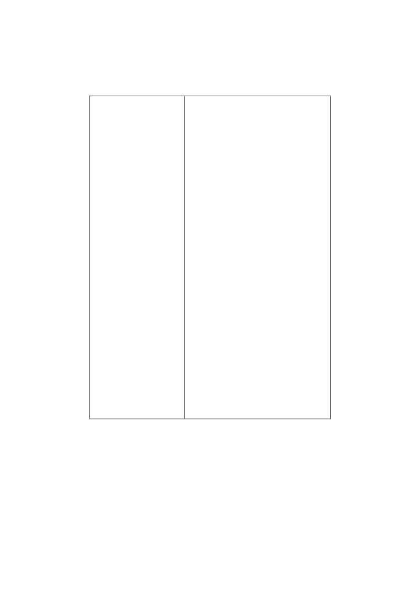

O Livro de Ouro de Saint Germain
O Livro de Ouro de Saint Germain
Fraternidade Virtual Eu Sou Luz
Grande Fraternidade Branca
Este é o Sagrado Ensinamento que o Mestre Saint Germain dispôs para a sua Era de Ouro,
e que forma parte do Terceiro Ciclo de Ensinamentos da Irmandade de Saint Germain,
depois do qual o discípulo se encontra com pleno conhecimento da sua presença “Eu Sou”.
Quanto mais for estudado e meditado o conteúdo destas palavras, mais protegido e elevado
se tornará o discípulo.
Sabemos que o amado Mestre não usa nenhuma dissimulação, ao mostrar-nos os perigos e
conseqüências ocasionadas àqueles que focarem sua atenção em leis, pessoas e vibrações
inferiores, utilizando-se de seus ensinamentos.
Aqui estão, portanto, os Regulamentos Divinos.
O cumprimento destes ensinamentos depende exclusivamente do discípulo.
**********
Caros irmãos da Terra,
Entre os vários trabalhos que realizo por vós, incluo este, responsabilizando-me pela publicação digital deste
Livro, destinado à publicação gratuita em nossa Biblioteca Esotérica Virtual.
Suplico aos amados irmãos que, se possível, após conhecer as palavras do Mestre Saint Germain, as
remetais a todos os que procuram a Luz e, se porventura, administrais algum Site, mesmo que de natureza
comercial, as coloqueis lá, disponíveis para Download dos internautas visitantes.
Fazendo isto, estareis prestando precioso serviço à humanidade.
Eu Sou ãcãrya
Seu Irmão na Senda da Luz
Livro Publicado em 01/01/02
Livro re-publicado em 25/08/03 - Estimativa de livros distribuídos até agora: 50.000 livros.
Livro re-publicado em 29/07/04 - Estimativa de livros distribuídos até agora: 70.000 livros.
1

O Livro de Ouro de Saint Germain
SUMÁRIO DE CAPITULOS
PREFÁCIO
01
Capítulos:
DISCURSO I
03
1º
Eu Sou
DISCURSO II
06
2º
Deus Ativo
DISCURSO III
10
3º
Cinturão Eletrônico
DISCURSO IV
13
4º
Fogo Criador
DISCURSO V
16
5º
Cura às Nações
DISCURSO VI
20
6º
Enfermidade "Não"
DISCURSO VII
24
7º
Faça-se a Luz
DISCURSO VIII
27
8º
O Pensamento
DISCURSO IX
31
9º
Meditação
DISCURSO X
35
10º
Energia Inesgotável
DISCURSO XI
37
11º
Deus Himalaia
DISCURSO XII
40
12º
Deus em Ação
DISCURSO XIII
43
13º
"Eu Sou"
DISCURSO XIV
46
14º
Fé - Esperança - Caridade
DISCURSO XV
49
15º
Astrologia "Não"
DISCURSO XVI
53
16º
Dia de Ação de Graças
DISCURSO XVII
56
17º
Os Andes
DISCURSO XVIII
59
18º
Atividade Sul Americana
DISCURSO XIX
62
19º
Raio Pessoal de Jesus
DISCURSO XX
64
20º
Energia Através da Mão
DISCURSO XXI
68
21º
Não Cobrar por Ensinar
DISCURSO XXII
71
22º
O Plano Psíquico
DISCURSO XXIII
75
23º
Preparação da Páscoa
DISCURSO XXIV
77
24º
O Elemento Fogo
DISCURSO XXV
80
25º
Dia de Natal
DISCURSO XXVI
84
26º
Auto Correção
DISCURSO XXVII
87
27º
Peregrinação de Jesus
DISCURSO XXVIII 90
28º
A Roda Cósmica
DISCURSO XXIX
92
29º
Os Mestres Cósmicos
DISCURSO XXX
93
30º
O Grande Sol Central
DISCURSO XXXI
95
31º
Jesus e Saint Germain
DISCURSO XXXII
98
32º
Sejais Mais Um
DISCURSO XXXIII 99
33º
Novo Ciclo
2
O Livro de Ouro de Saint Germain
Eu Sou
SAINT GERMAIN
INVOCAÇÃO: Oh, Tu, Infinita, Poderosa Presença - Tu, Princípio de Vida Onipenetrante! Nós rendemos
louvor e graças por Tua Atividade Maravilhosa através de toda Presença externa. De Tua Poderosa Essência
provém tudo o que existe, e possa a humanidade compreender que Tu és sempre e incessantemente Auto-
sustentado. Tu, Poderoso Princípio Ativo de Vida, lançaste na atividade externa da humanidade, manifesta
Tua Suprema Justiça agora em todo lugar.
Poderosa Presença de Luz- Deus em Ação! Governa as mentes dos humanos mantendo-as na Verdade e na
Justiça e vê que Teus Mensageiros sejam colocados em todas as posições oficiais: que nada do externo
interfira, para que ninguém na humanidade possa aceitar qualquer pensamento de decepção.
Poderosa Presença de Deus em Ação, lança-te em todas as mentes expressando Tua Conquistadora Presença.
Saudações: Eu vos trago saudações dos Seres Perfeitos, que de peno estão velando e tudo ministrando.
DISCURSO
A Vida, manifestada em todas as suas atividades, é Deus em Ação e é unicamente pela falta de conhecimento
na forma de ajustar o pensamento e sentimento que a humanidade está constantemente interrompendo a pura
fluência dessa Perfeita Essência de Vida que, não fosse isso, expressaria naturalmente Sua Perfeição em toda
parte.
A tendência natural da Vida é amor, paz, beleza, harmonia e opulência, porque à Vida é indiferente quem
d'Ela faz uso, mas está constantemente movimentando-se para manifestar cada vez mais Sua Perfeição através
daquele impulso ascensional de sempre que Lhe é inerente.
"EU SOU"
"EU SOU" é a Atividade d'Esta Vida. É estranho que alguns estudantes, sinceramente interessados em saber,
nem sempre consigam captar o Verdadeiro significado destas duas palavras.
Quando dizeis e sentis "EU SOU" liberais a fonte da Eterna, Imorredoura Vida, para que ela possa fluir ao
longo de Seu curso imperturbavelmente. Em outras palavras: abris amplamente a porta ao Seu escoamento
natural. Quando dizeis "Eu não sou", fechais a porta diante dessa Poderosa Energia.
"EU SOU" é a Plena Atividade de Deus. Já vos tendo exposto, tantas vezes, a Verdade de Deus em Ação,
deseja que compreendais Sua primeira expressão na individualização. A primeira expressão de todo indivíduo
em qualquer ponto do Universo, quer seja em palavra falada, quer em pensamento ou sentimento silencioso, é
EU SOU, ao reconhecer Sua Própria Vitoriosa Divindade.
O estudante, ao esforçar-se por compreender e aplicar estas poderosas, ainda que simples Leis, deve exercer
severa vigilância sobre seus pensamentos e suas expressões, por palavras ou de qualquer outra maneira, pois a
cada momento que dizeis "Eu não sou", "Eu não posso", "Eu não tenho", estais, consciente ou
inconscientemente, sufocando essa 'Grande Presença Interior', e é tão evidente como se colocásseis as mãos
em volta do pescoço de urna pessoa, com a diferença que, no caso de uma forma externa, com o pensamento a
governar vossas mãos, podeis afrouxá-las a qualquer momento, mas quando fazeis uma declaração
empregando as Palavras "Eu não sou" movimentais uma Poderosa, Ilimitada Energia que continuará a agir, a
menos que ela seja transmutada e a imperfeição consumida.
Isto vos mostra o enorme poder que possuis para qualificar esta Poderosa Energia de Deus e eu vos declaro,
amados discípulos, que a dinamite é menos perigosa, pois ela vos libertaria apenas do corpo, enquanto que
esses pensamentos desgovernados, emitidos por ignorância, vos prendem "ad infinitum" à roda das
reencarnações.
Podeis ver, assim, quão importante é para vós saberdes o que estais fazendo quando, irrefletidamente, usais
expressões errôneas, porque estais usando o Mais Divino Princípio de Atividade do Universo - "EU SOU".
Não me interpreteis mal, não se trata de uma expressão vã, estrangeira ou oriental, e sim o Mais Alto
Princípio de Vida, usado e expresso ao longo de todas as civilizações que já existiram, porque a primeira
expressão de toda forma de vida autoconsciente é "EU SOU". Foi somente mais tarde, em seu contato com a
atividade errônea exterior, que ele começou a aceitar algo em grau inferior ao "EU SOU".
Agora, queridos discípulos, não vedes que, quando dizeis "eu estou doente", estais justamente invertendo esse
Princípio de Vida que é, por natureza, toda Perfeição, imprimindo-lhe assim, por vossa voluntária ignorância,
alguma coisa que ele, originariamente, nunca possuiu?
Através de longos séculos de obstinada ignorância e incompreensão a humanidade carregou a própria
atmosfera em Seu redor com falsidade e ilusão, pois não preciso repetir-vos que quando dizeis "Eu estou
doente" estais afirmando uma flagrante falsidade em relação à vossa Divindade, que jamais pode ser senão
Perfeita, plena de Vida e Saúde.
Meditai e vereis que alívio, que libertação poderá trazer-vos esta explicação!
Peco-vos, queridos discípulos - em Nome de Deus, cessai de empregar essas expressões falsas em relação ao
vosso Deus - vossa Divindade Suprema - porque é impossível obter liberdade enquanto assim procederdes.
3
O Livro de Ouro de Saint Germain
Não é necessário que eu vos fale muitas vezes sobre isso, pois quando verdadeiramente reconheceis e aceitais
a Poderosa Presença de Deus, em vós, positivamente não há mais condições adversas.
Recomendo-vos: se concederdes poder a condições adversas, pessoas, lugares ou coisas, e em Nome de Deus,
a cada momento vos achardes a ponto de começar a dizer "Eu estou doente", "Eu estou arruinado", "Eu não
estou me sentindo bem", invertei instantaneamente essa condição, fatal ao vosso progresso, e declarar
mentalmente, mas com toda a intensidade de vosso ser - Eu Sou "EU SOU" - que é toda saúde, opulência,
perfeição, felicidade, paz, e o poder de reconhecer Perfeição em toda parte.
Quando pensais na expressão "EU SOU", significa que sabeis que tendes Deus em Ação manifestando-se em
vossa vida. Não deixeis que aquelas expressões falsas continuem a vos limitar. Relembrai continuamente:
"EU SOU" Deu sem Ação -. "EU SOU" Vida, Opulência, Verdade, manifestadas já.
Lembrando-vos, assim, dessa Invencível, Inconquistável Presença, conservais a porta aberta para Sua pura,
Invencível Essência e Inteligência tecerem, em vossa expressão externa, essa maravilhosa Perfeição.
Eu vos suplico, meus amados discípulos, não continueis a empregar essas expressões maléficas, imaginando
que, por algum simples passe de mágica, podeis colher bons resultados. É SIMPLESMENTE IMPOSSÍVEL.
Muitos de vós sabeis que se usa, nos ranchos e fazendas, o ferrete para marcar as reses como sinal de
propriedade dos estancieiros. Tão grande é meu desejo de que vos fixeis na consciência da Presença de Deus
em vós, que quase ambiciono aplicar um ferrete a fim de marcar a palavra - "EU SOU" - em vós e que não
possais separar-vos de seu uso constante, no intuito de que continueis a reconhecer, aceitar e usar esta
Poderosa, Gloriosa Presença de Deus - que sois.
Se por acaso alguma condição inferior à Perfeição tentar aparecer em vossas experiências, declarai
veementemente que isto não é verdade, e que aceitais somente Deus - a Perfeição em vossa Vida em toda
parte manifestada. Enquanto aceitardes falsas aparências, vê-las-eis manifestadas em vossa Vida e
experiência. Não se trata, amados discípulos, de uma questão de crença de vossa parte, de aceitardes ou não
estas Verdades: elas são A Lei, comprovada durante longos séculos de experiência, e são colocadas diante de
vós para vossa Libertação.
Considerai o fato de que vossos pensamentos e sentimentos no passado construíram e criaram a desarmonia
do vosso mundo de hoje. Erguei-vos! Insisto. Erguei-vos! E caminhai com o Pai - o "EU
SOU" — para que possais ficar livres dessas limitações. Existe apenas uma coisa neste Universo que pode
rodear-vos de limitação -, aceitar a aparência externa em substituição à Poderosa Presença de Deus em vós.
No mundo ocidental é agradável a idéia de que basta não crer ou não aceitar a antiga idéia oriental de
feitiçaria para estar protegido contra ela. A feitiçaria não é senão o mau uso dos Poderes Espirituais. Nos
campos da política, atualmente, está sendo usada a pior espécie, aquela que foi sempre conhecida na história
da humanidade, a utilização de poder mental mal qualificado.
Se essa mesma tremenda força mental fosse empregada no sentido inverso, ou seja, reconhecendo que Só
existe Deus em Ação em todo indivíduo que preenche cargos oficiais, aquele que enviasse esta qualidade ou
esta Verdade não apenas daria libertação a si próprio, como também o mundo da política seria preenchido
com Liberdade e Justiça. Então, desfrutaríamos de um mundo natural, onde a Ação de Deus imperaria em
toda parte.
Acontece hoje o que aconteceu outrora no Egito: aqueles que fazem mau uso do poder mental suportam o
suplício da desarmonia, encarnação após encarnação.
Fazei o seguinte propósito: "Eu não aceito condições de quem quer que seja nem de coisa alguma que me
cerque a não ser de Deus, do Bem e do meu "EU SOU", sempre comandado por Deus". Tendes necessidade
de adquirir o hábito de governar vossa energia. Sentai-vos três ou quatro vezes por dia, e simplesmente
tranquilizai o eu exterior. Isto permitirá que vossa energia seja suprida. Aprendei a comandar e a controlar a
energia em vosso corpo. Se precisardes de energia calma - sede calmos. Se precisardes de energia ativa sede
ativos. Deveis enfrentar, encarar as situações e superá-las.
O discípulo precisa estar alerta e descobrir seus hábitos, destruindo-os. Não deveria haver necessidade de
apontá-los porque ele tem obrigação de olhar para dentro de si mesmo e extirpar tudo o que não é perfeito.
Isso traz consigo uma liberdade impossível de ser obtida por outra maneira.
Conservar seus velhos hábitos é justamente como vestir velhas roupas usadas. O discípulo não deve esperar
que alguém faça essas coisas por ele. Ninguém senão ele próprio deve fazê-lo.
Neste trabalho, e sob esta radiação, tudo o que se acha latente no indivíduo vem à tona para ser consumido.
Cuidai bem para não fixar a atenção sobre o que não quereis ver aparecer em vossa vida.
É totalmente ridículo continuar relembrando insucessos do passado. Se construístes vossas limitações durante
séculos e podeis, por vossa atenção e esforço pessoal, delas vos libertar em poucos anos, então não vale a
pena? Não é maravilhoso?
4
O Livro de Ouro de Saint Germain
Para fugir a uma circunstância desagradável, às vezes, o meio mais rápido e poderoso é empregar o senso de
humor, pois uma disposição alegre e animada libera a energia que muitas vezes permite uma transformação
maravilhosa.
Aquele que se esforçar resolutamente por se libertar invocando a Lei do Perdão poderá consumir todas as
criações passadas na Chama Violeta Consumidora e ser livre. Deveis ficar conscientes de que a Chama é a
Presença Ativa de Deus agindo, transmutando e purificando.
Quando tiverdes a intuição de fazer algo construtivo, executai- o com perseverança, completando-o. Que a
manifestação venha ou não agora, é coisa que não deverá absolutamente ser considerada.
Mesmo que só intelectualmente os estudantes conheçam uma coisa, sem tê-la experimentado, não devem
permitir que a mente continue retrocedendo a condições imperfeitas, quando sabem que lhes são nefastas.
É inacreditável que as pessoas não consigam subjugar esse inimigo em suas consciências. Nenhum discípulo
poderá triunfar, até que cesse de voltar-se para as velhas condições negativas de que está procurando se
libertar.
Todo o trabalho de um mestre é conseguir meios de explicar ao discípulo a atividade da aceitação. A mente
aceita aquilo com que o indivíduo concorda, através de sua atenção, deixando que os dois se tornem um.
Quando a mente aceita e concorda com uma coisa ou condição, a pessoa automaticamente a incorpora ao seu
mundo. Onde quer que deixeis vossa atenção deter-se, estais concordando com o que lhe diz respeito e
aceitando; porque, pela atenção, fazeis com que a mente se torne una com a coisa focalizada.
Se uma pessoa visse uma cascavel enrolada, iria aproximar-se para ser atacada? Claro que não! Entretanto, é
isso o que fazem os discípulos quando permitem que sua atenção se volte para os seus problemas.
Há apenas duas atividades na Vida, e se não deixardes o Interior governar de acordo com o Seu plano de
Perfeição, é então o exterior que se sobrepõe. Quando um quadro construtivo é projetado sobre vossa mente, é
uma realidade; e essa realidade vem à tona se nela fixardes vosso pensamento.
E possível alguém tornar-se tão consciente de sua própria Presença de Deus, que a qualquer momento pode
ver e sentir Sua Radiação vertendo sobre si mesmo.
Em relação a coisas supérfluas, o externo deposita toda a confiança no mundo da matéria. Compete ao
discípulo obrigá-lo a confiar na Perfeição de Deus como confia na imperfeição dos sentidos.
O discípulo deve sempre contar consigo mesmo; e constantemente pensar: "Como posso usar as inspirações
que me foram dadas para intensificar esta atividade?"
5
O Livro de Ouro de Saint Germain
Deus Ativo
SAINT GERMAIN
INVOCAÇÃO: Oh, Tu, Presença Infinita e Onipenetrante - Tu, Poderoso Mestre dentro de cada forma
humana! Nós reconhecemos e aceitamos Tua Presença Plena manifestada dentro dessas formas, e dentro da
forma humana de cada indivíduo que Deus emitiu. Nós Te louvamos e agradecemos porque finalmente nos
tornamos conscientes dessa Poderosa Presença para Quem podemos nos volver e reconhecer como a
Plenitude da Atividade de Deus, o "EUSOU" de todas as coisas.
Saudações a todos vós.
DISCURSO
Quando Jesus disse: "EU SOU a ressurreição e a Vida", proferiu uma das mais poderosas Afirmações que
podem ser expressas.
Ao dizer "EU SOU" Ele não se referiu à expressão externa, mas sim à Poderosa Presença do Deus Interior,
porque disse repetidas vezes: "Eu, por mim, nada posso fazer, é o Pai, no meu interior - o "EU SOU" - que
realiza as obras".
Disse, outra vez, Jesus: -"EU SOU o Caminho, a Verdade e a Vida", reconhecendo o Total e Único Poder -
Deus em Ação dentro dele.
Uma outra vez Ele disse: "EU SOU a luz do mundo; o que me segue não anda nas trevas, mas terá a luz da
vida", iniciando cada afirmação de importância vital com as palavras "EU SOU".
Considerar o "EU SOU" como toda e qualquer coisa que desejais ser é um dos mais poderosos meios para
liberar o Poder Interno de
Deus, Amor, Sabedoria e Verdade, e pô-lo em ação na experiência externa.
Vamos nos referir à Sua Poderosa enunciação, talvez uma das mais grandiosas jamais expressas em
linguagem falada: "EU SOU a Porta Aberta que homem algum pode fechar". Percebeis a importância vital de
tudo isso? Quando compreenderdes plenamente estas afirmações, então vos dareis conta da grandeza de seu
alcance.
No momento que reconhecerdes e aceitardes plenamente "EU SOU" como a Poderosa Presença de Deus em
vós - em ação, tereis dado um dos mais importantes passos para a libertação.
Agora, fixai-vos bem na afirmação: "EU SOU a Porta Aberta que homem algum pode fechar"; se puderdes
compreendê-la, tereis a chave que vos permitirá atravessar o véu da matéria, carregando convosco toda a
consciência que gerastes ou acumulastes, que é imperfeita, para então transmutá-la ou elevá-la até a perfeição
na qual ingressastes.
Nunca é demais o esforço em salientar a importância de meditardes, tanto quanto possível, no "EU SOU"
como sendo a Poderosa Presença Ativa de Deus em vós, em vosso lar, em vosso mundo, em vossos negócios.
Cada vez que respirais, é Deus em Ação em vós. Vossa faculdade de expressar ou emitir pensamentos e
sentimentos é Deus agindo em vós. Como sois dotadas de livre- arbítrio, depende unicamente de vós
qualificar bem ou mal a energia emitida por vossos pensamentos e sentimentos, e determinar como essa
energia agirá por vós.
Ninguém poderá perguntar: "Como saberei qualificar essa energia"? Todos conhecem a diferença entre
pensamento, sentimento e ação, destrutivos e construtivos.
O discípulo que está recebendo esta instrução deverá constantemente analisar o motivo que se acha por detrás
da questão e investigar se esse motivo contém algum sentimento de orgulho intelectual, arrogância ou
teimosia na mente externa e no corpo. Se houver no motivo um desejo oculto de inquirir para provar que a
instrução está errada, ao invés de receber a Bênção e a Verdade pretendidas o indivíduo, inconscientemente,
fechará a porta por algum tempo à capacidade de receber o bem que lhe foi oferecido.
Quero ainda lembrar aos discípulos, não obstante suas opiniões pessoais a respeito do que possa ser a
Verdade, que experimentei, por muitos séculos, essas instruções condensadas que estão sendo agora
divulgadas. Se alguém desejar receber o maior benefício possível e o entendimento que trarão, com absoluta
certeza, sua independência e libertação, deverá ouvir com a mente inteiramente aberta, ciente de que o "EU
SOU" - a Ativa Presença de Deus em cada um é sua capacidade infalível de receber, aceitar e aplicar sem
limite a instrução que está sendo ministrada. Ela é acompanhada de uma radiação que tornará possível a
alguns discípulos, hoje em dia, entenderem essas simples, ainda que poderosas, Asserções da Verdade para
sua grande bênção e libertação.
Durante muitos séculos tem sido repetido à humanidade: "Ninguém pode servir a dois senhores". E por que
isto assim é? Primeiro, porque só existe Uma Inteligência, Uma Presença, Um Poder com capacidade de agir,
e é a Presença de Deus agindo em vós. Quando vos inclinais à manifestação externa, dando poder a toda
espécie de expressões e aparências, estais tentando servir a um senhor falso e usurpador, porque a expressão
externa só tem possibilidade de encontrar uma aparência, através do uso da Poderosa Energia de Deus.
6
O Livro de Ouro de Saint Germain
Vossa capacidade de erguer a mão, e ainda, a Vida fluindo através do sistema nervoso de vossa forma externa,
é "Deus em Ação" em vosso corpo. Amados discípulos, experimentai empregar este meio simples de
memorizar Deus em Ação em vós.
Por ocasião de sairdes à rua, pensai por um instante: "Isto representa a inteligência e o Poder de Deus que me
permitem caminhar, e esta é Sua inteligência mediante a qual eu sei para onde me dirijo". Então, vereis que
não é mais possível deixar de compreender que cada movimento que fazeis é Deus em Ação. Cada
pensamento, em vossa mente, é Energia Divina que vos dá a possibilidade de pensar. Quando admitirdes isso
como um fato - e não pode haver dúvida a respeito - por que não adorar, depositar toda confiança, crença e fé,
e aceitar essa Poderosa Presença de Deus em Ação em vós, em vez de considerar a expressão externa que é
vestida, qualificada e colorida pelo exterior, ou seja, o conceito humano das coisas indiferente à Una Poderosa
Presença que permite ao externo expressar-se?
Toda forma externa não é senão uma parte da Vida mediante a qual cada indivíduo deve reconhecer - através
das próprias experiências - a Verdadeira Fonte do seu Ser e retornar à plenitude da perfeição por meio da
sabedoria auto-consciente assim alcançada.
A experiência externa da Vida nada mais é que um incessante e mutável filme passageiro que a mente externa
criou, presumindo ser o autor real. De modo que a atenção se fixa constantemente no exterior, que só contém
imperfeição, a ponto de os Filhos de Deus esquecerem sua própria Divindade. Mas a Ela devem retornar.
Deus é o Doador, o Recebedor e a Doação, o Único Possuidor de toda inteligência, substância, energia e
opulência que há no Universo. Se os Filhos de Deus aprendessem a dar pelo prazer de dar - amor, dinheiro,
serviço ou o que quer que seja - abririam a porta a uma opulência tão vasta, que lhes seria impossível sentir
falta de qualquer coisa na expressão externa.
O mal da humanidade, que tem causado desmedido egoísmo e condenação sem precedentes de uns para com
os outros, é a idéia de insistir na posse pessoal e domínio dessas maravilhosas dádivas de Deus, quando há
unicamente Um Amor em ação, Uma Inteligência, Poder e Substância, ou seja, Deus em cada indivíduo. A
advertência que deveria estar presente a todo discípulo e indivíduo é precaver- se contra o desejo do eu
exterior de atribuir poder a si mesmo. Se em cada ato da personalidade houvesse plena confiança em Deus,
transformações inacreditáveis teriam que efetuar-se no ser, por depositar amplo crédito a quem pertence por
direito.
Raramente tem havido uma compreensão correta a respeito de suprimento e demanda. Há, positivamente,
abundante suprimento onipresente, mas a demanda deve ser feita antes que a Lei do Universo permita sua
expressão para uso do indivíduo.
O indivíduo, dotado, como é, de livre-arbítrio, deve conscientemente e com firme determinação fazer o
pedido, e este não deixará de expressar-se, seja ele qual for, desde que a pessoa que pede mantenha a
consciência resoluta e inabalável. Esta simples afirmação empregada com determinação sincera: "Eu Sou 'EU
SOU' a grande Opulência de Deus feita visível para meu uso correto, agora e sempre", trará ao indivíduo tudo
quanto possivelmente possa desejar.
O elemento limitador, do qual muitos discípulos parecem estar informados, é que eles começam declarando a
Verdade, como por exemplo nesta afirmação; antes, porém, de se escoarem algumas horas, ao se analisarem
honestamente, vão encontrar em seus sentimentos traços de dúvida ou temor. Isso, naturalmente, neutraliza
em grande escala a força construtiva, que de outro modo poderia efetuar rapidamente a realização do desejo
ou pedido.
Uma vez que o discípulo possa compreender integralmente que todo desejo ou pedido justo é Deu sem Ação
compelindo sua energia para a plena realização, e que é sempre Auto-sustentado, tornar-se- á consciente do
ilimitado Amor, Poder e Inteligência que possui para atingir qualquer objetivo.
Com esta simples compreensão, a palavra fracasso seria completamente apagada do seu mundo, e em pouco
tempo, de sua consciência, porque verificaria estar dirigindo uma Inteligência e Poder que não podem
fracassar. Assim é que discípulos e indivíduos chegam ao seu domínio pleno, como é desígnio de Deus.
Jamais foi propósito do Grande Pai Todo-Sabedoria, Todo-Amor, que a qualquer um de seus filhos faltasse a
menor coisa; mas por permitirem sua atenção fixar-se na aparência externa, que é como as areias movediças
do deserto, separaram-se eles mesmos, consciente ou inconscientemente, dessa Grande Opulência e
Inteligência.
Essa Grande Opulência é patrimônio seu, e pode obtê-la todo aquele que se voltar para o "EU SOU", o
Princípio Ativo de Deus, eternamente dentro dele próprio, como a Única Fonte de Vida Ativa, de inteligência
e Opulência.
Em todas as épocas existiram determinadas normas de conduta necessárias ao discípulo que deseja alcançar
certas metas. Isto se refere à conservação e ao governo da Força Vital por meio do sexo.
Para um indivíduo que tenha estado usando esta energia sem nenhuma intenção de governá-la, dizer
subitamente: "deixarei isto, seja como for", sem a compreensão da atitude correta de conhecimento, seria
7
O Livro de Ouro de Saint Germain
simplesmente suprimir um fluxo de energia que pode fluir numa direção errada. Para o discípulo que deseje
governar isto, provará ser muito eficiente a simples afirmação que se segue - se usada compreensivamente -
mais do que qualquer outra coisa que em particular possa ser sugerida. Ela controlará, normal e naturalmente,
o fluxo da Energia da Vida, e o conduzirá de volta ao interior dos seus canais naturais. É a Poderosa
Afirmação de Jesus: "EU SOU a Ressurreição e a Vida".
Essa afirmação não só purificará o pensamento, como também é a mais poderosa, exaltadora e ajustadora
força a ser empregada na correção da maior das barreiras que impedem de atingir a plena altura da realização
espiritual. Todo aquele que começar a sentir o Impulso Interno de corrigir essa condição, e empregar com
seriedade e constância a afirmação dada, fará subir essa maravilhosa corrente de energia ao mais alto centro
situado no cérebro, tal como foi planejado originalmente.
Ele terá a mente inundada das idéias mais admiráveis, de abundante poder sustentador e capacidade que
começarão a expressar-se para uso e benefício de toda a humanidade. Peço a qualquer discípulo que aplique
isto e aguarde os resultados em sua própria mente e corpo.
Senti profundamente esta afirmação de Jesus: "EU SOU a Ressurreição e a Vida". Repeti-a três vezes,
silenciosa ou audivelmente, e notai a elevação de consciência que experimentareis. Alguns terão necessidade
de repetir várias vezes para sentirem a espantosa exaltação que outros experimentarão diante da primeira
tentativa. Isso vos dará uma pálida idéia do que pode ser conseguido pelo seu uso continuado.
Não há senão um meio de vencer uma condição perturbadora ou superá-la, que é: depois de conhecerdes a
situação de que vos deveis livrar, afastai dela vossa atenção externa por completo, fïxando-a persistentemente
na afirmação acima. Qualquer condição que se deseje vencer na experiência externa pode ser prontamente
superada com o emprego desta afirmação, tão bem como no caso de desviar o fluxo da energia mal dirigida.
Eu tive uma discípula que sentiu o Impulso Interno de reconduzir essa Energia Poderosa, e o uso tão-somente
desta simples afirmação tornou-a capaz, com pouca ajuda, de elevar o corpo. Em um ano operou-se uma
transformação maravilhosa em toda a sua aparência externa. Parece incrível que tão poucos da humanidade
possam conceber a poderosa importância dessas magníficas Palavras de Sabedoria, contidas nas sentenças
registradas atribuídas a Jesus, e que são apenas uma parte das que Ele realmente divulgou.
Em tempo algum da história do mundo foram dadas tantas afirmações poderosas como as que Ele ensinou.
Cada uma delas, quando usada conscientemente, contém a radiação própria e o talento com que Ele triunfou.
Vós possuís não apenas este poder do "EU SOU" como também a assistência individual de Jesus, quando
fazeis essas afirmações. Dever-se-ia meditar com freqüência sobre o Significado real das Suas poderosas
afirmações. Logo que tiverdes compreendido que vosso pensamento, sentimento, e o fato de expressar o "EU
SOU" põem em ação a Poderosa Força de Deus em vós — sem qualquer limite - recebereis aquilo que
constitui vosso desejo.
O discípulo não deveria ter dificuldade em ver e entender que a aparência externa nada mais é do que uma
distorcida criação do homem, que atribui ao externo a fonte de poder, quando um só momento de reflexão
levá-lo-ia a compreender que existe apenas Um Amor, Uma Inteligência e Um Poder com capacidade de agir,
que é Deus.
O lado humano, quer sejam os defeitos externos ou as discrepâncias, nada tem a ver com a Onipresente
Perfeição de Deus, porque tudo o que é imperfeito é criação da concepção externa da humanidade. Se o
homem voltar-se para o seu Eu Superior, sabendo que Deus é todo Perfeição e que qualquer aparência externa
é apenas criação humana, por meio do uso indevido do Poder de Deus, se considerar e aceitar sinceramente a
Perfeição de Deus, verá, em seguida, manifestar-se em sua vida e experiência essa mesma Perfeição Poderosa.
Não há possibilidade de trazer essa Perfeição para vossa mente, corpo e experiência externa, a não ser pelo
conhecimento e aceitação da Grande Presença de Deus em vós. Tal reconhecimento pleno induzirá este Poder
Interno a impelir essa Perfeição de Deus para vossa visível experiência externa.
Dizei aos discípulos "Como um Mensageiro dessa Verdade, Eu Sou 'EU SOU' divulgando Afirmações da
Verdade que positivamente produzirão resultados, se forem mantidas e usadas sem esmorecimento". Os
discípulos pensam que elas não darão resultado - isso porque fazem hoje uma coisa e na semana seguinte
esquecem tudo.
O desejo de Luz e Verdade é a Presença de Deus no desejo, impelindo a Si Mesma a entrar em ação. Para
obter iluminação, usai esta sentença: "EU SOU a plena compreensão e iluminação deste assunto que eu
preciso saber e compreender".
No dia em que vossos olhos se abrirem para ver alguns desses Maravilhosos Seres Ascensionados, vossa
alegria perdurará por toda a eternidade.
Se uma pessoa não assumir a atitude: "Eu tenho capacidade para fazer isto", nunca no mundo poderá realizar
aquilo que deseja.
No momento em que declarais: "EU SOU a Ressurreição e a Vida", em pensamento e sentimento,
imediatamente volta-se toda a energia de vosso Ser para o centro, dentro do cérebro, que é a Fonte de vosso
8
O Livro de Ouro de Saint Germain
Ser. Não podeis aquilatar a Força contida nessa afirmação. Não há limite para o que podeis, por meio dela,
conseguir. Foi a afirmação que Jesus mais empregou em suas mais difíceis provações.
Tende sempre em mente que quando decretais uma coisa construtiva, é Deus em vós induzindo-vos a fazê-la.
A coisa mais tola que se possa imaginar é perguntar: "Já comprovastes isso em vossa experiência?" Todo
indivíduo tem de tirar a prova por si mesmo, do contrário ela não terá significação alguma para ele. Nada,
realmente, tem significação para quem quer que seja, até o dia em que disso faça uso.
O sentimento traz consigo uma certa visão coexistente. Muitas vezes sente-se uma coisa com grande clareza,
porque na realidade está sendo percebida do ponto de vista interior.
À medida que entrais no Estado Ascensionado, pensamento, sentimento, visão e cor se vos manifestam quase
simultaneamente. O som, quando harmonioso, é suave, razão por que a música que enleva é a mais repousante
em seus efeitos, enquanto que a música estrondosa é justamente o oposto.
9
O Livro de Ouro de Saint Germain
Cinturão Eletrônico
SAINT GERMAIN
INVOCAÇÃO: Oh, Tu, Infinita, Onipenetrante Presença! Com Tua Poderosa Radiação em constante
movimento por toda a atmosfera da Terra, Nós Te louvamos e agradecemos pelo acelerador Poder Crístico de
Amor e Sabedoria, que sem a menor dúvida está elevando a consciência da humanidade acima do egoísmo
sórdido da atividade do eu externo.
Nós Te louvamos e agradecemos por nos havermos tornado sempre conscientes de Tua Poderosa e Ativa
Presença e porque, no reconhecimento consciente de Ti, Tu carregas incessantemente nossas mentes e nossas
corpos com Tua Pura Presença.
Eu Trago Saudações da Hoste Radiante para todos vós.
DISCURSO
Eu hoje projeto este discurso do âmago da Radiação do Grande Cinto Eletrônico; do coração da Cidade de
Ouro partem os Raios Gêmeos, sobre os quais se acham o verbo, a luz e o som.
Aproximou-se rapidamente o tempo em que devemos estar mais inteirados sobre os Grandes Cintos
Eletrônicos que cercam toda a criação, da Divindade Suprema ao indivíduo.
O Cinto Etérico ao redor da Cidade de Ouro é impenetrável - bem mais do que uma muralha de aço de muitos
metros.
Assim, em menor escala, pode o indivíduo, com suficiente compreensão do Princípio Ativo do Deus Interno,
rodear-se de um Cinto ou Círculo Eletrônico, a que pode imprimir a qualidade que preferir; mas ai daquele
que o qualificar descritivamente. Quem for bastante temerário para fazê-lo, verá este Cinto de força eletrônico
fechar-se sobre sua própria forma exterior, que será consumida; mas aqueles que com sabedoria o constróem e
o qualificam com o Poderoso Amor de Deus e poder construtivo, viverão num mundo inatingido pela
ignorância da humanidade.
É chegado o Período Cósmico em que aqueles que alcançaram um certo grau de compreensão devem criar,
aplicar e usar esse Maravilhoso Cinto Eletrônico. Toda criação, que é dotada de ação autoconsciente, possui
naturalmente em seu redor este círculo de pura força eletrônica, mas em grande parte sua força é
desgovernada e consequentemente dissipada.
Ao criar conscientemente esse poderoso anel de pura força eletrônica, vedais todas as fendas ao produzir essa
Essência limitada, e a mantendes em reserva para uso e direção conscientes. Depois de alguns meses dessa
consciente atividade criadora do anel eletrônico e permanência dentro dele, deve-se ter muito cuidado em
liberar ou dirigir essa força, que deve ser movida somente pelo Amor Divino. No começo da individualização
do homem ele estava naturalmente cercado por esse Círculo Mágico, mas como a consciência baixasse cada
vez mais, resultaram rupturas nesse Grande Círculo de força, causando escapamentos, até que ele desapareceu
quase completamente. Isso não era, entretanto, uma criação consciente do indivíduo, mas um círculo natural
que o envolvia.
Agora, os discípulos da Luz devem empenhar-se em trabalhar sem vacilar, e conscientemente criar esse
Círculo Eletrônico em seu redor - visualizando-o Perfeito, sem fendas ou rupturas na sua construção. Assim
poderão atingir conscientemente o interior do Cinto Eletrônico da Divindade Suprema, lá receber
ilimitadamente Sabedoria, Amor, Luz, e conhecer o emprego de simples Leis que lhes permitirão adquirir
todo o poder criador. Embora cada um de vós seja convidado a voltar-se sempre para sua Presença, Deus
dentro de si mesmo, que é o Criador de sua individualização, nunca atingirá o adjetivo sem que tenha tido a
assistência daqueles que estão mais adiantados.
Como não há senão um Deus, a Presença Una, e Sua Atividade Toda-Poderosa, Aquele que está mais
avançado que o outro é um pouco mais do Ser Divino em Ação. Reconhecendo esta unidade, compreendereis
por que podeis sentir "EU SOU' aqui e 'Eu SOU' ali", pois em toda parte não há senão o Uno Deus Interior.
Quando o discípulo chega a compreender que a Hoste dos Mestres Ascensionados é apenas sua própria
consciência mais avançada, começa a sentir as possibilidades incalculáveis que estão ao seu alcance. Quer
fale diretamente à Divindade Suprema, quer a um dos Ascensionados Mestres de Luz ou ao seu próprio Deus
Interior, na realidade não há diferença, porque todos são Um.
Até que se atinja esse Estado de Consciência, faz-se diferença, porque o indivíduo está quase certo de sentir
divisão do Uno Interior. Esta divisão é impossível, salvo na ignorância da atividade externa da mente.
Quando o discípulo pensa na expressão externa, deve Ter sempre presente que ela é apenas a atividade
externa da Inteligência Una, evitando sempre tentar dividir, em sua consciência, essa Poderosa Força de Deus
centralizada nele.
Novamente devo lembrar-vos que essa Ilimitada, Poderosa Força de Deus, não pode introduzir Seus
maravilhosos poderes em vossa atividade externa sem vosso convite. Não há senão uma espécie de convite
que possa atingir e liberar o indivíduo: vosso sentimento de profundo Amor e devoção. Quando alguém gerou
10
O Livro de Ouro de Saint Germain
em torno de si esse cinto ou anel eletrônico, não há poder que consiga penetrá-lo, exceto a Amor Divino. Só
vossa consciência do Amor Divino pode penetrar no âmago desse Resplandecente Cinto da Divindade
Suprema, através do qual a Divindade vos envia Sua Grande Efusão, notai bem, por intermédio de Seus
Mensageiros. Esses Seres Transcendentes ultrapassam de tal modo vossa concepção atual, que não é possível
transmitir-vos em palavras a Majestade do Amor, da Sabedoria e do Poder desses Grandes Seres.
Devo lembrar-vos novamente que o estudante que "ouse e cale", trabalhando em silêncio, será elevado à
radiação transcendente dessa Secreta Esfera; então, pela experiência e pela vista, compreenderá aquilo de que
acabo de falar. A alma que é bastante forte para vestir- se com sua Armadura de Amor Divino e ir avante não
encontrará obstáculo, porque nada existe entre vossa consciência presente e essa Poderosa, Transcendente
Esfera Interior que obstrua a aproximação do Amor Divino.
Quando houverdes tocado e visto o interior desse Círculo Interno, compreendereis quão imperfeita é a atual
expressão do Amor Divino. Aquele que se torna consciente a respeito dessas Grandes Esferas, nas quais se
pode penetrar, sem temor mergulha, cada vez mais profundamente, na Radiação desse Poderoso e Inteligente
Centro do Universo, de onde vêm todos os mundos e toda a criação.
Há entre vós almas fortes, corajosas, destemidas, que compreenderão tal coisa e serão capazes de empregá-la
em grande benefício próprio e dos demais. Há os que compreenderão e verão que a Presença, que faz bater
cada coração, é Deus em Ação; que a atividade motora da circulação no corpo é Deus; que a Essência, que
prossegue revitalizando a forma externa, é Deus em Ação.
Portanto, queridos discípulos, despertai para isto agora! Não vedes que é um grande erro soçobrar na
ignorância do eu externo, sentir dor, enfermidades, miséria e perturbações, todas criadas pela ignorância e
pela atividade do eu exterior? Alguns momentos de meditação séria vos farão compreender que só pode haver
Uma Presença, Uma Inteligência, Um Poder agindo em vossos pensamentos, em vosso corpo, que é Deus.
Vede como é simples, contudo poderosa, essa Consciência em vós. Ela permite o pleno conhecimento da
Grande e Pura Atividade de Deus em vossa mente e em vosso corpo e faz com que sua Essência Maravilhosa
e Transcendente inunde cada uma de vossas células até transbordar.
Na minha opinião, queridos discípulos, não podeis deixar de apossar-vos desta simplicidade de vosso
Verdadeiro Deus Interior agindo em vós. Voltai-vos sempre para Ele louvando-o, amando-o, pedindo e
comandando infiltrar-se em cada célula de vossa corpo, em cada exigência da atividade externa, no lar, em
vossos afazeres e nos negócios. Quando vosso desejo é emitido envolto na Presença de Deus, no Seu Poder e
na Sua Inteligência, não pode falhar. Ele deve trazer-vos aquilo que desejais. Desejar é apenas uma atividade
inferior a querer. Querer é e deve ser o reconhecimento do desejo realizado. E vos asseguro jamais deveis ter
qualquer temor com relação ao emprego deste Grande Poder. Sabeis, sem que seja preciso vo-lo dizer, que se
O empregardes para o mal recolhereis discórdia, se O empregardes construtivamente ele vos trará benefícios
incalculáveis, de modo que só podereis render louvores e graças ao momento em que despertastes para o fato
de que este Poder Ilimitado é onipresente, aguardando sempre vossa direção consciente.
Aquele que disse que não podeis acrescentar um côvado à vossa altura pelo pensamento, sufocou a atividade e
o progresso do indivíduo, porque pensamento e sentimento são o Poder Criador de Deus em Ação.
O descontrolado emprego do pensamento e do sentimento trouxe quase toda sorte de discórdias, doenças e
misérias. Entretanto, poucos crêem nisso, e prosseguem continuamente criando, pelo pensamento e pêlos
desejos desenfreados, o caos em seu próprio mundo; eles poderiam, tão facilmente como respirar, inverter a
situação usando seu pensamento construtivamente com a força motriz do Amor Divino, e erigir para si um
Paraíso Perfeito dentro do período de dois anos.
A própria ciência física tem demonstrado que o corpo ou forma exterior se renova completamente em poucos
meses. Então, deveis concluir como é fácil criar Perfeição em vosso corpo, fazendo cada órgão voltar à sua
Perfeita atividade normal - mediante a compreensão consciente e a aplicação das Verdadeiras Leis do vosso
Ser. Em pouco tempo seria impossível entrar a desarmonia em vosso pensamento ou em vosso corpo. Este
grande privilégio é a Porta Aberta de Deus diante de vós; ninguém pode fechá-la senão vós mesmos.
Ninguém pode obstruir ou interferir nisso a não ser vós. Empregai destemidamente vosso Domínio e Poder
dados por Deus e sede livres. Não podeis atingir e manter essa Liberdade Perfeita senão pela aplicação
consciente do conhecimento.
Agora vou revelar-vos um segredo que, se compreendido por um ser irascível ou perturbador, desvia-lo-á
dessa atividade destrutiva, ainda que apoiado num ponto de vista egoísta. A pessoa irritada, propensa a
condenar, que emite pensamentos, sentimentos ou palavras destrutivas contra outra - que está firmada no seu
próprio poder - recebe de volta a má qualidade com que carregou esse poder, enquanto que a pessoa
equilibrada recebe a energia que a abastece e que automaticamente requalifica pelo seu próprio equilíbrio.
Assim, o criador de discórdia, através de raiva e condenação, por si se destrói, seu mundo de atividade e seus
negócios.
11
O Livro de Ouro de Saint Germain
Eis um ponto vital que os discípulos deverão compreender: quando alguém alcança conscientemente o
Círculo Eletrônico Interno de Deus, sua expressão exterior e atividade externa tornam-se um canal para a
expansão da Pura Essência da Divindade. Mesmo que ele guarde completo silêncio exteriormente, isto em si é
um dos maiores serviços em prol do gênero humano, e somente poucos dentre os não-Ascensionados fazem
uma idéia do que significa para a humanidade.
Aquele que alcança o interior do Círculo Eletrônico transforma- se num manancial contínuo, e essa Radiação,
por si só, constitui um formidável benefício para toda a humanidade. Assim, séculos após séculos, tem havido
esses altruístas Mensageiros de Deus, por intermédio dos quais é enviada a Bênção para aqueles que não
compreendem a Presença edificante dessa energia em movimento. Quando são encontradas uma ou mais
pessoas altruístas, capazes de atuar como canais para esta grande Presença, é como se fosse o primeiro gotejar
de água por vazamento numa barragem.
Se a consciência é perseverante e firme, pode-se compará-la a uma barragem cujo vazamento aumenta,
permitindo a saída de um volume de água cada vez maior, porque toda obstrução é removida e toda a força
que a acompanha irrompe para ser utilizada, ao contrário da água represada, que se espraia e dissipa porque
não tem direção. O Poder Divino, assim liberado, vai direto ao canal de consciência mais receptivo e lá se
acumula, esperando oportunidade de projetar-se cada vez mais para diante. Dessa maneira, o discípulo da
Luz, à parte sua atividade de distribuidor da Verdade, torna-se, por assim dizer, um poço artesiano, de cujas
profundezas jorra essa Poderosa Essência de Deus.
Os discípulos deveriam ter sempre presente que, sejam quais forem os erros cometidos, Deus nunca os critica
ou condena, mas a cada deslize diz doce e amorosamente: "Levanta-te, meu filho, recomeça a experiência e
continua a experimentar, até que finalmente consigas a verdadeira vitória e a liberdade de teu Domínio
Divino."
Sempre que alguém tenha consciência de haver cometido um erro, seu primeiro ato deve ser: invocar a Lei do
Perdão e pedir sabedoria e força para não cometer o mesmo erro uma segunda vez. Sendo Deus todo Amor,
tem uma Paciência Infinita, e não obstante a quantidade de erros cometidos é sempre permitido, uma vez
mais, "Levantar e caminhar para o Pai". Tal o amor e a liberdade em que os filhos de Deus têm o privilégio de
agir.
Há unicamente um poderoso, invencível processo de evolução, e este é pela faculdade de gerar
conscientemente Amor Divino. Sendo o Amor o Centro de toda Vida, quanto mais tem lugar em nós e O
usamos conscientemente, mais fácil e rapidamente O liberamos. Essa Poderosa Força Divina permanece
sempre como uma força represada, à espera de encontrar uma abertura em nossa consciência através da qual
possa projetar-se.
Pela vez primeira, em muitos séculos, os Holofotes ou Raios da Cidade de Ouro, sobre o Deserto do Saara,
foram postos em funcionamento ativo sobre a Terra. Pode haver alguns seres que vejam estes Raios sem saber
o que significam.
Os homens não devem pensar que podem continuar gerando forças destrutivas e sobreviver a elas
longamente. Aqueles que puderem empregar este Conhecimento do Círculo Eletrônico não devem por mais
tempo ser privados dos seus benefícios. Divulgai isto e a advertência também.
Usai esta afirmação: "EU SOU a atividade concluída e o poder sustentador de toda coisa construtiva que eu
desejo". Empregai-a como uma afirmação geral, porque o poder sustentador está em tudo o que existe. "EU
SOU aqui e EU SOU ali", em tudo o que queirais realizar, é uma esplêndida maneira de sentir que estais
usando a Atividade Una, e assim vos elevais acima da consciência de separatividade.
12
O Livro de Ouro de Saint Germain
Fogo Criador
SAINT GERMAIN
INVOCAÇÃO: Oh, Tu, Poderosa Chama Consumidora de Deus! Nós nos curvamos diante do Teu Imenso
Poder Majestoso. Nós exultamos com a Tua Sabedoria Dirigente. Nós nos regozijamos pela Tua Presença no
coração de cada um dos Mensageiros de Deus, que partem para dirigir Seu Serviço e Energia para bênção da
humanidade. Nós rendemos louvor e gratidão por ter a Tua Presença mudado o curso dos acontecimentos e
por seres Tu, como sempre, a Poderosa Inteligência Governante.
Nós Te louvamos e agradecemos porque Teu Fogo Consumidor e Tua Atividade Criadora, que residem no
coração de cada um de Nós, estão prontos para serem liberados pelo desejo consciente em ação. Nós
louvamos e agradecemos por seres Tu a Presença Consumidora em toda a pane, por seres "EU SOU" lá, 'EU
SOU' aqui, e 'EUSOU' o Poder que torna claras todas as coisas".
"Eu Sou 'EU SOU' a Majestosa 'Presença', Eu Sou 'EU SOU' o Poder Conquistador, Eu Sou 'EU SOU' Tua
'Poderosa Energia', Tua Chama Consumidora a toda hora".
Eu trago Saudações para todos vós do Coração do Fogo Criador.
DISCURSO
O Fogo Criador de "EU SOU" é a Chama de Deus, Sua Presença Mestra ancorada no coração de cada um dos
filhos de Deus. Se bem que em alguns Ela seja apenas uma simples chispa; entretanto, se for tratada
corretamente, esta chispa pode converter-se em um grande Fogo Criador e Chama Consumidora. Essa
Poderosa Presença, Deus em Suas múltiplas atividades, é a Atividade Onipresente que todos podem usar sem
limite, bastando, para isso, recusarem-se a aceitar a aparência externa, que é tão- somente uma aparência, e
desviarem a atenção daquilo que por anos sem conta os tem mantido prisioneiros.
Hoje, o Cetro do Poder e da Autoridade permanece à vista, diante de todo discípulo em evolução. A princípio,
os estudantes devem esforçar-se mentalmente e empunhar o Cetro da Autoridade, usando-o dessa forma, até
que, antes mesmo de terem a menor consciência disso, eles O descobrirão, tangível e visível ao usá-lo.
Não é vã promessa que os que buscam a Luz podem novamente receber esse Domínio. Quando atravessamos
um bosque, sabemos que é possível voltar pelo mesmo caminho, se o desejarmos, mas nós devemos tomar a
decisão. Do mesmo modo, após séculos de investigação no externo, à procura de poder e autoridade,
verificamos que tudo o que parece ser tal coisa é apenas areia movediça, que amanhã pode desaparecer.
Pela aceitação jubilosa do vosso Domínio Divino, podeis pisar com firmeza sobre a base segura da Rocha da
Verdade, que é Deus, de onde nenhum distúrbio externo poderá jamais vos derrubar, uma vez que o sabeis por
experiência própria.
Estudantes da Verdade se admiram de não poder permanecer firmemente ancorados na Presença de Deus, que
é seu Domínio. Eles não analisam sua expressão externa para ver o que nela há de oculto causando
perturbação, polêmica e dúvida; mas para aqueles que assumirem a autoridade que lhes pertence e sondarem
profundamente suas causas, será muito fácil separar o joio dos grãos de ouro, e assim se libertarem dessa
perturbação que os leva a duvidarem de si mesmos e até da Presença de Deus, que pulsa em seus corações.
Quando os discípulos forem suficientemente honestos consigo mesmos e com Deus, sua "Presença 'EU SOU'
", para arrancar pela raiz tudo aquilo que estiver causando perturbações dentro deles, e forem capazes de
sentir a Poderosa Luz e Radiação do Grande Deus Interior, descobrirão ser necessário pouco esforço para
liberar a Grande Presença "EU SOU" em Amor e Inteligência, o que representa um permanente Poder
Sustentador em força, segurança, e tudo aquilo que necessitem para se manter firmes sobre a Rocha da
Verdade, uma das Grandes Jóias do Reino de Deus. Sua Deslumbrante Radiação os envolverá diante da mais
leve solicitação.
Oh, discípulos de hoje! Apegai-vos a esta Poderosa Presença que faz pulsar vossos corações, cuja Vida
circula em vossas veias, cuja Energia flui através de vossa mente; tendes livre-arbítrio e podeis qualificá-la e
abençoá-la, seja para vossa perfeição ou imperfeição. Lembrai-vos sempre: se deixardes de invocar essa
Poderosa Presença, dando assim motivo a criar desarmonia e desordem, deveis esperar muito tempo até
conseguir plena identificação com essa Poderosa Força e conceder-lhe total atividade em vossa Vida.
Não vos torneis impacientes por não se realizarem as coisas com a rapidez que seria de vosso agrado. Elas só
podem agir de acordo com a presteza da vossa aceitação e a intensidade do vosso sentimento.
A Poderosa Energia que se lança através de vossa mente, dentro de vosso corpo, é a Pura Energia Eletrônica
de Deus, a Poderosa Presença "EU SOU". Se vosso pensamento se conservar alegremente ligado ao vosso Ser
Divino, considerando-o como origem de vosso ser e de vossa vida, essa Pura Energia Eletrônica continuará a
atuar inalterada, sem ser contaminada pela discordante qualificação humana; mas se, consciente ou
inconscientemente, permitis que vosso pensamento comece a agitar-se com a discórdia que freqüentemente
vos cerca, então mudais a cor e a qualidade dessa Pura Energia Radiante.
13
O Livro de Ouro de Saint Germain
Ela tem que atuar, e sois vós a única pessoa que escolherá a maneira pela qual ela agirá para vós. Não penseis
nunca que podeis fugir a este simples fato. É uma imutável Lei de Deus e nenhum ser humano poderá jamais
modificá-la. Os discípulos devem compreender e cultivar esta atitude, se quiserem obter um progresso
constante.
Advirto-vos, Meus amados: podeis encolerizar-vos, duvidar, temer e rebelar-vos tanto quanto vos aprouver,
ante vossa autocorreção, mas é esta a porta aberta para a vossa poderosa Iluminação e Liberdade de todas as
limitações no mundo externo de atividade. Muitos discípulos quando chegam a um certo grau de
entendimento onde todos os resultados de seus atos lhes são revelados - e contemplam os muitos erros
cometidos que devem ser corrigidos - tornam-se desencorajados, criticam-se e condenam-se eles próprios ante
Deus. Isto é outra grande erro. Tudo o que lhes é revelado com referência àquilo em que eles reconhecem ter
cometido erro deveria alegrá-los muitíssimo, porque as coisas reveladas são as que precisam ser corrigidas.
Sabendo que Deus é o Poder de pensar, então sabem que possuem o Poder de corrigir isso, e deveriam pôr-se
alegremente a trabalhar neste sentido.
O Poder da Vida de Deus, que lhes faz pulsar o coração, é prova absoluta de que têm, dentro em si, a
Inteligência e o Poder de Deus, por meio dos quais podem dissolver e consumir todos os erros e as criações
discordantes que consciente ou inconscientemente geraram em seu mundo. Devem dizer a essa criação
indesejável: "EU SOU a Poderosa Chama Consumidora que agora e para sempre consome todos os erros
passados e presentes, suas causas e efeitos, e toda criação indesejável pela qual meu ser externo é
responsável".
É estranho que os discípulos pareçam ter tanta dificuldade em se aferrar e reconhecer o Poder Ilimitado que
manejam, ao dizerem "EU SOU", quando até o intelecto, que é só atividade externa, sabe isto. Os discípulos
devem intensificá-lo com todo o seu empenho sentindo a profundeza dessa Verdade. Assim, encontrarão
sucesso e poder grandemente aumentados por seu uso ativo. Eu vos digo, amados discípulos, chegou a hora
em que podeis usar esse Poder com grande autoridade para libertar-vos das cadeias da limitação que por tanto
tempo vos prenderam.
Começai, com alegre determinação, a por os vossos negócios em ordem. Se fôsseis hospedar uma pessoa
distinta, certamente gastaríeis dias trabalhando intensamente, limpando, lavando, polindo e tudo preparando
para esse hóspede. Muito mais importante, porém, é fazer os preparativos para esse Grande Príncipe de Amor
e Paz - O Príncipe do Fogo Consumidor que habita dentro de vós e controla o elemento fogo.
Quando se pensa em Oromasis, Príncipe do Elemento Fogo, invocando Sua ajuda para ativar o Poder Criador,
os resultados obtidos são incalculáveis.
Quando falais em Nome, Poder e Autoridade do "Grande 'EU SOU' " liberais energia ilimitada para realizar
vossos desejos. Por que permitir por mais tempo que a dúvida e o medo vos assaltem, quando "EU SOU a
Porta Aberta da Grande Opulência de Deus aguardando o momento de curar, abençoar e fazer prosperar
abundantemente?" Ousai ser, sentir e usar essa Poderosa Autoridade - Deus em vós!
Amados discípulos, não compreendeis que podeis expressar Perfeição se, com suficiente intensidade,
mantiverdes a opinião de que: "EU SOU a Poderosa Energia Eletrônica fluindo, carregando e renovando cada
célula de minha mente e de meu corpo - neste mesmo instante?" Não vedes que, se fizerdes isso com
intensidade suficiente, em poucos minutos ou horas podereis dissipar qualquer estado de perturbação da
mente ou do corpo e permitir que essa Poderosa e Pura Energia realize seu trabalho sem ser colorida ou
afetada por qualquer elemento discordante do vosso próprio pensamento? Vós podeis renovar qualquer nervo
ou órgão e construir qualquer membro do corpo na sua perfeição original, quase imediatamente. Por que não
sentir essa possibilidade e aplicá-la? E quando começardes a experimentar os surpreendentes resultados, vossa
confiança passará de um salto à sua Atividade Perfeita, vossa mente terá toda confiança nessa Poderosa
Presença e Poder, assim como no Seu uso onipresente e ilimitado.
Quando houver aparente falta de energia, mantende uma atitude alegre e decidida, dizendo: "EU SOU a
Poderosa Presença dessa Energia Radiante e Alerta que surge através de minha mente e de meu corpo,
dissolvendo tudo o que é estranho a Ela. Eu me conservo nesta Energia Radiante, Alerta, e nessa Alegria para
sempre". Podeis passar essa Energia Pura através de vossa mente e corpo, tanto como eu poderia descer
minha mão diante de vós.
Não passa pela Minha Memória que em tempo algum houvesse tanta assistência ao alcance dos discípulos da
Luz como tem havido agora, e eles deveriam aproveitar esse benefício com intenso regozijo.
A princípio, pelo fato de não sentirdes qualquer força eletrônica atravessar-vos, não significa que não tenhais
recebido essa Poderosa Energia, que com autoridade comandastes fluir através de vossa mente e corpo.
O mesmo pode ser aplicado aos assuntos que talvez não estejam de acordo com o vosso desejo de ordem e
harmonia. O discípulo pode invocar sua "Poderosa Presença 'EU SOU'", enviá-la aos seus negócios e seu
mundo, comandá-la consumir tudo o que d'Ela difere e substituir pela Poderosa Perfeição de Deus - que é
"EU SOU"; pode comandar-lhe que permaneça Auto-sustentada e que obrigue essa Perfeição a manifestar sua
14
O Livro de Ouro de Saint Germain
autoridade e poder incessantes, limpar seu mundo de toda coisa discordante, porque "EU SOU a Suprema
Autoridade - Deus em Ação".
Não é necessário fazer isso sob tensão, tampouco permitir que o corpo fique tenso, ele só deve elevar-se na
Supremacia e Dignidade da Autoridade de Deus e purificar tudo o que for necessário. Ao fazê-lo, não é
preciso falar em voz alta, mas sim em tom muito baixo, de mestria.
Ficai em pé, sozinho em vosso quarto, e declarai: "EU SOU" Senhor do meu mundo. EU SOU a Vitoriosa
Inteligência que o Governa. Eu lanço em meu mundo essa Poderosa, Radiante e inteligente Energia de Deus.
Eu comando que Ela crie toda a Perfeição, que Ela atraia para mim a Opulência de Deus tornada visível em
minhas mãos e para meu uso. EU SOU, não mais a criança em Cristo, mas a Presença Mestra que atingiu a
Estatura Completa, e eu falo e comando com autoridade".
Dessa maneira, podeis consumir os erros e imperfeições que tenhais criado e, na autoridade do "EU SOU",
reconstituir, imediatamente, a perfeição desejada. Sabei que isso é constantemente auto-sustentado, enquanto
não intrometerdes a atividade discordante de vosso pensamento e sentimento.
Desejo intensamente que possais sentir que sois a Única Autoridade, neste mundo ou em qualquer outro, no
que concerne ao vosso mundo. Não receeis, jamais, que a perfeição do vosso mundo possa causar dano a
quem quer que seja, pois isso não ocorrerá enquanto não tiverdes a intenção de prejudicar alguém. Não
importa o que digam as pessoas que vos cercam, ou quanto procurem elas lançar sobre vós suas dúvidas,
receios e limitações. Sois a Suprema Autoridade em vosso mundo, e a única coisa que tendes a fazer, quando
envolvidas por essas condições, é dizer: "EU SOU o Poderoso Círculo Mágico de Proteção que me cerca, que
é invencível e afasta de mim todo pensamento e elemento discordante que procurar penetrar ou interferir. EU
SOU a Perfeição do meu mundo, e ela é Auto-sustentada".
Oh, discípulos queridos! não é necessário duvidar, vacilar e conjeturar por mais tempo: "EU SOU a
Autoridade". Continuai, ousai ser e empregai essa Autoridade de Deus que está expressa no "EU SOU" de
tudo. Por que não serdes destemidos? Desejais a Presença desses Grandes Seres Ascensionados? "EU SOU a
Presença Visível desses muito amados Mestres Ascensionados, a quem eu peço que me apareçam agora, e
Cuja Assistência invoco".
Chegastes ao ponto em que podeis afastar qualquer discórdia das vossas mentes. Preenchei vossas mentes
com esta Pura Essência Eletrônica, e a discórdia não poderá penetrar enquanto as conservardes carregadas
com essa "Presença". Ainda uma vez vos digo: sois a autoridade no vosso mundo, e se vosso pensamento
estiver impregnado dessa Essência a discórdia não poderá tocá-lo. Vamos nos apoderar dessa Autoridade e
usá-la, superar toda discórdia e declarar com absoluta certeza: "EU SOU a Supremacia do homem onde quer
que eu vá - EU SOU Deus em Ação".
* * *
NOTAS
A Hoste dos Anjos se rejubila com a volta ao lar do filho pródigo - aquele que vagou tanto tempo à procura de
Poder e somente encontrou ilusões (Maya). Após ter dissipado sua riqueza (energia), volta à casa do Pai - a
Fonte de Energia Divina
- que o restabelece de todas as desarmonias que contribuíram para seu
envelhecimento e decadência.
CIDADES ETÉRICAS
Sobre os principais desertos existem Cidades Etéricas. Sobre o deserto do Arizona está a Cidade Etérica para
a América. Existe uma sobre o Saara e outra sobre o Gobi. A que existe sobre o Brasil é a Cidade Etérica para
a América do Sul.
A humanidade deveria saber e dever-se-ia fazê-la compreender que muitas e muitas vezes os habitantes das
cidades passam pela chamada morte e reencarnam no mesmo lugar, porque se formaram ligações que os
atraem novamente aos mesmos ambientes. O discípulo que tiver de reencarnar deverá assumir o comando:
"Da próxima vez nascerei numa família de Grande Luz". Isto lhe permitirá um progresso muito rápido.
15
O Livro de Ouro de Saint Germain
Cura às Nações
SAINT GERMAIN
INVOCAÇÃO: Oh, Tu, Poderosa e Infinita Presença! Tu, Presença Curativa Onipenetrante! Desce e realiza
Teu Trabalho! Tu, Poderosa e Infinita Inteligência! Emite Tua Confiança e Tua Força! Enche a mente e o
corpo de cada um com Tua Radiante Presença! Enche cada célula com Tua Radiante Presença! Revela Tua
Presença por Tua Conquistadora Mestria e Poder. Poderosa Presença Mestra dentro de cada um - desponta!
Extingue esse exterior eu-humano e mantém Teu Domínio agora e sempre! Há somente Uma Inteligência,
uma Presença, uma Essência, um Amor- e és Tu. Derrama Tua Radiação através desses mantos exteriores de
carne e comanda que Tua Perfeição seja, então, manifestada e sustentada.
Trago-vos saudações da Grande Hoste, que está sempre emitindo sua Radiação e Inteligência.
Assumi o comando: "Eu Sou 'EU SOU' a Pura Essência Eletrônica que enche minha mente e meu corpo, e a
nada mais eu admito". Deus em vós é o senhor de todas as situações, continuamente. Dizei muitas vezes: "Eu
SOU sempre a Presença Vitoriosa do Poderoso 'EU SOU'".
Senti a poderosa corrente de Essência Eletrônica encher-vos a mente e o corpo, apagando instantaneamente
toda atividade desarmoniosa e dando-vos a Consciência, Mestria e Vitória.
Comandai: "Divina Presença! Derrama Tua Radiação através desta mente e deste corpo e vê que Tua
Sabedoria dirija sempre toda atividade exterior".
DISCURSO
A grande necessidade, hoje em dia, é a cura das nações e dos indivíduos. Assim como é dada ao indivíduo
assistência, mediante a expansão da Energia Eletrônica através da mente e do corpo, preenchendo-lhe todas as
células, também em grau mais amplo a nação recebe igual tratamento. A nação é um grande corpo de
indivíduos e de criações da Natureza. Temos o mesmo poder para atuar neste sentido, porque somos a
Presença de Deus individualizada. Sabemos, pois, que "EU SOU" está presente em toda parte, e quando
minha consciência se expande, eu sei que Sua energia se arremessa para agir em tudo, tanto nas células do
corpo do mundo como nas do corpo do indivíduo. É importante compreender que a Ativa Presença de Deus
Todo-Poderoso está presente em todo lugar, que não existe um só recanto em parte alguma onde não esteja a
Ativa Presença de Deus, e que essa Ativa Presença junta toda criação humana, e consome instantaneamente
aquilo que for de natureza desarmônica e indesejável: somente o livre-arbítrio do indivíduo impulsionado por
sua ignorância e descrença pode detê-la.
A Divina Sabedoria atua através do "EU SOU", repelindo o que não estiver compreendido dentro do sistema.
Dessa maneira, esta Onipresente Sabedoria, através de nossa ação consciente, está constantemente incitando-
nos a recusar tudo aquilo que possa perturbar sua harmoniosa atividade, seja através do sentimento, do
pensamento ou da alimentação.
As correntes de Pura Energia Cósmica estão sempre fluindo através da atmosfera da Terra, como fachos de
luz de um farol; e todos deveriam manter-se receptivos a essas correntes vitais.
É verdade que, onde as condições são muito densas para que esta Energia possa penetrar, ela passa por cima
ou por baixo delas, e segue seu curso, apesar de tudo. Desde o início de 1932, cada indivíduo anda e se move
constantemente dentro de Poderosas Correntes Curativas. Pelo Poder de Cyclope (Vista), a Secreta Estrela de
Amor, e dos Raios provenientes da Cidade de Ouro, correntes de Força Curativa de tremendo Poder são
conscientemente dirigidas através da atmosfera da Terra. Compreendereis que essas correntes - que pela sua
própria natureza constituem Energia de Deus em Atividade - são naturalmente Automantidas. Tendo o
indivíduo consciência de que elas estão presentes, poderá contatar esses Raios a qualquer momento.
Os discípulos que possuem um sentimento de patriotismo e desejam auxiliar sua nação deveriam persuadir-se
de que essas Correntes Curativas não somente atingem os indivíduos mas também atuam sobre situações,
ambientes e cargos oficiais como uma Chama inteligente. Elas estão efetuando um trabalho de proteção e
soerguimento dos filhos da Terra nunca dantes realizado com tão poderosa energia, desde a criação deste
planeta. Quanto mais os indivíduos se tornarem conscientes desta operação, tanto mais virão a ser poderosos
mensageiros e assistentes neste trabalho extraordinário.
Há uma influência sinistra que estamos enfrentando na atividade terrena; é a força mental que atua
conscientemente no incitamento a guerras. Aqueles que desejam trabalhar no sentido de dissolver esta
situação deverão meditar sobre este conhecimento, até captarem toda a sua importância. Convictos, eles
empregarão seus esforços, sabendo que essas Correntes de Energia Eletrônica Consumidora, dirigidas
conscientemente através da atmosfera da Terra, não podem sofrer interferência e que, a cada esforço sincero e
intencional do indivíduo, no desejo de auxiliar, surgirá uma consciência dessa Energia que até então ele não
possuía.
16
O Livro de Ouro de Saint Germain
Encontram-se, algumas vezes, indivíduos muito bondosos e de natureza tão sensível que o súbito
conhecimento de que precisam renunciar a certos tipos de alimento, ou qualquer outra atividade, constitui
uma espécie de impacto.
A esses indivíduos eu desejaria dizer que a Inteligência Divina, que vive dentro de cada um, fa-lo-á
abandonar, com naturalidade, as coisas que não estão de acordo com esta Grande Presença, a cada passo do
caminho, quando se faz necessário. Para que um indivíduo abandone conscientemente um hábito, deve contar
com alguma coisa que sinta ser mais forte e em que se possa firmar. À medida que os discípulos se tornarem
conscientes disso, confiança e força lhes advirão para dar o passo à frente.
Como já sugeri em certa ocasião, eu desejaria que o discípulo, pelo menos uma vez por dia, ou mesmo mais,
impregnasse a atmosfera de sua casa com esta Pura Energia Eletrônica; assim, aquela própria Presença de
Deus impediria a entrada de alimentos, de pensamentos e de presenças indesejáveis.
Os que entram em vosso lar merecem auxílio e deste modo receberão toda a assistência que desejam e que
tereis prazer em dar; mas jamais tenteis impor quer o conhecimento, quer a doutrina, seja a quem for. Pelo
exemplo e a aplicação do que ouvem e aceitam podem essas pessoas conhecer algum dia a Realidade.
Quando dizeis "EU SOU" reconheceis o Poder que derruba todas as barreiras e toda resistência. O ser humano
é exatamente como um leão faminto na selva. Ele despedaçará seja o que for para conseguir alimento. O
mesmo ocorre com a consciência humana que fará em pedaços seu melhor amigo a fim de atingir o seu
objetivo.
Em toda substância astral, há esse elemento humano do desejo, através da qual o indivíduo - a não ser que
feche por completo sua mente ao mundo astral - será constantemente interrompida nas boas resoluções, pois
deixou essa porta aberta a uma força muito mais sutil que qualquer outra que possa ser encontrada no mundo
físico. Muitos pensam que há forças benéficas no mundo astral. Eu vos digo: jamais força alguma benéfica
vem do mundo astral. Qualquer força do bem que aparente vir de lá, constrói seu próprio Túnel de luz a fim
de atravessá-lo.
Em primeiro lugar, de que é constituído o mundo astral? Só há um lugar onde as criações indesejáveis podem
encontrar abrigo, e é no degrau próximo à atividade humana, que é o reino astral. Esse reino de atividade
astral encerra toda a criação indesejável acumulada durante séculos. Portanto, nenhum bem pode advir do
contato com o astral. ELE NADA CONTÉM DO CRISTO.
Há uma diferença tão grande entre o reino de atividade astral e o que alguns denominam Estrela Astral, como
a que existe entre a luz e as trevas. A Estrela Astral se chama, realmente, "Estrela Astral" e é um Ser Cósmico
da Quarta Esfera, Cujo Trabalho é consumir tudo o que for possível no plano astral e alertar os indivíduos
cuja atenção pareça ser atraída para lá. Esse Grande Ser esclarecerá, mais cedo ou mais tarde, a compreensão
de tais indivíduos e consumirá seu desejo de manter qualquer contato com aquele plano infeliz. Não existem
crianças no plano astral. O lar das crianças que deixam a Terra é no plano etérico. As pessoas que estão em
corpo físico, quando dormem, vão para a mesma região que os desencarnados. A Presença "EU SOU" possui
uma Consciência Auto-sustentadora que se sairmos com Ela enquanto dormimos, por meio desse Poder
sustentador estaremos em condições de atingir alturas incríveis. Se tiverdes consciência dessa "Presença EU
SOU" através da manifestação exterior, e levardes essa Consciência convosco ao penetrardes em outros
planos, Ela vos proporcionará uma proteção incalculável.
Há um momento no decorrer de nossa vida que exige o reconhecimento consciente e o emprego de "EU SOU
a presença de Deus em Ação". Quando transportamos esta Consciência conosco através do véu do sono, a
alma é capaz de funcionar fora da corpo com um poder quase ilimitado.
Suponhamos que haja uma necessidade semelhante na atividade física. Antes de adormecermos poderemos
dizer assim: "Por meio do Vigoroso Poder e da Inteligência que EU SOU - eu saio enquanto meu corpo
dorme, estabeleço contato consciente com esta vivência e desempenho-a plenamente seja ela qual for".
Sabendo que essa atividade é Auto-sustentada, ela não poderá falhar de modo algum. É uma poderosa
maneira de por em movimento a "Presença EU SOU". Tudo o que "EU SOU" comanda enquanto o corpo
dorme tem que ser obedecido. Sei de um caso dessa natureza, em que havia necessidade de proteção. O
protagonista tinha uma certa consciência dessa Presença. O indivíduo estava caindo através de um
despenhadeiro e essa "Presença EU SOU" instantaneamente construiu uma forma, agarrou o indivíduo e
tornou a pô-lo a salvo.
Quando ingressamos na senda espiritual e penetramos em algum ambiente onde possa haver perigo, devemos
sempre efetuar algum trabalho rápido, positivo, para nossa proteção, porque até que ascensionemos o corpo
estará sempre mais ou menos em contato com o pensamento exterior da humanidade. Se o discípulo estiver
escalando montanhas, deve fazer um trabalho de proteção e fazê-lo conscientemente. Se o discípulo mantiver
sempre a sua proteção consciente, será capaz de evitar a destruição de outros indivíduos.
17
O Livro de Ouro de Saint Germain
Proteção num navio: "Deus é a Força Toda-Poderosa que protege e dirige este navio, por isso ele navega
numa zona de absoluta segurança". Na senda consciente, deveis estar sempre vigilantes e em ação. Haverá
quem pense ser isto uma sugestão de medo, mas não é. É o reconhecimento do Poder Protetor Onipresente.
Carros: "Deus é Onividente e Onisciente, vê com antecipação e evitará naturalmente todo contato
indesejável". Quando dizeis: "Deus está dirigindo este carro", a Visão de Deus vai na frente, enxerga
quarteirões e milhas adiante, e vos advirá o impulso de vos dirigirdes para a rua que está desimpedida. "Por
estar Deus dirigindo este carro, nosso caminho está desobstruído em todo o trajeto".
Há duas razões pelas quais os discípulos sofrem acidentes:
Primeiro - porque ao se tornarem irritados abrem brechas em sua aura que permitem, então, o acesso de
influências nefastas do plano astral.
Segundo - porque o discípulo se descuidou enquanto dirigia.
Sempre que fazemos algo com atitude positiva e dinâmica, o exterior vai adquirindo mais confiança e por
conseguinte não falha.
Para projetar um Cinto Eletrônico ao redor de outrem, dizei: "EU SOU o Cinto Eletrônico Protetor em torno
de..." Quando dizeis: "EU SOU o Anel ou Cinto Protetor", forma-se instantaneamente esse Cinto Eletrônico
invencível, invulnerável e Intangível.
Compreendei que quando dizeis "EU SOU" seja o que for ordenado é feito poderosamente no mesmo
instante. Não podeis empregar a "Presença 'EU SOU" sem que haja atividade instantânea.
Dizei com freqüência: "EU SOU a Inteligência Onipresente, Toda- Poderosa e Protetora que governa esta
mente e este corpo". Ela está instantaneamente onipresente em ação quando dizeis "EU SOU". O "EU SOU"
que está presente em toda parte está naquele ponto, trabalhando naquele momento. Este é o processo de
pordes em atividade, pelo meio mais direto, a Ação Toda-Poderosa do "EU SOU" que é Tudo em Todos.
Relembrai constantemente à consciência exterior que, quando dizeis "EU SOU", pondes em ação todos as
atributos da Divindade.
Chegastes agora ao ponto em que deveis ter atividade instantânea. Quando, em alguma situação, dizeis "EU
SOU", significa que a ação imediata está acontecendo nesse particular pelo Maior Poder do Universo. No
momento em que vos tomardes conscientes de que "EU SOU" é a Plena Atividade de Deus, contendo todos os
atributos de Deus, nesse momento tereis entrado no uso pleno desse Imenso Poder. Empregai freqüentemente:
"EU SOU a Presença que realiza minha Mestria". Assumi a consciência da Poderosa Presença, para quem
apelais, quando dizeis "EU SOU".
Quando dizeis: "EU SOU 'EU SOU' a Ascensão deste corpo físico neste instante", então tereis, nesse instante,
aceitado e entrado nessa atividade. Quando vos esforçais por obter Luz e ação ilimitada, estais vos esforçando
pelo Maior Objetivo no mundo. Enchei vosso mundo com a "Presença EU SOU" e, ao fazê-lo, senti que a
fazeis conscientemente.
Se alguém assumir a consciência de que "EU SOU a Atividade Perfeita em cada .órgão e célula do meu
corpo", consequentemente isto se manifestará. Basta que sejais conscientes desse fato e ele se realizará.
Dizei com freqüência: "EU SOU a Saúde Perfeita agora manifestada em cada órgão do meu corpo". Depositai
toda a confiança no vosso "EU SOU" em vez de depositá-la na medicina terrena. Suponhamos que desejais
uma atividade grande e inteligente, então dizei: "EU SOU a Perfeita e inteligente atividade neste corpo". Não
podeis fazer isso e ao mesmo tempo pensardes em tomar um medicamento.
Para esclarecer a mente, os olhos e os ouvidos:
"EU SOU a Inteligência Perfeita, ativa neste cérebro".
"EU SOU a Visão Perfeita vendo através destes olhos".
"EU SOU a Audição Perfeita ouvindo através destes ouvidos".
Continuai esses tratamentos com determinação e eles não poderão falhar. Tendes as rédeas, usai-as agora!
Evitai o emprego de palavras que recordem as condições limitadas anteriores.
Quando fordes conscientes do "EU SOU" não mais vos importará o que alguém faça neste mundo. Não vos
deveis preocupar com o que quer que seja, a não ser com o vosso mundo.
Apagai de vossa mente tudo o que não seja a operação consciente do "EU SOU", porque Ele é o mais alto
Poder que existe e procurai sentir como é fácil a produção desses milagres aparentes.
Ao tentar fazer algo que pareça impossível, usai a atividade "EU SOU". Não deis atenção ao que possam
dizer. Apenas afirmai especificamente o que quereis produzir.
Repeti muitas vezes: "EU SOU a única Presença que atua nisto".
Dizei: "EU SOU a única Presença que age em meu mundo".
Para encontrar objetos perdidos: "EU SOU a Inteligência e a Olho Onividente que acha isto".
Ficareis maravilhados com o sentimento que nascerá dentro de vós, quando não tiverdes que considerar outra
coisa senão o "EU SOU".
18
O Livro de Ouro de Saint Germain
Suponde que desejais iluminar um aposento; dizei: "EU SOU a iluminação deste quarto". Dessa forma atuais
sobre os elétrons existentes no quarto, uma vez que a iluminação da atmosfera de um compartimento é tão
fácil como o ato de erguerdes vossa mão. Vossa capacidade de iluminar uma sala é tão simples como a de
consegui-lo por intermédio da lâmpada elétrica. Podeis estabelecer o contato com a corrente Universal de
eletricidade tão facilmente como através dos fios elétricos.
Para tornar visível a iluminação no interior de vosso próprio corpo, dizei: "EU SOU a iluminação visível
através deste corpo neste instante". Há um ponto focal justamente dentro de vós.
O "EU SOU" em vós criou todas as coisas na Universo.
Quando tiverdes confiança no "EU SOU", sem demora Ele eliminará todos os obstáculos.
Usai com freqüência: "EU SOU o Poder e a Presença Consumidora de toda partícula de medo, dúvida e
incerteza de minha mente exterior relativa à Invencível Atividade do 'EU SOU'". Conservai isto convosco e
sabereis sempre, instantaneamente, o que fazer.
A Consciência do indivíduo veste a sua forma com os conceitos pertencentes a Ela, e quando esses conceitos
são atraídos ao redor de alguém que tenha gerado uma certa energia, impõe-lhe as coisas do Seu próprio
mundo. Portanto, todas as vezes que sentirdes um súbito impulso de alegria, apossai-vos dele, usai-o e
decretai-o.
19
O Livro de Ouro de Saint Germain
Enfermidade "Não"
SAINT GERMAIN
INVOCAÇÃO: Oh, Tu, Poderosa. Infinita Presença! Criador de tudo o que existe, sempre majestoso em Tua
Conquistadora Presença, só a Ti damos Poder! Retiramos para sempre todo o poder que sempre demos às
coisas exteriores e permanecemos serenos em Tua Majestosa Presença, em Teu Amor, em Tua Sabedoria e
Poder. Sabendo que "EU SOU 'EU SOU' aqui, 'EU SOU' lá e 'EU SOU' em toda parte, então EU SOU 'EU
SOU' sereno em Tua Majestosa Presença, manifestando Teu Amor, Tua Sabedoria, Teu Poder e Julgamento,
porque possuo Tua previsão e vejo muito além das possibilidades humanas". Rendo louvor e graças por
reconhecer e aceitar, agora e para sempre, unicamente a Tua Poderosa, Vitoriosa Presença em todas as coisas,
na minha Vida, no meu mundo, na minha mente e no meu corpo.
Regozijo-me por ter Eu colocado em torno de cada chama Teu Círculo Mágico Invencível, Impenetrável a
tudo que não sejas Tu. Eu monto guarda à minha Vida, ao meu corpo, à minha mente, ao meu mundo e aos
meus negócios para que nada se manifeste a não seres Tu. Nós Te agradecemos.
DISCURSO
Continuai relembrando à mente exterior que quando dizeis "EU SOU" pensando no Infinito Poder de Deus
pondes esse Poder em movimento para realizar com êxito a idéia mantida na consciência, ou a idéia em que se
prendeu vossa atenção. Os discípulos sinceros não devem esquecer isso por um momento sequer, até que a
Verdade se torne tão relacionada com a atividade exterior, que atue automaticamente. Portanto, vereis como é
ridículo dizer: "EU ESTOU doente, EU ESTOU em dificuldades financeiras", ou o que pareça representar
deficiência de alguma coisa. Eu vos digo que não existe possibilidade de serdes afetados se vos apegardes a
essa idéia, por isso empregai-a.
Quando pareceis estar resfriados, não é necessário que se vos diga que useis lenço. Então, por que será preciso
lembrar-vos que a atividade exterior dispõe exclusivamente de um Poder para movimentar-se, e este é a
"Presença EU SOU", Deus em vós? É lamentável que discípulos sinceros muitas vezes não meditam o
suficiente sobre esta Verdade, para que sua maravilhosa Presença entre em atividade.
Por exemplo: se disserdes "EU SOU a Majestosa e Vitoriosa Presença preenchendo todos os cargos oficiais",
e sustentardes com firmeza esta afirmação em vossas mentes logo percebereis as bênçãos que disso vos
advirão.
Preservai-vos sempre, no vosso contato com o externo, de aceitar inconscientemente a aparência das coisas ou
o pessimismo dos chamados financistas. Deus governa vosso mundo, vosso lar, vossos negócios e isso é tudo
o que vos deve interessar. Nunca penseis que seja apenas vossa imaginação, quando percebeis e sentis que se
aproxima a plena manifestação desta Poderosa Presença Individualizada. Alegrai-vos! Acreditai na Poderosa
Presença que conserva em seu abraço tudo no mundo que possais desejar ou usar. Não sois dependentes das
coisas exteriores. Penetrando alegremente nesse Imenso Poder e Presença que tudo contém, não vedes que
seríeis sempre providos, mesmo que todo suprimento fosse cortado?
Quero que sintais e que aceiteis prazerosamente, com todo o vosso ser, que o Poder de precipitação não é um
mito, é real. Aqueles que penetrarem profundamente nesse sentimento terão a precipitação de tudo o que
desejam.
Crianças têm sido castigadas por verem Seres Angélicos e por manifestarem Percepção Interior. Os pais é que
mereciam ser castigados, por ousarem interferir no dom divino da liberdade da criança. Se os adultos
vivessem mais nesta percepção consciente e na aceitação dessas Poderosas e Grandes Presenças, de cuja real
existência a maior parte da humanidade duvida, sentiriam sua Presença e sua edificante, sustentadora
inteligência.
Meus queridos discípulos! Se repentinamente sentimos faltar- nos coragem ou força: "EU SOU agindo e
suprindo instantaneamente essa falta". Se necessito harmonia na minha mente ou no meu corpo, neste caso,
"EU SOU ali, suprindo-a instantaneamente", e não preciso esperar.
Não penseis no mundo ou nos indivíduos que não compreendem essas coisas. Prossegui direto, regozijando-
vos com a Presença visível e ativa, precipitada em vossa Vida e para uso de tudo que desejais.
Nosso senso comum externo, como é chamado, deve dizer-nos que: a menos que aguardemos, aceitemos e
nos regozijemos na "Presença" da coisa que desejamos, como podemos esperar obtê-la? O pobre e
insignificante ser exterior empavona-se, dizendo: "EU SOU demasiado importante para dar atenção a
semelhantes contos de fadas". Pois bem, deixai-me dizer-vos: um dia, os indivíduos que declaram isso terão o
máximo prazer em escutar essas histórias de fadas, e encher seus cérebros com essas idéias para que possam
progredir.
Em qualquer circunstância, no contato externo do mundo dos negócios, toda vez que se apresentar uma
condição negativa que pareça atingir de alguma forma o vosso mundo, imediatamente tomai a firme
20
O Livro de Ouro de Saint Germain
resolução: "EU SOU a precipitação e a Presença Visível de tudo o que desejo e pessoa alguma pode nisso
interferir".
Quando falo de precipitação por esse modo, não quero dizer somente por meio do invisível, mas através de
qualquer canal, porque tudo é uma precipitação; existe apenas uma diferença pequena na atividade.
Quando Eu reconheço que EU SOU, então entrei no "Grande Silêncio", onde tem lugar a maior atividade de
Deus. Tal reconhecimento deverá trazer grandes revelações ao indivíduo, se ele o aceitar prazerosamente.
Em vossa experiência externa, a prática de qualquer atividade desenvolve cada vez mais a eficiência, não é
assim? Se isto se processa na atividade exterior, não vedes quão mais importante é quando se aplica à
Atividade Interna? Quanto mais a usais, maior poder lhe comunicais. Ficai sabendo que podeis fazer isso com
os motivos Espirituais Internos, em muito maior escala e mais rapidamente do que com as coisas externas,
porque, com o Espírito, o Poder age instantaneamente. Não há espera quando age o "EU SOU".
O fato de que a musculatura se desenvolve por meio de exercícios deveria levar-nos a concluir que, se o
mesmo esforço fosse empregado em exercitar e reconhecer o Poder Interno, naturalmente produziria
resultados grandiosos. Por exemplo: os homens procuram fazer exercícios físicos para desenvolver a
musculatura. Entretanto, eu tornei possível muitas e muitas vezes que meus pensamentos desenvolvessem
poderosos músculos num corpo belo e simétrico sem sequer praticar um simples exercício. Em todo o
desenvolvimento, seja do interno ou do externo, a primeira parte do exercício é mental. Devemos saber que há
somente um Poder e Energia para usarmos, e isto vem da "Presença de Deus EU SOU" em nós. Por
conseguinte, o exercício de vossas faculdades internas é necessariamente mental - denominada mental - mas
eu vos digo que é Deus em Ação, porque não podeis formular um pensamento sem a Inteligência e a Energia
de Deus para executá-lo. Portanto, vossa atividade mental é a Energia de Deus em Ação. Agora vede como é
fácil e possível construir um corpo físico forte e simétrico sem ser preciso sequer levantar a mão em
exercícios físicos para consegui-lo.
A maioria dos cientistas, médicos e professores de educação física negarão esse fato, mas eu vos asseguro que
é unicamente por não terem despertado ou refletido profundamente sobre a energia ou o poder atuante, pois
nenhuma espécie de atividade pode ter lugar a não ser pelo uso dessa energia e poder interior. Algumas
pessoas permitem-se alimentar dúvidas e temores a respeito do conhecimento e utilização dessas Grandes
Faculdades que se acham permanentemente à sua disposição. Observai que essas Faculdades estão apenas
submersas, por assim dizer, pelo externo, tal como a rolha de cortiça, que tendo permanecido pressionada sob
a água, uma vez posta em liberdade assoma imediatamente à superfície.
Devo dizer que é realmente lamentável que discípulos sinceros gastem tantos anos esforçando-se de quando
em quando para obter O uso dessas faculdades e depois, pelo ato de não agirem elas Imediatamente, recaiam
num estado de inatividade até que alguma coisa os estimule, para depois esmorecerem novamente. O
reconhecimento persistente e determinado dessa "Presença EU SOU" vos levará a resultados absolutamente
certos, a não ser que abandoneis a tarefa.
Vejo, especialmente nesta época, um número considerável de indivíduos que, com um pouco de incentivo e
descrição do uso simples dessas faculdades, rapidamente darão um salto para a liberdade, especialmente
aqueles que recebem esta instrução verbal e a Radiação que a acompanha.
Não é, então, de espantar, que filhos e filhas de Deus se submetam às limitações de toda ordem, quando, com
persistente esforço e determinação, poderiam abrir a porta e penetrar nesta grande Câmara Interna, cheia de
Deslumbrante Luz, jóias, ouro e substância da qual toda espécie de alimentação do Universo pode ser
precipitada? Mesmo com esta Verdade clara diante deles, tais criaturas ainda vacilam descrentes em dar o
passo definitivo, empunhar esse cetro e ser livres.
Queridos! Novamente vos digo: "Entoai a Grande Melodia da Presença conquistadora 'EU SOU'". Cantai-a
em vossos corações continuamente. Senti-a com toda a vossa capacidade, decididos a usá-la. Apegai-vos a
essa resolução, e o conhecimento, e o caminho se vos abrirão para vos dar essa Mestria, que é a vossa Eterna
Libertação. Simplesmente lembrai-vos que já atravessastes o véu.
Seja qual for a Mestria que o indivíduo tenha adquirido sobre si mesmo, seus assuntos ou seu mundo, essa
Mestria é e deve ser sempre um recinto sagrado, um santuário interior no qual nenhum, indivíduo indagador
possa penetrar. Ninguém pode conseguir a Mestria se pretende apenas imitar outrem. Procurar, achar e aplicar
a Lei do seu próprio Ser é a rota segura para a Mestria e somente quando o indivíduo tiver realizado isto é que
poderá realmente compreender o que é a Verdadeira Mestria. Só há uma Mestria a ser procurada, e esta
procura deve ser feita sobre o ser exterior da própria pessoa que A busca.
Pode-se andar durante anos ao lado de um Mestre sem percebê-lo, até que Suas próprias Faculdades Interiores
revelem o fato. Pode- se viver durante anos na mesma casa com um Mestre e ignorá-lo, até que surja alguma
crise a ser tratada, e o Seu Verdadeiro Poder seja revelado.
Para um Mestre, debater ou expor Suas próprias realizações de Mestria seria dissipar Suas forças, e isso não
deve ser feito jamais.
21
O Livro de Ouro de Saint Germain
Se um discípulo for bastante afortunado em desfrutar de uma bela experiência e se puser depois a comentá-la
com terceiros, geralmente haverá tanta dúvida na mente dos ouvintes lançada sobre ele que logo começará a
duvidar de si mesmo. É verdadeiramente estranho o poder convincente que podem ter os argumentos de uma
outra pessoa. Se um discípulo escuta os argumentos de quem quer que seja, por que não fazer ao menos o
mesmo com o seu Deus individual e ouvir o respeito de Seu Poder e Bem, expressos pela Experiência
Interior?
Desde o momento em que começa a entrar a dúvida, mais dúvida se precipita. O mesmo ocorre com o "EU
SOU". Quanto mais atenção aplicais sobre Ele, mais Ele se precipita. Onde a atenção consciente se fixar, lá
precipitar-se-á energia. Queridos! Quando desejais a revelação de alguma coisa ou quando desejais ser
inspirados de alguma forma, dizendo "EU SOU", lançais em movimento este Poder que tem inerente, dentro
de Si, todas essas faculdades. Ele encerra toda a substância e deve tomar a forma sobre a qual esteja fixada a
atenção da mente.
O "EU SOU" é a Mente Insondável de Deus. No esforço por conseguir compreender, o estudante comum está
apenas contatando a memória do passado, ao invés de entrar no Coração de Deus e extrair aquilo que ainda
não foi revelado.
Os discípulos muitas vezes não compreendem que têm havido muitas civilizações de imensas realizações que
são totalmente desconhecidas hoje em dia. A Atlântida, a Lemúria, ou a Terra de Mu são apenas fragmentos
das grandes civilizações que já existiram.
Para efetuar coisas fora do comum, os discípulos que desejam consegui-las devem tomar a firme
determinação: "EUSOU o Coração de Deus, e eu agora crio idéias e realizações que nunca antes foram
produzidas".
Considerai somente: "EU SOU aquilo que desejo criar". A "Presença EU SOU" é o Coração de Deus. Entrais
imediatamente no "Grande Silêncio" no momento em que dizeis "EU SOU". Se reconheceis que sois o "EU
SOU", então aquilo que declarais se manifesta naquele momento. Crer é ter fé em que uma coisa é verdade.
Há uma entrosagem entre crença e fé. No começo, uma coisa é crença mas, se mantida, ela se transforma em
fé. Se não acreditais que uma coisa é verdade, não podeis trazê-la à manifestação. Se não acreditais em "EU
SOU tal coisa", como pode ela manifestar-se?
O velho ditado: "Não há nada bom ou mau, o pensamento é que torna as coisas boas ou más" é uma verdade
absoluta.
Sabendo que a Energia de Deus penetra no indivíduo absolutamente Pura e Perfeita, deveis então
compreender que é o próprio indivíduo quem modifica essa energia, imprimindo-lhe sua impureza. Essa Pura
Energia de Deus penetra continuamente no homem, com as batidas de seu coração, e ele a requalifïca
projetando- a na atmosfera.
Este é seu privilégio como Criador, à Imagem e Semelhança do Pai.
Todos estão qualificando constantemente esta energia que jorra sem cessar. Cada qual está continuamente
transmitindo a ela sua cor, através de sua própria consciência.
Toda atividade do exterior que qualifica, leva consigo a inerente faculdade do som e da cor. Nenhuma
atividade, seja de que espécie for, pode ter lugar que não possua dentro de si som e cor que lhe são inerentes.
A Perfeição de Deus não tem, por natureza, nenhuma descoloração internamente. É no interior da faculdade
externa, que dá qualidade às coisas, que tem lugar a descoloração. Todo discípulo deve assumir a
responsabilidade de sua própria atividade, ao qualificar a energia que emite.
A mente não pode atuar sobre coisa alguma que não possua em si mesma Inteligência inerente. Seja o que for
que fizerdes, não leveis em consideração o elemento tempo, no sentido humano, mas iniciai vossas obras com
alegria e perseverai até que elas se manifestem. Se vos apoiardes firmemente na Poderosa Presença de Deus
em Ação, entrareis na plenitude e perfeição de tudo, à vossa disposição para uso imediato. Toda conquista
permanente deve ter lugar mediante o esforço autoconsciente do indivíduo.
P. - Que é mágoa?
R. - É simplesmente a concordância com a imperfeição. Jamais vos deixeis invadir pela mágoa humana.
Cuidai para que ela não vos arraste pela areia movediça adentro, quando podeis usar asas para vos elevardes
acima de tudo que é destrutivo. Não julgueis, mas continuai a penetrar alegremente na "Presença EU SOU" e
todas as coisas se manifestarão Perfeitamente.
Para qualquer condição deficiente, especialmente velhice, usai: "EU SOU a Perfeição desse indivíduo".
Assim tereis posto Deus em Ação dentro dele.
Seja o que for que disserem no mundo exterior, não vos deixeis afetar, pois estais vos encaminhando para essa
Perfeição e deveis manifestá-la conscientemente.
Se não tiverdes cuidado, podeis, num momento, deixar entrar uma expressão que poderá seguir-vos durante
anos, senão a suprimirdes. Quando usais conscientemente a Grande Lei, sabei que o ativo Poder do
Pensamento de Deus conhece perfeitamente seu rumo, vai e atua com Perfeição. Conscientemente, encarregai
22
O Livro de Ouro de Saint Germain
a "Inteligência EU SOU" de usar tudo o que for necessário. Dizei: "Inteligência 'EU SOU', qualifica isto com
tudo que for necessário".
Eu tive um discípulo que de tal forma qualificou o Circulo Eletrônico ao seu redor com o poder de curar, que
era chamado "Sombra Curativa". Não era evidentemente a sombra que curava, mas no momento em que as
pessoas contatavam seu Círculo Eletrônico, eram curadas instantaneamente.
P. - Compreendendo Deus como Amor, por que foi que Deus Se individualizou?
R. - Para ter algo que amar.
P. - Por que foram divididos os Raios?
R. - A fim de expressar Amor.
Amor é o Principio Ativo de Deus. Quando amais, envolveis o objeto de vosso amor com este "Manto de
Deus", nesta Radiante Presença. Jamais critiqueis.
Procurai sempre expressar compreensão todas as vezes que pareça haver uma errônea atividade sexual, e
erguei a consciência do indivíduo focalizando a atenção num ideal elevado de qualquer espécie, a fim de
controlar o pensamento, de modo que a atividade sexual possa ser submetida ao controle consciente do
indivíduo, mediante o emprego de sua própria vontade.
O uso correto e puro do sexo é para a expansão e expressão do Amor na procriação de uma forma, de modo
que a alma que está por vir possa ter um caráter e temperamento harmoniosos e amorosos. O pensamento e o
sentimento dos pais são a atividade que influencia e molda. A natureza do Princípio de Vida do indivíduo é
para amar.
23
O Livro de Ouro de Saint Germain
Faça-se a Luz
SAINT GERMAIN
INVOCAÇÃO: Oh, Tu, Poderoso Velador Silencioso! Tu, que tens diante de Ti o Cristal Cósmico, emite
Teus Raios, fixando-os nos corações dos Filhos de Deus. Ensina-lhes obediência às Grandes Leis Cósmicas.
Ensina-lhes obediência à Luz. Enche seus corações e mentes com Tua Paz, com Teu Silêncio, com Teu
Equilíbrio. Que a Alegria de Teu Coração encha os corações de cada um até transbordar, com Tua Substância
e Tua Pura Força Eletrônica que traz Consigo Tuas Incomensuráveis, Infinitas Bênçãos.
Que cada um por sua vez sinta Teu Cuidado Vigilante e Onipresente, Teu Amor Sustentador, Tua Sabedoria e
Poder.
DISCURSO
Quando partiu a ordem: "Faça-se a Luz"! - a obediência foi a primeira atividade; consequentemente, Luz
Ilimitada foi feita. O mesmo ocorre com toda atividade externa do Único Princípio Ativo, Deus. A primeira
atividade do externo deveria consistir em prestar perfeita obediência a essa Presença Interior. Dessa forma ele
se torna apto a receber harmoniosamente a Pura Essência inalterada; e assim deveria ser para com os amigos,
parentes, associados e com qualquer outra pessoa, de qualquer condição ou idade.
Deveria haver sempre esta maravilhosa graça de Amor, Luz e obediência. Acalmai com freqüência a
expressão externa, porque ela precisa é de obediência à Grande Luz Interna. Quando surge o impulso para
discutir, criticar ou experimentar uma resistência, é sinal de que o externo está se intrometendo para chamar
atenção sobre si. É a hora, então, pelo poder de vosso livre-arbítrio, de mandar o externo silenciar e obedecer
à "Presença 'EU SOU'".
É inútil discutir. Silenciai o exterior; então, com amorosa obediência, dai a Instrução. Dessa maneira Ela pode
manifestar-se sem impedimento.
Quando os discípulos tiverem penetrado na senda consciente, o mais leve indício de distúrbio ou resistência
de qualquer espécie deveria ser seguido instantaneamente do silenciar de toda a atividade externa, e da
declaração: "EU SOU a atividade obediente e inteligente desta mente e deste corpo, EU SOU o Poder que
governa e ordena tudo harmoniosamente".
Não importa em que plano ou em que esfera de atividade o filho ou filha de Deus atue: a obediência às suas
Leis ou às Leis Divinas da esfera em que estiver agindo o indivíduo é sempre condição essencial para o seu
firme e contínuo progresso.
Num futuro próximo, examinaremos os elementos componentes da atividade externa que maior perturbação
causam, e o efeito da sua atividade sobre o corpo. Não desejo, entretanto, fazê-lo até que os discípulos sejam
bastante fortes para ouvir a Verdade sobre essa atividade, sem a menor sensação de resistência ou sentimento
de culpa, porque despertar dentro do indivíduo atividade de uma ou de outra natureza seria erro de Minha
Parte.
Falei, há algum tempo, da necessidade que o estudante tem de pôr-se em guarda e vigiar para que, num
momento de descuido, não se encontre inconscientemente entretendo algum sentimento de oposição, crítica
ou qualquer atividade que verifique estarem agindo.
Todo discípulo deveria empregar com firmeza e prazer, muitas vezes ao dia (pois isso só requer um minuto), a
afirmação: "EU SOU a Guarda invencível estabelecida e sustentada sobre minha mente, meu corpo, meu lar,
meu mundo e meus negócios". Mantende-vos conscientes de que esta Guarda, sendo a "Presença EU SOU",
possui naturalmente Inteligência Infinita. Isso estabelecerá uma Guarda inteligente em torno de vós que não
precisa ser repetida constantemente.
Uma vez mais chegamos ao ponto em que, sempre que usamos a expressão "EU" ou "EU SOU", sabemos que
Ela é o pleno Poder do Amor, Sabedoria e Inteligência em ação. Usai com freqüência: "EU SOU a plena
Libertação do Amor Divino em ação".
Agora, como atividade preparatória de cada dia, desejo sugerir que os discípulos, com alegria e perseverança,
(sabendo que o Poder da declaração é Auto-sustentado) declarem silenciosamente: "EU SOU p Amor, a
Sabedoria e o Poder com sua Inteligência Ativa que atua neste dia em cada coisa em que eu pense ou faça. Eu
ordeno a esta Atividade Infinita que seja a minha proteção e que atue em todos os momentos fazendo com que
eu me mova, fale e proceda dentro da Ordem Divina". Então, durante o dia, todas as vezes que vos
lembrardes, assumi a firme consciência de que: "EU SOU a Presença que governa, que me precede por toda
parte onde vou durante o dia ordenando perfeita Paz e Harmonia em todas as minhas atividades".
Dessa maneira, conservareis aberta a porta para o derramamento .contínuo dessa Inteligente Presença Interior,
que transformará o vosso inundo e vos livrará de contatar qualquer espécie de desarmonia, permitindo-vos
receber essa constante fluência de paz Interior e Harmonia durante todo contato exterior.
Não importa qual seja a manifestação, dentro do corpo ou fora dele: o estudante deve tomar a atitude firme de
que o seu corpo é o "Templo do Altíssimo Deus". Isso é uma verdade indiscutível, e esta atitude, mantida
24
O Livro de Ouro de Saint Germain
conscientemente, levará mais depressa o corpo à ^atividade perfeita que lhe foi destinada desde o começo.
Digo aos discípulos com toda a sinceridade: não há um meio possível de se obter uma qualidade ou um
predicado que se deseje, sem reclamá-lo. O externo acostumou-se a crer na imperfeição do ser humano e,
portanto, não pode manifestar perfeição sob tais condições.
Freqüentemente o pensamento do discípulo é o seguinte: "Ora, há muito tempo venho mantendo esta idéia
que, entretanto, não se manifesta, não dá resultado". Isso é a prova positiva de que em algum lugar da
consciência do indivíduo havia uma dúvida oculta, possivelmente ignorada por ele.
Declaro-vos que, seja qual for a aparência exterior, se prosseguirdes com determinação firme pedindo a
qualidade, a condição ou as coisas que desejardes, e se continuardes sem vacilação a solicitá-las com o
mesmo empenho, tais solicitações encontrarão expressão no vosso uso, indubitavelmente. Nunca será demais
insistir na necessidade de vos manterdes sempre em guarda a esse respeito, porque o externo, quando tiverdes
tentado obter uma coisa durante algumas horas, dias ou meses, e ela pareça não ter surgido, começa
imediatamente a dizer: "Não adianta, se tivesse de produzir resultado já o teria feito, nesse espaço de tempo".
O fracasso será absolutamente impossível quando tiverdes posto em ação o Poder do "EU SOU" - Deus em
vós — para executar um determinado propósito, se o sustentardes com determinação inabalável. Vi, muitas
vezes, discípulos se aproximando de admiráveis realizações, de maravilhosa Vitória e Liberdade, e quando
essa atitude externa de "ainda não ter realizado" entrava precipitadamente, atraía- lhes a atenção de tal forma
que ou lhes retardava grandemente o progresso ou lhes fechava a porta por tempo indeterminado.
Os discípulos deveriam obrigar-se a ter sempre na mente esta Verdade: quando o Poder da Presença "EU
SOU" põe-se em movimento, não pode falhar em Sua Realização, da mesma maneira que o Universo não
pode cessar sua atividade. Falhar esta Poderosa Presença "EU SOU" em Sua Realização, é como se o
Universo fosse instantaneamente arremessado no caos. Tal é a Certeza e o Poder da realização do "EU SOU".
Simplesmente não pode falhar, a não ser que o externo se introduza obstruindo o caminho.
Todo discípulo deveria acautelar-se com grande vigilância para não empregar o "EU SOU" em expressão
negativa, porque quando dizeis: "EU ESTOU doente, EU fracassei, EU não estou realizando isto como
deveria", estais lançando esta poderosa energia em ação para destruir a coisa que desejais executar. Isto
sempre acontece todas as vezes que usais a palavra "EU", porque significa a libertação do Poder Universal.
Sabendo que o "EU SOU" sois vós, quando dizeis: "Minha cabeça dói, meu estômago não está bem", etc.,
estais arremessando a energia naqueles órgãos para agir de conformidade com o que estais ordenando;
porque, quando dizeis "MEU", a energia atuante é a mesma, pois que só uma pessoa pode dizer "EU", ou
"MEU", e essa pessoa sois vós, decretando para o vosso próprio mundo.
Qualquer expressão que só possa ser empregada por vós mesmos, inclui a energia e a atividade da "Presença
EU SOU". A atitude correta a tomar quando um órgão parece estar rebelde é declarar imediatamente e manter
com firmeza que: "EU SOU a única e Perfeita Energia agindo neste lugar". Portanto, qualquer aparência de
perturbação é instantaneamente corrigida. Este é o ponto importante que se deve frisar ao discípulo. Se, por
força do hábito, pensais que certos agentes medicinais produzem efeito, usai-os com parcimônia, até que
tenhais conseguido Mestria suficiente para governar inteiramente pela vossa "Presença 'EU SOU'".
Asseguro-vos que, embora penseis que tal agente medicamentoso vos tenha trazido ajuda, é ainda a mesma
"Presença 'EU SOU'", que terá dado àquele agente medicinal o poder de vos aliviar. Por exemplo, tenho
observado o mundo médico durante muitos séculos, e quando um indivíduo de autoridade, por assim dizer,
declara que um certo remédio não é mais indicado pouco tempo demora para que o tal remédio desapareça
por completo.
A idéia dominante em todos os indivíduos que raciocinam é que certas ervas ou agentes medicamentosos têm
uma certa ação química natural em correspondência com o elemento no interior do corpo. Pergunta-vos: que é
que dá ou produz a afinidade química? O Poder do vossa "EU SOU" que vos permite pensar. Assim, quando
chegais a percorrer a esfera de ação, descobrireis que há unicamente uma Inteligência e Presença em
atividade, que é o "EU SOU" — Deus em vós.
Então, por que não encarar esta Verdade honestamente de frente? Sem vacilar, assumi vossa atitude a respeito
da "Presença EU SOU"' - Deus em Ação em vós, e sabei: Ele é a única Vida em vós e em todas as coisas ou
remédios, porque a estes somente vós conferis poder.
Não é muito melhor dirigir-se diretamente a esta "Grande Presença EU SOU" e receber Sua toda-poderosa e
inesgotável Assistência que não pode falhar, do que buscar auxílio de algo no externo, a que atribuístes o
poder de aliviar a condição que vós mesmos decretastes?
Sei que não é fácil aos discípulos abandonar hábitos muito antigos ou a dependência de certos agentes
medicamentosos, mas um pouco de raciocínio e meditação sobre esse fato simplesmente compelirão a razão
externa a abandonar a dependência dessas coisas externas e submeter-se completamente à "Grande Presença
'EU SOU'".
25
O Livro de Ouro de Saint Germain
Evidentemente não há outro modo de induzir o discípulo a isso, a mais vital das questões, a não ser que ele
aplique a Sabedoria e o Conhecimento com inabalável determinação, até que prove, por si mesmo, a Verdade
ativa dessas coisas simples. Não existe ninguém em condições de dizer até que ponto o discípulo é capaz de
consagrar- se a isso, pois somente ele sozinho, experimentando, pode saber. Muitas vezes a energia interior
acumulada é tal, que ele fica surpreso com os resultados quando começa a aplicá-la.
A expressão oriental para "EU SOU" é "OM". Significa a mesma coisa que o "EU SOU" está começando a
significar para o Mundo Ocidental. Eu, por mim, aprecio muito o uso do "EU SOU", porque Sua expressão,
em si, indica "Deus em Ação no indivíduo". "OM", no entendimento dos orientais, é uma Presença Universal,
e não tão adequada, como o uso do "EU SOU", para dar ao estudante a consciência da "Presença EU SOU"
agindo no indivíduo. Esse fato explica amplamente a razão das condições da índia, no presente. Centenas de
milhares de pessoas, na índia, devido à confusão das muitas castas, caíram no erro de que a entoação de "OM"
era tudo de que precisavam em suas vidas. Embora isto traga uma certa atividade em centenas de milhares de
casas, não traz a energia desta atividade dentro da ação individual, e assim causa pouco benefício.
O método empregado pêlos Mestres Ascensionados em todas as épocas, desde tempos imemoriais, tem sido o
uso consciente da "Presença 'EU SOU'", o reconhecimento e a aceitação total de Deus em Ação no indivíduo,
o que cada vez mais faz agir nele a Plena Atividade Inteligente da Presença de Deus - A Divindade Suprema.
Entre os orientais que atingiram grandes realizações, muitos deles tiveram consciência desta Atividade
Verdadeira por meio da meditação sincera. Talvez a mais simples, a mais poderosa e única coisa que um
indivíduo possa se lembrar é que, ao dizer "EU SOU", ele está, consciente ou inconscientemente, pondo em
ação dentro de si mesmo a Plena e inalterada Energia de Deus.
A energia torna-se poder pelo uso consciente. O fato de os indivíduos se acharem em encarnações humanas é
a determinação para que cada um eleve o seu mundo dentro da Atividade Perfeita. Quando a consciência de
uma pessoa se eleva, tudo em seu mundo é elevado na atividade interna.
"Om Mani Padme Hum" realmente significa Deus em Ação no indivíduo. Usai sempre o "EU SOU" em vez
de "OM", porque muitos de vós estivestes encarnados em corpos hindus. Em algum tempo
conhecestes esse uso e, para evitar que ele desperte uma forma de uso inferior, empregai agora o "EU SOU"
para conduzir-vos à plena altura.
Todas as vezes que dizeis "EU SOU", pondes em movimento a Pura Energia de Deus, não colorida pêlos
conceitos humanos. É este o único meio de conservar a Pura Energia de Deus incontaminada pela qualificação
humana. Resultados formidáveis podem ser obtidos em pouco tempo com o uso deliberado destas afirmações:
"EU SOU esta Inspiração Pura".
"EU SOU esta 'Luz' Pura em ação exatamente aqui". (Visualizai isto através do corpo agora).
"EU SOU esta Revelação Pura de tudo o que desejo saber".
Tomai as rédeas do poder dentro de vós, para sempre.
As pessoas temem abraçar o Grande Poder de Deus e deixá-lo operar. Que há para recear em Deus? Seu modo
de agir é Puro e se não vos esforçais por abraçar o Grande e Puro Poder de Deus, como podeis esperar usá-lo
e obter Perfeição? Deveis reivindicá-lo para vós mesmos. O fato de dizer: "EU SOU agora o Ser
Ascensionado que desejo ser" envolve imediatamente o externo n'Essa Presença Ascensional. "EU SOU
minha Eterna Libertação de toda imperfeição humana neste instante". Compreendei o que é o "EU SOU".
Dizei: "Este corpo é o Templo do Deus Vivo que ascensiona agora". O lado humano é um incrédulo e crítico
Tomé. Toda instrução é apenas para dar ao próprio estudante uma chance de comprová-la dentro de si mesmo,
aplicando e fazendo uso da explicação da "Lei" dada. Dizei com freqüência: "EU SOU o Poder que governa
esta atividade, portanto, ela é sempre normal". Não existe ser humano no Universo que possa reconhecer
como sua a "Presença EU SOU" alheia; entretanto, pode dirigir-se ao "EU SOU" Universal, pois n'Ele
estamos todos incluídos. Mas cada passo que der na aceitação da realidade de que é esta própria Divina
Presença, será uma aquisição permanente, que não sofrerá retrocesso.
26
O Livro de Ouro de Saint Germain
O Pensamento
SAINT GERMAIN
INVOCAÇÃO: Oh! Tu, Poderosa, Onipenetrante Presença! Tu, Onipenetrante "EU SOU"! Nós rendemos
louvor e graças pela felicidade que atinge aqueles que se acham sob Esta Radiação. Nós rendemos louvor e
graças porque a Chave Simples para a Felicidade Perfeita pode ser concedida para abençoar e ancorar esses
Filhos de Deus no seu próprio e firme Domínio. Nós rendemos louvor pela harmonia mantida no íntimo de
cada estudante e porque eles sentem a necessidade de conservá-la. Nós nos regozijamos porque o "EU SOU"
está presente em toda parte, controlando toda atividade externa e conduzindo-a à Perfeição.
Eu sempre trago Saudações para vós.
DISCURSO
Aquilo que todos buscam é a felicidade, algumas vezes chamada bem-aventurança; contudo, muitos dos que a
têm procurado com tanto afinco continuam distantes da chave que leva à felicidade.
A chave simples para a felicidade perfeita e para o seu inerente poder sustentador está no autocontrole e na
autocorreção. Isso é muito fácil de conseguir quando o indivíduo aprendeu que ele é a "Presença EU SOU", a
Inteligência que controla e dirige todas as coisas.
Ao redor de cada indivíduo há um mundo de pensamentos criado por ele mesmo. Dentro desse mundo mental
está a semente, a "Divina Presença", o "EU SOU", a única Presença em ação que atua no Universo e que
dirige toda a energia. Essa energia pode ser intensificada muito além de qualquer limite por meio da atividade
consciente do indivíduo.
A Divina Presença Interior é semelhante ao caroço de um pêssego, e o mundo de pensamentos que A envolve
se assemelha à polpa do pêssego. A polpa representa não só o mundo mental criado pelo indivíduo, como
também a substância eletrônica universal sempre presente, esperando ser ativada pela determinação
consciente do indivíduo, para ser precipitada no seu uso visível, sob a forma daquilo que ele possa desejar.
O caminho seguro para a compreensão e uso deste poder consciente vem através do autocontrole. Que
entendo eu por autocontrole? Primeiro: o reconhecimento da "Inteligência 'EU SOU'" como a única Presença
Atuante. Segundo: que, cientes disso, sabemos não haver limite para o poder de Seu uso. Terceiro: que sendo
os indivíduos dotados de livre-arbítrio e livre escolha, criam no mundo que os cerca tudo aquilo em que seu
pensamento fixa a atenção.
Chegou a época em que todos devem compreender que pensamento e sentimento são as únicas e mais
poderosas forças criadoras, na Vida ou no Universo. Assim, a única forma de usar este pleno poder do
pensamento e do sentimento, que é Deus em Ação, consiste no autocontrole e autodisciplina com os quais se
pode rapidamente chegar à conquista e à compreensão, dirigir e usar este poder criador do pensamento sem
limite algum de qualquer espécie.
Quando é alcançado suficiente autocontrole ele torna os indivíduos capazes de manter o pensamento fixo
sobre um dado desejo, tal como a chama de uma tocha de gás acetileno - que se mantém imóvel. Então,
pensamento e sentimento mantidos inabalavelmente sobre um determinado desejo, na consciência de que é a
"Presença 'EU SOU" fazendo uso da razão - Deus em Ação - compreenderão que podem trazer à visibilidade
e precipitar tudo o que desejarem.
Isso não quer dizer que não se possa pensar em outra coisa; se assim fosse como poderiam ser cumpridos os
mil e um deveres que se acumulam diariamente?
Escutai: tem sido provado, de mil modos, que o efeito de uma coisa não pode trazer felicidade. Só pela
compreensão da causa- que-opera, pode o indivíduo tornar-se Senhor do seu mundo.
O autocontrole é exercido quando se reage da seguinte forma diante de qualquer fato desarmônico que se
apresente: "Não, isto não é verdade, porque meu 'EU SOU' é perfeito. Apago toda imperfeição criada pela
minha consciência externa e não aceito senão a perfeição manifestada". O que acontece então? Abris a porta
para Deus "EU SOU", e Ele reorganiza todo o exterior.
Eu, Saint Germain, devo dizer-lhes: "Queridos discípulos, se ao menos pudésseis compreender e ver que
magnífico esplendor de realização tendes diante de vós pela ação contínua do autocontrole sobre a atividade
externa, aplicaríeis todos os esforços, em todos os momentos, para conseguir o controle e a mestria sobre toda
expressão externa". Desse modo estareis aptos a manter a necessária harmonia, através da qual o
Extraordinário Poder Interno da "Presença EU SOU" é liberado em vossa consciência e uso externo. Que o
uso continuado retire das mentes dos queridos discípulos a ilusão sobre o sentido de tempo, distância e
espaço.
A chave que abre a entrada para todas as mais altas esferas acima da vossa, repousa na simplicidade e na
firmeza deste autocontrole. Todos os estudantes deveriam firmar-se seriamente na Grande Verdade: "Onde
está vossa consciência, aí estais, porque EU SOU está em toda parte".
27
O Livro de Ouro de Saint Germain
Abrigar por muito tempo na consciência que há espaço, grandes distâncias, ou que o tempo existe, é tão-
somente criação externa do homem. Portanto, atravessar esse tênue véu que separa vossa consciência externa
do seu Pleno Poder Interno e Atividade é apenas um estado de pensamento e sentimento.
Aqueles que se esforçam fervorosamente por atingir a "Luz", que desejam nela viver e ser "Filhos da Luz",
habitam constantemente essas mais altas esferas, cuja beleza ultrapassa a mais exuberante imaginação da
consciência externa. Quando nelas penetrardes conscientemente e à vontade, verificareis que toda a criação é
ali tão tangível como as vossas construções materiais o são aqui.
Com a afirmação: "EU SOU o Poder do meu completo autocontrole, para sempre sustentado", tornar-se-á
para vós mais fácil a conquista dessa mestria. Os estudantes devem ter consciência de que, ao reconhecerem a
"Presença EU SOU" em ação, é impossível interrompê-la ou n'Ela interferir de forma alguma. Sabei que não
existe tempo nem espaço, então, o conhecimento da vastidão da eternidade está ao vosso alcance. Entrar numa
esfera mais alta que o vosso mundo físico em plena consciência, consiste apenas num ajustamento ou
mudança de vossa consciência. Como fazê-lo? Simplesmente sabendo que já estais conscientemente lá.
Afirmai freqüentemente: "Pelo Poder do Círculo Eletrônico, que eu criei ao meu redor, não mais possa ser
afetado por dúvidas e temores. Alegremente seguro o Cetro de meu "EU SOU' e penetro resolutamente em
quaisquer das Altas Esferas que almejo, retendo perfeitamente clara e consciente a memória de minha
atividade naqueles planos".
Assim, qualquer um pode achar-se prontamente desfrutando de liberdade ilimitada e felicidade perfeita para
atuar em qualquer esfera que escolha.
Estar a par do que se passa mil anos à vossa frente é tão fácil e acessível, de fato mais ainda do que irdes à
vossa biblioteca procurar um livro.
O grande erro que a consciência externa da humanidade construiu, criando tempo e espaço em sua crença, tem
sido o grande obstáculo à libertação da humanidade.
Aqueles que chegaram à grande desilusão de ver que a riqueza ou o efeito exterior das coisas não pode trazer
felicidade, compreenderão com grande ventura que dentro do seu próprio pensamento, poder e sentimento
criadores estão contidos: felicidade perfeita, liberdade perfeita, domínio perfeito.
Quando o discípulo compreender que se torna uma parte de tudo aquilo a que se liga pela sua atenção, no grau
de intensidade com que sua atenção é fixada, perceberá a importância de conservá-la afastada dos aparentes
ângulos destrutivos da experiência humana, sejam eles quais forem.
Discutir ou comentar a aparente incapacidade, defeitos ou faltas de vossos amigos, familiares ou colegas, não
só constrói dentro de vossa consciência esse elemento sobre que repousa vossa discussão, como também
contribui para o fortalecimento de uma falsa aparência que dá a impressão de existir no outro indivíduo.
O fato de haver no mundo magos negros - certos filhos de Deus que empregam mal e contaminam a pura
energia eletrônica da "Presença EU SOU" - não é razão para deixarmos nossa atenção repousar sobre esse
fato, unicamente porque temos ciência dele.
Nosso dever é manter a atenção livre, para que ela permaneça ao alcance do nosso autocontrole, compelindo-
a, pela ação consciente, a fixar-se onde nós desejarmos.
Poucos de vós dão-se conta de que, ao ser sua atenção atraída para alga destrutiva, permitem-na voltar com
freqüência à mesma coisa; ou então, se alguém os desgastou de certo modo, deixam a atenção voltar muitas
vezes ao mesmo incidente, gravando-o novamente em sua consciência - quando têm o pleno poder de
governá-la e fazê-la obedecer ao seu comando! Mesmo entre os discípulos mais ardorosos, até agora poucos
reconhecem em que poder imenso a faculdade de atenção do indivíduo se transforma, quando está sob a
direção de seu uso controlado!.
Desejo frisar aos discípulos que é insensatez deixar-se abalar, inquietar ou perturbar pelas atividades
imaginárias da ignorância da consciência exterior. Uma vez sabendo que: "EU SOU é a única Presença Toda-
Poderosa atuando em minha mente, meu corpo e meu mundo", não há possibilidade de serem afetados ou
perturbados por quaisquer de suas associações do mundo exterior. Devem saber então que são inteiramente
imunes a prejuízos ou embaraços da mente externa de outros indivíduos - seja o que for que procurem eles
fazer.
Logo que o indivíduo se cientifique de que tem realmente controle sobre seu próprio pensamento, poder e
sentimento criadores, então ele sabe, positivamente, que é capaz de precipitar para seu uso visível tudo o que
necessitar.
No momento em que verdadeiramente se compenetrar disso, saberá que está para sempre liberta do desejo de
riquezas ou de qualquer coisa que o mundo externo possa dar. Então, terá ingressado na Mestria e Domínio do
seu próprio mundo.
Afirmo-vos que não existe tal coisa como seja um mundo "sobrenatural". Quando passamos desta esfera de
atividade para outra mais alta, aquela se torna tão real como esta. É simplesmente um estado de consciência
diferente, para o qual passamos.
28
O Livro de Ouro de Saint Germain
Para alegria de vossos familiares devo dizer que dentro de cem anos haverá centenas de pessoas capazes de
usar os Raios Cósmicos para limpar seus lares e assim conservá-los, para tecer suas roupas inconsúteis
quando não mais sentirem o desejo de acompanhar os estilos extravagantes criados por alguma idéia
comercializada.
Muitos discípulos têm indagado a razão pela qual os Seres Ascensionados ou Mestres, com todo o Seu Poder
Criador, muitas vezes preferem morar em casas humildes. Eu vos afirmo que a explicação é muito simples. A
maior parte de Sua vida e atividade é despendida nas Esferas Superiores, nas quais dirigem Poderosos Raios
de Luz em benefício da humanidade, desde Seus Lares e Templos de Luz e Sabedoria, tão belos, tão
transcendentes que quase fazem vacilar a imaginação da consciência externa. Esses Lares e Templos são
Eternos, e vêm a ser sempre cada vez mais belos. Por esta razão, os Mestres apenas se demoram poucas horas
no mundo visível. Isto os obriga a baixar a densidade de Suas formas transcendentes, para que possam tornar-
se visíveis aos que ainda ocupam corpo físico. Se os estudantes compreenderem esta explicação, evitarão
muitas perguntas e confusões na expressão externa, cujo tempo aí empregado podem aplicar na atividade da
Grande Presença "EU SOU".
Isso os levará ao âmago desse estado transcendente e consumirá o anseio pela riqueza do mundo exterior, que
não passa de ninharia em comparação com o transcendente poder criador, inerente a todo indivíduo. Eles
podem trazer esse poder transcendente para seu uso através do seu próprio autocontrole e mestria. Eu vos
pergunto: "Amados discípulos, filhos do Deus Uno, não merece isso o vosso mais sincero esforço, sabendo
que não podeis fracassar? Tomai vosso Cetro do Grande Poder Criador e sede para sempre livres de todas as
limitações do passado que vos encadeiam, que têm bloqueado a humanidade através das idades". Asseguro-
vos: a todo aquele que está prestes a alcançar esse Cetro e essa Mestria, será dada a assistência necessária, se
nisto se empenhar com toda a sua capacidade.
Aquele que tem compreensão de sua capacidade criadora, deve saber que pode criar qualquer coisa que
queira, em qualquer taxa vibratória que deseje manter, quer seja Luz ou qualquer outra condensação que
escolher para fixá-la.
Sabeis que possuis a faculdade de transferir o vosso pensamento de Caracas a Nova Iorque no mesmo
instante, e sabeis que podeis mudar vosso pensamento de uma condição de Luz para outra de condensação
muito densa, tal como o ferro. Então, não se pode deixar de ver que aquilo que o indivíduo faz a cada
momento, conscientemente e à vontade, pode trazer a uma manifestação mais poderosa, fixando e mantendo
conscientemente a atenção sobre aquilo que deseja.
A atenção é o canal pelo qual flui a Poderosa Energia de Deus, através do pensamento e do sentimento, para
executar o que lhe foi ordenado. Pelo fato de não ter ainda o discípulo precipitado coisa alguma do invisível,
existe nele uma dúvida oculta, até que ocorra uma simples manifestação. Então, sua coragem e confiança
exercerão domínio, e no futuro não terá dificuldade alguma em precipitar tudo aquilo que desejar.
A humanidade, através dos séculos, tem construído essas muralhas de limitação. Agora, elas devem ser
despedaçadas, destruídas e consumidas de qualquer forma que nos seja possível fazê-lo. A princípio, isso
requer real determinação, mas quando sabeis que é o Poder do "EU SOU" que atua, sabeis que Ele não pode
falhar. O externo apenas necessita manter a atenção fixada no objeto a ser feito visível. Insisti nisso e ficareis
surpreendidos por terdes vivido tanto tempo sem fazer uso deste Poder.
O comprimento do Raio de uma substância precipitada ou condensação de Luz é regulado pela consciência de
quem a usa. Se a consciência da pessoa que a usa for muito elevada, a cintilação será muito grande.
A "Jóia de Luz" já está no seu transcendente estado de perfeição. A jóia confeccionada com uma substância
condensada, tal como o diamante, a esmeralda ou o rubi, tomará naturalmente a condição de quem a usa; se o
nível vibratório da pessoa que a usa for baixa, a jóia será sem brilho, enquanto que ela se tornará muito
luminosa se o pensamento for transcendente.
Quando alguém se torna um discípulo sincero em busca da Luz, deve qualificar tudo ao seu redor com a
qualidade da "Presença EU SOU", sem preocupar-se com a aparência. Notai que não pode haver uma
qualidade ou uma aparência em vosso mundo a não ser aquela que lhe derdes.
Se o medo vos faz crer numa existência perturbadora, sois responsável por isso, porque se houvesse uma
presença perturbadora e a tivésseis qualificado com a "Presença EU SOU", não lhe seria possível perturbar-
vos. Há exclusivamente uma energia que age e desde o momento em que reconheceis "A Presença EU SOU",
tereis requalifïcado aquela atividade com a perfeição.
A expectativa é uma consciência qualificadora muito poderosa que convém manter. A expectativa intensa é
algo de magnífico. Ela manifesta sempre.
A humanidade, através dos séculos, criou um véu por meio do qual excluiu essas esferas transcendentes. Ora,
se o criou, o que na realidade fez, o bom senso e a razão nos dizem que pode destruí-lo.
Uma poderosa radiação partiu para os discípulos, com uma intensa convicção de que será sustentada até que
recebam este trabalho que ditei hoje. Tornar conhecida a simplicidade, a facilidade e a certeza com que a idéia
29
O Livro de Ouro de Saint Germain
pode ser tornada visível pelo pensamento e sentimento criadores, é uma coisa sobre a qual os discípulos
deveriam insistir. Isso dissolverá o sentimento de "posso eu?" e colocará em seu lugar o "EU POSSO" e "EU
SOU".
Se os discípulos se mantiverem em harmonia, de vez em quando receberão a iluminação que lhes dará toda a
confiança necessária. Acrescentai a todas as ordens que derdes, ao sairdes do corpo, que retereis a memória
consciente de tudo o que ides experimentar. Apegai-vos ao vosso objetivo desde o começo e ficai sabendo
que qualquer conhecimento que necessitardes surgirá instantaneamente.
Quando permitis que vossa atenção se fixe em alguma coisa, nesse momento vós lhe dais poder para agir; isto
significa que só pode existir uma qualidade ou aparência em vosso mundo e esta é a que vós mesmos lhe
outorgais.
•
* *
•
NOTA
Toda jóia representa uma alta atividade da Substância Divina. Quanto mais intenso for seu fulgor, maior é seu
grau de pureza. O ouro não necessita e tampouco adere a outro elemento. Por ser o ouro um elemento puro
todos os outros metais aderem a ele. Nas atividades que exigem o emprego do fogo, há um momento em que a
chama se apresenta vermelha, antes de adquirir a coloração dourada. Isto se deve ao fato de, na transmutação
de substância, a cor vermelha indicar a liberação de impurezas.
30
O Livro de Ouro de Saint Germain
Meditação
SAINT GERMAIN
INVOCAÇÃO: Tu, Potente, Toda-Poderosa e Ativa Presença - Deus! Cada vez mais aumenta nosso profundo
louvor, agradecimento e gratidão a Ti, por Tua Vida, Tua Luz e Teu Poder Inteligente manifestado em toda
parte no Universo; por Tua Ativa Presença manifestada na mente, no corpo, no lar, no mundo e nos negócios
de cada um.
Faz com que compreendamos e sintamos Teu Radiante Poder, sempre ativo em nosso mundo, assuntos e
negócios - reconhecendo que nenhuma atividade pode falhar, porque Tu governas todas as ações em Teu
Amor e Justiça, tudo guiando e regularizando.
Oh, Poderoso e Supremo Dirigente do Universo! Tu, cuja lei é Justiça, cujo Poder é invencível - protege o
mundo inteiro com Tua Grande, Resplendente e Amorosa Presença! Revela às autoridades dos Países
Construtivos todas as atividades nefastas.
"EU SOU 'EU SOU' " o Poderoso Canal de Justiça, incitando a todos, agora e para sempre, a que sirvam
somente a causa da Terra e a Luz de Deus. Nenhum pensamento humano há de aí penetrar. Mão humana
alguma há de se levantar contra ela porque está selada no Amor da "Grande Ascensionada Hoste da Luz" para
sempre.
Poderoso Deus do Universo! Teu Amor, Tua Luz, Tua Sabedoria, Tua Inteligência e Justiça ocuparão todos
os departamentos públicos na Terra; todas as corrupções políticas serão eliminadas para sempre e Tu reinarás
através de Tua Criação - através de Teus Filhos, em Perfeita Justiça para todos.
Trago-vos Saudações da Grande Hoste, sempre velando e sempre ministrando através de Sua Divina
Radiação, a fim de curar, abençoar, iluminar e fazer prosperar todos os que aceitarem.
DISCURSO
Uma das coisas de que mais os indivíduos precisam atualmente, e mesmo os discípulos sinceros, é sentir a
necessidade de dedicar algum tempo à meditação, pela manhã e à noite, para acalmar a atividade exterior, a
fim de que a Presença Interior possa manifestar- se sem obstáculos.
Meditar significa, na realidade - sentir - a Presença Ativa de Deus. Por conseguinte, quando alguém procura
entrar em meditação, não pode arrastar consigo todas as perturbações que o acossaram até aquele momento.
Deve afastar, conscientemente, do sentimento e da atenção todas as coisas perturbadoras, e entrar em
meditação para sentir a "Presença de Deus" e não para rememorar suas preocupações. Quando se fez aquela
afirmação: "Conhecei a Verdade e Ela vos fará livres", significava o reconhecimento, a aceitação e a atividade
da "Poderosa Presença EU SOU". Primeiramente ficai sabendo que: "EU SOU" é o Principio Fundamental e a
absoluta certeza de liberdade agora. Segundo: "EU SOU" é a Presença ativa que governa perfeitamente toda a
manifestação em vossa Vida e vosso mundo. Então, tereis penetrado na Verdade que vos trará toda liberdade.
Devo relatar-vos algo que seria cósmico se não fosse realmente sério: se vosso cãozinho de estimação
teimasse em carregar ossos da cozinha para o tapete de vossa sala, que faríeis? Naturalmente acharíeis estar
ele fazendo coisa muito imprópria e o castigaríeis.
Sabeis, queridos discípulos da Verdade, que ao permitirdes que vossa mente se detenha sobre coisas ou
experiências perturbadoras, estais praticando algo muito pior do que fez o cachorrinho? É lamentável que
discípulos e indivíduos dificilmente compreendam que nunca, em circunstância alguma, devem procurar reter
as águas que passaram sob a ponte.
Em outras palavras: as experiências desagradáveis, as perdas ou quaisquer imperfeições que acorreram em
vossa vida passada, jamais deveriam ser conservadas em vosso presente. São águas passadas - perdoai e
esquecei. Dar e perdoar é característica de Deus, realmente. Para ilustração: se um indivíduo se lançar num
empreendimento comercial e por falta de compreensão isto malograr ou se desmembrar, é sempre devido à
desarmonia da atitude mental e dos sentimentos.
Se cada indivíduo, em circunstâncias semelhantes, se firmasse em que somente há Deus em Ação, conseguiria
o mais completo êxito. Uma vez que o indivíduo possui livre-arbítrio, se ele não controlar seus próprios
pensamentos e sentimentos, destruirá os negócios para si e os alheios. Tal é a Grande Lei, a não ser que cada
indivíduo corrija pensamentos e sentimentos e assim os conserve.
Todo aquele que se manifesta presentemente na forma física, cometeu erros em profusão - em algum tempo e
em algum lugar. Por isto, que ninguém assuma a atitude: "EU SOU mais santo que tu", devendo, porém, ser o
primeiro gesto de cada um apelar à Lei do Perdão; se alguém sentir ou enviar crítica, censura ou ódio contra
um outro filho de Deus, seja irmão ou irmã, nunca poderá ter iluminação ou sucesso até que invoque a Lei do
Perdão. Além disso, a essa pessoa pela qual nutria sentimentos de algum modo perturbadores ele deve dizer -
silenciosamente: "Eu vos envio a plenitude de meu Amor Divino para abençoar-vos e fazer prosperar". Esse
procedimento é o único meio de desobrigar-se e libertar-se alguém dos aparentes fracassos da atividade
externa.
31
O Livro de Ouro de Saint Germain
Os indivíduos que estão continuamente pensando e discutindo algum negócio ou projeto que fracassou,
seguramente no fim destruirão a si mesmas, se não invocarem a Lei do Perdão para apagar completamente
aquela situação.
Conservar alguém uma atitude de vingança contra um mal aparente, imaginário ou não, só redundará em
acarretar para si mesmo incapacidade mental e física (paralisia ou mal de Parkinson). O antigo, e no entanto
maravilhoso ditado, vindo até nós através dos tempos:
- "A menos que perdoeis, como esperais ser
perdoado"? - é uma das mais graves leis a ser aplicada na experiência humana. Oh! se os indivíduos em geral
e muitos discípulos pudessem ao menos ver como eles se prendem a coisas desnecessárias, permitindo que a
mente revolva assuntos discordantes que já passaram e que não podem ser remediados por meio dos sentidos
externos!
O que há de mais importante e que toda a humanidade procura, realmente, é Paz e Liberdade, que sempre são
as portas da felicidade. Existe apenas um caminho possível para receber esta graça: conhecer Deus - a
"Presença EU SOU", e Esta Presença é a única Inteligência em ação em vossa Vida e em vosso mundo, em
qualquer tempo. Apoiai-vos então nesse conhecimento e vivei-o.
Uma das coisas mais surpreendentes que foi dado à minha experiência testemunhar - desde que entrei no
Estado Ascensionado - é a idéia distorcida da liberdade financeira. Há somente um modo seguro e certo de
construir vossa eterna liberdade financeira, que é conhecer e sentir com todas as fibras de vosso Ser: "EU
SOU a Substância, a Opulência já aperfeiçoadas no meu mundo, de todas as coisas construtivas que eu possa
conceber ou desejar". Isto é a verdadeira liberdade financeira, e isso vos trará essa liberdade enquanto a
mantiverdes.
Por outro lado, o homem pode empregar - consciente ou inconscientemente - o bastante dessa "Presença EU
SOU" ou Deus- Energia para acumular, por meio da atividade exterior, milhões de dólares; mas em que se
funda a sua certeza de conservá-los? Afirmo- vos que é impossível a qualquer ser no mundo físico conservar a
fortuna acumulada sem estar consciente de que: "Deus é o Poder que a produz e mantém". Vedes, diante de
vós, freqüentes ilustrações de grandes fortunas que criaram asas durante a noite, por assim dizer. Milhares de
indivíduos, nos últimos anos, travaram conhecimento com esta experiência. Mesmo depois de ter ocorrido a
perda aparente, se eles tivessem sido capazes de manter firme sua opinião consciente, isto é, "EU SOU a
riqueza de Deus em Ação agora manifestada em minha Vida e em meu mundo", a porta ter-se- ia aberto
imediatamente para eles, para que recebessem de novo a abundância.
Por que digo - "de novo"? Porque haviam criado o momentum e adquirido uma grande confiança. Portanto,
todos os requisitos estavam perto, prontos para uso imediato; mas na maioria dos casos eles permitiram a
entrada de um grande desânimo - muitas vezes ódio e reprovação - o que fechou e trancou a porta a um
progresso subsequente.
Agora, deixai que vos afirme, Amados Filhos de Deus, que nunca existiu neste mundo condição externa tão
má, tão desastrosa que estivesse fora da Ativa Presença de Deus "EU SOU" com Sua Eterna Força e Coragem
para restabelecer a liberdade e independência financeira.
Quero que os discípulos compreendam isso, porque, nesta época em que caem tronos e governos, fortunas
individuais e outras, as pessoas precisam saber e compreender: se a sua fortuna foi dissipada devido à
ignorância do entendimento, então a "Presença EU SOU" neles, Deus em Ação, será o reconstrutor seguro de
sua fé, confiança, fortuna ou de tudo sobre que desejarem dirigir sua atenção consciente. Assim, eles
permitem a essa Poderosa Energia Interior, que é o único poder capaz de executar qualquer coisa, fluir ao
encontro de seu desejo.
Todo indivíduo que aparentemente tenha experimentado uma perda econômica deveria imediatamente usar a
maravilhosa afirmação de Jesus: "EU SOU a Ressurreição e a Vida...
(dos meus negócios, minha
compreensão ou qualquer coisa pertinente). Digo-vos francamente, amados discípulos, que não há a mínima
esperança para vós, no céu ou na terra, enquanto persistirdes em manter na vossa consciência pensamentos e
sentimentos de crítica, condenação ou ódio de qualquer espécie, incluindo até mesmo a mais leve aversão.
Isso nos conduz a um ponto de vital importância, de que apenas deveis vos preocupar com a vossa própria
atividade e com o vosso mundo. Não é de vossa alçada julgar um outro, porque não conheceis as forças nem
as condições que agem sobre vosso semelhante. Apenas conheceis o ângulo sob o qual é visto, e eu vos digo,
no caso de ser alguém inteiramente inocente de qualquer intento de prejudicar um terceiro, os que emitem
crítica, censura ou ódio sobre ele, estão fazendo pior do que se cometessem um assassinato físico. Por quê?
Porque o pensamento e o sentimento são o único Poder Criador, e conquanto tais pensamentos e sentimentos
não cheguem a atingir ou a prejudicar seu objetivo, são obrigados a voltar e trazer consigo as condições
emitidas pelo indivíduo que os projetou, e sempre com acumulada energia.
Assim, aquele que mantém pensamentos daninhos em relação a um terceiro, está na realidade destruindo a si
próprio, seus negócios e interesses. Não há meio possível de evitar isso, a não ser que o indivíduo desperte e
conscientemente inverta as correntes.
32
O Livro de Ouro de Saint Germain
Vamos dar um passo avante. Em todas as épocas tem havido associações dentro de atividades comerciais,
onde se acha um ou possivelmente dois interessados com o intuito deliberado de fazer o mal e, por meio dessa
associação, alguns indivíduos absolutamente inocentes foram acusados e feitos prisioneiros. Declaro-vos
agora, como Lei Infalível que não pode ser alterada, que o indivíduo ou indivíduos causadores do
encarceramento de pessoas inocentes, privando-as assim de sua liberdade de ação, atrairão aquela mesma
experiência, que desejaram fosse destinada a outrem, para dentro de suas próprias vidas - até mesmo à terceira
ou quarta encarnação seguinte.
Quanto a mim, preferiria mil vezes morrer a servir de instrumento para privar de sua liberdade qualquer um
dos filhos de Deus. Não há maior crime reinante na experiência humana hoje em dia, do que o uso em voga da
prova circunstancial, porque em noventa e nove por cento dos casos se verifica posteriormente ser ela
inteiramente falsa. Algumas vezes a verdade nunca é conhecida pela percepção exterior.
Por isso, amados discípulos, nenhum daqueles que procuram a Luz se constitua em juiz de outro filho de
Deus.
Suponhamos, agora, que alguém que amemos muito pareça estar tomando caminho completamente errado.
Que faria o mundo em primeiro lugar? Por via de regra, pôr-se-ia a julgar e a criticar. O auxílio mais eficaz
que pode e deverá ser dado a uma tal pessoa por todos aqueles que estejam a par das circunstâncias é
derramar todo o seu amor e silenciosamente dizer: '"EU SOU' Deus em Ação, a única Inteligência e Atividade
que controla este irmão ou irmã". Continuar a falar silenciosamente à consciência desse ser é a maior ajuda
possível que se lhe pode dar.
Muitas vezes o fato de advertir-se verbalmente um indivíduo cria um estado de antagonismo, intensificando,
em vez de extinguir, a atividade que o trabalho em silêncio, com absoluta certeza, realizaria.
Ninguém, na consciência externa, tem possibilidade de saber o que a "Presença de Deus 'EU SOU' " no outro
indivíduo pretende fazer. Essas são verdades vitais que, se fossem sustentadas, trariam uma grande paz à
existência de todos.
Muitas vidas, apesar de seus esforços nos negócios, se arruinaram porque, na consciência dos indivíduos
envolvidos, há julgamento, censura ou um sentimento de ódio dissimulado em relação aos outros.
O discípulo ou qualquer indivíduo que pretenda progredir rapidamente na Luz, não deverá jamais adormecer
sem ter conscientemente emitido amor a toda pessoa que sinta tê-lo prejudicado em qualquer época. Este
pensamento de amor partirá, direto como uma flecha, para a consciência do outro indivíduo porque não pode
ser detido, lá gerando sua qualidade e poder, que voltarão a vós tão seguramente como irradiastes.
Não há talvez um único elemento tão responsável por tantas condições doentias, do corpo e da mente, como o
sentimento de ódio emitido contra um outro indivíduo. Não se pode descrever como esse sentimento reage
contra a mente e o corpo de quem o emite. Em uns, produzirá um certo efeito, em outros, um efeito ainda
diverso. Que seja compreendido aqui que o ressentimento é uma das formas de ódio, porém em grau menor.
Um pensamento belíssimo para nele se viver é: "EU SOU o Pensamento e Sentimento criadores perfeitos,
presentes em todas as mentes e corações de todos e em todos os lugares". É maravilhoso. Não só traz sossego
e paz como também libera benefícios ilimitados da "Presença EU SOU".
Outro pensamento é: "EU SOU a Poderosa Lei da Divina Justiça e Proteção atuando nas mentes e corações de
todos". Podeis aplicar e usar isso com enorme força e poder em todas as circunstâncias". Ainda outro: "EU
SOU o Amor Divino, preenchendo as mentes e os corações dos indivíduos em todos os lugares".
Tudo na vida prática da humanidade pode ser governada pela "Presença EU SOU". O uso da "Presença EU
SOU" é a mais Elevada Atividade que pode ser transmitida. Quando dizeis "EU SOU", pondes Deus em
Ação; há porém, uma avaliação maior para essa expressão, que compreendereis quando sentirdes e
conhecerdes a grandeza desta afirmação "EU SOU o Poder de Deus Todo-Poderoso". Não há outro poder
capaz de agir. Quando dizeis e sentis isso, então libertais e desprendeis a Plena Atividade de Deus.
Outra afirmação: "EU SOU a memória consciente, o uso e a compreensão no emprego dessas coisas". Quando
dizeis: "A Presença EU SOU me veste com o meu eterno, transcendente traje de Luz", isso realmente se
verifica no mesmo instante.
"A morada secreta do Altíssimo" é esta "Presença EU SOU". As coisas sagradas que vos são reveladas não
devem ser esquecidas porque são como pérolas. Sabei sempre: "EU SOU o equilíbrio perfeito de linguagem e
de ação em todas as ocasiões, porque EU SOU a Presença Protetora". Então, a guarda protetora estará sempre
alerta.
Para controlar um animal deveis empregar a afirmação: "EU estou aqui, EU estou lá, ordena silêncio"; ou
podeis olhar em seus olhos e ordenar que o Amor de Deus o controle.
A Energia de Deus está sempre esperando para ser dirigida. Inerente à expressão "EU SOU", está contida a
atividade auto- sustentadora. Por isso, sabeis que o tempo não existe. Isso vos leva à ação instantânea, e vossa
precipitação cedo terá lugar. Sempre antes de uma manifestação, sentireis aquela calma absoluta.
Afirmações transcendentes para quem estiver envolvido em processo judicial:
33
O Livro de Ouro de Saint Germain
"EU SOU a Lei".
"EU SOU a Justiça"
"EU SOU o Juiz"
"EU SOU o Júri".
Sabendo que "EU SOU é Todo-Poderoso", afirmai que unicamente a Justiça Divina pode se manifestar sobre
a questão.
34
O Livro de Ouro de Saint Germain
Energia Inesgotável
SAINT GERMAIN
INVOCAÇÃO: Poderosa Presença Luminosa! EU SOU "EU SOU" o Poder Conquistador. EU SOU "EU
SOU" o Radiante Esplendor que preenche todas as coisas em manifestação. EU SOU "EU SOU" a Vida que
flui através de toda manifestação. EU SOU "EU SOU" a Inteligência que governa toda atividade, Interior, e
exterior, tornando-a uma Atividade Perfeita. Da Tua Luz, "Poderosa Presença 'EU SOU', que 'EU SOU" todas
as coisas são precipitadas na forma. EU SOU "EU SOU" a Energia inesgotável, governada pela Tua
Maravilhosa e Infinita Inteligência. Acende o Centro que Ilumina dentro desses corpos, que estão sob esta
Radiação. Expande essa Luz na Plena Iluminação do corpo e da mente, elevando-a à Tua Ativa, Perfeita e
Eterna Roupagem.
Poderosa Luz! Lança Teus Raios nos corações dos humanos, em todos os cargos públicos, ordenando que a
Justiça, a Iluminação e a Perfeição de Ti Mesma se manifestem trazendo alívio, liberdade e- Luz para a
humanidade, e por Teu Princípio Governante ordena tudo na atividade humana exterior a prestar obediência.
Trago-vos saudações da Grande Hoste dos Seres Amados que sempre vigiam e ministram aqueles cuja
devoção Os alcança.
DISCURSO
Após séculos de atividade, Nós chegamos ao ponto focal em que as experiências das idades entram em ação
instantânea, em que todo o tempo e espaço se tornam a "Presença Una", Deus em Ação agora.
Sabendo que Ela é a "Presença de Deus EU SOU" que faz palpitar vosso coração, então sabeis que é por Seu
intermédio que a Voz de Deus fala; e à medida que meditardes sobre a Grande Verdade: "EU SOU a Suprema
Atividade Inteligente através de minha mente e coração" levareis o verdadeiro e fidedigno sentimento divino
ao coração.
Desde há muito os humanos têm amado apenas na periferia do círculo. Uma vez que o estudante se torna
realmente consciente de que Deus é Amor, e que a Verdadeira Atividade do Amor se exerce através do
coração, compreenderá que focalizar a atenção no desejo de projetar Amor, com qualquer propósito, é o
privilégio supremo da atividade externa da consciência, que pode gerar Amor em grau ilimitado. A
humanidade não compreendeu até agora que o Amor Divino é um Poder, uma Presença, uma Inteligência,
uma Luz que pode ser atiçada até se transformar numa fogueira ilimitada; que está na inteligência consciente
de toda pessoa, especialmente dos estudantes da Luz, criar e gerar essa "Presença de Amor" de forma a torná-
la uma invencível, inesgotável "Presença" pacificadora, seja onde for que a consciência do indivíduo deseje
conduzí-la.
Foi dito algures que "ao Amor não se dá ordens. " Eu vos digo. "Amor é o Princípio Fundamental da Vida e
pode ser gerada em qualquer grau, ou sem limite algum, para uso infinito". Tal é o majestoso privilégio do
uso e direção conscientes do Amor.
Quando digo "gerar", significa abrir a porta, através da devoção consciente, para o extravasamento dessa
inesgotável fonte de Amor Divino, que é o Coração de vosso Ser - o Coração do Universo.
Os discípulos, pela contemplação deste Poder Infinito do Amor, tornam-se um manancial para o Seu
extravasamento, a tal ponto que lhes será possível usá-lo de modo perene dirigindo-o conscientemente.
Quando meus amados discípulos desejarem libertar-se rapidamente de certas ocorrências dolorosas ou de
alguma atividade externa, posso apenas recomendar a afirmação: "EU SOU a Presença que ordena, a Energia
inesgotável, a Sabedoria Divina, fazendo com que meu desejo seja cumprido". Isto trará a mais rápida
libertação de qualquer condição indesejável, que a própria Lei do vosso Ser possa permitir. Ciente disso,
podeis ainda dizer: "Na Presença EU SOU agora permaneço, inatingido por toda condição externa
perturbadora. Sereno, cruzo os braços e confio na ação perfeita da Lei Divina e na Justiça do meu Ser,
ordenando que tudo o que estiver no interior do meu círculo apareça na perfeita Ordem Divina".
Este é o maior privilégio do discípulo e deveria ser sempre sua inspiração. Aqui direi alguma coisa que poderá
ser muito encorajadora, e espero que o seja: todo discípulo que se esforça seriamente por atingir a Luz está
sendo enrijecido, tal como preparais o aço que é mais rijo, dura mais, resiste melhor a tudo e é o mais forte.
Isso é o que a experiência da vida proporciona ao indivíduo. Quando ele anseia por se libertar e apesar disso
aparecem experiências penosas, é o fortalecimento do caráter que se firma e que lhe dá, afinal, a perfeita e
eterna Mestria sobre todas as coisas externas. Ele pode, com a exata compreensão desse ponto, calmamente
regozijar-se com a experiência que lhe permite voltar- se e aconchegar-se à Gloriosa, Maravilhosa "Presença
EU SOU".
Por isso, amados discípulos, nunca vos desespereis em meio às provas que algumas vezes parecem vos
oprimir pesadamente; mas alegrai-vos, porque cada passo para a frente conduz a essa Eterna Meta que não
tem de ser repetida. Que o discípulo recorde freqüentemente a seguinte afirmação: "EU SOU a força, a
coragem, o poder de avançar com firmeza através de todas as experiências, sejam elas quais forem, e
35
O Livro de Ouro de Saint Germain
continuar em alegre exaltação espiritual, plena de paz e harmonia em todos os momentos, pela Gloriosa
Presença que EU SOU".
Para o atleta, o início da disputa é uma gloriosa antecipação mas, à medida que ele alcança a meta e que o
adversário se aproxima, emprega todos os esforços, sua respiração torna-se curta e, com um último arranco,
transpõe a linha da vitória. O mesmo se verifica com os discípulos na Senda. Eles sabem que com o emprego
da "Presença EU SOU" não podem fracassar. De modo que devem apenas apertar o cinto, preparar-se para o
que for preciso, e com um aceno de mão dizer adeus ao adversário.
Mais feliz que o atleta, o estudante sabe, desde o inicio, que não pode fracassar porque: "EU SOU a
Inesgotável Energia e Inteligência sustentando-me".
O poder de precipitação está contido na "Presença EU SOU". Isto deve ser lembrado sempre: "'EU SOU' o
Princípio Vital neste meu corpo; em toda a parte, até no coração de Deus, Sou a inteligência
Governante do Universo. Logo, quando eu quiser precipitar o que quer que seja, sei que: 'EU SOU' o Poder
atuante, 'EU SOU' a inteligência dirigente. 'EU SOU' a Substância que está sendo utilizada e trago-a agora à
manifestação visível para o meu uso".
Ponderar sobre a frase que acaba de ser enunciada tornará o discípulo capaz de entrar nesta atividade sem
esforço ou ansiedade.
A questão que tantas vezes se defronta com os discípulos, no Poder de Precipitação, é a do dinheiro. A
primeira pergunta: "Como poderá ser precipitado esse dinheiro sem interferir ou ultrapassar o limite
determinado pelo Tesouro Nacional?" Desde que se estabeleceu o dinheiro como padrão de troca baseada em
lastro ouro, que é, por assim dizer, a garantia de toda a emissão, deve ser lembrado que tem havido um
número de desastres quase incontável, de uma forma ou de outra, e através dos quais o ouro bem como
emissões de dinheiro têm sido perdidos. Bilhões de dólares têm desaparecido deste modo. Da mesma maneira,
desapareceram milhares de toneladas de ouro de diversos países, submersas no oceano ou enterradas nas
profundezas por cataclismos. Portanto, como a precipitação é feita do ar, que é ouro em seu estado natural, a
precipitação teria que existir em enormes quantidades, antes de se levantar qualquer dúvida quanto à sua
legalidade. Mais freqüentemente, entretanto, o ouro é precipitado no seu estado natural e, portanto, sempre
legal em seu uso.
Como o mundo tem oferecido recompensas para que sejam produzidas maiores quantidades de Ouro, por que
não precipitá-lo e beneficiar o mundo pelo seu uso? Mas, não Me considerarei responsável pelas perguntas
que serão feitas quando o precipitardes, porque não fazeis idéia do que seja a curiosidade da mente externa
quando atraís sua atenção para o ouro. Eu vos afirmo que o externo imediatamente se inflama ao saber que
possuís uma mina de ouro. A provável indagação que venham a fazer sobre a procedência do ouro é apenas
uma forma sutil de inquirição, a fim de descobrir vossa fonte e aproveitar-se dela. Minha opinião é que deveis
responder a esta pergunta assim: "Aqui está o ouro. Ao senhor não importa onde o adquiri, analisai-o, se não
for cem por cento podeis recusá-lo. Se for, sois obrigado a recebê-lo segundo a Lei do vosso governo".
Contudo, não esqueçam que a "Presença EU SOU" é quem governa essa precipitação de ouro e o faz circular
livremente.
36
O Livro de Ouro de Saint Germain
Deus Himalaia
SAINT GERMAIN
INVOCAÇÃO: Oh, Irmão Luminoso vindo do Grande Silêncio! Nós Te saudamos e ao Teu Ministério na
Terra, e como Tu declaraste realizar Tua Entrada no dia de hoje, os que se acharem sob Esta Radiação ficarão
atentos à Tua Presença, Oh, Grande Luz, que iluminas todas as mentes terrenas, tornando-as conscientes da
Eterna Presença Una, da Inteligência Una que Governa toda a atividade "EU SOU"- individualizada em toda
pane.
Nós nos regozijamos e rendemos graças por haver somente Uma Inteligência governando em toda pane, e o
dever do estudante é aceitar sempre e unicamente este fato, sem se preocupar com a aparência, para que se
torne um canal radiante que derrame Esta Verdade, como uma fonte emanante derramando-se no Grande
Oceano da Vida. Nós nos regozijamos e rendemos graças por ter saído do Silêncio uma outra Presença que
abençoará, elevará e iluminará a humanidade. Pelo Poder do "EU SOU" e pela Sabedoria e Energia
acumuladas durante séculos, Eu projeto nas mentes dos humanos, neste dia, esta Atividade Inteligente que os
guiará no caminho reto e controlará para que ajam nessa conformidade.
Pelo "EUSOU", o "Universal 'EUSOU' ", o Grande Uno, eu ordeno a esse Poder agir em toda a humanidade.
Traga-vos saudações da Grande Hoste e do Grande Mestre Himalaya.
DEUS HIMALAYA
Esta é a primeira vez que a Presença desta Luminosa Entidade chega ao conhecimento do mundo exterior. Foi
por Sua causa que as Montanhas Himalaya receberam esse nome. Assim, desde que se tornaram conhecidas
têm sido uma Sagrada e inalterável Corrente de Vida, perenemente mantida. Por essa razão, as almas que
entravam em sua radiação eram colhidas e elevadas à união com a forma fulgurante do Deus Himalaya, e
desde aquele tempo Seus Raios de atividade são enviados para curar e beneficiar a humanidade. Deste fato
deriva o grande magnetismo do Tibete.
DISCURSO
Por estarem os destinos da índia e da América entrelaçados como duas videiras circundando a "Árvore da
Vida", ressurge hoje a radiante ajuda para procurar harmonizar as mentes da América, a fim de que o seu
progresso continue desembaraçado e ininterrupto.
Presentemente há reencarnados na América milhares de indivíduos procedentes da índia, assim como estão
reencarnando na índia milhares de americanas concorrendo cada um deles, nessa mescla, para o processo
equilibrante requerido nessas duas partes do globo.
Esta Grande Entidade que vos foi apresentada, depois de ter estado muitos séculos no Grande Silêncio, dele
sai novamente para empenhar-se nesse processo consciente de misturar Espírito e manifestação, oferecendo-
vos o Cálice de Fogo Líquido Espiritual e derramando-o nos corações humanos para que seja estimulada
dentro deles essa plenitude do desejo de maior Luz proveniente da Grande Fonte de Luz "EU SOU", Deus em
Ação em toda parte.
A volta dessa Grande Presença à atividade junto aos seres humanos se estenderá como um fio de Luz através
de todo o continente americano, expandindo Sua Presença Luminosa como um manto de finos flocos de neve
dourada. Ela será absorvida pelas mentes humanas; conquanto a maioria permaneça inconsciente, haverá
alguns que sentirão a Penetrante Presença Interior.
Se os que estão sob esta radiação continuarem com o seu harmonioso e belo progresso atual, dentro em breve
será possível focalizar-lhes a atenção sobre certas atividades do fluido nervoso, que apressarão sua mestria
sobre a forma exterior, isto é, a mestria sobre todas as condições, que aparentemente os limitam.
Velai cuidadosamente, cada um de vós e de vossos discípulos, a fim de que estejais em guarda para inverter
todas as condições negativas que se apresentarem aos sentidos. Para exemplificar: se os sentidos comunicam
frio, invertei vossa consciência e afirmai que sentis calor. Se os sentidos comunicam que há muito calor,
invertei- o com a sensação de perfeita frescura normal. Se os sentidos vos comunicam uma alegria
arrebatadora por causa de uma boa notícia, dizei: "Paz; acalma-te". Não convém forçar o equilíbrio alterando
a Lei do Ritmo. Determinai a calma, o repouso e a segurança. O ideal, em todas as impressões dos sentidos, é
manter-se no "caminho do meio", o equilíbrio, conservando sempre a tranqüila mestria do "EU SOU". Isto
permitirá o estabelecimento de um constante afluxo de idéias criadoras e de energia, partindo do Coração do
Grande Sol Central, de onde surgiu este Grande Ser, o Deus Himalaya. Isso vos tornará possível receber e
usar infinitamente mais essa energia radiante que d'Ele emana. A razão de atrair vossa atenção consciente para
Ele é que, se compreendeis o que tal fato significa, podeis receber ilimitadamente por Sua Energia, além do
que conseguis por vosso esforço consciente.
Os discípulos devem compreender que não será por sua iniciativa individual que os Mestres se aproximarão,
mas Estes é que escolhem os estudantes que irão receber a Radiação, um privilégio cujo verdadeiro
significado as palavras são inteiramente inadequadas para transmitir. Na verdade, somente pode ser sentido ou
37
O Livro de Ouro de Saint Germain
visto. Ainda mais, deverão compreender que não cabe ao Mestre assumir sua responsabilidade, resolvendo
seus problemas, mas sim transmitir- lhes compreensão inteligente, que podem aplicar nas suas próprias vidas
para solucionar esses problemas. Dessa maneira, adquirem a força, a coragem e a confiança necessárias para
continuar a subir passo a passo, conquistando a mestria consciente sobre o próprio ser e o mundo exterior.
Em determinados momentos do crescimento espiritual, ouvimos exclamar os discípulos amiúde com grande
sinceridade: "Grandes Mestres, ajudai-nos a resolver nossos problemas!" Para vosso encorajamento e força,
desejo dizer que, muito mais do que se possa conceber, é a Radiante Presença do Mestre que derrama Força,
Coragem, Confiança e Luz, e isto os estudantes, na maioria dos casos, não percebem na consciência externa.
Só há um meio pelo qual pode alguém, que tenha sabedoria, prestar auxílio permanente: é instruir
conscientemente seus irmãos nas simples leis que lhes darão a vitória e o domínio sobre o próprio ser e o
mundo exterior.
Fazer pelo discípulo aquilo de que ele precisa para resolver seus problemas, não apenas retardaria seu
progresso como o enfraqueceria imensamente. Só pela afirmação da própria força consciente, alcançando
vitórias e portanto adquirindo a confiança, que de outra maneira não vem, é que o discípulo entra na plenitude
de seus próprios poderes. Com o emprego consciente de sua Poderosa "Presença EU SOU", o discípulo
avança, sem vacilar, em direção à meta da vitória.
A razão de não informarmos ao discípulo sobre a assistência que lhe possamos estar prestando, é evitar que
ele venha a se fiar numa fonte externa. Dizer ou fazer aquilo que levasse o discípulo a apoiar-se em Nós, por
saber da nossa Presença, seria o maior erro que poderíamos cometer; mas o discípulo nunca deve recear, e
precisa entender que sempre lhe é dada toda a assistência possível, de acordo com o grau de adiantamento por
ele atingido.
A "Presença EU SOU", a Hoste dos Mestres Ascensionados e o Mestre Jesus são todos uma e mesma coisa.
Mediante o reconhecimento e uso da "Presença EU SOU". Eu vos asseguro: podeis, positivamente, trazer
qualquer qualidade que desejardes à manifestação consciente externa, se apenas desejais fazê-lo.
O que todos necessitam é trazer continuamente à lembrança da consciência externa, que ao dizer: "EU SOU
isto" ou "EU SOU aquilo", põem Deus em Ação, que é a sua vida individualizada, a Vida do Universo, a
Energia do Universo, a Inteligência no coração do Universo, que tudo governa. É necessário, é vital, recordar
constantemente esta Verdade à consciência exterior. Esta consciência, então, manifestará entusiasmo e júbilo
que irão aumentando continuamente. Não deveria haver, jamais, um esmorecimento no prazer desta prática,
pois é ela positivamente a Senda da Mestria Plena. Os discípulos devem ter a firme convicção de que são o
Poder Consciente que controla suas vidas e seu mundo, e que pode preenchê-los com qualquer qualidade que
se fizer necessária, ou que venham a escolher.
Aqueles que sofrem de distúrbios físicos intermitentes deveriam ter a todo momento a consciência de que:
"EU SOU a respiração perfeitamente controlada do meu corpo", e em conexão com isso praticar
freqüentemente a respiração rítmica. Disto advirá um certo equilíbrio de respiração, que é imensamente útil
no controle do pensamento.
Os discípulos sinceros deveriam evitar, sempre que possível, ouvir coisas perturbadoras, porque, assim
procedendo, deixam muitas vezes entrar inconscientemente elementos indesejáveis. Quando não puderem,
com discrição, evitar ouvir coisas desse gênero, deverão usar o seguinte: "EU SOU a Presença Guardiã que
consome imediatamente tudo o que tente me perturbar". Dessa forma, não só vos protegereis, como também
ajudareis a outra pessoa. Embora não se deva temer coisa alguma, é necessário conservar a guarda consciente,
até que se tenha conseguido suficiente mestria para controlar os pensamentos, sentimentos e a receptividade.
Procurai manter-vos, tanto quanto possível, no alegre entusiasmo da "Presença EU SOU". Entregai-lhe todo o
poder e não permiti dúvidas em vossa mente. Espalhai tudo aos quatro ventos, entregai tudo e aguardai Suas
revelações mágicas. E a maravilhosa e milagrosa Presença que pode resolver todas as coisas, não só
problemas como também questões que necessitem revelações e respostas. Uma grandiosa afirmação, que
traria enorme ajuda, seria dizerem: "EU SOU a milagrosa Presença, trabalhando em tudo aquilo que necessito
realizar".
Para os discípulos, continuar em meditação e contemplação sobre o que significa dizer "EU" ou "EU SOU"
traz revelações e bênçãos que não podem ser suficientemente avaliadas. Estou certo de que os discípulos em
breve começarão a manifestar e a sentir o extraordinário efeito desta prática. Eu mesmo o estou sentindo em
vós.
Nos planos superiores há um constante encontro e troca de auxílio, enquanto os corpos dormem, muito além
do que o eu exterior possa ter consciência.
Sabendo que: "EU SOU a essência de tudo aquilo que desejo", sabeis então que podeis produzir, na forma
tangível e visível, tudo o que tiverdes dentro da consciência. A partir do momento em que a mente externa
possa ser controlada e apaziguada, surgem as maiores revelações precipitando-se em vossa consciência.
38
O Livro de Ouro de Saint Germain
Devido a uma necessidade imperiosa o Mestre Himalaya quis vir a este plano. Ele efetua uma fusão especial
da América e índia, e por essa razão Lhe é possível surgir aqui. Quando a Presença Interna entra em ação,
toda a atividade externa cessa. E assim deve ser, necessariamente, porque ela obedece à "Presença EU SOU".
Uma Neve Dourada é o que a Grande Presença espalha sobre toda a América, para ser absorvida pêlos
indivíduos e pelas próprias partículas da atmosfera. Isso permitirá que os discípulos sejam grandemente
assistidos e abençoados, por se terem tornado focos voluntários para essa emissão.
É conveniente que os estudantes compreendam que, tanto nas exigências nacionais como nas individuais, são
necessárias qualidades específicas para conseguir certos objetivos em determinadas épocas. Esta é a razão da
vinda à Terra de Grandes Seres Extraordinários, por terem essas Entidades a qualidade predominante que a
situação requer em dado momento. Os discípulos que puderem aceitar esta compreensão com toda a
sinceridade, verão entrar um novo elemento em suas vidas que os beneficiará grandemente.
A atitude de expectativa é de importância vital para que se receba algo da Presença Interna. É uma faculdade
que pode ser cultivada pelo discípulo e que lhe traz benefício considerável. Por exemplo, se tivermos
planejado alguma coisa que esperamos com ansiedade realizar, sentimo-nos cheios de esperança. Podemos
adquirir essa mesma expectativa e empregá-la com relação ao que desejamos que se manifeste.
Se chamais por telefone a uma pessoa e marcais com ela um encontro, em certo lugar, na cidade, saís de casa
com a expectativa desse encontro. Se desejardes encontrar os Mestres, um dos requisitos para consegui-lo é a
atitude de expectativa. Por que não esperar encontrá-los já?
39
O Livro de Ouro de Saint Germain
Deus em Ação
SAINT GERMAIN
INVOCAÇÃO: Oh, Tu! Poderosa e Infinita Presença! Tu, Inteligência Onipenetrante! Teu Amor, Tua
Sabedoria e Poder Governam todas as coisas. A Tua Divina Justiça está sempre agindo nas vidas, nos mundos
daqueles que confiam em Ti com firme determinação.
Nós rendemos louvor e graças por seres Tu o Poder Dominante e a Inteligência Governante dirigindo todas as
coisas.
Nós rendemos louvor e graças porque em nosso mundo Tu és o Poder Invencível, Sempre- sustentador. Nós
Te agradecemos.
Deus sempre encontra um meio de auxiliar aqueles cujos corações se voltam para Ele.
DISCURSO
Os aparentes mistérios da vida, com as experiências que os acompanham, são bênçãos sob falsas
apresentações, quando bem compreendidos - porque qualquer experiência que nos faça voltar com mais
firmeza para a Una Presença "EU SOU", Deus em Ação, ter-nos-á sido de um maravilhoso proveito e
benefício.
A situação desafortunada em que se encontram as pessoas ocorre porque elas visam eternamente às fontes
exteriores para obter inspiração e também o Amor, que nada mais é do que a Suprema Presença e Poder do
Universo.
Sejam quais forem as condições que tivermos de enfrentar, não devemos, em tempo algum, esquecer a
Verdade de que o Amor é o Centro do Universo, em torno do qual tudo gira. Isso não significa que devamos
amar desarmonia, discórdia ou qualquer coisa diferente do Cristo, ao contrário, devemos amar Deus em Ação,
a "Presença EU SOU" em tudo parte presente, porque o oposto ao ódio é o Amor e não se pode odiar em
qualquer sentido sem antes ter amado profundamente.
Cada ser humano é um poder e está destinado a ser o princípio governante de sua vida e de seu mundo.
Reconhecendo que, no interior de toda pessoa, está a "Presença EU SOU", Deus em Ação permanente, então
cada um sabe que empunha o Cetro do Domínio, e deve recordar que a invencível Presença de Deus é, a todo
instante, a atividade inteligente no seu mundo e assuntos. Isso mantém sua atenção distanciada da aparência
exterior, que nunca exprime a Verdade senão quando iluminada pela "Presença EU SOU".
Seja qual for o problema que deva ser solucionado, só há um Poder, Presença e Inteligência que pode resolvê-
lo: é o reconhecimento, por parte do indivíduo, da Presença de Deus, na qual nenhuma atividade externa pode
interferir a não ser que a atenção da pessoa se afaste, consciente ou inconscientemente, do reconhecimento e
aceitação do Supremo Poder de Deus.
O princípio vital, sempre em atividade, está continuamente tentando expressar-se em sua Perfeição natural;
mas os seres humanos, dotados que são de livre-arbítrio, consciente ou inconscientemente qualificam-no com
toda espécie de deformidade. O indivíduo que mantém a atenção firmemente fixada na "Presença EU SOU",
em Deus e com Deus, torna-se um Poder Invencível que manifestação alguma da humanidade pode destruir.
No reconhecimento de que: "EU estou aqui" e "EU estou já", surgirão pessoas para nos auxiliar onde se fizer
necessário, já que o "EU SOU" também está no íntimo daqueles amigos. A libertação de todo domínio
externo ou interferência somente pode ocorrer através desse reconhecimento da "Presença EU SOU", Deus
em Ação, na vida e no mundo do indivíduo.
Muitas vezes isto requer grande tenacidade, para ele se manter inabalavelmente nessa Presença, quando as
aparências negativas parecem estar dominando. O antigo provérbio: "Ninguém fracassa enquanto não se
rende" é bem verdadeiro, porque enquanto o indivíduo confia, com plena determinação, em Deus como sua
Inteligência Governante, não há atividade humana que passa interferir na Grande Emanação que flui em seu
redor.
Através dos séculos a humanidade deu toda a sua atenção às aparências externas, atraindo desse modo toda
espécie de discórdias e desgraças. Hoje, porém, há milhares que estão chegando ao conhecimento da Presença
de Deus dentro deles como Absolutamente Invencível, a ponto de se estarem gradualmente elevando acima da
injustiça, da discórdia e da desarmonia motivada pela criação externa. Enquanto a humanidade ou os
indivíduos não conservarem sua atenção na "Presença EU SOU", o Deus Interior, encontrar-se-ão cercados
pelo indesejável; mas, por meio desta "Presença EU SOU", cada um tem o poder de elevar-se acima da
discórdia e perturbação dessa criação exterior.
A princípio, é difícil manter-se firme quando as aparentes nuvens pesadas do temporal estão baixas e pairam
sobre o discípulo; porém uma atitude dinâmica consciente e a atenção fixada na Presença do Deus Interior, é
como se um relâmpago faiscasse repentinamente do interior de nuvens tempestuosas, penetrando e
dissolvendo a tempestade que parecia tão ameaçadora.
40
O Livro de Ouro de Saint Germain
À medida que avança, o discípulo verifica que está se tornando cada vez mais invencível ante a criação
externa da humanidade, causadora de tantos distúrbios.
A afirmação de Jesus: "Conhecereis a Verdade e a Verdade vos tornará livres" foi talvez uma das mais
simples e maiores Verdades jamais proferidas, porque o princípio fundamental do conhecimento dessa
Grande Verdade, a que Ele se referiu, era a lembrança da Invencível Presença de Deus Interior. Se souberdes
e tiverdes disso plena convicção afirmando-o sempre, diante de qualquer circunstância, então, sim, sabeis que
de fato tendes essa Presença dentro de vós.
O próximo passo é assumir a atitude: '"EU SOU' a Presença iluminadora, pela qual nada que eu necessite
saber me pode ser recusado, já que 'EU SOU' a Sabedoria, 'EU SOU' a Perfeição, 'EU SOU' o Poder
Revelador que tudo apresenta diante de mim para que eu possa compreender e atuar de acordo".
Quando tiverdes compreendido que: "EU SOU é a Única Inteligência e Presença em ação", ser-vos-á muito
fácil visualizar o Cetro em vossas próprias mãos, e através desta "Presença EU SOU" podeis compelir a que
vos sejam reveladas todas as coisas que necessitais saber. Eu vos asseguro que isso de modo algum significa
interferir no livre-arbítrio de qualquer outra pessoa, e não há nenhum mal em reivindicar o que vos pertence.
Agindo dessa maneira, não estareis de forma alguma interferindo na atividade de outro indivíduo.
Se, em qualquer tempo, houver alguém que por meio de sua atividade externa tente apoderar-se do que vos
pertence, então é vosso direito comandar, através da "Presença EU SOU", que toda a situação se ajuste e vos
seja devolvido o que é vosso. Neste particular devemos ter muito cuidado para que, uma vez que tenhamos
posto a Lei Divina em movimento e que a Justiça Divina comece a manifestar-se, não nos tornemos
excessivamente complacentes, interrompendo, com isto, a ação da Lei. Quando os seres humanos são
governados inteiramente pelo eu externo e não pensam no Poder de Deus, que lhes dá a Vida, facilmente são
levados a cometer toda sorte de injustiças, mas isto não significa que ireis permitir-lhes agir dessa maneira em
vosso mundo. Não! Principalmente quando sabeis que tendes o Grande Poder de Deus para ordenar e exigir
retidão e justiça de quem quer que seja.
Desejo citar-vos um exemplo: uma de minhas discípulas estava se defrontando com um problema, e sendo de
natureza muito espiritual, recomendei-lhe que afirmasse exigindo seus direitos e justiça. Ela seguiu Meu
conselho e daí a pouco certos fatos começaram a suceder às pessoas que desejavam prejudicá-la. Devido a sua
bondade, principiou ela a arrepender-se e a desejar não ter pedido justiça. Veio a Mim e perguntou: "Que
devo fazer"? Eu lhe respondi: "Mantende o decreto que emitistes. Não sois responsável pelas lições que esses
indivíduos têm de aprender: eles vos prejudicaram, portanto deixai que recebam a lição que merecem e não
permiti que isto vos perturbe".
Quando os seres humanos começam a praticar o mal, no mesmo instante põem em movimento a Grande Lei
Universal da Retribuição, e não podem evitar que ela os assalte inesperadamente algum dia, em algum lugar,
da mesma forma como não podem deter a ação dos planetas. Para a vítima inocente, o castigo, muitas vezes,
parece demorar, mas quanto mais retardada for a sua chegada, tanto mais poderosamente atuará quando
chegar. Não existe ser humano que possa escapar a essa Lei.
Muitos discípulos crêem que algo mau possa advir-lhes de outros, porém Eu vos asseguro que não é assim. A
única forma é não permitir que pensamentos indesejáveis causem perturbação, dando entrada em sua mente
ao ódio, à critica e condenação. Se assim fizer, terá criado aquilo em que acreditou.
Aquele que conhece o Poder de Deus dentro de si mesma, jamais deve temer coisa alguma da parte seja de
quem for. Se desejar, cada um pode experimentar a plenitude da atividade de Deus em sua vida e em seu
mundo. Trata-se simplesmente de escolher o que desejar. Se quiserdes paz e harmonia, sabei: "EU SOU o
Poder que gera paz e harmonia". Se desejais ajustar vossos negócios: "EU SOU a Inteligência e Poder que
produz isto e nenhuma outra atividade exterior pode impedi-la".
No aparente mistério da atividade incessante da Vida, está a grande presença "EU SOU", sempre pronta a vos
abençoar com graças inconcebíveis, bastando-lhe permitirdes que o faça. E como? Pela aceitação alegre da
Poderosa Presença, cujo Poder Imenso tendes dentro de vós, e assim, não vacilardes em chamá-la à ação em
todas as circunstâncias de vossa vida cotidiana - por mais insignificantes que possam parecer, porque não há
outra energia no Universo senão Deus para agir através de vossa consciência, mente, corpo e mundo.
Em tudo que desejais seja feito, dizei: "EU SOU a Presença". Isto abre o caminho para que o Poder de Deus
atue e vos traga justiça. Não deveis ter pena do exterior, que em sua ignorância procede mal (seja para
convosco ou qualquer pessoa).
Sede calmos e serenos, sabendo que Deus é a Única Inteligência e Poder atuando em vosso mundo e
negócios. "EU SOU", em vós, é a força auto-sustentadora e curativa manifestando-se em vossa mente e em
vosso corpo. Isto vos conservará em maior sintonia. Voltai-vos para Deus! Desse modo a Energia surgirá
sempre para pôr em ordem qualquer situação. As pessoas que compreendem esta Lei não estão sujeitas a
injustiças e a condições que o eu externo de outros seres tenta impor-lhes.
41
O Livro de Ouro de Saint Germain
Relembrai isto ao externo freqüentemente. Certificai-vos sempre intimamente de que só a Presença e o Poder
de Deus agem em vós e em vossos negócios.
Repeti em todas as circunstâncias a afirmação: "Não há nada oculto que não me seja revelado". Isto é muito
necessário. Contudo, não importa o que outros vos queiram fazer, a vossa salvaguarda é sempre verter o
Amor de Deus sobre eles (chama Violeta, Rosa etc.). Quando alguém procura desfrutar alguma coisa por
meio de maldade ou injustiça cometidas a outrem sem dúvida não o conseguirá nunca, porque perde sempre
alguma faculdade que lhe permitiria esse gosto.
As demais pessoas têm o mesmo privilégio que vós, de permanecer com Deus, e se não O procuram, isso é
assunto que não vos concerne.
Deus é a Presença e o Poder Todo - Onisciente; sabe e descobre tudo. Podeis dizer a favor de outrem: "Amada
Presença EU SOU neste ser: invoco Teu Poder Consciente, Tua Perfeição, Tua Sabedoria e Inteligência
Dirigente para que tudo se ajuste nele e obtenha a paz e o descanso que tanto necessita, EU SOU a Presença
que comanda e dirige que isto seja feito agora. Eleva sua Consciência até a Plena Luz Radiante, onde ela
possa ver e conhecer o repouso e a beleza a que tem direito por sua própria criação e serviço".
É um erro permitir que a pena vos arraste a condições que são realmente destrutivas. Tomai a atitude: "EU
SOU a única Presença que age ali".
Para auxiliar aqueles que desencarnaram, dizei: "EU SOU a Presença que mantém essa pessoa na esfera a que
pertence, instruindo-a e iluminando-a".
Se o discípulo conseguir captar a idéia certa de derramar Amor em seu próprio Ser Divino, experimentará
alívio completo de toda a discórdia.
Para aperfeiçoar condições, dizei:
"EU SOU a Presença pondo em ordem e sanando esta situação".
A humanidade em geral, e os médicos em particular, distorceram terrivelmente a realidade. O indivíduo que
deseja ascender à "Presença EU SOU" e lá viver, necessita da energia que desperdiça.
O médicos são em grande parte responsáveis por essa terrível condição, porque preconizam a satisfação do
apetite sexual, e esta é a maior das vias de desperdício que os seres humanos possuem.
Isso é o que torna impossível a muitos se unirem à "Presença EU SOU" o suficiente para atingir a Mestria.
Representa noventa e cinco por cento da causa da velhice, da perda da visão, da audição e da memória, visto
que essas faculdades só deixam de funcionar quando não há mais uma corrente desta energia vital fluindo
para a estrutura celular do cérebro. Porém, isto não é bem aceito pêlos indivíduos até que aprendam à força de
sofrimentos. A vontade nada pode realizar sem essa energia vital.
Esta energia que os homens desperdiçam constitui a Força que lhes permitiria unir-se, firmemente, à
"Presença EU SOU". Esta energia é a Vida de que necessitam para habilitá-los a se voltarem para a "Presença
EU SOU".
Tendo o ser exterior, durante séculos, usado a energia vital para criar condições falsas, esse desperdício de
energia vem a ser um dreno constantemente aberto na consciência dos indivíduos.
Só há um meio possível para se modificar aquilo que se construiu por esse canal errôneo, que o mantém atado
ao mau uso ou expressão. Dirigir instantaneamente o pensamento para o Eu Superior cada vez que surgir esse
desejo.
Muitas pessoas imaginam que podem controlar o desejo sexual por uma rigorosa força de vontade dominando
o impulso, seja sexual, por álcool, tabagismo, drogas ou qualquer outro vício. Isso não pode ser feito porque
apenas conseguis represá-lo, e ele irrompe em outro lugar. A única maneira permanente de superá-lo é desviar
a atenção e sobrepor-se a ele da seguinte forma: "EU SOU a Presença que modifica isto e a modifica agora,
porque a Ação de Deus é sempre instantânea".
Em qualquer condição errada, a primeira coisa a fazer é invocar a Lei do perdão e a transmutadora Chama
Violeta. Lembrai-vos de que, quando uma coisa foi posta em movimento, ou energizada, atua
instantaneamente. Quando invocais o "EU SOU", pondes em movimento o Poder de Deus em Ação.
Uma das condições mais lamentáveis, talvez, em que vivem os seres humanos, é o direito legal assim
chamado de obrigar quem quer que seja à atividade sexual, quando o outro ser deseja libertar-se e sair dessa
situação. Mesmo na ignorância da mente exterior algumas naturezas possuem um poderoso desenvolvimento
da atividade do Amor. O Amor Puro nunca desce abaixo da coração. O Verdadeiro Amor nunca requer
contato sexual de qualquer espécie. A Grande Hoste Ascensionada de Luz está sempre com aqueles que
desejam agir em conformidade com a justiça. Enviai-lhes o vosso pensamento e sempre recebereis auxílio.
Possuís um poder invulnerável e invencível, se sois daqueles que conhecem e põem em ação a "Presença EU
SOU".
A Lei do Perdão é a porta aberta para se chegar ao Coração de Deus. Ë o princípio básico, o eixo do Universo.
Estes são os tópicos mais profundos desta prática. Não os ensineis a principiantes, pois não poderão entendê-
los.
42
O Livro de Ouro de Saint Germain
"Eu Sou"
SAINT GERMAIN
INVOCAÇÃO: Oh! Presença Majestosa, Criador Infinito de tudo o que existe, o "Grande 'EU SOU'", visível
e invisível, manifestado e não manifestado! Nós nos regozijamos em Tua Grande e Poderosa Presença por nos
teres dado a consciência de Teu Ilimitado Poder, de Tua Inteligência Infinita, de Tua Eterna Juventude e
Beleza. Nós Te rendemos louvor e graças por nos termos tornado tão conscientes da Tua Grande Opulência,
da Tua Grande Abundância, aponto de O sentirmos qual rio poderoso em Nossas Mãos, para nosso uso. Tu,
Poderosa Fonte Infinita! Corrente Incessante, que nos deste a consciência de que: "EU SOU 'EU SOU' o
Imenso Poder de Precipitação"! Inclinamo-nos diante de Ti em adoração e plena aceitação de Tua Poderosa
Presença e Poder.
Trago-vos saudações da Grande Hoste e a notícia de que a Grande Luz dos Seres Iluminados aumenta
rapidamente.
DISCURSO
"EU SOU a Ressurreição e a Vida".
"EU SOU a Energia que emprega em cada ação".
"EU SOU a Luz que ilumina cada célula de vosso Ser".
"EU SOU a Inteligência, a Sabedoria dirigindo cada esforço vosso".
"EU SOU a Substância Onipresente, ilimitada, que podeis empregar para moldar a forma".
"EU SOU a Força, a Compreensão Perfeita".
"EU SOU a Habilidade a ser aplicada constantemente".
"EU SOU a Verdade que vos dá agora a Liberdade Perfeita".
"EU SOU a porta aberta à 'Luz de Deus que nunca falha' ".
"EU rendo graças por ter penetrado plenamente nesta 'Luz', usando compreensão perfeita".
"EU SOU a Visão, que vê todas as coisas visíveis e invisíveis".
"EU SOU a Audição, ouvindo os Sinos da Liberdade que eu agora possuo".
"EU SOU a Capacidade de sentir a mais embriagadora fragrância à vontade".
"EU SOU a Integridade de toda Perfeição que deseja manifestar".
"EU SOU o Pleno Conhecimento, Poder e Uso de toda essa Perfeição".
"EU SOU a Revelação Plena e o uso de todos os Poderes do meu Ser - que EU SOU".
"EU SOU o Amor, o Magno Poder Motriz por detrás de toda ação".
Desejo fazer a mais carinhosa advertência aos discípulos: vigiar suas emoções, para que jamais aceitem um
sentimento de inveja ante o progresso de outrem. Cada discípulo deve ter sempre em mente que nada tem que
ver com os outros, excetuando-se o saber que: "EU SOU a Presença de Deus ali em ação".
O fato de um discípulo admirar-se e inquirir em sua própria mente acerca do progresso de um outro, retarda
mutíssimo sua evolução e sob nenhum aspecto é admissível.
Cada discípulo deve compreender que sua única incumbência é a de harmonizar, apurar e expandir sua
própria mente e seu mundo. Quanto mais cedo compreendam os discípulos que a única exigência imperativa
da Grande Lei do seu Ser é a harmonia da mente e dos sentimentos, tanto mais depressa se lhes manifestará a
Perfeição. Sem que isto seja mantido, não poderão eles ir além de um certo nível de progresso espiritual.
Logo que os discípulos se dêem conta disso e comecem a usar a "Presença EU SOU", ordenando harmonia e
silêncio à atividade externa, verificarão que lhes é possível ver, sentir e ser essa Perfeição que tanto almejam.
Quando, entre discípulos e amigos, há um profundo e sincero Amor de uns para com os outros, esse Amor é a
maior bênção e o mais estimulante poder. Eis aqui um critério pelo qual o discípulo poderá auto-analisar-se, a
qualquer tempo, a fim de avaliar qual é o poder que está agindo nele.
Se alguém sentir que está disposto à critica, à curiosidade ou à desarmonia para com uma pessoa, condição,
lugar ou coisa, é indício certo de que seu eu externo está agindo e a atitude que deve tomar é a de corrigir-se
imediatamente. Todos, especialmente os discípulos, devem compreender que só lhes cabe fazer uma coisa,
que é sentir, ver e ser a Perfeição em seu próprio mundo.
Isso é sumamente importante e é a razão de estar Eu insistindo tanto nesse ponto, porque, à medida que os
discípulos começam a experimentar manifestações incomuns, a princípio ocorre a tentação de pensar que:
"Posso usar a Lei melhor do que esta outra pessoa". Isto, sabeis sem que eu vo-lo diga, é um erro.
Não se pode empregar por longo tempo a afirmação "EU SOU", mesmo intelectualmente, sem que se comece
a sentir uma convicção cada vez mais profunda de que: "EU SOU todas as coisas". Meditai com freqüência no
que significam essas duas palavras maravilhosas e juntai sempre ao seu uso a afirmação. "Quando digo EU
43
O Livro de Ouro de Saint Germain
SOU estou pondo em movimento o Ilimitado Poder de Deus em tudo aquilo a que eu acrescente a expressão
'EUSOU'". Na afirmação Bíblica "Antes que Abraão existisse, 'EU SOU'", Abraão representa a expressão
exterior da Vida e "EU SOU" representa o Princípio da Vida, expressando-se através de Abraão. Portanto,
existia a Perfeição da Vida antes que qualquer manifestação ocorresse, e assim é a Vida, sem princípio nem
fim.
Amados discípulos! Meu coração se rejubila muitíssimo porque vejo como alguns dentre vós estão perto de
adquirir a convicção desta Majestosa Presença "EU SOU", que sois. Fazei o máximo possível para sentí-la
calmamente, serenamente; e se não puderdes vê-la deste modo, fechai os olhos e vede a Perfeição em toda
parte. Cada vez mais tereis a prova da maravilhosa Presença desta Verdade. Ouvireis, sentireis, vereis e
experimentareis esta maravilha de todas as maravilhas que vivestes quando éreis crianças - a realização de
milagres.
Foram redigidas, para benefício vossa, descrições e explanações sobre o uso desta "Poderosa Presença EU
SOU". Vós, que amais a Verdade, entrareis na ação tríplice de ver, ouvir e sentir esses chamados milagres -
milagres até que compreendais como se processam - e daí por diante, simples Verdades que podereis aplicar
para sempre, uma vez compreendidas.
Com todos os Meus séculos de experiência, não posso deixar de dizer-vos, como estímulo, que Meu coração
transborda de alegria diante da iminência de alguns de vós vos apossardes do Cetro de Domínio. Avançai,
meus bravos! Não vacileis, empunhai vossa Cetro de Domínio! Erguei-o! Porque "EU SOU o Cetro, a Chama
Inextinguível, a Luz Deslumbrante, a Perfeição que uma vez conhecestes". Vinde! Deixai-me estreitar-vos no
Meu forte abraço, para que, onde durante tanto tempo existiram dois, haja somente um - "EU SOU", "EU
SOU" o Sábio, o Construtor, a Perfeição agora expressa.
Falo novamente às pessoas que desejam ter seus problemas solucionados. Há uma Única Presença na
Universo que pode resolver e resolve sempre qualquer problema: é a "Presença EU SOU" presente em toda
parte. Amados! Deixai-me dizer-vos com todo o carinho: "É inútil procurar resolver somente um problema,
porque, onde havia um, pode aparecer uma dezena, mas, quando souberdes que a Atitude Perfeita é entrar na
'Presença EU SOU' sabendo ser Ela a Solução Indiscutível de qualquer problema, fareis, com tanta segurança
como Eu vos estou afirmando, desaparecerem todos os problemas, pois quando viveis contínua e calmamente,
com determinação suficiente, na 'Presença EU SOU', ao invés de aparecerem muitos, onde algum tenha sido
resolvido, tereis entrado no Estado onde não há nenhum".
Ordeno ao Poder hoje contido nestas Palavras, imprimir em todos os que as ouçam ou leiam, a Verdadeira
Convicção e Compreensão que está por trás delas.
Para o cérebro: "EU SOU a aceleração das células de minha (ou vossa) estrutura cerebral, que a faz expandir-
se e receber a Direção Inteligente da Poderosa Presença Interna".
Deveis saber que tendes, por meio da "Presença EU SOU", o poder de qualificar conscientemente vosso
pensamento do modo que desejardes. Ninguém pode vos falar sobre o que deveis ou não fazer, porque sois
um Ser Livre, dotado de livre-arbítrio. Se pudésseis ter consciência de cada pensamento que passou através de
vossa mente durante seis semanas, e a conservásseis qualificada com Perfeição, veríeis os mais
extraordinários resultados. Dizei com freqüência: "EU SOU o Mestre Interior governando e controlando toda
a seqüência de meus pensamentos na Perfeição de Cristo, integralmente, como desejo que eles sejam".
Abençoando e mantendo outros na Luz: quando abençoais outras pessoas ou as visualizais na Luz, há uma
dupla atividade da qualidade que emitis. Desta prática provém uma certa soma de proteção, que é o resultado
automático; mas o pensamento e a qualidade, na Luz e na bênção, se registram principalmente no interior de
nossa própria consciência, e ao mesmo tempo intensificam essa qualidade naquele para quem é dirigida.
Adotai a eterna afirmação: "EU SOU o que desejo ser". Deveis empregar a "Presença EU SOU" sempre
conscientemente. Raras vezes, mesmo entre discípulos, tem sido compreendido com profundidade o que
significa a "Presença EU SOU". Só ocasionalmente tem havido uma exata compreensão do "EU SOU",
exceto nos retiros dos Mestres Ascensionados. Jesus foi o primeiro a evidenciá-lo para o mundo externo.
Insisto, seriamente, para que não deis nenhuma consideração ao elemento tempo. A manifestação deve surgir
instantaneamente, quando derdes suficiente liberdade à "Presença EU SOU". Continuai, aplicai, conhecei,
mas deixai a "Presença EU SOU" ocupar-se do elemento tempo.
Quando fazeis da Verdade uma lei e a ela vos aferrais, tereis que receber a recompensa. O externo, por si
mesmo, nenhum poder tem. Seu dever é simplesmente saber que a "Presença EU SOU" está agindo. Às vezes,
sem que tenha disso consciência, o eu externo está à espera da ocasião de sua manifestação.
Eu vos posso transmitira convicção e o sentimento de que, quando ordenais em nome da "Presença EU SOU",
Deus Todo-Poderoso se põe em ação.
Lembrai-vos sempre: ao lidar com personalidades, lidais com a criação humana externa, e a esta tendes todo o
direito e o poder de comandar silêncio e obediência, quer se trate de vosso próprio eu externo ou do eu
externo de outrem.
44
O Livro de Ouro de Saint Germain
Se contardes até dez antes de falar, podereis controlar qualquer impulso repentino, e por trás disso há uma Lei
Toda-Poderosa que pode ajudar imensamente o discípulo. Ao manifestar-se um impulso repentino, há uma
liberação ou oscilação de energia acumulada. Se houver raiva, então a energia é instantaneamente qualificada
com ela ou com destruição de qualquer espécie.
O poder de autocontrole deveria dizer: "Apenas a Perfeição de Deus se manifesta". Isto coordenará toda
condição de impulsos descontrolados com que o indivíduo está em luta. Quando o discípulo já tiver deixado
escapar alguma coisa indesejável, o que deve fazer é consumi-la conscientemente - no mesmo instante.
O uso constante da expressão: "Deus abençoe isto" dirigido às coisas inanimadas produz resultados
assombrosos. O meio mais fácil de ver e sentir a Perfeição é qualificar cada pensamento e sentimento que
surgem com perfeição. Ao manifestar-se um impulso para fazer qualquer coisa, qualificai-o imediatamente
com Perfeição.
A história do trem passando por uma aldeia ilustra bem o processo: o apito é a advertência de "EU SOU", a
Presença que controla a locomotiva, isto é, o indivíduo.
O ser humano comum não pensaria em atropelar crianças e matá-las; no entanto, libera energia
malqualificada, seja em pensamento, sentimento ou palavras, que matam os mais nobres impulsos dos outros.
Se vossa personalidade não é controlada e governada, tem as mesmas inclinações que as demais
personalidades, porém vossa "Presença EU SOU" é seu Controle Perfeito.
Não há nada mais trágico no mundo que uma pessoa manter pensamentos de limitação sobre um outro ser
humano. Um pensamento de imperfeição, projetado sobre uma pessoa sensível, restringe algumas vezes essa
pessoa durante anos e freqüentemente os resultados são calamitosos. Devemos dar a cada um sua completa
liberdade mental. Se falais em liberdade para vós mesmos, assegurai- vos primeiro de que a destes aos
demais. Quando desejardes auxiliar alguém em determinada condição empregai o seguinte: "EU SOU a
Manifestação Perfeita ali".
O princípio existente na energia, como na substância, é o mesmo. A substância encerra energia interna,
naturalmente. O núcleo da substância é Ação Inteligente. A vibração, em seu estado natural, é sempre pura.
Vibração é energia em ação e deve ser qualificada.
A pulsação em toda substância é o "Alento de Deus" em ação. Pensai ao respirardes: "EU SOU a Energia
Perfeita de cada sopro que respiro. EU SOU a Atmosfera Pura do meu mundo".
Adquiri o hábito de qualificar constantemente o vosso mundo com Perfeição. O velho hábito de pensardes
imperfeições encheu vosso mundo no passado. Agora, o importante é que vos torneis
conscientes de que estais constantemente preenchendo vosso mundo com Perfeição. A primeira coisa que
deveis fazer de manhã, ao levantar, é dizer com sentimento: "EU SOU a Presença preenchendo meu mundo
com Perfeição neste dia".
Não vos preocupeis com as personalidades.
Fazer a afirmação "EU SOU a Perfeição atuando através de todo funcionário" impelirá o Poder e a Ação do
"EU SOU" para lá.
Primeira coisa a dizer pela manhã: "Eu qualifico tudo no meu mundo, neste dia, com Perfeição, porque 'EU
SOU a Perfeição'; qualifico esta mente e corpo com a Perfeição Absoluta e recuso aceitar qualquer outra
coisa".
"EU SOU o milagre e EU SOU a Presença determinando sua manifestação através do Amor Divino,
Sabedoria e Poder".
45
O Livro de Ouro de Saint Germain
Fé - Esperança - Caridade
SAINT GERMAIN
INVOCAÇÃO: EU SOU "EU SOU" a Alegria, a Coragem, a Confiança que penetra toda a Terra enchendo os
corações dos humanos, consumindo todo pensamento de depressão ou carência gerada nas mentes da
humanidade; e o que tiver sido emitido por falta de confiança, será varrida da Terra.
EU SOU "EU SOU" a Presença, a Perfeita Atividade do Cristo nas mentes de toda a humanidade, que
impregna todos os cargos públicos, fazendo com que Ela sustenha todas as personalidades e as induza a
voltarem com rápida certeza para a Fonte do seu Ser- a Vida Perfeita manifestada em toda a expressão
externa. EU SOU "EU SOU" a Presença que proclama a Consciente Divindade Ativa em manifestação em
toda parte.
E assim será! Porque: "EU SOU 'EU SOU' a Suprema presença Conquistadora. EU SOU 'EU SOU' aqui e 'EU
SOU' lá. Vou por toda parte tocando os cérebros da humanidade, como se fora com um clarão de Relâmpago,
não com poder consumidor, mas com "Presença "EU SOU" que não mais encontrará oposição ".
Trago-vos saudações, Alegria e Amor da Grande Hoste.
Como é maravilhoso, queridos discípulos, manterdes nestas manhãs semelhante paz e calma perfeita em
vossas mentes! Oh! se pudésseis compreender o valor de conservar essa paz de espírito! Não há nada que
justifique ser ela perturbada.
Estavam belas as vossas melodias e maravilhosas palavras virão abençoar através das melodias. É essa
Grande Alegria e Presença
Propulsora, Conquistadora, que abençoará vosso lar, vosso mundo e os discípulos com Sua Presença
Glorificante, com sua Presença de opulência fluindo qual rio caudaloso para todos os que dela se fizerem
merecedores, pela paz e harmonia da mente.
DISCURSO
Desejo chamar vossa atenção para a Presença Ativa da Fé, Esperança e Caridade. A esse respeito,
imaginaremos a Fé como o Conquistador Poder Emanante; a Esperança, como a porta aberta através do véu,
atuando na Presença Pura; a Caridade, como a resolução de não pensar maldade, não falar maldade, não ver
maldade, não ouvir maldade, não sentir maldade.
Os discípulos devem sempre vigiar a Atividade Interna da mente externa, e não se deixar enganar pelas ações
desta. Isto pode soar como um paradoxo, mas não é; é mais importante do que parece a princípio. Se houver
oculto na consciência qualquer sentimento de resistência - seja ele de que natureza for - arrancai-o pela raiz.
Vós sabeis que isso pertence ao externo e se colocará no caminho da vossa realização para servir de obstáculo
até que a extirpeis.
Conservar uma disposição amena e tranqüila, diante de qualquer situação, é o caminho certo que conduz ao
autocontrole e à Mestria Absoluta. Isso é muito importante e indispensável para a realização de tudo o que
desejais.
Existem Mestres Cósmicos conhecidos como Fé, Esperança e Caridade. Ao chamar vossa atenção para esses
três princípios, sempre ativos na vida da humanidade, quero asseverar-vos que eles não são apenas qualidades
dentro de vós mesmos, mas há também Seres de Grande Luz e adiantamento conhecidos como Fé, Esperança
e Caridade. As pessoas em geral e os discípulos que se esforçam conscientemente para cultivar e expandir
essas qualidades em seus mundos, receberão grande Assistência desses Conscientes Seres Poderosos, de cujos
nomes essas qualidades vêm à individualização. São Seres Cósmicos, Autoconscientes e Inteligentes, cuja
especial influência sobre a humanidade é incentivar e expandir essas qualidades. Portanto, que todos os
discípulos compreendam tratar-se de muito mais do que uma frase ou expressão bíblica.
Presentemente esses Grandes Seres deixaram o "Silêncio Cósmico" por causa da falta de Fé, Esperança e
Caridade nas mentes e corações da humanidade.
A força sinistra, que abalou a confiança, a esperança e a caridade nas mentes de todos os povos, está
condenada a fracassar por completo. Todavia, um grande benefício ainda advirá de uma atividade
aparentemente errada. Como a força hipnótica que foi gerada se esgotou, muitas pessoas estarão se
interrogando sobre o que as teria induzido a fazer certas coisas; e sua própria rebeldia produzirá a força que
afinal será usada para corrigir essas condições adversas.
Deus, que é Progresso, não conhece derrota em coisa alguma. Que os discípulos se lembrem sempre disso,
que lhes tornará possível conservar a paz e o equilíbrio da mente, tão necessários.
O Majestoso Ser "Caridade" possui uma força natural consumidora para dissolver e aniquilar o ódio, a crítica
e a censura, e emprega os Raios Cósmicos como força equilibradora no éter, de onde os seres humanos
extraem o próprio alento e sustento. Assim, apesar de tudo, as homens estão absorvendo o Fogo desses Raios.
Sabeis que quando alguém desmaia, muitas vezes colocam-se sais de amoníaco sob a nariz da pessoa. Isto é o
que realmente está ocorrendo sob o nariz da humanidade. Ela está agora respirando essa Presença
46
O Livro de Ouro de Saint Germain
Consumidora. (Pedi aos vossos discípulos não discutirem esse fato com pessoas descrentes, porém é de vital
importância que os estudantes o compreendam).
Quero frisar aqui uma questão muito importante: para o discípulo sério e sincero, há inúmeros meios de
receber assistência, muitos dos quais, embora utilíssimos, lhe são inteiramente desconhecidos; todavia, ele os
atrai para si quando seu desejo de Luz é sincero.
Despreocupar-se de tudo e firmar-se, com alegria e determinação, nesta Una Poderosa Presença "EU SOU",
proporcionará a cada um de vós um fluxo contínuo de vitórias. Esforço algum, feito em "Nome e na Presença
que Eu Sou" - jamais poderá falhar, antes há de prosseguir de vitória em vitória, até que aquele que se esforça
esteja apto a usar o Cetro do Domínio Absoluto.
Desejo incentivar e reforçar a importância da Lei da Perdão sobre a consciência em desenvolvimento. O modo
correta de fazer agir a Lei da Perdão é dizer: "EU SOU a Lei do Perdão e da Chama Consumidora de toda
ação desarmoniosa da consciência humana". Isso põe em movimento a ação completa.
Quando empregais a afirmação: "Eu chamo a Lei do Perdão", nem sempre estais completando a ação, porque
precisais ter consciência de quem seja e onde se encontra essa Inteligência que autoriza seu cumprimento.
Sempre que observo os discípulos, verifico ser importante continuar insistindo freqüentemente sobre o uso da
"Presença EU SOU", porque Ela já está realizando coisas notáveis para eles. Meu próprio Ser exulta quando
vejo, entre os discípulos, aqueles cuja atenção se mantém com determinação sobre a "Presença EU SOU",
convertendo-se num imã para a Luz e como essa Luz se projeta para envolver cada qual, da mesma maneira
que uma mãe abraça seu filho amado. Pudessem as humanos ver e compreender isso, por um momento
apenas, e sua determinação se transformaria numa Chama Conquistadora, da qual não poderiam abster-se.
A ocasião hoje é propícia, e eu envio a cada um dos discípulos uma Consciente Esfera de Luz envolvendo o
coração e o cérebro de todos, para que possam receber continuamente a Bênção consciente da "Poderosa
Presença EU SOU". Acredito que a maioria sentirá isso. Sintam ou não, nada pode interferir em Sua Ação
para abençoá-los.
Para aqueles abençoados que se defrontam às vezes com perturbações no lar, sugiro que empreguem esta
afirmação, sentindo- a profundamente: "EU SOU a Presença Conquistadora ordenando Paz, Amor e
Harmonia no meu lar e ambiente". Quem quer que use esta sentença com determinação, poderá ter no lar uma
atmosfera de paz, amor e harmonia. Alguns poderão ter necessidade de afirmar com veemência para chegar a
experimentar sua ação contínua. Muitas vezes obterão resultados imediatos. Construir isso na consciência é
reconhecer a "Presença EU SOU" como Poder Governante nos lares, porque Ela é naturalmente a Presença
Governante.
Se os discípulos e indivíduos, em geral, que têm dificuldade em manter o autocontrole, quiserem sentar-se
tranqüilamente durante cinco minutos, sentindo profundamente e pensando consigo mesmos "EU SOU a
Amorosa Caridade", experimentarão uma sensação de grande alívio.
Para desmaios: sabei que o indivíduo nunca desmaia, apenas a personalidade. Por conseguinte, se alguém que
tem o hábito de desmaiar decidir com determinação que: "EU SOU a Presença Dominante, que proíbe este
absurdo e mantém o controle de minha mente e meu corpo eternamente", poderá livrar-se dessa tendência
para sempre.
Quando alguém sentir o menor sintoma que seja, deve rapidamente adotar a consciência de que: "EU SOU a
Presença que comanda e mantém minha consciência aqui". Cada qual deve compreender que, sob o comando
da "Presença EU SOU", tem controle absoluto do próprio corpo. Quanto mais empregar essa afirmação, tanto
mais rapidamente ela se manifestará.
P. - Se o Grande Sol Central é o Centro do Coração do Infinito, onde está aquele que representa o centro do
cérebro?
R. - "No estado puro, seja no infinito ou no finito, quando não há imperfeição, as atividades do cérebro e do
coração tornam-se Uma, porque a força motriz de toda a atividade emanada é 'Amor proveniente do
Coração'".
Por conseguinte, no estado puro, coração e cérebro são sinônimos, pois no íntimo do Amor Divino estão
contidos Amor, Sabedoria e Poder.
A Energia Infinita está sempre à espera de ser empregada, mas só atua na vida do indivíduo pelo comando
consciente e chega a um progresso tal onde os fatos ocorrem tão instantaneamente, que parece ser automático,
mas na realidade não é assim.
Há exclusivamente um caminho para a Mestria autoconsciente, que é a direção consciente da Energia Eterna
para tudo que desejardes e isso vos conduzirá a um outro ponto de importância vital.
O desejo é uma ação indireta da atenção, mas o desejo sustentado pelo emprego da atenção fixada se
transforma em uma manifestação invencível. Isto vos dará uma ligeira idéia de como é importante que a
direção consciente seja conjugada com o desejo. O emprego consciente da "Presença EU SOU" ou o uso
conscientemente dirigido dessa energia eterna para uma determinada realização, deverá se constituir sempre
47
O Livro de Ouro de Saint Germain
de um esforço repleto de alegria. Nunca, sob nenhum aspecto, ser como um trabalho sob tensão porque,
quando declarais: "EU SOU a Presença, a Inteligência dirigindo esta energia para um determinado propósito",
pondes em movimento a Lei de um modo calmo e perfeitamente natural; e isso não requer nenhum esforço de
"arrepiar os cabelos". Portanto, o modo de proceder deve ser sempre tranqüilo, sereno e resoluto.
O discípulo deveria estar sempre ciente de que ele nunca elege o Mestre, mas é o Mestre Quem escolhe o
discípulo e se este compreendesse isso, os resultados apareceriam logo. Para contatar os Mestres
Ascensionados, usai: "EU SOU a Presença que prepara o caminho e estabelece contato visível com os
Amados Mestres Ascensionados".
Com o emprego da "Presença EU SOU", tendes o pleno domínio e o controle ilimitado sobre todas as
condições perturbadoras. Quando falais na "Presença EU SOU", falais na "Presença" que o Ser Ascensionado
É. Deveis compreender profundamente que, quando dizeis "EU SOU", é o Pleno Poder de Deus atuando, e
não conhece fracasso de espécie alguma.
48
O Livro de Ouro de Saint Germain
Astrologia "Não"
SAINT GERMAIN
INVOCAÇÃO: Oh! Poderosa Presença Conquistadora, a Majestade de "EU SOU" em todo lugar! Nós
rendemos louvor e graças à Tua Poderosa Presença em toda parte, Tua Energia e Poder Onipenetrantes,
sempre mantidos aporta da nossa consciência para serem usados- para que Nós possamos conscientemente
dirigi-los a fim de manifestarem Tua Maravilhosa Perfeição. Eternamente rendemo-te louvor e graças por Tua
Poderosa Presença.
Trago-vos Saudações da Grande Hoste Ascensionada, que sempre presta Sua Assistência para que possais
manifestar Perfeição.
DISCURSO
Da gloriosa plenitude da Luz e Substância de Deus Onipresente, provém a abundância de todas as coisas.
O discípulo que for bastante forte e firme para sustentar-se somente com a sua "Poderosa Presença EU SOU",
não dividindo nunca, por um momento sequer, a Presença e o poder de Deus, achar-se-á ascendendo
constantemente para aquela Poderosa Perfeição, e livre para sempre de toda idéia ou submissão a qualquer
limitação.
É realmente afortunado o discípulo que puder se manter nessa Poderosa Presença. Em beneficio de alguns
discípulos, que apesar de muito sinceros estão permitindo, inconscientemente, que sua atenção seja afastada
desta Presença Indivisa, desejo expor alguns fatos sem qualquer intenção de imiscuir-me no livre-arbítrio de
cada um.
Os registros que citarei estão em Nosso poder, e abrangem os últimos cem anos.
Aquilo sobre que desejo hoje falar refere-se à ilusão da astrologia. Nenhum ser vivente poderá ao mesmo
tempo ocupar-se da astrologia e penetrar na "Presença EU SOU" e lá se manter. Por trás da prática atual da
astrologia estão os desejos humanos e a oportunidade de justificar e satisfazer os desejos do externo. A
propósito, deixai-me relatar um fato espantoso que se encontra em nossos arquivos: "Não há coisa alguma
nem fase de estudo que tenha originado maiores fracassos ou maior número de crimes indiretos do que a
fraude causada pela astrologia atual".
Na cidade de Chicago vivia, há poucos anos, um brilhante estudante de metafísica que, por ter aceitado
conscientemente a ilusão do seu horóscopo, foi levado ao suicídio.
Aquilo de que mais a humanidade necessita, e os discípulos acima de tudo, é integrar-se na Consciência da
"Poderosa presença EU SOU", rocha firme sobre a qual poderão permanecer a salvo, livres dos abismos que
constituem as maquinações externas. Não são os relatos negativos da morte em perspectiva, nem a chamada
má sorte do destino que os discípulos precisam conhecer, mas a Invencível Presença "EU SOU" que preenche
tudo e é a única e toda vida de seus seres, para onde o coração deve ser dirigido e mantido com firmeza.
Na "Presença EU SOU", não há altura que o discípulo não possa alcançar mas, se permitir que a sua atenção
se detenha em astrologia, numerologia e nas muitas "logias" da época atual, não há abismo em que não possa
cair.
Nos dias atuais, o emprego da astrologia não tem nenhuma semelhança com o emprego que lhe era dado há
séculos atrás. Naquele tempo, ela não conduzia a conclusões negativas de espécie alguma. O grande mal de
fixar a atenção na astrologia é que os discípulos aceitam os prognósticos negativos muito mais do que estão
querendo admitir.
A força sinistra negativa gerada no mundo pela humanidade sempre se prevalece dessas coisas para atrair e
prender a atenção, especialmente a do discípulo que está progredindo, e assim mantê-lo naquilo que o
arrastará para baixo, em vez de o elevar.
Quando, num horóscopo, é indicada a morte de alguém, várias mentes se fixam nessa idéia e indiretamente
um verdadeiro assassinato é cometido. Isso de forma tão sutil, que os indivíduos ficariam horrorizados se lhes
fosse demonstrado que tiveram nele alguma participação; mas esta é a verdade.
Se pudésseis ver, por um dia que fosse, do Grande Ponto-de-Vista Interno, a força destrutiva gerada e
empregada através do uso da astrologia no presente, fugiríeis dela como de uma serpente venenosa à espera
de vos lançar o veneno mortífero em vossas veias.
Eu vos digo, amados discípulos, em nome da vossa Luz e do vosso progresso, mantende-vos no interior da
vossa própria "Poderosa Presença EU SOU". Não permitais que vossa atenção seja desviada ou dividida por
qualquer coisa externa, se quiserdes evitar a roda de renascimentos indefinidamente.
Devido ao Grande Amor do Meu Coração - vendo e sabendo do Ponto-de-Vista Interno, ao qual ainda não
tendes acesso - Eu vos aconselho evitar tudo o que tenha sabor a uma expressão ou condição negativa. Então,
ascendereis nas Asas da vossa "Poderosa Presença EU SOU", para a liberdade e bem-aventurança da Perfeita,
Eterna, Ilimitada Luz. Como disse, não desejo de maneira alguma intrometer-me no vosso livre-arbítrio, mas
as Portas da Liberdade Eterna estão abertas diante de vós, bastando que acrediteis na Verdade que Eu vos
49
O Livro de Ouro de Saint Germain
tenho divulgado, e que vos permitirá entrar por essas Portas e receber a Eterna Bênção da Luz que ali está à
espera para vos envolver.
Se houver condições em vossa vida, vosso lar ou ambiente, de que desejais vos libertar, ordenai - através da
"Presença EU SOU" - que elas sejam dissolvidas e consumidas diante de Sua Poderosa Luz e Poder.
Amados discípulos, que vos encontrais sob esta radiação, não tocaremos mais neste assunto convosco. Possa a
"Presença EU SOU" dentro de vós tornar-vos capazes de ver a Luz e a Verdade do que vos falei.
Eu vi, em vosso interior, a Luz Gloriosa que pode ser ativada até transformar-se numa Irradiação
Deslumbrante, permitindo-vos expressar a Perfeição. Por isso, de minha espontânea vontade, ofereci Minha
humilde assistência, porém se a personalidade persiste em deixar a atenção permanecer em qualquer coisa que
não seja a "Poderosa Presença EU SOU" - que sei ser a mais Poderosa e única Presença Transmutadora capaz
de resolver todos os problemas - então Meus humildes esforços terão sido em vão.
Asseguro-vos, queridos discípulos, chegastes a um ponto em que deveis subir ou descer. Com a vossa
constante e determinada atenção firmemente mantida na "Poderosa Presença EU SOU", não há condição,
força ou presença na Terra ou no Céu, capaz de impedir nossa maravilhosa e gloriosa realização dentro da
Eterna Liberdade e Perfeição.
Se não possuís dentro de vós Aquilo que vos faz sentir e vos fala do Grande Amor Divino, que Me permite
expressar-vos tudo isto para vossa proteção, então devemos esperar o momento em que Esta Verdade surja em
vós.
Quando discípulos e indivíduos em geral, depois de terem compreendido e reconhecido a "Poderosa Presença
EU SOU", permitirem, apesar disso, que sua atenção se prenda a coisas estranhas seja consciente ou
inconscientemente (pouca diferença faz), estarão voltando deliberadamente as costas à "Presença", que é a
Fonte de seu Ser e a Vida dentro de si mesmos. Declaro com todo o Amor do meu Ser: "EU SOU a Presença"
que vos capacita ver e sentir esta Verdade, permanecer com Ela e dentro d'Ela em benefício do vosso próprio
progresso.
Aqueles que se apegarem com bastante firmeza e convicção a Essa Poderosa Presença, encontrarão em sua
experiência provas abundantes de Seu Poder e Inteligência Ilimitados.
Amados discípulos! Muitas Mãos da Hoste Ascensionada estão estendidas para vós, a fim de prestar Sua
assistência quando puderdes manter vossa atenção indivisa na "Ativa Presença de Deus" em vós, e lá vos
conservardes inacessíveis à influência de toda aparência externa.
"A Verdade é Poderosa e prevalece". Procurai sentir todo o tempo Sua Majestosa Presença. É um erro da
parte do discípulo sentir-se desapontado pelo fato de uma determinada coisa, sobre a qual tenha trabalhado,
não se manifestar instantaneamente. Isso ocorre porque ele não gerou energia e poder suficientes para
produzi-la com a rapidez desejada. A atenção deve estar sempre no "EU SOU" somente.
Suponhamos que Eu declarasse: "EU SOU a Poderosa Presença 'EU SOU' em Ação", e depois, uma hora mais
tarde, permitisse que minha atenção se fixasse em um horóscopo desfavorável ou numa outra condição que
indicasse algum infortúnio. Não vedes como isso anularia a afirmação que eu fizera para liberar o Poder de
Libertação?
Jesus disse: "Não podeis servir a dois senhores". Isso significa que não podeis dividir a atenção — porque
deveis parar, olhar e escutar. Eu vos previno: não podereis progredir se derdes poder a qualquer coisa que não
seja vossa "Poderosa Presença EU SOU". Infelizmente, o que se passa com tantos estudantes é que não se
conservam por muito tempo e com bastante firmeza na Poderosa Verdade do seu Ser, a fim de gerar a energia
e força necessárias para resistir à influência da sugestão e da aparência externa.
O que me causa estranheza é que, uma vez atraída a atenção dos discípulos para o Poder Total da "Presença
EU SOU" - Único Princípio Ativo da Vida que possuem, Deus em Ação, dentro e em torno deles - não
percebam que estão dividindo o poder, quando a atenção é fixada em coisas do exterior, retardando assim a
atividade magnífica e a realização que a "Presença EU SOU", de outro modo, produziria. Todavia, tendo
passado pela mesma experiência, possuímos paciência infinita para esperar até que o amado discípulo possa
empunhar seu Cetro de Domínio desta "Poderosa Presença EU SOU" e sustentá-lo.
Eu poderia apresentar-vos provas das mais espantosas, dos crimes cometidos dia-a-dia sob a sugestão da
astrologia. A sugestão dada põe a Lei em ação para realizá-la. Quando vossa atenção recai sobre urna
determinada coisa, o poder que existe dentro de vós mesmos dirige-se instantaneamente para ela. Se os
astrólogos não cessarem de manter pensamento de morte contra tal pessoa..., ela morrerá. É um ato criminoso.
Ela é uma filha de Deus e tem direito de viver aqui o tempo que lhe foi decretado. Há crimes muito piores que
o assassinato físico, de maneira tal que não existe termo de comparação, visto serem cometidos
deliberadamente por pessoas cientes do que fazem. Há uma ação certa e infalível da Lei, isto é, os que
praticam essas coisas devem pagar o preço de uma experiência semelhante.
50
O Livro de Ouro de Saint Germain
Contra sugestões negativas de outrem, dizei: "EU SOU a Presença anulando tudo isso para que não possa me
afetar, nem a meu lar nem a meu mundo". A coisa mais fácil do mundo é dissipar conscientemente algo que
seja pronunciado em vossa presença. Dizei simplesmente: "EU SOU a única Presença atuando aqui".
Para aquilo que não desejais que continue, dizei: "Através da Presença que EU SOU, isto cessará agora e para
sempre". Esforçai- vos nisso como se fôsseis derrubar uma muralha. Quando realmente sentis e planejais
alguma coisa, pondes em ação o poder que a realiza. Procurai entender o Poder Ilimitado que se encontra à
vossa disposição.
Na sensação, tanto existe visão como audição, porque podemos ouvir e ver sem empregar essas faculdades.
Quando alguém se torna colérico, instantaneamente esse sentimento invade outras esferas similares e o
acúmulo dessa energia negativa se propaga. O medo é um canal aberto por meio do qual todas as outras
atividades destrutivas são disseminadas. Quando as coisas se fazem conscientemente, têm muito maior poder.
A energia, uma vez liberada, atua porque a pessoa a colocou em movimento, e não faz diferença se foi um rei
ou um engraxate.
Quando os sentidos são excitados, eles percebem esse instante. Podeis sentar-vos e ouvir uma conversa
destrutiva sem que isso vos afete, desde que controleis o sentimento no plexo solar. Coisa alguma poderá
penetrar em vosso mundo, a menos que permitais.
Jamais benefício algum pôde advir do jogo. Certa senhora, em determinada época, teve um maravilhoso poder
e influência em torno de si; começou a jogar, e não só perdeu o poder como o dinheiro. Não é melhor manter-
se na "Presença EU SOU" do que em um canal de jogo? Qualquer coisa que prenda vossa atenção é uma
atividade sutil do exterior para vos retirar a liberdade.
Para obter liberdade financeira: "EU SOU as riquezas de Deus fluindo para minhas mãos e meu uso, que nada
pode deter".
Dizei com freqüência: "A Presença 'EU SOU' governa todo o canal que existe em manifestação. Ela governa
tudo".
Experiência de um discípulo: ele vira e ouvira uma explosão de Luz, enquanto o corpo físico dormia. Se
tivesse dito conscientemente ao ouvir a explosão: "Eu absorvo em minha mente e corpo a Força da Explosão
de Luz", teria recebido seu benefício, pois a Luz era a libertação de alguns poderes. Em tais circunstâncias, o
importante para o discípulo é permanecer alerta, e em cada manifestação conscientemente absorver Seu
poder. Regozijai-vos, porque é o Grande Poder da "Presença EU SOU" em ação, dando-vos Sua Força e
Poder.
Ordenai à memória externa que retenha e traga para vossa consciência tudo o que desejais saber. Quando
usais a "Presença EU SOU", pondes a Lei em ação e Ela não pode falhar.
Deus somente atua através da consciência dos indivíduos, de outro modo Ele não os teria aqui. Deus só pode
agir no mundo físico através de suas individualizações, e mesmo toda a natureza é governada por inteligência
individual - o solo, as plantas, tudo.
Estão onipresentes toda a força e toda a energia necessárias a um determinado propósito, quando liberadas
pela "Presença EU SOU". Assim, pelo emprego da "Presença EU SOU", podeis liberar poder do qual não
tendes nenhuma idéia.
Durante a guerra de 1914 a 1918 quando Foch declarou: "Eles não passarão", pôs em liberdade o poder
através do qual aquela ordem foi cumprida. Ele estivera em oração por mais de uma hora e ao sair estava tão
carregado com Energia de Deus, que quando emitiu o comando tornou-se a Presença Governante para as
condições atmosféricas em seu redor, e Deus agiu. As palavras - "Eles não passarão" constituem um decreto.
É dinâmico, poderoso, real, e libera um poder tremendo. Há somente Um Poder que atua. Dai-lhe plena
Liberdade.
Permanecei com ELE e deixai que ELE aja. Mantende-vos n'ELE e com ELE. Não há nenhum outro poder
para agir. Disso resulta um progresso contínuo, como a neve descendo da montanha. Estais avançando
constantemente e conquistando uma reserva de energia acumulada* contra a qual nada pode prevalecer. É um
impulso, poder e meio infalível de alcançar todas as coisas boas. Não há domínio permanente a não ser dessa
maneira.
Para limpeza, dizei freqüentemente: "EU SOU a Presença aqui que mantém minha roupa e meu lar
imaculadamente limpos". Depois de algum tempo, a força se torna tão poderosa, que instantaneamente
consome ou repele tudo que seja indesejável. Quanto mais conscientemente agis sobre uma coisa, tanto mais
concentrada ela se torna.
Quando dizeis: "A Presença que EU SOU carrega isto com Amor, Energia, Poder, etc.", podeis carregar a
água tão poderosamente que esta ferve com o poder da energia ali concentrada. Não deixeis que coisa alguma
em vossa mente duvide da eficiência de vosso comando.
Cada vez que ordenardes dizei: "EU sei que minha ordem está atuando com todo poder". Deveis saber:
O que o "EU SOU" significa!
51
O Livro de Ouro de Saint Germain
O que ELE é para vós!
O que ELE pode fazer!
Compenetrai-vos disso e prossegui com determinação inabalável.
Em vosso íntimo há força e poder para realizar o Cristo em atividade, e se vos mantiverdes nesta "Poderosa
Presença EU SOU", grande Assistência vos será dada.
*N.T. Momentum
52
O Livro de Ouro de Saint Germain
Dia de Ação de Graças
O RAIO PESSOAL DE JESUS E OS DEMAIS RAIOS CRIADOS
SAINT GERMAIN
INVOCAÇÃO: Oh, Poderosa e Maravilhosa Presença.' Nós Te rendemos louvor e graças pela Presença de
Jesus Cristo no dia de hoje. Nós nos regozijamos na Plenitude da Atividade Crística, a Presença Ativa de
Deus.
Da Plenitude d'Esta Presença derrama-se, como torrente impetuosa que jorrasse das montanhas, a Energia da
iluminação. Esta Grande e Poderosa Corrente de Vida, lançando-se nos corações da humanidade com todos os
seus atributos de Perfeição, está fixando em cada um paz, Amor, harmonia, fé e caridade.
Oh! Presença Poderosa, Amor Infinito que envolve toda a humanidade! Manifesta-te de maneira especial aos
estudantes dedicados que se acham sob Esta Radiação. Dá-lhes toda a assistência permitida. Fortalece-os para
que se possam manter firmes na Luz e encarar a Verdade, desejando extirpar alegremente de suas vidas e
criações tudo o que seja indesejável.
Preenche todos os cargos públicos com Poderosos Mensageiros da Luz! Sustenta-os pela Tua Poderosa Hoste
Ascensionada afim de que possam ser bastante fortes para permanecer inabaláveis e vitoriosos diante de
qualquer força sinistra.
Nós rendemos louvor e graças por este dia, que eqüivale a uma lembrança maravilhosa e edificante
introduzida na consciência da humanidade. Possa vir o tempo, que rapidamente se aproxima, em que cada dia
seja um dia de graças no coração dos humanos, e assim Tua Luz envolva eternamente aqueles que a desejam.
Trago-vos Saudações da Hoste Ascensionada e do próprio Jesus.
DISCURSO
O Primeiro Princípio de atividade da Divindade Suprema é projeção ou precipitação. Por isso, é da Sua
natureza projetar-se ou precipitar-se.
A primeira atividade é expressa pêlos Raios divididos que partem para a individualização, para a
manifestação visível. Quando falo de manifestação individual ou visível, emprego esse termo por causa da
atividade física; não que ela não seja sempre visível, porque o é, mas para aqueles que se encontram na forma
física, falo dela em termos de visibilidade.
Vereis, assim, a natureza do vosso Ser como Raios de Luz, que sois, como a qualidade natural da vida, que
tanto desejais. Aproxima- se rapidamente o dia em que muitos discípulos começarão a usar os Raios de Luz,
dos quais são parte - especialmente o Raio da Visão e do Som.
Mesmo no vosso mundo físico de hoje, estão sendo descobertas as propriedades desses Raios e suas
aplicações. São atividades que, embora sejam estranhas para a atividade visível, são naturais para a Presença
Interna. Na verdade é rudimentar a forma de aproveitamento desses Raios no presente; entretanto, será preciso
apenas outro passo mais para guiar os homens através do véu.
O Poder e a Inteligência da "Presença EU SOU" para utilizar esses Raios, permanecerão sempre infinitamente
mais poderosos do que qualquer instrumento mecânico inventado para esse fim. Entretanto, para o discípulo
que ainda não está habilitado a aproveitar esses Raios, a experiência dos cientistas representará um
maravilhoso estímulo, a fim de que reconheça a assombrosa capacidade que tem o indivíduo para empregá-
los.
É muito importante saber que há Raios Naturais que penetram por completo a atmosfera, ou cinturão etérico
dentro da atmosfera terrestre. Quando digo natural, refiro-me aos Raios projetados pela Divindade Suprema
ou Grande Sol Central, que, nos últimos anos, tornaram-se permanentes.
Depois, há os Raios Criados, que foram gerados e projetados pela Hoste Ascensionada, por aqueles que
ascensionaram o corpo. Estes últimos são os mais potentes de todos os Raios, por serem manipulados
conscientemente.
Os Raios que os cientistas estão constantemente contatando são os Raios Naturais, que têm uma certa
potência idêntica.
A grande dificuldade, conforme já foi exposto no livro "Presença Mágica", consiste no preparo de discípulos
dedicados que possam ser estimulados e instruídos no emprego desses Raios. Entre vós há os que têm
condições de realizá-lo, e por se terem preparado com resoluta firmeza para a Luz, ser-lhes-á revelada cada
vez mais a Lei no que diz respeito ao emprego dessas forças potentes.
Sinto imensa alegria com as possibilidades que tendes diante de vós e também outros discípulos. Confio que
poderão encontrar dentro de si mesmos força e determinação inflexíveis para se entregarem com afinco ao
trabalho externo e interno que está sendo preparado para vós, com este alegre sentimento de certeza dos
poderes ilimitados que a verdadeira liberdade proporciona.
53
O Livro de Ouro de Saint Germain
De tempos em tempos tenho procurado dar-vos uma palavra de encorajamento, e assim envolvê-los na
radiação de força, que é intrépida e impetuosa quando na Luz. A afetuosa quietude dos discípulos é
extraordinariamente animadora, porque a atitude de expectativa é o procedimento correto que deve ser
mantido.
Gostaria de sugerir àqueles que passaram por experiências desagradáveis, retirarem de tais condições, em
plena consciência, todo o poder que eles mesmos lhes tenham dado, a maior parte das vezes
inconscientemente. Quando for necessário debater alguma condição para compreendê-la, imediatamente
retirai dela todo o poder que lhe tenha sido dado, e ficai sabendo que: "EU SOU a Presença Harmoniosa que
prevalece sempre sobre qualquer condição".
Por já ter declarado anteriormente e só ter sido parcialmente compreendido, voltarei a repetir: "Todo aquele
que, especialmente o discípulo, tenha experimentado desarmonia ou limitações na mente, no lar ou em seu
mundo, pode, por meio de um esforço persistente, porém isento de tensão, conservar seu lar limpo de tudo
que seja indesejável, mantendo-se com determinação na afirmação seguinte:
"EU SOU a Presença Governante dirigindo na Perfeita Ordem Divina, comandando a Harmonia, a Felicidade
e a Presença da opulência de Deus em minha vida, minha mente, meu lar e meu mundo".
Quando digo: "EU SOU a Presença Governante", tenho a completa certeza de que pus em ação todo o Poder e
a Inteligência de Deus produzindo as condições desejadas e que estas serão auto- sustentadas.
Parece-me que não compreendeis claramente que, ao usardes a expressão "EU SOU a Presença em minha
mente, meu lar e meu mundo", não só estais comandando a Presença Conquistadora desta atividade, por meio
de vossa própria consciência, como também estais invocando a Assistência da Presença de Deus, a "EU SOU"
para manifestar-se em vosso lar e mundo, e no mundo de quem quer que com Ela estabeleça contato.
É vital para o discípulo compreender isto. Não desanimeis se não sentirdes a manifestação imediata desta
harmonia que desejais, mas prossegui sentindo a Presença Conquistadora "EU SOU". Não vedes que quando
estais nesta Consciência somente atua a Presença da Qual estais consciente? Qualquer outra atividade do
externo, que seja indesejável, é apenas uma atividade deturpada dessa Poderosa Energia. Portanto, quando
dizeis: "EU SOU a Presença Conquistadora, eu ordeno a esta Presença EU SOU que governe perfeitamente
minha mente, lar, negócios e meu mundo", tereis expedido o Maior Decreto que se possa proferir. Precisais
apenas sentir esse poder sustentador, revelado ou não na aparência, até que encontreis a Perfeição manifestada
em vossa mente, lar e em vosso mundo.
Desejaria que os discípulos lessem este trecho especial todos os dias, para que conservassem diante de si a
Poderosa Verdade que constitui a base destas afirmações.
Chegamos agora a um ponto vital, que se refere ao Raio Pessoal ou Raios emitidos diretamente por Jesus.
Muitos perguntarão: por que Jesus em especial? Respondo: "Porque foi ensinado à humanidade contemplar a
Presença de Jesus, o Cristo, sendo poucos os que têm qualquer conhecimento da Hoste Ascensionada dos
Grandes Mestres da Grande Fraternidade Branca, que dispõe de Poder ilimitado".
Vós tereis, nas próximas semanas, o Raio Pessoal de Jesus, o Cristo. Aqueles que forem capazes de afastar o
pensamento de outras pessoas, e de braços abertos invocar mentalmente esses Raios acolhendo-os na própria
mente, no lar e no mundo, terão a possibilidade de realizar quase tudo.
Eu vos asseguro que a idéia destes Raios Pessoais de Jesus, o Cristo, não é uma coisa imaginária, e vós,
Nosso amado Mensageiro, recebei o agradecimento pessoal de Jesus, o Cristo, por vossa atitude destemida e
uso da Presença Ascensionada de Jesus Cristo.
Da mesma forma que o Mensageiro transmite tesouros de Sabedoria e Verdade, assim também os discípulos,
na sua carinhosa sinceridade para com o Mestre, por intermédio da "Presença EU SOU", devem trabalhar pela
saúde e prosperidade dos Mensageiros. Isto abrirá portas aos estudantes, que de outro modo não será possível.
Há indícios de que brevemente possam ser feitas revelações a alguns discípulos sobre certo uso da Luz
Líquida. Desejo que a atenção dos estudantes seja fixada nesse ponto, para que os que estiverem preparados
possam recebê-las. Deixai que vos diga aqui que a atitude correta dos discípulos é sempre regozijar-se com o
progresso do seu irmão ou irmã, porque cada um recebe aquilo de que mais necessita no momento, e se
alguém recebe uma coisa determinada, outro pode receber algo diferente. Por isso, nunca deveis sentir que
tendes que receber o mesmo que outra pessoa recebe (refiro-me a revelações). Como não há dois seres iguais
ou no mesmo grau de adiantamento, entendereis porque não poderiam receber a mesma inspiração na mesma
ocasião.
A atitude mais louvável do discípulo é bendizer e alegrar-se continuamente com qualquer revelação que
chegue a seu companheiro, conservando, assim, a porta aberta todo o tempo para essa Gloriosa Presença
Interna. As chamadas mentes práticas, julgam nada existir de real, exceto aquilo que podem sentir e tocar,
mas, a não ser que se creia nos Poderes Ilimitados e nas Leis da Inteligência de Deus Individualizado, nada se
pode receber dessa Grande e Poderosa Presença Interna.
54
O Livro de Ouro de Saint Germain
A mente prática, que sempre duvida daquilo que não pode ver, tem ainda que percorrer um longo caminho, a
não ser que a dúvida seja cortada, tal como vos é dado podar o ramo indesejável de uma árvore. Sabeis que é
uma boa idéia, depois de tê-lo cortado, consumí-lo na Chama Consumidora para que não torne a voltar.
Parece muito difícil ao estudante compreender que tremendo Poder é a Consciência dessa Presença
Consumidora. Para alguns é difícil afastarem-se da idéia de que a Chama Consumidora é imaginária, mas se
pudésseis ver do ponto-de-vista Interior, veríeis que Ela tem uma Poderosa Presença e Poder, e é de fato Real.
Desejo que sintais, durante dois minutos, este Deslumbrante Raio de Luz que penetra cada átomo de vosso
ser.
Há certas atividades que devem ser contatadas pela Presença Interna, antes que a atenção externa possa
exercer influência sobre elas. É difícil para o discípulo compreender isso. Ele deve primeiro esforçar-se, e só
pode fazê-lo através de sua Presença Interior. Uma coisa simples, e ao mesmo tempo magnífica, é render
graças, pela manhã e à noite, a esta maravilhosa Presença da Vida que anima a mente e o corpo. É importante
sentir profundamente essa gratidão à Presença da Vida, que encerra em Si Mesma todas as coisas. Sede
realmente reconhecidos à Vida por tudo o que Ela é e contém. A mesma Presença da Vida capacita-nos fazer
aquilo de que temos consciência e que desejamos fazer, porque não nos podemos locomover sem esta
Presença. Nem ao menos podemos pensar sem Ela. Se fizésseis esta afirmação: "EU SOU a Presença
pensando através desta mente e deste corpo", receberíeis idéias notáveis.
O cérebro é o primeiro local onde começa a se registrar obstrução, porque é o ponto de contato com idéias
errôneas, as quais se registram rápida e intensamente na estrutura cerebral, por ser esse o campo da atividade
atômica. Contudo, a atenção mantida na "Presença EU SOU" libera de tal modo o Poder da Perfeição que
existe no interior do elétron, no centro do átomo, que as idéias falsas e a obstrução à Luz simplesmente se
dissolvem e desaparecem.
P. - Para onde ides?
R. (Saint Germain) - À Cidade de Ouro.
A partir de agora até três semanas depois do Ano Novo, é uma época de grande alegria na Cidade de Ouro,
porque se apresenta uma excelente oportunidade para transmitir a sua própria Radiação Poderosa, por meio da
Luz e dos Raios do Som, ao mundo físico. Se a humanidade pudesse compreender e apreciar esse fato, coisas
notáveis poderiam suceder, mas isso não impede que os indivíduos capazes de captá-la, possam receber Seu
extraordinário benefício.
A coisa mais simples que há, se os estudantes pudessem compreender e aplicar, é manter a mente
completamente afastada de toda influência da personalidade, e reconhecer somente: "EU SOU a única
Presença ali". Isto lhes abriria as portas amplamente!
O amor e a invocação para se aproximar de um Ser Ascensionado, possibilitam a concessão de Radiação, que
de outra forma não seria possível.
Ninguém pode interferir por muito tempo no progresso ou evolução de outrem, porque, se o obstrutor não
liberar e não afrouxar seu domínio sobre outro ser que está pronto para seguir adiante, será afastado por sua
própria ação. Se uma pessoa continuar firme e sinceramente voltada para a Luz, as personalidades obstrutoras
serão anuladas ou harmoniosamente desligadas do seu mundo.
Neste estágio de crescimento é necessário saber: "EU SOU a Presença Ativa de todos os canais de
distribuição de todas as coisas atuando em meu benefício". Quando se manifestar o pensamento: "Isto é tudo
o que possuo", cortai-o pela raiz, dizendo: "EU SOU a opulência de Deus hoje em minhas mãos e meu uso".
Isto deve ser mantido como um Voto Sacrossanto no íntimo de cada pessoa. Recebei-o com reverência, como
um Conhecimento sagrado, para ser usado respeitosamente.
Quando retirais de vosso Próprio "EU SOU", é impossível que estejais vos apoderando do que quer que seja
de alguma personalidade a quem de direito pertença.
Estais decretando para o vosso mundo e portanto não podeis vos apoderar de nada que não seja vosso, já que
conheceis a própria Lei: "EU SOU a Presença atuando em toda parte". Não há possibilidade de divisão da
"Presença EU SOU".
Se tiverdes necessidade de dinheiro, dizei: "EU SOU a Presença Ativa trazendo esse dinheiro às minhas mãos
e uso, instantaneamente".
É muito importante desligar-se da influência do dinheiro. Ele é apenas um meio de troca. Não lhe deis poder;
depositai todo o poder em Deus e então, ao comandardes - seja o que for de que necessiteis - tereis
imediatamente todo o poder à mão para realizar o cumprimento de vosso decreto.
A vibração dentro de qualquer elemento é sempre a Respiração de Deus, eternamente auto-sustentada. Toda
pulsação é Respiração de Deus. A simples consciência de que: "EU SOU a Presença da saúde perfeita" é essa
Respiração de Deus em Ação.
"EU SOU a Presença do perdão na mente e no coração de cada um dos filhos de Deus". Isso libera uma
enorme ação vibratória. Mantende com intensidade o seguinte: "EU SOU a Mente Pura de Deus".
55
O Livro de Ouro de Saint Germain
Os Andes
SAINT GERMAIN
INVOCAÇÃO: Oh, Poderosa Presença Infinita, Onipenetrante Inteligência, Onipenetrante Substância de Luz!
Oh, Poderosa Presença, Ascensionado Jesus Cristo agora manifestado através de Sua Poderosa Radiação!
Rendemos louvar e graças à Luz, a Ti, Oh, Poderoso Irmão! Rendemos louvor ao Sol Central, Àquele de cujo
Raio Nós hoje recebemos.
Da plenitude de Tua Vida Radiante, Oh, Deus, inclinamo-nos em adoração perante Tua Poderosa Presença.
Trago-vos saudações do Grande Mestre, ou Deus Meru, cuja Mensageira é Nada. Ele está para uma certa
grande montanha desta Terra - cujo mistério será um dia desvendado - como o Mestre Himalaya está para a
cadeia do Himalaya, Nada acha-se comigo na Cidade de Ouro, sobre cujos Raios Gêmeos Nós nos
manifestamos no dia de hoje.
Durante as próximas sete semanas, conforme foi designado e como sentistes, nosso Raio unificado virá a vós
sempre da Cidade de Ouro.
DISCURSO
Quando estiverdes suficientemente fortes para suportar a descrição, apresentaremos uma das mais
extraordinárias narrações sobre o uso correio e incorreto dessa "Poderosa Presença 'EU SOU'". Essa
experiência real ocorreu onde é agora a Cordilheira dos Andes, na América do Sul, em período muito remoto,
quando os filhos de Deus começaram, pela primeira vez, a esquecer sua origem e a considerar como sua a
Grande Energia de que eram conscientes.
Os discípulos e a humanidade em geral têm apenas uma pálida idéia da desgraça que aqueles seres forjaram e
de quão poderosamente essa força foi usada, em certa época, para fins egoístas. De condição semelhante
nunca antes se teve conhecimento. Ainda hoje restam vestígios da cidade subterrânea na qual teve lugar esse
acontecimento.
Oh! Que os filhos de Deus despertem para a extraordinária atividade e uso dos Poderes da Luz para o bem da
humanidade, quando sua atenção estiver sinceramente concentrada n'Esta Luz!
Se os inúmeros estudantes dos diversos ângulos da Verdade, hoje existentes na Terra, conseguissem afastar a
ignorância da mente externa e crer nos aparentes milagres do decorrer das idades, como isso romperia a casca
do eu exterior e deixaria penetrar a Luz! A fé, que permite crer no que não se vê, é um dos mais poderosos
meios de abrir a porta à atividade consciente da Luz da "Presença EU SOU".
Da mesma forma que usais o automóvel e o avião para cobrir distâncias rapidamente, a "Grande Presença EU
SOU" se utiliza do corpo. O corpo representa o avião, e a mente é o potente motor por meio do qual a
"Presença EU SOU" o impulsiona.
Tenho certeza de que os discípulos não compreenderam como a dúvida assume forma sutil algumas vezes.
Uma interrogação que surja na mente, consciente ou não, sobre o Poder total da "Presença EU SOU", é uma
forma sutil de dúvida. Aqueles que desejam ou procuram argumentar sobre a questão da realidade da Grande
Verdade da Vida, quer o aceitem, quer não, estão admitindo a dúvida em suas vidas.
Hoje em dia, nenhuma mente racional e sincera, que uma vez tenha voltado sua atenção para a "Presença
EU.SOU", nela se mantendo com firmeza, pode discutir, duvidar ou suspeitar da Onipotência dessa Grande
Presença.
A forma de dúvida apenas perceptível, que faz peneirar na mente argumentos referentes à origem de seu Ser,
é simples falta de força para enfrentar a Lei de Resistência; força pela qual se avalia o crescimento do externo.
Há uma diferença muito grande entre o raciocínio sincero para conhecer a Verdade, e a tendência humana de
discutir a própria realidade que desejam aceitar. Sempre acolhemos com a melhor boa-vontade toda indagação
sincera acerca da Verdade, mas não nos deixamos influenciar pela intenção daquele cuja tendência
predominante é argumentar contra a Realidade da Verdade. Quanto mais a discussão sobre a Verdade é
admitida na Vida de um indivíduo, maior é a barreira que ele levanta, antes que chegue esse dia distante em
que há de transpô-la.
Os discípulos que criticam, condenam ou julgam este canal de expressão da Verdade, encontrar-se-ão
seguramente à beira de um precipício no qual poderão cair a qualquer momento, devido exclusivamente às
suas próprias criações.
Desejo que todos compreendam que esta Radiação da Luz foi estabelecida visando a um certo objetivo
definido, e Ela continuará fazendo Seu trabalho, independente de qualquer personalidade ou de todas as
personalidades existentes. Digo isso abertamente para que os estudantes desta Radiação possam compreender
que estão lidando com forças poderosas, tão reais como a própria realidade. Aqueles que não podem suportar
o teste e a Radiação da Luz, não deverão nunca, jamais, culpar quem quer que seja senão a si mesmos; porque
56
O Livro de Ouro de Saint Germain
possuem livre-arbítrio e lhes foi dado o uso da "Poderosa Presença EU SOU", por meio da qual podem manter
um autocontrole absoluto.
Devo esclarecer-vos outra vez que, se fordes tão insensatos a ponto de procurar debater sobre a Verdade
Sagrada que vos está sendo dada, para vossa própria libertação e uso, com pessoas que dela nada entendem,
estareis mergulhando nas águas profundas da dúvida e indagações.
Preciso dizer-vos que, no passado, aos estudantes admitidos nos retiros para receberem instruções, nunca era
permitido, nem mesmo lhes passava pela idéia, discutir a Verdade uns com os outros! Silenciosa e
fervorosamente, punham em prática o ensinamento do Mestre e alcançavam os resultados desejados.
Melhor seria que os discípulos fossem apedrejados nas ruas do que condenar, criticar ou julgar a Luz que lhes
é dada; porque, se penetrassem na "Presença EU SOU" como lhes foi ensinado, todas as questões, todos os
problemas, desapareceriam de suas vidas como a névoa ante o esplendor da luz solar matinal.
Quero crer que todos os estudantes sejam suficientemente fortes para ouvir a Verdade ë usar a Força da
"Presença EU SOU" para governar e controlar o externo a fim de que possam receber a plena Presença, o
Amor, a Sabedoria, o Poder e a Opulência da Grande e Toda-Poderosa "Presença EU SOU" que os torna
aptos a pensar, sentir, viver, e que lhes insuflou o desejo de alcançar a Verdade e a Luz.
Desejo dizer francamente e com o "Cetro de Fogo" assestado na consciência dos discípulos que o irmão e
irmã, que estão divulgando estas instruções são apenas Mensageiros d'Aqueles que conheceram e provaram
esta Lei durante muitos séculos. Esses Grandes Seres, para quem vossa atenção foi atraída, não são um mito
ou criação da imaginação do externo. São Seres vivos, amorosos e sábios, possuindo o Poder que dirigem e
usam à vontade, impossível de ser concebido pela mente humana.
No passado foi concedido ao estudante um tempo quase ilimitado para que se definisse quanto à resolução a
tomar; isto é, se ele optaria pela Luz ou por vaguear, ignorando Sua presença e Faculdades Poderosas. Os
ciclos cósmicos já se sucederam muitas vezes, e chegou o momento em que os filhos de Deus devem tomar
sua decisão final - a quem desejam servir.
Nunca antes, na história do mundo, foram proporcionadas aos filhos da Terra tantas oportunidades e
assistência para usufruir o "Esplendor do Sol da Luz Eterna de Deus" e caminhar, firme e destemidamente, ao
encontro do seu Radiante Fulgor, livres, para sempre livres de toda limitação, vivendo na abundância dessa
Luz que os envolve qual manto de paz e tranqüilidade.
Torno a dizer aos amados discípulos: "Se não podeis sentir em vossos corações a Verdade destas instruções
provindas de uma fonte de ouro e que vos são apresentadas, então nunca, em Nome de vossa "Presença EU
SOU", digais ou façais algo capaz de desencorajar qualquer pessoa a propósito da Luz que possa receber. A
plena e genuína Verdade, eu vo-la dou na plenitude do Grande Amor de Meu Ser, para que seu Esplendor vos
faça compreender e saber o que significa ousar, fazer e calar.
Qualquer indagação em vossas mentes, sobre a realidade ou autenticidade da fonte de vossa instrução,
somente impede vosso progresso e vos obriga a percorrer meses ou anos para realizar o que poderíeis
facilmente fazer em poucas semanas, com a mente livre e em paz.
Por ter-vos escolhido, Eu conheço e sinto cada um dos vossos pensamentos. É muito fácil para o discípulo
imaginar que os seus atos e pensamentos estão encobertos e são desconhecidos, mas para a Hoste
Ascensionada não existe ato ou pensamento que possa ser ocultado, porque tudo o que pensais está registrado
no mundo etérico que vos cerca, com tanta naturalidade como o nariz em vosso rosto.
Portanto, não cometais o erro de supor que é possível pensar ou agir em segredo. Podeis esconder algo
facilmente do eu externo, mas nunca da "Presença EU SOU", que é a Hoste Ascensionada, e para Quem não
existe obstáculo. Isto, meus queridos discípulos, é tudo que Me é permitido dizer para vos ajudar e
salvaguardar. No futuro, nenhuma outra referência a isso será feita. Lembrai-vos de que a decisão depende de
vós, se quereis seguir adiante ou não.
Direi agora algo mais animador. A única razão que possibilitou o Raio individual de Jesus ser dado àqueles
que estão sob Esta Radiação presentemente, foi porque sete deste grupo de estudantes foram testemunhas da
Ascensão de Jesus, o Cristo, há dois mil anos. Ele os viu e reconheceu então, como Ele os vê e está dando
agora, não só seu reconhecimento, como também assistência.
Da mesma forma que esta Radiação chega até vós, amados Meus, assim também vai penetrando nos corações
daqueles que podem receber a Presença. Devido a esta Radiação, muitos dos que têm profundo Amor a Jesus,
ou de Jesus, através dos canais ortodoxos, serão despertados para a Presença de Deus em seu íntimo. Além
disso, a atividade conjunta de Jesus com a Hoste Ascensionada está estendendo seu Manto de Amor, Paz e
Luz sobre a humanidade, por ser esta época do ano em que a atenção dos humanos é mais facilmente atraída.
Amados meus! Parece-vos inacreditável quando vos digo que os Mestres de Luz e Sabedoria têm passagens
através da Terra em todas as direções, tal qual como tendes estradas para ir de um extremo a outro em vosso
automóvel?
57
O Livro de Ouro de Saint Germain
Se compreendêsseis a estrutura atômica do planeta não consideraríeis isso como algo inacreditável, porque
esses Grandes Seres, que assistiram ao progresso da humanidade desde o principio, têm apenas que usar
certos Raios para caminhar através da Terra tão facilmente como podereis andar através da água, com a
diferença que deixam aberta a passagem atrás de Si, enquanto que, ao atravessardes a água, esta se fecha logo
após e o caminho percorrido desaparece.
O mesmo se verifica com os Grandes Seres que marcaram as trilhas para a humanidade em direção à Luz. A
trilha permanece para que os irmãos menores possam encontrar o caminho e seguí-lo. Se, por vezes, eles
cometem erro, desviando-se para um atalho, têm a "Presença EU SOU" para chamá-los de volta ao poder
maior e reconduzi-los para a frente, até que possam ser, também, Portadores da Tocha ou Iluminadores do
caminho para os que ainda estão por vir.
" 'EU SOU a Poderosa Presença' que nunca se torna impaciente ou desanimada durante os longos períodos em
que os filhos da Terra se afastam da Luz, desfrutando as atividades dos sentidos, até que estas se lhes tornem
tão repelentes, que quase no último alento clamam em voz alta: 'Oh Deus! Salvai-me!' "
Não posso deixar de sorrir quando imagino que podereis julgar- me um velho ranzinza, mas não é assim, sou
Aquele que tem a coragem de vos dizer a Verdade de que necessitais, para que dela possais tirar proveito.
Quando chegardes a Me conhecer melhor, vereis que, afinal, não sou tão velho nem tão impertinente.
Enquanto o discípulo abrigar dúvidas na mente, não se abrirão por completo as portas do Ensinamento.
Se se reconhecer que vale a pena, e isto será determinado inteiramente pela elevação da humanidade em
direção à Luz, então os Raios Naturais se tornarão permanentes na atmosfera e serão recolhidos no centro do
planeta. A Terra é composta de terra, água e ar. Os Raios são o Fogo Cósmico que interpenetra os três outros
elementos. Os Raios passam através do globo terrestre e onde eles se entrelaçam, esmaecem e formam essa
Radiação luminosa que é a Atividade concentrada da Luz.
Um dos Raios entra na crosta terrestre, num ponto ao sul do centro do deserto de Gobi, e o outro entra
exatamente no Oeste do Lago Titicaca, nas Montanhas dos Andes. É o maior lago da América do Sul e o mais
elevado em todo o mundo. Foi um ponto de grande importância há séculos atrás.
Estes são os dois pontos mais intensos de Luz na Terra. Há sempre uma Atividade Cósmica efetuando-se em
determinados eidos, que não pode sofrer interferência. As Grandes Leis Cósmicas são exatas até os mínimos
detalhes, e não existe falha ou acidente em relação a elas.
Nada considereis a não ser a "Grande Presença EU SOU". Vigiai e governai vossos sentimentos, porque se
não o fizerdes, chegará o momento em que sereis apanhados desprevenidos.
Muitas vezes, quando acontece algum dissabor ao discípulo, que conhece a Lei, ele fica decepcionado.
Entretanto, deveria voltar- se imediatamente para a "Presença EU,SOU" e perguntar-lhe o que deve fazer; mas
como mantém a atenção fixa no desapontamento, às vezes é preciso quase ser sacudido por um terremoto para
livrar- se disso.
Usai a afirmação: "Esta resistência deve ceder, a visão e a audição devem manifestar-se".
Empregai com firmeza a declaração: "EU SOU a Presença de minha perfeita visão e audição", para sanar
essas condições. Todos deveriam usar a afirmação: "EU SOU minha visão e audição perfeitas".
Os Contos das Mil e Uma Noites originariamente vieram dos Mestres, que os divulgaram como uma Verdade
Velada para auxiliar a humanidade, e aqueles que neles acreditaram com fé receberam manifestações
maravilhosas.
No começo dessas experiências admiráveis, é preciso haver fé para vencer, até que possamos manifestar a
realidade, porque a fé é o poder sustentador e se pudermos obtê-lo torna-se realidade.
Existem sempre as duas atividades da Lei, quando penetramos profundamente na sua ação. São elas: primeiro,
condensação, segundo, eterificação. Segui em frente serenamente e não deixeis que tempo, lugar ou coisas
interfiram.
A mente externa precisa manter-se calma e constante e a vontade externa com a interna devem tornar-se uma.
À medida que a atenção se fixa nisso com firme determinação, mais a Operação Interna vos será revelada, até
que possais manipulá-la conscientemente.
58
O Livro de Ouro de Saint Germain
Atividade Sul Americana
SAINT GERMAIN
INVOCAÇÃO: Oh, Tu, Poderosa Presença Iluminadora que "EU SOU"! Com gratidão e louvor Nós
penetramos hoje na Plenitude de Tua Presença e recebemos para todo sempre Tuas Bênçãos Ilimitadas, Tua
Força e Coragem, Teu Entusiasmo Jovial, as quais mantêm tudo Auto-sustentado.
Sabemos que só existe Uma Presença e "Eu Sou 'EU SOU' essa Presença" de toda Atividade, de toda
Sabedoria e Poder, e na Liberdade dessa Poderosa Presença Nós permanecemos serenos, impassíveis no meio
de todas as coisas externas que parecem indicar o contrário.
"Mantenho-me sereno em Tua Grandeza Eterna, suplico Teu Grande Domínio no lugar que ocupo. Permaneço
na Radiação do Deus Eterno, olhando-te sempre em plena Face".
Trago-vos saudações da Grande Hoste, como também Suas Bênçãos pelo entusiasmo feliz que se estabeleceu.
Nós nos esforçaremos por preservar-vos nesse entusiasmo jovial como o Centro desta Radiação, porque todos
os estudantes hão de senti-lo e exercê-lo.
Bem mais do que se previa para esta semana foi realizado; e nós nos regozijamos grandemente convosco. A
bênção amorosa de um estudante, para com outro é muito recomendável, e este simples acontecimento abrir-
lhes-á amplamente a porta para que recebam a abundância que lhes é destinada.
DISCURSO
Eu teria grande satisfação se cada um dos estudantes, especialmente nesta época, empregasse com todo o
entusiasmo possível a seguinte afirmação: "EU SOU, EU SOU, Eu sei que EU SOU o uso da Ilimitada
Opulência de Deus".
Desejo esclarecer que, quando há um grupo de discípulos trabalhando em harmonia, segundo o mesmo
princípio, se eles empregam essa afirmação, não só trazem para dentro do seu mundo o uso esta Grande
Opulência como beneficiam os outros colegas com as mesmas bênçãos, porque "EU SOU a Presença em cada
um". Isso constitui enorme poder de cooperação.
Os discípulos que mantêm entre si a atitude de bênção afetuosa, estão realmente aconchegados no "Abraço da
Grande Presença EU SOU", e quando comandam Sua ação estão estendendo aos demais companheiros as
mesmas graças e energia que obterão.
Essa é a atitude correta que deve ser sustentada e, se for mantida com sinceridade no coração de cada um, a
ninguém, dos que estiverem dentro deste abraço, faltará o que quer que seja necessário; mas o discípulo que
permitir qualquer sentimento de desamor para com os outros, privar-se-á dessa Grande Radiação e Bênção.
Entremos agora na compreensão simples da Vontade de Deus e do livre-arbítrio. O desejo de Deus é a
Abundância de Benevolência - o legado de cada um de Seus filhos.
Quando buscais a Luz com sinceridade, mediante o emprego da "Poderosa Presença EU SOU", é impossível
que experimenteis algo que não seja a Vontade de Deus. Como Filhos de Deus, a quem o Pai deu livre-
arbítrio para que possais escolher, deveis compreender que somente a vós compete decidir o que deverá atuar
em vossas vidas e em vosso mundo, como decorrência de vossa direção consciente.
Deus é o Princípio de toda a Vida e cada filho Seu é uma parte consciente, ativa e individualizada desse Uno e
Grande Princípio de Vida, Amor e Poder.
Deus fez depositário cada um de Seus Filhos dessa Consciência Maravilhosa a qual é Onipresente e
eternamente elástica, capaz de ser dirigida a um ponto focal a fim de escrever com Pena de Luz, ou expandir-
se até abarcar a Terra.
A consciência é sempre dirigida pelo livre-arbítrio. É falsa a idéia estabelecida pelo pensamento ortodoxo, de
que Deus age segundo Sua própria vontade na vida de um indivíduo ou de uma nação. Deus somente atua
através da mente da Sua própria individualização, que se reveste das personalidades que vedes em torno de
vós. Essas personalidades são apenas veículos para uso e expressão dessa Poderosa individualidade, que é a
Vontade de Deus e vosso livre-arbítrio, sendo que este só entra em ação por meio da vossa direção consciente.
Afirmo-vos que todas as funções de vosso corpo são mantidas através de uma ação consciente, ainda que não
possais perceber, mas à medida que penetrardes cada vez mais profundamente na Consciência da "Poderosa
Presença EU SOU", ireis compreendendo que é impossível ato algum externo realizar-se sem a ação
autoconsciente.
Podeis comprovar isso de uma maneira muito simples. Se desejais executar uma ação física, mover a mão, por
exemplo, essa atividade vem sempre precedida do pensamento de executá-la, de outro modo a mão não se
moveria. O que os humanos convencionaram chamar ação involuntária é que os ilude na compreensão do seu
próprio Ser.
Deveis aceitar esta singela explicação e nela meditar freqüentemente, pois isso afastará da mente qualquer
obstrução. Sois Seres autoconscientes, dotados de livre-arbítrio, e isso é verdadeiramente de importância vital
para todos os discípulos.
59
O Livro de Ouro de Saint Germain
A "Presença Individualizada de Jesus, o Cristo" foi o centro das reuniões desta semana. Em uma delas,
manifestou-se sob a forma da "Árvore da Vida", sendo cada estudante um ramo. Em outra, apresentou-se tal
como um "Pilar de Irradiação Deslumbrante", em Sua Forma Pessoal Visível. Na primeira vez Sua Forma
estava dentro da "Árvore da Vida", porém invisível - e isso sem mencionar outros Mestres da Hoste
Ascensionada, que se achavam presentes, como Nada, Chá Ara, Lanto e Eu.
Desejo dizer a este grupo de discípulos, abençoados com a rosa mística, no centro de seus corações, que a
todos encerro alegremente no Meu abraço afetuoso para que possam usar e inalar a Radiação de Meu Ser.
Eles têm Liberdade e Domínio ao seu alcance, desde que se firmem nestas Instruções e as apliquem.
Além disso, quero que os discípulos compreendam que a Corrente de Vida, que flui através de sua mente e
corpo, é sempre pura e inalterada, contendo toda a força, coragem, energia e sabedoria que possam desejar;
entretanto, por falta de controle de seus pensamentos e sentimentos, estão requalificando inconscientemente
esta Essência Pura com as idéias externas em que tenham fixado sua atenção.
Formar o hábito de permanecer autoconsciente de que: "EU SOU a única Inteligência em ação", naquilo em
que a mente estiver ocupada, no momento, evitará que esta Poderosa e Maravilhosa Corrente de Vida venha a
ser deslustrada, Eu diria, desqualificada pelas errôneas concepções da atividade externa da mente. Este é
realmente o segredo simples de toda Perfeição, bastando apenas compreendê-lo.
Esta Vida Grandiosa chega ao uso de todos Pura e Perfeita mas, por falta de compreensão, a mente externa
está constantemente imprimindo-lhe concepções discordantes, e assim os seres humanos transformam Sua
Ação Perfeita naquilo que, na atividade externa, se lhes apresenta como limitação e discórdia.
Isso deveria mostrar claramente a atividade simples e autoconsciente a ser mantida, a fim de conservar esta
Vida maravilhosa e perfeita que está constantemente fluindo através de vossas mentes e corpos, em seu
Estado de Pura Fragrância; porque, em verdade vos digo, aqueles que seguirem e conservarem essa idéia
verificarão que as emanações dos próprios corpos se tornam mais sublimadas e odoríferas do que as do lírio
ou da rosa. Além disso, com a consciência dessa Perfeição, que flui perenemente para o seu uso, poderão
conhecê-la como saúde e beleza perfeita de rosto e forma, até que a Sua Radiação resplandeça como o Sol.
Oh, Amados discípulos! Sendo isto tão simples e requerendo tão pequeno esforço conscientemente
sustentado, não vale a pena dar tudo que é preciso de vossa parte para entrar na Plenitude desta Corrente de
Vida e receber Sua Abundância e Suas Bênçãos?
Houve uma vez, na atividade oriental, uma sociedade secreta, originária da China, mantida gloriosamente na
Luz, até que o dirigente da Ordem supôs que sua filha, a quem amava profundamente, tivesse sido morta por
um inglês, num dos saques praticados por tropas de soldados durante a guerra. Não era o caso, entretanto isso
resultou na dissolução da Ordem. As representações teatrais de "Fu-Manchu" são relatos do acontecimento
para o mundo exterior, mostrando como a "Luz" pode ser desvirtuada por algo que provocou o sentimento de
vingança.
O ser conhecido por "Fu-Manchu" era, no começo daquela atividade, uma alma bela e admirável; contudo, e
os fatos demonstram, os estragos da guerra e a falta de controle do pensamento e sentimento no indivíduo
puderam acarretar tal distorção na Corrente da Vida.
Em relação à Atividade Sul-Americana, a respeito da qual o presente trabalho focaliza prazerosamente a
atenção, tenho a dizer: até que este foco de radiação começasse, a maioria duvidava, exceto Mestra Nada e
Eu, da possibilidade de se estabelecer tal foco nesse agitado mundo ocidental; é que eles não sabiam nem
conheciam a existência de nossa longa associação, que nunca lhes fora revelada. Assim, assumindo a
exclusiva responsabilidade, disse: "Experimentarei".
Tenho agora a cooperação integral de todos aqueles que poderiam fazer objeções. O Mestre de Vênus e Lanto
também aderiram a nós. Eu lhes disse: "Chegou o tempo no qual aqueles que estão fora dos Retiros podem ser
convertidos em Verdadeiros Mensageiros da Luz". Graças a vós, provei que tinha razão. Agora, naturalmente,
peço a todos permanecerem Comigo em apoio a esta afirmação.
Isto prova que é possível estabelecer-se a Poderosa Presença Ativa em meio a uma tormenta. Sempre o
afirmei, e por muito tempo estive sozinho, mas a capacidade de assimilação dos discípulos no emprego da
"Presença EU SOU" está possibilitando realizações extraordinárias, e, digo sinceramente, para vosso
estímulo, que sendo esta maravilhosa condição mantida no ponto a que chegou, não é impossível venham
Diversos Seres Ascensionados tomar assento entre vós, visíveis em Seus corpos físicos.
Isso não é exatamente uma questão do desejo dos discípulos em obtê-lo, depende antes da preparação dos
mesmos. Esse bom Irmão até pouco tempo ignorava isso, mas por trinta anos ele vem sendo preparado para
esse mister. Durante metade desse tempo, sua preparação era levada a efeito no invisível, e foi uma coisa
notavelmente bela para todos os que a observaram.
Discípulo - À noite passada, enquanto eu estava em meditação profunda, ouvi as palavras: "Na Cidade de
Delhi".
Mestre - Realmente significa na "Cidade da Luz".
60
O Livro de Ouro de Saint Germain
Discípulo - Na segunda-feira, dia 29 de novembro de 1932, ouvi, pela manhã, antes da prática, e hoje
novamente, as palavras de Jesus: "Estivestes Comigo em minhas provações, agora Me vereis em Minha
Glória e vereis a recompensa que Meu Pai Me dará".
Mestre - E assim será em vossa experiência externa.
As mesmas palavras que Jesus usou em épocas passadas, todos podem empregar e empregarão algum dia, em
algum lugar, com êxito, pois as palavras que Ele proferiu em todas os tempos exprimiam "Vida ", e
continham em si aquela Vida Ascensionada ou Vida Perfeita.
Pergunta - Como está a situação mundial?
Resposta - Não deverá ter sido tão favorável ao elemento que procurou introduzir-se, conforme esperavam. O
velho ditado: "Se derdes corda em demasia a um bezerro, ele se enforcará" é verdadeiro com relação a certas
forças. Muitas vezes, quando os homens pensam ter conseguido uma vitória fácil, o que fizeram foi cavar sua
própria sepultura.
Foi para Mim motivo de grande alegria provar que, em terras da América, para a qual desde longo tempo
venho trabalhando, havia quem pudesse receber o que estais recebendo e agora divulgando. Foram os Mestres
de Vênus que viram isto Comigo há bastante tempo. O Campo de ação dos Kumaras era outro, mas agora Eles
estão atentos a esta realização.
Não há irradiação emitida de parte alguma do Universo, que não seja através de projeção consciente. A
radiação das estrelas, projetada para a nossa Terra, não pode entrar em contato com o orbe sem a direção
consciente do Ser Cósmico que é a Presença Dirigente Consciente da estrela ou planeta. É essa orientação
consciente que faz com que' a radiação de um planeta para outro chegue ao seu destino, mas a radiação assim
dirigida não leva consigo nenhum aspecto adverso para qualquer indivíduo nesse lugar.
As Leis Cósmicas Universais da Terra, que impelem ao desenvolvimento por meio da lei da experiência,
encerram em si o que conheceis como resistência. Se não houvesse aquilo que o indivíduo conhece como
resistência, ele não faria esforço consciente, e isso tornaria impossível o progresso dentro do conhecimento,
ou seja, o retorno à Casa do Pai, de onde se extraviaram os filhos da Terra.
Resistência nada tem que ver com discórdia. Resistência é uma Lei Natural, a discórdia é uma criação
humana. Não há discórdia no Universo, exceto a que a personalidade cria.
Adotai a consciência: "EU SOU a Presença governante disso". O desejo se apresenta, em primeiro lugar, na
mente, e se adotais a consciência: "EU SOU a Mente Pura de Deus", o pensamento é consumido e a mente
humana fica inteiramente libertada do desejo.
Quando um líquido se precipitar em vossa mão, instantaneamente qualificai-o como Luz Líquida, e ele se
manifestará como Tal. Ordenai para que se manifeste essa qualidade antes do início da precipitação.
Um estudante não deveria esperar ver a mesma atividade que outro; não se deve supor que os estudantes
vejam ou sintam do mesmo modo.
Não há um momento, durante o dia, em que não visualizemos algo porque o poder da visão está agindo todo o
tempo. Afastai tudo da mente, exceto a imagem que desejais, porque ela é tudo o que vos interessa. Não
deixeis que a atenção se focalize na vã aparência.
61
O Livro de Ouro de Saint Germain
Raio Pessoal de Jesus
SAINT GERMAIN
INVOCAÇÃO: - Oh, Majestosa Presença do Ascensionado Jesus Cristo! Tu, que ganhaste o Domínio Eterno
sobre todas as coisas, Tu, que repousas sereno no Coração do Pai Eterno, derramando Tua Maravilhosa
Radiação que envolve toda a humanidade, Nós Te rendemos louvor e graças. Nossos corações se enchem de
grande alegria porque a Hoste Ascensionada, juntamente contigo, vê e manipula a Luz Eterna que desponta
para bem-aventurança da humanidade.
Através do Seu próprio Raio pessoal, Jesus comunicará agora Seu Desejo aos Estudantes.
DISCURSO DE JESUS
ATRAVÉS DO SEU PRÓPRIO RAIO PESSOAL, JESUS COMUNICARÁ, AGORA, SEU DESEJO AOS
DISCÍPULOS
(Fala o Bem-Amado Mestre Ascensionado Jesus)
Quando Eu disse: "EU SOU a porta aberta que ninguém poderá fechar", fi-lo para que a humanidade
compreendesse que me referia ao "Grande EU SOU", que é a Vida de todo indivíduo manifestada na forma.
Eu não quis exprimir que a pessoa de Jesus era a única a quem esse grande privilégio fora conferido. Cada um
de vós, amados filhos do Pai Uno, tem dentro de si a mesma Presença Poderosa, o "Grande EU SOU" que Eu
tenho e tinha naquela época em que alcancei a Vitória Final e Eterna.
Desejo que compreendais, para encorajamento, força e certeza em vossas mentes, que a Consciência que
empreguei para essa Grande Vitória foi o uso da "Presença EU SOU" que vos está sendo ensinado. Eu havia
procurado através de todos os caminhos acessíveis naquele tempo, quando finalmente a determinação e o
desejo de conhecer a Verdade conduziram-me ao Grande Mestre - a Quem algum dia haveis de conhecer. Ele
deu-me este Segredo Interno e o Poderoso Privilégio de fazer-me retornar para esta "Poderosa Presença", o
"Grande EU SOU". Por meio de Sua radiação, pude compreender e comecei a usá-la. É a única maneira pela
qual toda individualização do Raio de Deus pode alcançar a Vitória Eterna e construir sua estrutura sobre uma
base firme, onde nenhuma atividade externa poderá jamais perturbá-la.
Quero agora transmitir-vos o emprego simples e onipotente dessa Presença. Todos aqueles que obtiveram a
Poderosa Vitória e foram capazes, como Eu, de ascender, antes e depois de Mim, empregaram a atividade
consciente desta "Poderosa e Eterna Presença EU SOU".
Quando disse aos Meus discípulos e à humanidade: "Aquele que crê fará também as obras que Eu faço, e
outras ainda maiores", sabia o que dizia - conhecendo que no interior de cada individualização ou Filho de
Deus havia esta "Poderosa Presença EU SOU", por cuja dedicação sois impelidos para frente, infalivelmente.
Digo "impelidos" por querer exprimir exatamente isso.
O emprego constante de vossa "Presença EU SOU" vos impele para diante, apesar de toda e qualquer
atividade do eu externo. Enquanto essa Idéia for mantida com firmeza, as tempestades, angústias e
perturbações poderão desencadear-se junto a vós, mas na Consciência da "Presença EU SOU" permanecereis
tranqüilos e inatingidos pelo torvelinho dessa criação humana, que, de outra forma, poderia vos envolver.
Há somente um modo por meio do qual vós e o Pai podeis tornar-vos eternamente Um, e este é através da
plena aceitação da Sua "Presença EU SOU", da Energia, do Amor, da Sabedoria e do Poder que Ele vos
concedeu - elos dourados, degraus preciosos através dos quais subis serenamente para vossa conquista final.
Um dia, em algum lugar, cada individualização de Deus, o Pai, terá de encontrar o caminho de regresso a Ele
por intermédio de sua "Presença EU SOU", cumprindo seu ciclo ou ciclos de individualizações pelo uso da
atividade do eu externo. A Terra é a única esfera onde existe a estrutura atômica com a densidade que
experimentais. O reconhecimento consciente e o uso da "Presença EU SOU", que sois, eleva gradualmente a
ação vibratória da vossa estrutura atômica, despindo e liberando a atividade eletrônica que está oculta dentro
do átomo, tornando-vos capazes de vos transformardes em Seres Autoluminosos.
Desejo que seja claramente compreendido por todos os que possam receber este trabalho ou com ele contatar,
que não Sou e nunca fui um Ser Especial criado por Deus diferente do resto da humanidade! É verdade que
Eu fizera previamente esforços conscientes e muito conseguira antes da encarnação em que alcancei a Vitória
Eterna. A experiência que escolhi há dois mil anos destinava- se a apresentar o exemplo do que cada
individualização de Deus deve seguir mais cedo ou mais tarde.
Eu insisto, Amados Filhos de Deus, para que Me considereis vosso Irmão Mais Velho, Uno convosco!
Quando Eu disse que "EU SOU sempre convosco", quis exprimir que a "Presença EU SOU" que "EU SOU" e
que vós sois é UNA. Portanto, não vedes como "Eu Sou sempre convosco"? Meditai profundamente nisso e
procurai sentir sua realidade.
Durante Minha Ascensão, e depois dela, vi a vastidão da Radiação que eu poderia derramar para os meus
amados irmãos e irmãs da Terra, da esfera que me foi dado habitar. Desejo dizer-vos essa verdade: cada
pessoa que Me enviar seu pensamento consciente, com o desejo de elevar-se acima das limitações terrenas ou
62
O Livro de Ouro de Saint Germain
de suas próprias criações, e viver nessa conformidade, receberá de Mim toda a assistência que lhe possa ser
dada, de acordo com o grau de desenvolvimento da consciência que alcança de tempos em tempos.
Não Me interpreteis mal quando falo de desenvolvimento, estou me referindo à humanidade em geral. Não
me refiro aos que têm um preparo prévio suficiente para que, em seu uso atual e plena aceitação da sua
"Presença EU SOU", possam romper o véu da criação humana e entrar no "Abraço da Resplandecente
Presença EU SOU, Ascensionada" a qualquer momento. Existem alguns, no grupo de discípulos já
constituído, para quem isso é possível. Depende inteiramente deles mesmos, da intensidade calma e
equilibrada pela qual se tornem conscientes de sua "Presença Eu Sou".
Essas grandes novas eu vos trago porque tive comprovação delas na Minha experiência pessoal.
Antes de decidir inteiramente pela maneira que me conduziria a deixar o exemplo para a humanidade,
comecei de repente, por um impulso interior, a empregar a afirmação: "EU SOU a Ressurreição e a Vida".
Dentro de dois dias, a partir do momento em que comecei a usar esta afirmação, vi com grande regozijo o que
era preciso fazer, e posso afiançar-vos ter sido o uso consciente da Poderosa Afirmação "EU SOU a
Ressurreição e a Vida" que Me permitiu realizar a Ascensão na Presença de tantos, e registrar nos arquivos
etéricos aquele exemplo que permanecerá eternamente presente para toda a humanidade.
Infelizmente, o véu do pensamento ortodoxo cobriu a mente do povo, impedindo a compreensão de que cada
um tem dentro de si, como Eu tinha, a "Presença EU SOU", pela qual poderá conseguir as mesmas coisas que
Eu e conquistar a Vitória Eterna.
É esta, amados discípulos, a mensagem pessoal que deixo convosco, transmitida através do Raio da Luz e do
Som, em que qualquer de vós pode entrar, ver e ouvir desde que tenha suficiente preparo consciente.
Insisto, outra vez, que Me considereis vosso Irmão Mais Velho, pronto a dar-vos assistência em todos os
momentos. Não Me considereis um Ser Transcendente tão longe do vosso alcance, que se torne impossível
qualquer contato, porque a "Presença EU SOU", que me habilitou a fazer a Ascensão, é a mesma "Presença
EU SOU" que vos capacitará a fazer a Ascensão como eu fiz, só que hoje tendes a assistência da Grande
Hoste de Seres Ascensionados que conquistaram a Vitória Eterna e alegremente se colocam a vosso serviço,
enquanto vos preparais.
Em Meu Amor vos envolvo e repito mais uma vez: "EU ESTOU sempre convosco".
Fala Saint Germain: "Eu não disse que tinha uma surpresa?"
63
O Livro de Ouro de Saint Germain
Energia Através da Mão
SAINT GERMAIN
INVOCAÇÃO: - Oh, Poderosa e Invencível "Presença 'EU SOU' "! Fala Tu Mesma nos corações dos filhos
dos homens! Inunda-lhes os corações e as mentes afim de se expandirem com a Magnificência de Tua
Presença, com a f orça consciente, para que confiem em Ti e Te reconheçam como "A Una"- a Poderosa,
Eterna Origem de todas as coisas, pela qual a consciência da humanidade é sustentada. Fazer-lhes conhecer a
Tua Grande Sabedoria, fazer-lhes saber que és Tu, só Tu, o Dono e o Doador de tudo o que existe e assim
possam manifestar-se altruisticamente uns para com os outros. Nós Te agradecemos.
Trago-vos saudações da Grande Hoste que está sempre derramando Sua Radiante Presença em vossas vidas.
DISCURSO
É com muita alegria que muitos dos que vêm observando esta realização percebem como realmente os
discípulos estão entrando na "Poderosa Presença EU SOU", e como os fatos, que estiveram causando
perturbação, estão sendo dissolvidos e afastados como se nunca tivessem existido.
Amados discípulos, sois capazes de avaliar a extensão do Nosso regozijo? Nós palmilhamos a estrada do
conhecimento e alcançamos a Grande Liberdade da Mestria sobre toda limitação, por isso nos alegramos ao
ver que penetrais nesta Presença a qual, se mantida, vos conduzirá seguramente a essa mesma Liberdade. Só
quando o externo se torna suficientemente obediente, dando todo o poder a esta Grande Presença Interna, é
que se encontra paz e tranqüilidade neste Poderoso Reconhecimento.
Nesta paz e serenidade flui um poderoso rio de energia, qual um curso d'água da montanha fluindo através de
um vale fértil, coberto de flores e de vegetação exuberante. Assim, nessa paz que ultrapassa toda
compreensão, avançais cada vez mais, constatando que este eterno rio de energia se derrama dentro e através
de vosso ser, espalhando suas bênçãos e opulência em vossa Vida e experiência onde quer que estejais.
Conquanto seja verdade que a inteligência é o canal receptor, se sentirdes com profunda sinceridade a
"Verdade da Presença EU SOU", verificareis que a quietude aumenta cada vez mais, até que um dia "vereis a
porta de vossa criação abrir-se de par em par diante de vós. Entrareis, então, nesta Liberdade com os braços
estendidos, inalando a fragrância da Atmosfera Pura do Mundo Etérico, no qual sereis capazes de moldar,
com Perfeição, aquela substância plástica de tudo em que se fixar vosso desejo".
Estais obtendo um esplêndido progresso, não deixeis que temor algum de pessoas, lugares, condições ou
coisas vos interrompa ou perturbe, porque a "Presença da Luz" está diante de vós, acenando- vos para que
continueis, a fim de que possais ser envolvidos em Seu abraço afetuoso e receber Suas riquezas ilimitadas que
Ela tem reservadas para vós.
Agora direi algo que vos poderá parecer surpreendente, mas asseguro-vos que é inteiramente verdadeiro. Na
noite passada, formulou-se a pergunta: "Já estivemos juntos anteriormente"? - Eu digo-vos que não teria sido
possível vos reunirdes para esta ação intensificada da Grande Lei Interna, se não tivésseis tido, no passado,
uma associação e treinamento harmoniosos. Mesmo que a princípio seja difícil para vós compreender isto,
estais recebendo treinamento intensificado, que até então só era dado após três anos de estágio probatório num
retiro. Alguns de vós têm acumulado tesouros de Energia, quero dizer: energia criada por vossa atividade
consciente através da "Presença EU SOU". Outros têm juntado tesouros de Luz. Outros, ainda, tesouros de
Amor. Alguns possuem ouro e jóias que foram guardadas para serem usadas nesta encarnação. Vários estão
prestes a trazer à manifestação visível - às próprias mãos - esses tesouros acumulados. Não penseis que eu
tenha me deixado arrebatar por um sonho fantástico, apenas estou chamando-vos a atenção sobre isto, para
vosso próprio benefício e bem-aventurança.
Desejo que cada um de vós, diariamente, durante alguns minutos, diga à "Presença EU SOU" mais ou menos
o seguinte: "Grande e Magistral Presença EU SOU, que EU SOU! Eu Te amo, eu Te adoro. Eu Te dou de
volta a Plenitude de todo o Poder Criador, todo Amor, Toda Sabedoria, e através desta Força, que Tu és, dou-
te pleno poder para que faças visível, em minhas mãos e uso, a realização de cada um dos meus desejos.
Nunca mais afirmarei que poder algum parte de mim, porque agora Te proclamo a Única Toda-Conquistadora
Presença em meu lar, minha Vida, meu mundo e minha experiência.
Reconheço Tua Supremacia Total e Teu Comando sobre todas as coisas, e ao fixar a consciência numa
aspiração, Tua Invencível Presença-Inteligência assume comando, trazendo a realização para minha
experiência com a velocidade do próprio pensamento. Sei que governas o tempo, o lugar e o espaço. Por isso,
Tu requeres unicamente o agora para trazeres à atividade visível toda a Tua Perfeição. Conservo-me
absolutamente firme na plena aceitação deste particular, já e sempre, e não permitirei à minha mente vacilar,
porque, afinal, Sei que somos Um".
Amados discípulos, podeis acrescentar a isto qualquer outra coisa que desejardes, de acordo com a vossa
necessidade, e eu vos asseguro: se vos empenhardes em viver nessa conformidade, no que tentarei ajudar-vos,
experimentareis a abertura das comportas da Abundância de Deus.
64
O Livro de Ouro de Saint Germain
O que de mais importante e desejável alguém pode fazer é fixar sua mente na única necessidade permanente,
isto é: perseverar neste propósito até penetrar tão firme e profundamente nessa "Poderosa Presença EU SOU",
que todo Amor, Luz, Bem e Riquezas se derramem em sua Vida e experiência por um poder propulsor interno
que nada pode impedir.
Esse o objetivo do verdadeiro treinamento. Essa a razão de serem os discípulos conduzidos aos retiros logo
que julgados suficientemente adiantados, pois, como já disse anteriormente, é relativamente fácil resolverdes
vossos problemas onde quer que se apresentem, porém Eu vos pergunto: qual a vantagem de continuar a
resolvê-los? A não ser que tenhais alguma coisa, algum lugar em que possais vos apoiar, a fim de que vos
eleveis acima da importância de qualquer problema.
Encontrar vossa "Presença EU SOU" e n'Ela vos apoiardes é o único alvo que deveis desejar. Até que
chegueis a ancorar firmemente em vossa "Grande Presença EU SOU", é naturalmente necessário que
resolvais vossos problemas à medida que surjam; porém, é muito melhor entrar e liberar esta Poderosa
Presença, Energia e Ação, que já resolveu os problemas antes mesmo de chegarem a vós. Não é isso mais
agradável do que despertar todas as manhãs e perceber que esses problemas vêm se aproximando - encarando-
vos de frente - como se fossem algo realmente importante, quando, afinal, não o são? Contudo, estou certo de
que concordareis comigo, alguns deles, pelo menos para vossos sentidos externos, são de uma excessiva
importância para vós.
Por vossa gloriosa obediência ao Princípio Divino dos Seres Criados, prosseguireis ao longo do caminho
revestidos com vossa Invencível Armadura de Proteção, até que a intensidade da própria Luz a que chegastes
não mais requeira a armadura.
Isso tudo não vale o esforço que se aplica em consegui-lo, para que possais mover-vos sempre nesta Gloriosa
Liberdade? Então, ao despertardes pela manhã, não mais encontrareis aqueles visitantes.
Enquanto proferi essas Palavras, mantive cada um de vós no foco de Minha Visão, mesmo sem vossa
permissão, de modo que, ao ouvi-las, sentireis a Certeza Interna dessas Palavras com um poder que vos
gratificará.
Quando pensamentos desagradáveis ou de crítica procurem insinuar-se em vossa consciência, fechai
rapidamente a porta e ordenai-lhes que se afastem para sempre. Não lhes deis oportunidade nem os deixeis
ganhar tempo para se firmarem, conservando sempre na memória que possuís a força e o poder sustentador da
"Poderosa Presença EU SOU" para fazê-lo. Se tiverdes dificuldade em manter a porta fechada, conversai com
a vossa "Presença EU SOU" e dizei: "Necessito de ajuda! Faze com que se feche a porta a este mal e que ela
se conserve fechada para sempre"!
Quero que graveis em vossa consciência que podeis conversar com vossa "Presença EU SOU" do mesmo
modo que vos dirigis a Mim, admitindo que Eu fosse dotado de poder ilimitado, porque, asseguro-vos, não se
trata de vão comentário quando digo: "Podeis dizer a esta Poderosa Presença que se encarregue de qualquer
situação em todas as vossas experiências, e vos eleve em direção à Liberdade e Domínio de todas as coisas".
Tendo já penetrado, alguns de vós, na atividade da Substância Universal, desejo chamar a atenção de todos
para o seguinte: a substância de vossos corpos (bem como a que parece ser invisível em torno de vós) é
extraordinariamente sensível ao vosso pensamento e sentimento conscientes, assim sendo, podeis moldá-la na
forma que almejais. A substância de vosso corpo, pelo vosso pensamento e sentimento conscientes, pode ser
moldada na mais primorosa beleza de forma - vossos olhos, cabelos, dentes e pele podem exibir radiante
beleza.
Isto deveria ser muito animador para as damas e estou certo de que também para os cavalheiros, conquanto se
recusem a admiti-lo.
Amados irmãos e irmãs, quando vos contemplardes no espelho, dizei ao que ali vedes: "Através da Beleza e
da Inteligência que EU SOU, ordeno-vos assumir Perfeita Beleza de forma em cada célula de que sois
composto; obedecereis às minhas ordens e tornar-vos- eis radiosamente belo em todos os aspectos: em
pensamento, palavra, sentimento e forma. EU SOU o Fogo e a Beleza de vossos olhos, propagando a Energia
Radiante a todos os que vos fitarem".
Dessa maneira, podeis compelir a manifestar-se a perfeição, que vos dará todo o encorajamento de que
necessitais para saber que " 'EU SOU' sempre a Presença Governante".
Aos que desejam que suas formas se tornem mais simétricas: levantai as mãos à altura dos ombros e fazei-as
escorregar sobre o corpo, até os pés, sentindo a perfeição ou a simetria da forma que almejais. Através de
vossas mãos fluirá a energia ou a qualidade que desejais manifestar. Se praticardes isto com plena convicção,
ficareis surpreendidos diante dos resultados. É este o maior redutor que há no mundo. Isso, Eu vos afirmo,
fará com que a pele, à medida que adquirir mais bela simetria e perfeição, se torne firme e não obstante
elástica em todos os sentidos, porque estareis emitindo a energia da "Presença EU SOU" através dessas
células, obrigando-as a obedecer ao vosso comando. Isto pode parecer ridículo mas, Eu vos digo, é um dos
65
O Livro de Ouro de Saint Germain
melhores, mais seguros e mais perfeitos meios para se conseguir a perfeição do corpo. Declaro-vos que todo
aquele que o praticar trará o corpo a qualquer condição que desejar.
Estimo que os discípulos alcancem a plenitude deste conceito, de que são Senhores de suas formas, de suas
mentes e de seus mundos, capazes de estampar em si mesmos tudo o que quiserem. A Pura e Perfeita Vida de
Deus flui através de vós a todo momento; por que não apagar os velhos traços e adquirir formas novas? Não
vedes como é importante aperfeiçoar o corpo? Que pode fazer a Presença Interna com um corpo que está
sempre enfermo ou desarmônico? Quando isto se dá, a atenção se fixa de tal forma ao corpo que a "Presença
EU SOU" somente obtém um mínimo de atenção. E tão fácil! Não custa experimentar esse tratamento estético
feito com a energia da "Presença EU SOU", que resultará numa pele firme e perfeita.
A razão de eu falar a esse respeito com um sentimento tão profundo e intenso, é porque vejo não só a
transformação como o progresso de quase todos, e uma atenção especial conscientemente dirigida a esse
ponto fará com que cada um atinja muito mais rapidamente a perfeição que deseja.
O indivíduo que possua um ventre disforme - e tudo o que excede à forma correia é anormal - deve erguer a
mão esquerda com a palma voltada para cima, e mover a mão direita num movimento de rotação sobre o
abdômen, da esquerda para a direita. Cada vez que a mão passar sobre ele, procure sentir profundamente a
atividade absorvente.
A intensa carga de energia, desprendendo-se através da mão, entra nas células contraindo-as e reduzindo-as à
condição normal. Asseguro-vos que esta instrução não é uma fantasia, mas sim de importância extraordinária
e realizará sua finalidade, sem dúvida alguma, se usada com persistência.
Por conseguinte, o raciocínio deve ser este: "a energia, fluindo através da mão direita, é a Toda-Poderosa
Presença Absorvente que consome as células desnecessárias, devolvendo o corpo à sua condição normal e
perfeita".
Isso não somente ajustará o tamanho anormal do abdômen, como também penetrará através da forma,
carregando a atividade intestinal com um processo limpador e purificador que trará um benefício inestimável.
Aqueles que tiverem constatado a atividade preguiçosa desses Órgãos, perceberão que prontamente voltaram
ao normal. Afirmo-vos que as senhoras não mais precisarão usar aparelhos para reduzir as medidas ou rolar
no assoalho para a mesma finalidade; asseguro-vos, também, que não são elas as únicas a usar esses métodos.
É uma infelicidade, quase aterradora, que os indivíduos, tendo dentro de si esta Poderosa Presença de Deus,
dêem todo poder imaginável às coisas externas para produzir resultados neles e sobre eles. Ora, quaisquer que
sejam os agentes terapêuticos que usem - tais como exercícios, drogas ou outra coisa - pouco ou nenhum
efeito exercem, a não ser pela qualidade e poder que conscientemente tenham comunicado a tais agentes. Esse
tratamento pela Presença "EU SOU" atua sobre as células onde quer que estejam, sejam elas de osso ou de
carne.
Como a mente externa é propensa a duvidar da capacidade deste Eu Interno em exercer influência sobre
qualquer parte do corpo! Se Ele é capaz de manipular um tipo de células, poderá manipular todas! Fazei o
externo aceitar o Poder Pleno da Presença Interior, e assim deixai-a expandir-se no uso de todas as coisas.
A mente externa, através de longo tempo, deu enorme poder às drogas e aos agentes medicinais de toda
espécie; mas não vedes que a única coisa que age é o poder, a autoridade que lhes comunicais para
produzirem efeito sobre vosso corpo? Não quero dizer, por um momento sequer, que as pessoas que não
tenham conhecimento da "Presença EU SOU" devam suspender todos os remédios mas, se imprimirem na
mente, com firmeza, que "nenhuma coisa externa tem poder algum sobre suas experiências a não ser o poder
que lhe dão", começarão a sair das limitações em que elas mesmas se colocaram. Devo dizer que quase todo o
poder dado às coisas externas é dado inconscientemente, e mesmo a maioria dos discípulos não percebe isso.
Voltai-vos para esta Grande Presença de Deus dentro de vós e dai-lhe todo o poder de fazer as coisas que
necessitais e desejais realizar, isto será suficiente para que elas se manifestem com uma rapidez e segurança
muito maiores do que qualquer agente medicinal externo poderia efetuar. Alguns poderão pôr em prática essa
idéia com uma tenacidade extraordinária, enquanto outros necessitarão de maior esforço, mas certamente vale
a pena fazê-lo.
Lembrai-vos de que a "Presença EU SOU" conhece tudo por toda a eternidade, em todos os percursos
passados, presentes e futuros, sem limite. Se o discípulo pensar nessa Grande Presença, contemplá-la e
compreender que Ela é toda Amor, Sabedoria e Poder, ao fixar a atenção em algo que deva ser realizado,
saberá que essa Presença é a porta aberta, que é a realização Toda-Poderosa, e que não pode falhar.
Invocai a Lei do Perdão e pedi a energia do Mestre Interior para corrigir e retificar o erro cometido, assim vos
libertareis de sua reação.
Vede quanto poder desnecessário é dado à atividade externa e quanta importância a coisas pelas quais a
"Presença EU SOU" absolutamente não se interessa!
Ela jamais se preocupa com os erros do eu externo, e se o indivíduo compreendesse ao menos que lhe é
possível desviar-se de todas essas atividades discordantes, e dar à "Presença Mestra EU SOU" no seu interior
66
O Livro de Ouro de Saint Germain
toda autoridade e poder para dissolver e consumir tais condições, não poderia nunca, de forma alguma, sentir
as reações resultantes de suas más ações.
Quando o indivíduo continua a criticar, condenar ou julgar um seu semelhante, não só está prejudicando essa
pessoa, como também, inconscientemente, admitindo na sua própria experiência o mesmo elemento que ele
considera errado na outra pessoa. A exata compreensão disso tornará fácil aos indivíduos cessar para sempre
com essa atividade indesejável, sabendo que o fazem para sua própria proteção.
Vamos expor o assunto sob outra forma. Quando a atenção consciente se fixa numa qualidade, impele a
mesma a entrar na experiência do indivíduo. Tudo aquilo que um indivíduo, sentindo profundamente, vê em
outro, força a ingressar em sua própria experiência. Esta é a prova indiscutível de que o único sentimento
digno de uma pessoa cultivar é o desejo da Presença do Amor Divino, e com isso quero dizer Amor puro e
desinteressado.
Os discípulos se admiram, muitas vezes, de terem de atender a tantas condições em suas experiências, à
medida que se tornam mais sensíveis. É porque encontram uma aparência que lhes foi ensinada não ser real e,
ao permitirem que sua atenção nela se fixe, não só a atraem, como também a forçam a entrar em seus próprios
mundos, e depois têm de lutar para livrarem-se dela. Isso pode ser evitado retirando imediatamente a atenção
da aparência, ciente de que: "EU SOU, EU SOU, eu sei que EU SOU livre desta coisa para sempre", seja o
que for.
Claro que tudo isso provém de uma falta de autocontrole do indivíduo ou de uma relutância em usar o
autocontrole para governar o externo. Manifestam-se duas condições distintas nos discípulos: uns estão
bastante propensos a fazer o esforço mas, inconscientemente, permitem que sua atenção se fixe nas coisas
indesejáveis; outros, por uma espécie de teimosia, insistem em não fazer o esforço necessário para conquistá-
lo.
Nenhum instrutor deverá jamais manter um pensamento de critica com relação a qualquer discípulo, porque
se o fizer, atrairá a mesma critica sobre si mesmo. Se os estudantes captarem a idéia exata dessa questão,
deixarão de proceder assim para sua própria proteção.
A crítica silenciosa, ao verificar discrepâncias em um outro, é pior do que se o fizesse por meio da palavra
falada, porque o silêncio permite que a força se acumule. Quando qualquer discrepância atrair vossa atenção,
dizei simplesmente à vossa "Presença EU SOU": "A Presença EU SOU está dentro daquela pessoa, e o que é
humano não me concerne". Não importa que seja uma pessoa ou um objeto inanimado, porque desde que
verifiqueis uma imperfeição, estareis introduzindo essa má qualidade em vossa própria experiência. Isso é tão
importante que não pode ser suficientemente enfatizado.
Vossa primeira atenção deveria ser sempre dirigida ao vosso próprio Eu Divino, adorá-lo sempre; isso vos dá
a oportunidade e a força para vos elevardes à altura em que podeis ajudar a milhares, ao passo que agora só o
podeis fazer a uns poucos.
Nenhum serviço pode representar benefício permanente, a menos que o indivíduo primeiro aceite e adore o
seu próprio Eu Divino, a "Poderosa Presença EU SOU". Os que desejam servir a Luz e realmente praticar o
bem, devem compreender isso claramente.
Quando os discípulos dizem: "Se eu tivesse dinheiro, quanto bem poderia fazer"! - Deveriam agir exatamente
de modo inverso. Se alguém entrar na "Presença EU SOU", terá todo o dinheiro de que necessita e que não
lhe pode ser negado.
Assumi uma posição definida para com todos: "Há somente a Presença EU SOU atuando nessa pessoa".
Toda experiência externa é apenas uma disciplina. Para aqueles que estão entrando neste trabalho, o presente
treinamento é, na realidade, uma escola de aperfeiçoamento, eis por que alguns o acham um tanto rigoroso.
Toda a Hoste Ascensionada sente, com grande alegria, o Amor e a gratidão que Lhe são transmitidos e sem
dúvida corresponde ilimitadamente.
"EU SOU" é tudo o que existe, presente em toda parte, visível e invisível.
A compreensão necessária a cada pessoa virá de tempos em tempos, à medida que os discípulos prossigam
exercitando a expansão de consciência. Não vos fatigueis atrás de coisas. Adotai a atitude serena, firme, da
Ascensão. Calma e amorosamente aceitai-a e somente sede (isso evita a tensão). Nada é mais poderoso.
67
O Livro de Ouro de Saint Germain
Não Cobrar por Ensinar
SAINT GERMAIN
INVOCAÇÃO: - Oh, Presença Infinita, que exprimes Tua Perfeição em toda pane! Nós saudamos e louvamos
Tua Manifestação Perfeita em nossas vidas, nossos lares e nossos mundos, afim de que a Tua Luz Radiante
possa para sempre consumir tudo o que não é igual a Ela, que Tua Sabedoria possa dirigir sempre, Teu Amor
envolver sempre, Tua Luz iluminar sempre Teu Caminho Perfeito, e para que nos conserves firmemente na
Tua Radiação Gloriosa, agora e por toda a eternidade.
Trago-vos Saudações da Grande Hoste, Sua Alegria e Amor para esta cooperação e para aquilo que só pode
abençoar, iluminar e despertar.
DISCURSO
Oh! Se todos os discípulos pudessem ao menos compreender que não há maior consciência nem maior
atividade que a vontade consciente possa pôr em ação, do que o reconhecimento e a aceitação da "Presença
EU SOU"!
Não importa quais sejam os ângulos da Verdade, existentes nos múltiplos canais por onde a humanidade se
lança, em busca de uma compreensão maior e mais ampla: todos eles conduzem a Este que vós tendes agora o
privilégio de conhecer e usar.
Já sabeis que qualquer forma de conhecimento ou poder é absolutamente inútil caso não seja usado. Aqueles
que puserem em prática e adotarem o uso da "Presença EU SOU" com profundo sentimento, verão e sentirão
a grande diferença no íntimo dos seus próprios seres, quando voltarem a entrar em contato com outros canais
de conhecimento existentes no planeta.
Quando o discípulo pronuncia "EU SOU" com sentimento e conhecimento da Verdade, está realmente pondo
em atividade física e visível a Presença e o Poder de Deus, que é "EU SOU". Isso difere de qualquer outro
costume e prática e de outra afirmação jamais formulada num grupo de palavras.
Não há outra expressão que ponha verdadeiramente tão grande poder em movimento, a fim de realizar
qualquer objetivo, para o qual se dirige a atenção consciente, quanto o faz essa poderosa afirmação. Por isto o
Mestre Jesus ligou-a às mais importantes declarações que enunciou. Se os discípulos compararem e
meditarem nas afirmações que Jesus fez, tornar-se-ão aptos a compreender a extraordinária plenitude do que
acabo de dizer.
Tenho que adverti-los que em tempo algum poderá ser exigida qualquer quantia por Estes Ensinamentos. Os
discípulos podem doar as oferendas amorosas que desejarem, mas estabelecer o pagamento como obrigação
fecharia imediatamente a porta, já que a atividade "EU SOU" é regida por uma faceta da Lei Divina, cujo
motivo exato terei de explicar-vos algum dia.
Como sinto, o anseio que têm alguns discípulos de penetrar na radiação deste Círculo Interno, tentarei
explicar como não é possível satisfazê-los por mais belos e afetuosos que sejam seus desejos. Os irmãos que
estão recebendo este ensinamento durante trinta anos passaram por um trabalho de preparação difícil e
intenso. O Círculo Eletrônico, em cujo interior atua esta radiação, teria que ser inteiramente reformado e
reajustado. Seriam necessários alguns anos para trazê-lo novamente ao ponto em que se acha, por mais bela e
amorosa que seja a irradiação dos outros. Cada indivíduo tem sua própria radiação diferente e sua própria
ação vibratória. Se, por um lado, o mecanismo invisível - se assim o posso denominar - é para esta obra, de
certa forma, muito poderoso, por outro lado ele é tão delicado como o mais tênue véu.
Outra advertência que desejo fazer é que jamais um discípulo sob esta radiação deve transmitir este
Ensinamento a quem não esteja ainda sob a radiação da atividade "EU SOU". Nós não desejamos que tenha
alguém a desventura de dizer que está autorizado a divulgar isto, quando não lhe foi dada autorização para
agir de tal modo.
O instrutor ou discípulo que pratique a atividade "EU SOU" com sentimento profundo e sinceridade, não terá
jamais que comercializar estas Instruções. Já que "EU SOU" converterá o praticante em um imã invencível da
Opulência Divina.
Todo indivíduo - quer tenha ou não, a princípio, a plena compreensão do significado disso - se for consciente
de que: "EU SOU" a onipresente e ilimitada Opulência do Pai para meu uso", mais cedo ou mais tarde
atingirá a convicção total desta Poderosa Verdade. Eu sei, perfeitamente, como a manutenção do indivíduo
pode lhe parecer fundamental, mas Eu vos digo, o arrimo financeiro é fugaz como as areias movediças, até
que comeceis a aplicar conscientemente o uso da "Presença EU SOU" como vosso Suprimento Onipresente,
Ilimitado, seja de dinheiro, Amor, Compreensão, Luz ou Iluminação. Aceitai, pois, a convicção que vos
irradio, para que possais empregá-la em sã consciência, absoluta e inabalável, libertando-vos para sempre de
toda limitação financeira.
Até aqui hesitei em dar-vos este esclarecimento, mas a sinceridade do vosso pedido compeliu-me a fazê-lo.
Sabendo que a "Presença EU SOU" - que atualmente estais pondo em movimento - é a mesma em todo
68
O Livro de Ouro de Saint Germain
indivíduo sobre a Terra, em vós como no Universo, inclusive facultando-vos poder e inteligência para
formular vossos decretos, então sabeis que, em tudo aquilo que envolve vossa atenção consciente, Ela age,
exatamente como está acontecendo agora, nesta aplicação que fazeis e não somente em determinadas
circunstâncias que vos afligem. Com isto, Eu vos envio uma certa radiação específica que vos permitirá usá-la
com absoluta confiança.
O discípulo deveria ter sempre presente que é tão-somente pelo esforço deliberado que pode manter sua
mente em paz, afim de que este Poder Interno possa fluir sem interrupção e realizar seu desejo. Quando na
escola, foram-vos dados certos problemas para resolver, de matemática, por exemplo, deram-vos, ao mesmo
tempo, os meios para solucioná-los. Se não aplicastes o raciocínio adequado, naturalmente não obtivestes a
resposta certa. Em conseqüência, ficastes detido nisso - continuastes em vossas tentativas ininterruptamente,
até que achastes a solução exata. Se não compreendestes como resolvê-lo, retomastes à vossa mestra pedindo
explicação e encontrastes o que era exigido. O mesmo se passa com o Ensinamento que agora vos dou. Essa
regra nunca falhou nem pode falhar na realização de tudo aquilo sobre que se dirija vossa atenção, bastando
que continueis sem vacilar, a aplicá-la com determinação e nela vos firmeis até que sejam realizados vossos
desejos ou satisfeitas vossas necessidades.
Seja qual for o pedido que fizerdes à Presença Onisciente Universal, em que useis as Palavras "EU SOU",
obtereis os mesmos resultados definidos e certos que as afirmações de Jesus Lhe trouxeram quando declarou:
"EU SOU a Ressurreição e a Vida". Procurai sentir seriamente a extraordinária importância disto.
Agora, quero chamar vossa atenção para a mais poderosa explicação que Jesus, o Cristo, vos deu com Suas
próprias palavras: que de toda a instrução por Ele recebida através de vários canais, e asseguro-vos que
muitos deles eram grandiosos, foi unicamente Sua instrução, conscientemente aplicada, que por fim Lhe
trouxe ou Lhe revelou, do Seu Interior, as muitas, admiráveis e mágicas afirmações, uma das quais foi: "EU
SOU a Ressurreição e a Vida". Foi esta afirmação que Ele usou, que Lhe permitiu dar o exemplo à
humanidade e que perdurará através dos séculos.
A título de consolo e alívio digo-vos o seguinte: quando se pede à "Presença EU SOU" Luz, Amor, Sabedoria,
Poder ou Iluminação, é impossível abrigar um desejo ou intento egoísta. Uma coisa não combina com a outra,
e "EU SOU" elimina a forma negativa. O mais importante para todo o indivíduo é ancorar-se na Divina
Presença e ser assim sempre fortalecido; já que Ela pondo em ação Sua Inteligência, Amor e Poder tão
grandioso, faz com que estes atuem primeiramente no próprio indivíduo. Quando aplicais as Palavras "EU
SOU", positivamente não podeis deixar de realizar aquilo em que As aplicastes, desde que vos firmeis em
vosso intento com determinação inflexível, não vos deixando dissuadir. Que o estudante tenha sempre em
mente ser impossível manter desejos ou intenções egoístas, quando procura a "Presença Mestra EU SOU"
para alcançar Amor, Sabedoria, Poder e Iluminação.
Quase todos os discípulos sentem um impulso de ensinar e essa tendência sempre se manifesta ao longo do
período de aprendizado.
Não que este seja um desejo reprovável, mas em muitíssimos casos, tentando os discípulos empreendê-lo cedo
demais, antes que estejam bastante fortalecidos mentalmente, encontram obstáculos a que não podem opor
resistência e ficam permanentemente desencorajados para qualquer esforço posterior, frustrando a obra
magnífica que poderiam Ter realizado mais tarde.
Em primeiro lugar, dedicai sempre vosso Grande Amor e Adoração à vossa própria "Presença EU SOU", o Eu
Próprio, e depois aos Seres de Luz que vos podem ajudar.
Prossegui com firmeza em vosso "EU SOU" e sempre com a consciência de que: "EU SOU a Vitoriosa
Presença Conquistadora, em qualquer empreendimento que deseje, porque 'EU SOU' agora o Domínio Pleno
de toda aplicação que Eu faça; EU SOU a Presença em toda ordem que dou, cumprindo-a, preenchendo-a",
etc.
A impaciência, a perturbação, o desânimo e a pressa são estados mentais que impedem a obtenção daquilo
que queremos. Por outro lado, a atitude adequada consiste em assumir alegremente a posição: "EU SOU a
Presença que me permite ver ou ouvir com a Visão e a Audição Internas". Em tempo algum deve o discípulo
se deixar perturbar pelas criações humanas de outras mentes. Dirigi-vos à vossa Presença "EU SOU" e pedi
discernimento quanto ao plano a seguir bem como a maneira de qualificar a circunstância.
Quer seja o instrutor ou o discípulo deveria compreender imediatamente que nenhuma ignorância da atividade
externa da mente tem poder para perturbá-lo, em tempo algum, ainda que dirigida a ele próprio.
As imagens dos Mestres deveriam ser consideradas sagradas pêlos discípulos. Recordai a antiga máxima*:
"Saber, ousar, fazer e calar", porque quando os discípulos começam a discutir estas coisas com indivíduos
incrédulos, dispersam a força em vez de conservá-la dentro de si para sua própria iluminação.
O emprego do "EU SOU" impede o desenvolvimento de qualquer desequilíbrio, "EU SOU" é o Perfeito
Equilíbrio, é o Poder, é a Inteligência, é o Amor que governa toda Perfeição. Sua própria atividade obriga ao
equilíbrio.
69
O Livro de Ouro de Saint Germain
A afirmação "EU SOU" é a atividade daquilo que realmente já existe, impelindo-a à atividade externa.
Existem várias pessoas que, se adotassem a declaração de Jesus: "EU SOU a Ressurreição e a Vida" e a
vivessem dia após dia, ascenderiam seus corpos físicos com toda certeza. Não podeis usar as palavras "EU
SOU" seguidas de qualquer complemento, sem comunicar-lhes o poder de se manifestar. Jesus veio por sua
espontânea Vontade e mostrou aos discípulos a forma como Ele dominou o último inimigo.
É necessário um esforço enorme para conservar o terreno conquistado. Nada existe que vos possa
proporcionar sucesso permanente na atividade externa, a não ser o uso consciente da "Presença EU SOU".
Permanecei firmes diante de tudo que vos possa desencaminhar. Com freqüência, assumi a atitude: "Eu sei o
que estou fazendo e faço-o". Tereis que dizer algumas vezes palavras muito enérgicas para cortar
interferências, mas não vos deixeis sensibilizar por isso.
Há dois fatores que retardam o crescimento espiritual do discípulo: um, é quando marido ou mulher não
concorda com os esforços do outro; o segundo, é a sugestão que provém do exterior. Tendes vossa "Presença
EU SOU", que é ONI-Inteligente, portanto, tornai-vos impermeáveis a sugestões de qualquer espécie - boa ou
má.
Algum dia, dedicaremos todo um discurso ao modo sábio de lidar com os assuntos psíquicos (astrais, lunares,
psiquismo, etc.). Não há uma pessoa, em dez mil, que compreenda que o despertar da clarividência não é um
fato espiritual. Quando as pessoas começam a ver no plano psíquico, estão apenas usando a visão física um
pouco expandida, sem que o saibam. Isto é tudo.
No plano psíquico, as sugestões recebidas oferecem um mínimo de verdade, o suficiente para despertar o
interesse e prender a atenção, até que as forças psíquicas (malignas) se apoderem da pessoa sugestionada. Isto
sempre acontece por meio da fascinação que os fenômenos exercem. Quando o discípulo enfocar a atenção
sobre a "Presença EU SOU", será retirado dali e levado à plenitude do Plano Espiritual e na Presença "EU
SOU".
Quando as pessoas entram no plano psíquico, tudo se apresenta deformado e elas não têm uma prova
definitiva da Verdade. Os seres do plano psíquico, que procuram sujeitar outrem ao seu controle, começam a
profetizar, e às vezes a elogiar, sendo estas algumas de suas primeiras atitudes. A salvação está que ninguém
pode se colocar contra um Mensageiro da Luz que não receba a reação dentro de si próprio, já que a Luz
repele tudo o que não Lhe é semelhante; e todo aquele que trabalha na Presença "EU SOU" é um Mensageiro
da Luz; é Radiação.
* N.T.: Saber é conhecer a Verdade. Ousar é empregar a fé. Fazer é proceder da melhor forma que sabeis.
Calar é manter silêncio e respeito de vossos tratamentos, desejos e necessidades. Com relação a vossas
manifestações, que elas não sejam conhecidas por vosso intermédio.
Quando os discípulos começam a discutir e fazer comentários perante outros que não têm a mesma escala de
conhecimento, dissipam sua força e dão mau exemplo. O indivíduo inconstante pode causar, em uma hora,
maior prejuízo do que poderia imaginar.
70
O Livro de Ouro de Saint Germain
O Plano Psíquico
SAINT GERMAIN
INVOCAÇÃO: - Oh, Tu, Presença Infinita, Presença Habitável! Tua Luz é Onipenetrante, Tua Opulência de
Substância é Onipresente e Onipenetrante. Nós abrimos a atividade da consciência exterior para a direção
consciente e moldamos dentro da forma todas as boas coisas que desejamos. Rendemos louvor e graças por
Tua Ação Inteligente nessas mentes com Teu Amor, Tua Sabedoria e Teu Poder para guiá-los e levá-los
dentro da Perfeição total.
Trago-vos saudações dos Seres Ascensionados que sempre ministram junto aos Mensageiros da Luz,
envolvendo-os nos Seus Mantos de Luz, Iluminação e Proteção.
DISCURSO
O discípulo deve compreender que o denominado plano psíquico nada tem que ver com Espiritualidade. É
uma faculdade da consciência humana que pode ser desenvolvida por seres humanos que lhe dispensarem
atenção suficiente; mas o indivíduo que deseja penetrar no plano psíquico sozinho, consciente ou
inconscientemente, melhor seria não houvesse nascido nesta encarnação. A fascinação dos fenômenos do
plano psíquico, asseguro- vos, é das mais sedutoras, pois aqueles cuja atenção se prenda firmemente ao plano
psíquico não se libertam dele nesta encarnação, sendo, às vezes, necessários vários renascimentos para libertá-
los.
Em todo nível de consciência há um fragmento de Verdade incompreendida; se assim não fora, não poderia
ela sustentar-se (só a Verdade é eterna; a mentira existe, é possível, porém é transitória).
Deveis compreender que em todas as coisas e em todas as atividades há, em maior ou menor proporção,
energia divina em ação, talvez erroneamente empregada mas, não obstante, ativa.
O discípulo sincero não dá atenção aos fenômenos psíquicos visuais ou auditivos, e compreende que deve
acabar com isso, agindo diretamente pelo poder de sua vontade interior Ca chama azul) e sua determinação, e
penetrar no Cinturão Eletrônico onde unicamente a Verdade se expressa.
Amados discípulos! Ao mesmo tempo que é necessário explicar este assunto, quero que tomeis a resolução de
não sentir temor algum.
No interior da camada psíquica do pensamento e do sentimento, acha-se a principal atividade daquilo que
conhecemos como "força sinistra" neste mundo. Algumas vezes, pessoas que alcançaram esplêndidas vitórias
não compreendendo a exata realidade do que estou dizendo, permitiram que sua atenção fosse atraída para
essa camada, em conseqüência do despertar prematuro dessa faculdade física, por lhes ter sido apresentada
uma semelhança da Verdade com alguns fenômenos - o bastante para lhes atrair a atenção. Mas, se
observarem o devido cuidado, todos verão ir desaparecendo essa imitação da Verdade.
Um dos atributos, talvez o mais fascinante desse plano, consiste em fazer falsas profecias, induzindo o
indivíduo a vaticinar extravagâncias; de vez em quando uma se cumpre, a fim de prender mais fortemente a
atenção. Além disso, há uma certa substância que é introduzida no cérebro (ainda não vos posso dar maiores
explicações a esse respeito). Isso torna impossível, mesmo ao Mestre, interferir para auxiliar o indivíduo,
porque foi pelo seu livre-arbítrio que ele aceitou a situação. Tem havido casos em que a pessoa percebeu o
erro antes de ter avançado demais e, a um intenso pedido de libertação, um dos Irmãos foi enviado para
libertá-la completamente.
Ocasionalmente, surge alguém que, devido à sua grande pureza, passa pelo plano psíquico sem conhecê-lo ou
contatá-lo. Tal pessoa é realmente muito venturosa. As forças que existem nesse plano, atuam mais
diretamente sobre a natureza sentimental, o que quer dizer, sobre as paixões do indivíduo, por serem mais
facilmente atingíveis.
Aqueles que perderam o poder de controlar suas paixões tanto pelo sexo como pela ira ficaram, consciente ou
inconscientemente, enredados na esfera psíquica do pensamento e sentimento, abrindo desse modo as portas
de seus belos e magníficos Templos de Deus.
Através dessas portas abertas, as forças psíquicas agarram-se a eles intensificando suas paixões até torná-las
descontroladas quando, de outro modo, poderiam ser dominadas. Seria preferível que tais indivíduos pisassem
em cobras cascavéis porque seriam, então, apenas lançados fora dos seus corpos físicos e libertados; mas uma
vez enredados nessa esfera psíquica, se escravizam freqüentemente por muitas encarnações. Por que? Porque
imprimem imagens em seus mundos mentais, das quais não sabem como se libertar. Consequentemente, essas
almas renascem com as mesmas tendências até depois da segunda ou terceira encarnação; vêm a ser as
criaturas depravadas que encontrais em toda parte.
Às vezes, a influência é bastante astuciosa, a ponto de ocultar essa particularidade ao mundo exterior por
muito tempo, efetuando sua obra nefasta em segredo. E aqui está a parte mais pungente desta situação,
aparentemente oculta, mas como se apresenta do ponto-de-vista exterior.
71
O Livro de Ouro de Saint Germain
Nas altas esferas espirituais existem almas grandiosas e belas que descem voluntariamente a este plano a fim
de ajudar, por meio de suas radiações, a romper a influência de tais criaturas sobre a humanidade. Esses
voluntários tanto podem ser masculinos como femininos. Mais freqüentemente, porém, são femininos. Isso
explica porque belas almas, em encarnação feminina, se unem em matrimônio exterior com almas masculinas
que se tenham emaranhado nessa condição psíquica a fim de libertá-las.
Se uma pessoa disposta a contrair matrimônio, antes de dar esse passo, evocasse o Deus Interior dizendo: "Se
este casamento tem por base um desejo passional, que não se realize", grandes desgraças e sofrimentos seriam
evitados.
E agora a parte essencial de tudo isto: aqueles que por seus próprios esforços, ou por intermédio de
ensinamentos que lhes são ministrados, chegarem a compreender com exatidão o que significa a "Poderosa
Presença EU SOU", o verdadeiro Ser de cada um, apoiando-se seriamente n'Ele nunca mais serão arrastados a
essas situações discordantes, a menos que se ofereçam para servir voluntariamente, de acordo com os Mais
Altos Planos de atividade, onde sabem perfeitamente o que estão fazendo. Os períodos de guerra, mais do que
quaisquer outros, expõem os indivíduos a esse plano psíquico. Como conseqüência, tem sido observado que,
após os conflitos bélicos, há sempre maior expansão de paixões incontroláveis do que em qualquer outra
época. O conhecimento do plano psíquico, em especial, não deve causar temor a ninguém. Se os discípulos
perceberem que o estão atravessando, devem instantaneamente ficar conscientes de que: "EU SOU a Presença
Mestra dominadora e sempre vitoriosa", e imediatamente encontrarão força para enfrentar seja o que for que
apareça e prosseguir serena e destemidamente.
Jesus sugeriu que essa explanação fosse dada enquanto os discípulos estivessem sob a Tríplice Radiação.
(Esta Radiação Tríplice significa que Ele sempre carrega Sua Radiação com a Tríplice Atividade do Pai, do
Filho e do Espírito Santo ou a "Presença EU SOU").
72
O Livro de Ouro de Saint Germain
Astrologia
Uma das coisas mais tristes que devo dizer: aqueles que se dedicam a fazer horóscopos, são
inconscientemente arrastados para a rede psíquica; tornam-se sensíveis às condições adversas que somente
existem nesse plano, emaranhando-se nelas.
Esta é uma das atividades mais lamentáveis, porque o indivíduo se conserva inteiramente inconsciente de ter
aberto a porta a semelhantes condições, chegando a enredar-se de tal modo que nenhuma soma de argumentos
ou razões poderá modificar-lhe a crença na astrologia.
Nos últimos vinte anos (este ensinamento foi escrito em 1932), o campo da astrologia tem sido usado mais
com o propósito de profetizar do que qualquer outro.
Muitas vezes, devido a isso, o pensamento ou radiação dessa camada psíquica, através da astrologia, prediz
que se manifestarão para o indivíduo tais e quais condições que não poderão ser evitadas. Mesmo que não seja
dito com estas palavras, isso é sentido através da radiação. Esta é uma das principais razões de ter ocorrido o
cataclismo da Atlântida, e porque os atlantes se recusaram a ouvir a voz dos Mestres da Sabedoria que os
alertavam.
Compreendo, amados discípulos, que se vos interessais por horóscopos, podeis pensar que estou sendo
severo, mas não é este o caso, senão que Meu amor por vós é suficientemente grande, de modo a dizer-vos a
pura verdade. Não vos sendo possível crer na verdade que vos digo, segui, então, vosso próprio caminho,
porque sois dotados de livre-arbítrio, no qual não desejo interferir; exceto para dizer que tenho o privilégio de
apontar-vos o caminho.
Aqueles que se apegarem tenazmente à sua "Presença EU SOU", jamais deverão temer qualquer dessas
coisas, porque Ela as corrigirá e os conservará firmes no verdadeiro Caminho da Luz, cujos Degraus de Ouro
poderão subir com passos firmes e precisos até adquirir seu domínio pleno e perfeito.
Asseguro-vos, amados, que Meu coração se compadece daqueles cuja atenção está presa à astrologia; pois
estão tão desapercebidos do caminho juncado de espinhos que pisam que só quando a dor dessas feridas for
insuportável, é que eles hão de clamar ao Céu com todo seu ser, dizendo: "OH, DEUS, MOSTRA-ME O
VERDADEIRO CAMINHO"!
Amados discípulos, vós que com tanto empenho buscais a Luz, sabei que existe somente a Presença Una, que
é vossa proteção Invencível e que é a "Grande Presença "EU SOU", Deus em vós.
Não deixeis nunca que vossa atenção se prenda a essas inúmeras manifestações exteriores: astrologia,
numerologia, espiritismo ou qualquer das muitas coisas que afastem vossa atenção da "Grande Presença EU
SOU", que é vosso Ser Real. Se para Ela vos voltardes sempre, Ela vos guiará no Caminho da Luz, com
aquela quietude do externo que vos permitirá penetrar no Grande Silêncio e na Paz que ultrapassa toda
compreensão, e onde encontrareis a maior atividade de Deus, a "Presença EU SOU".
Amados! Certamente compreendereis que não podeis servir a dois senhores nem ganhar vitória alguma
antecipadamente. Por terdes livre-arbítrio, deveis escolher. Se preferis o externo, esquecendo vossa invencível
"Presença EU SOU” então ainda que Meu amor continue vos envolvendo em Seu grande manto de proteção,
terei que esperar até chegar o tempo que elegerdes para regressar ao Deus Uno.
Se vos decidirdes por vossa "Presença EU SOU" e n' Ela permanecerdes, vossas lutas logo cessarão, e
percebereis que estais vos movendo nessa esfera de Paz, Harmonia e Perfeição, de onde contemplareis o
mundo externo com grande compaixão, nunca, porém, com a comiseração humana que sufocaria vosso
próprio progresso.
Isso nos recorda a antiga citação "Procurai, pois, primeiramente o Reino de Deus e Sua justiça, e todas essas
coisas vos serão dadas por acréscimo". Esse Reino de Deus é a "Grande Presença Eu Sou", vossa única
Realidade, Dono e Doador de todas as coisas criadas e manifestadas.
Não é estranho, amados discípulos, que se possa vaguear tanto tempo na discórdia e na limitação, quando a
Presença Mestra de Luz, a "Presença EU SOU", caminha sempre ao nosso lado, à espera de que nos voltemos
para Ela e recebamos Suas radiantes e gloriosas dádivas de perfeição em todas as manifestações externas? Tal
é o vosso privilégio, amados Meus!
Conquanto me entristeça por alguns não terem sentido a real importância de sua "Presença EU SOU", e ainda
se esforcem pelas coisas externas, limito-me a esperar, envolvendo-os no meu Amor, porque eles têm livre-
arbítrio. Talvez seja Eu um pouco antiquado, porém, quando vejo indivíduos tão bons e tão correios, quisera
ajudá-los e prendê-los no meu abraço até que pudessem compreender toda a importância de sua própria
"Presença Eu Sou"; entretanto, isto não Me é permitido porque sei muito bem que todos os que têm qualquer
desejo de buscar a exterioridade, devem fazê-lo até que já não sintam mais essa necessidade.
Os discípulos devem compreender que não podem dividir sua atenção entre a "Presença EU SOU" e as coisas
externas: "uma casa dividida contra si mesma, " cedo ou tarde cairá.
73
O Livro de Ouro de Saint Germain
Toda grandeza depende da "Presença EU SOU" e é Ela Quem governa ou deveria governar a forma. n’Ela
está toda força, valor e poder.
Se esses abençoados discípulos pudessem ao menos compreender plenamente que grande privilégio
permanece à sua disposição, e como, em tempo relativamente curto, poderiam libertar- se de toda limitação!.
A verdadeira razão deste ditado é a seguinte: quando os discípulos perguntam se podem ouvir diretamente
estas comunicações, adquirem direito à explicação do que se faz necessário para o desempenho de um
trabalho dessa natureza, que não é freqüente e é o mais extraordinário que conhecemos.
O fato é que o Deus Uno é sempre Perfeito, sempre foi, é agora e sempre será (e o "EU SOU" é essa
Presença); mas, se os discípulos não têm consciência disso, seu corpo e seu cérebro devem passar por um
período de ajustamento.
A estrutura atômica é um instrumento mecânico e as partes inumeráveis de que se compõe devem trabalhar
em harmonia e perfeita cooperação umas com as outras. Os discípulos não compreendem que quando um
certo trabalho específico deve ser realizado, tem que haver também um preparo definido nesse sentido. Por
exemplo: suponhamos que exista uma pessoa que por natureza é dotada de uma qualidade invulgar para falar
em público; para que receba assistência da Hoste Ascensionada, deve haver um preparo especial. O orador
seria preparado de modo que, vinte ou trinta minutos antes da conferência, fosse cercado por um tubo de luz
no qual nada penetrasse, exceto a radiação do Mestre inspirador.
O ajustamento do corpo e cérebro do discípulo leva semanas, meses ou anos para se completar, dependendo
das necessidades do indivíduo.
Jamais, na história da preparação de discípulos, o Mestre lhes permitiu entrar no Seu próprio Círculo
Eletrônico Interior. Aos discípulos se ensina a aplicação, mas nunca penetram no Círculo Eletrônico do
Mestre.
O Círculo Eletrônico aqui organizado para este trabalho exigiu trinta anos de preparação, e não obstante a
beleza de radiação e amor de um indivíduo, Nós não temos tempo para aprontar e ajustar a estrutura atômica
do cérebro e do corpo dos discípulos neste período de crise mundial. Todavia, se estiverem sinceramente
decididos e empregarem a "Presença EU SOU", serão preparados para a Presença da Hoste Ascensionada.
74
O Livro de Ouro de Saint Germain
Preparação da Páscoa
SAINT GERMAIN
INVOCAÇÃO: - Oh, Poderosa Inteligência Infinita, Tu, que tens Poder sobre todas as coisas! Nós saudamos
Tua Presença Onipenetrante, Tua Vida Onipenetrante, o Princípio animador de cada ser humano. Damos
graças porque o "EU SOU" é a Grande e Poderosa Presença", "EU SOU" ancorado no coração de cada um
dos filhos de Deus", cumprindo o Plano Perfeito, apesar de toda a resistência da atividade exterior da mente.
Damos louvor e graças por ser a sábia orientação de Tua Poderosa Energia suficiente para abençoar - através
daqueles que têm entendimento- e fazer prevalecer em toda pane Tua Maravilhosa Luz e Inteligência.
Eu vos trago saudações da Grande Hoste e de Jesus pessoalmente, que hoje vos falará de novo através de Seu
Raio.
DISCURSO DO BEM-AMADO MESTRE JESUS
Durante minha existência na Judéia, quando falei aos homens, foi com aquela autoridade da "Presença Eu
Sou", que Eu reconhecia como a Única Inteligência e Poder ativo que podia atuar. Tinha consciência da
atividade exterior das mentes dos humanos que me cercavam mas, como vos disse antes: somente quando
comecei a usar a afirmação "EU SOU A RESSURREIÇÃO E A VIDA", é que a plenitude da Minha missão, e
como deveria ser cumprida, Me foi inteiramente revelada. Eis o ponto específico que hoje desejo expor aos
discípulos. Dentro de vós está a mesma "Poderosa Presença Eu Sou" que usei para realizar a Perfeição dessa
Poderosa Presença. Isso parecia à humanidade daquele tempo, a realização de milagres. Entretanto, Eu vos
asseguro, consistia apenas em fazer atuar, conscientemente, as Leis Cósmicas que sempre estão junto a vós,
para serem postas em atividade através de direção consciente.
O erro que os discípulos cometem e que retarda seu adiantamento, é acharem que estão mentindo ao afirmar a
perfeição que ainda não viram manifestada em sua aparência ou atividade. Digo-vos sinceramente, por Minha
própria experiência, que devemos reconhecer a Única Presença, Inteligência e Poder, em seguida proclamá-la
como nossa em cada um de nossos pensamentos e atividades. Este é o único modo pelo qual esta Grandiosa
Perfeição pode se manifestar na aparência externa e na plenitude do vosso uso. Embora essa perfeição não se
tenha ainda manifestado aparentemente, isto não deverá impedir-vos de aplicar e proclamar a perfeição como
vossa própria. Qualquer pessoa de inteligência mediana tem apenas que parar e pensar que a energia, o
princípio vital que está usando, é DEUS, a Grande Presença "EU SOU". Por conseguinte, Sua Presença, Poder
e Energia são sempre auto- sustentadas.
Proclamando esta Grande Presença e Sua atividade; estais conscientemente pondo-a em ação em vossa vida,
vosso lar, vosso mundo e negócios. Hoje, como na época de Meu Ministério, o problema financeiro parece ser
de extrema importância; mesmo assim, habilitados como estais a exercer vossa consciente manipulação e
direção da grande energia, substância e opulência que vos rodeiam, tendes tudo com que atrair para vós essa
maravilhosa, onipresente opulência de Deus.
Quando dizeis "EU SOU", estais imprimindo o impulso necessário à realização, dos vossos pedidos
conscientes. Uma das primeiras coisas que se tornaram claras à minha consciência, foi o Meu poder natural (e
de todos) de qualificar esta energia, conscientemente dirigida, com qualquer coisa que pareça necessária.
Tudo isso deveis solicitar com determinado esforço consciente, sabendo que, no pedido consciente, está a
“Presença EU SOU" falando e agindo. Portanto, Ela tem todo poder e autoridade para revestir com Sua
espécie, seja qual for a ordem dada pela consciência do indivíduo.
Cientes de que sois a "Presença EU SOU" agindo sempre, então deveis saber que sois, nesse momento de
reconhecimento, um invencível imã de atração que obriga a cada atividade do Universo se precipitar para vós
afim de cumprir a ordem. A única razão pela qual isso não vos parece ser assim, é que, em alguma parte de
vossa consciência, há um sentimento de incerteza, seja quanto à vossa habilidade, vossa autoridade, ou quanto
à Onipotência da Presença para atuar. Porém, Eu vos asseguro é um prazer colocar diante de vós estas Leis
simples, ainda que poderosas e invencíveis em suas atividades, que vos proporcionarão liberdade e domínio
sobre todas as coisas que vos parecem ser uma montanha de obstrução em vosso trajeto.
À medida que continuardes a aceitar e usar essas Leis em vossa atividade, percebereis que estais obtendo
domínio sobre os quatro elementos: fogo, ar, água e terra.
Quando vos tornardes conscientes da "Chama de vossa Divindade" estareis atuando do mais alto dos quatro
elementos, que é o fogo, a Verdadeira Atividade do Espírito.
Assim como a atividade consciente está para a inconsciente, assim está o uso consciente da Chama para o
reconhecimento da Luz. O elemento natural de vossa alma é a "Chama", de acordo com o antigo culto do
Fogo e do Sol. Quando uma pessoa se torna consciente de que pode usar e dirigir esta Chama Consumidora,
penetrou no Grande Poder.
75
O Livro de Ouro de Saint Germain
Quando se possui o conhecimento do domínio sobre os quatro elementos, nada mais resta senão empregá-lo,
pois trazendo-o à consciência através da prática é possível dirigir o raio, dominar a tempestade, controlar as
águas e andar ileso no meio do fogo. Perguntar-me-eis: como pode alguém fazer uso de alguma coisa antes de
conhecê-la e saber se possui aptidão para colocá-la a seu serviço?
Em tal caso, pela prática do seu uso, ele se tornará absolutamente invencível em seu manejo. Desejo
ardentemente que isso se torne claro para vós, que estais sendo instruídos nas Leis exatas que Eu usei e que
cada um pode usar, desde que tenha atingido o estado ascensionado.
Tudo é uma questão de uso, uma vez que conheceis essas Leis e sabeis que a "Presença EU SOU", que sois,
tem toda Inteligência, Poder e Autoridade para dirigir conscientemente a energia, através da atividade exterior
de vossa mente. Logo, não temais usá-la para curar, fazer prosperar, abençoar e esclarecer vosso próximo.
Suprimi para sempre de vossa mente a idéia de que possa haver algum egoísmo em vosso reconhecimento
consciente de que a "Presença EU SOU" vos dirige e está atuando. Não importa o que pedirdes em vosso
benefício, desde que vos torneis mais aptos em reconhecer vosso poder para abençoar. Não vedes, então, que
não pode haver egoísmo no desejo de conseguir maior habilidade e perfeição? Aquele que pense poder
descansar em cima da realização de outrem, comete grande erro. As pessoas só Podem chegar à realização
através do seu próprio esforço consciente, dentro deste maravilhoso conhecimento. Ninguém pode progredir
por outro, mas cada um pode ser de imenso auxílio para seu semelhante, declarando com intensidade: "EU
SOU a Única Presença e Inteligência atuando dentro daquele indivíduo". Isso pode ser qualificado com
qualquer coisa de que a pessoa mais pareça necessitar.
O primeiro dever de todo indivíduo é amar e adorar a Única e Poderosa "Presença EU SOU" que está presente
em toda pane.
Vede como isso constitui um ensejo muito satisfatório de amar também vosso inimigo quando dizeis: "EU
SOU a única Presença e atividade atuando ali". Se a ignorância da atividade exterior da mente parece haver
criado desordem, dor e limitação, então sabei que, a criação incorreta, por si mesma não tem poder. Nada há
que a sustente, a não ser a opinião errônea do indivíduo, por conseguinte ela não possui poder auto-
sustentador. Se fostes tão desventurados que criastes desarmonia, desordem e limitação, não vedes que só
através do Poder da "Presença EU SOU", a Chama Vital e Consumidora (deveis conscientemente apelar à Lei
do Perdão) podeis consumir tudo o que indevidamente criastes em vosso mundo?
Isto facilmente se tornará claro para vós, quando começardes a limpar vosso mundo de sua desordem e de
suas criações erradas. Então, apresentar-vos-eis com o esplendor do Sol, a Luz da Vida Eterna, juventude,
beleza e opulência, segurando em vossas mãos, para uso imediato, o Cetro do Poder da "Presença EU SOU",
que sois vós mesmos.
Quando quiserdes falar com autoridade, silenciosamente, a outro ser, pronunciai seu nome e verificareis que a
ajuda, a energia que enviastes, será muito mais facilmente recebida. É o mesmo que chamar a atenção de uma
pessoa com a qual quereis falar.
Dizei seu prenome e logo transmiti a mensagem. É a forma de enviar a energia silenciosamente. Sabendo que
o "EU SOU" está presente em toda parte, vereis como é possível falar com qualquer pessoa do outro lado da
Terra, por intermédio da Grande Presença, tão facilmente como se essa pessoa estivesse no mesmo quarto.
Porém se alguém pretender usar este conhecimento para prejudicar ou trem, então passará através de sua alma
e de seu corpo, o dardo eletrônico carregado com a intenção enviada. Não vacileis, amados filhos! Empunhai
este Cetro de vosso poder e domínio! Usai- o para curar, abençoar, fazer prosperar e iluminar, e tereis todas as
coisas terrestres precipitando-se para satisfazer o vosso mínimo desejo.
76
O Livro de Ouro de Saint Germain
O Elemento Fogo
SAINT GERMAIN
INVOCAÇÃO. Oh, Infinita, Amorosa Presença! Nós sentimos Tua Paz, Teu Amor e Tua Sabedoria,
interpenetrando tudo em toda pane. Por saber que existe somente a Una Poderosa Presença, da qual somos
pane. Nós sabemos que Tu és onipresente, derramando-te a Ti mesma, suprindo todas as necessidades
requeridas, elevando a consciência da humanidade até Ti e lá mantendo-a fixada, até que a "Luz da Vida
Eterna " encha todos os Seres com sua Radiação, transportando- os com esse impulso Interior para o
reconhecimento eterno, permanente, do "Grande 'EU SOU'".
Trago-vos saudações da Grande Hoste Ascensionada e especialmente de Nada, Chá Ara, Chan e Diana, Deusa
do Fogo.
DISCURSO
À medida que a consciência dos discípulos se eleva dentro da atividade do Elemento Fogo, tudo em seus
Seres principia a agir com uma intensidade que muitas vezes eles não compreendem, e quando começam a
trabalhar mais de acordo com o Elemento Fogo, maior necessidade têm de manter-se em guarda e alerta.
O treinamento que nos empenhamos em divulgar para abençoar, proteger e iluminar os discípulos tem por fim
ensinar-lhes a se conservarem sempre em guarda, e embora todos devam entender, e com grande esforço fazer
uso da "Presença EU SOU" a fim de manter o autocontrole, se algo lhes acontecer inesperadamente, devem
permanecer serenos.
Usai freqüentemente a afirmação: "EU SOU a Presença em guarda". Se algo, repentinamente, acontecer,
limitai-vos a dizer: "Anularemos isso", e prossegui alegres em vossa felicidade. Procurai não alimentar
qualquer sentimento que não seja: "EU SOU a Poderosa Presença governando a atividade de cada um".
Onde quer que exista um Centro de Luz de intensidade haverá sempre um elemento perturbador que procurará
entrar através de alguém. Se estiverdes trabalhando em casa, continuai usando: "EU SOU invulnerável a
qualquer perturbação repentina". Isto formará urna armadura que manterá a atmosfera harmoniosa.
Empregai muitas vezes: "EU SOU a Presença que nada pode perturbar". Mantende-vos sempre numa atitude
calma e alegre, aconteça o que acontecer. Para alguém que desejais auxiliar, dizei: "Meu irmão, através da
'Presença EU SOU', eu vos comunico o poder que controla isso, essa situação".
O grande Amor e a Harmonia dentro dos corações dos discípulos, mantidos durante um certo espaço de
tempo, tornam possível quase tudo. Sentis a grande onda de paz e alegria perpassar como a brisa de uma
manhã de primavera? Eu explicarei, assim podeis avaliar quão ilimitada e maravilhosa é essa solicitude
amorosa.
O Grande Mestre com Quem Jesus se comunicou e que O tornou apto a alcançar a Vitória, é o Mesmo que foi
Meu Instrutor, e foi Sua Radiação que se fez sentir agora. Ele deseja que Eu vos diga que: "À medida que
avançais no Caminho da Luz, verificareis que o modo mais fácil de anulardes uma perturbação e dar-lhe as
costas e esquecê-la". Mais tarde podereis saber o Nome desse Mestre.
Para as atividades incorretas, dizei: "Isto não é correto" e rapidamente dai por terminado. É o meio de evitar
que uma perturbação se desenvolva.
À medida que nos aproximamos da Luz, tornamo-nos uma grande família. Sabendo que existe somente a
"Una Grande Presença EU SOU" em toda parte, e que sois Sua individualização, só pode haver uma grande
família, Filhos do Deus Uno.
Antes de tudo, que isto seja bem compreendido: se um indivíduo, embora respeitável, costuma ser muito
crítico dizei com decidida firmeza: "Ninguém deseja interferir em vosso livre-arbítrio. Não nos importamos
com o debate leal, mas não toleramos a crítica nem a discussão".
O Mensageiro deve recusar a aceitação de coisas discordantes, mediante a irradiação do elemento Amor, para
que a discórdia possa ser consumida. O Mensageiro deve ser forte, de outra forma o trabalho será deixado
pela metade. Nenhum grupo ou trabalho do Mensageiro poderá ser mantido, se ele permitir que se gere
discussão ou sentimento discordante.
É muito difícil ao indivíduo comum compreender que o meio mais fácil de impedir qualquer espécie de
perturbação é parar de discutir o assunto. Somente aquilo que se acha em vossa própria aura requer atenção. O
acontecimento gravado em vossa atmosfera só pode aí penetrar através do vosso sentimento.
A palavra proferida a menos que seja acompanhada de um sentimento de condenação ou cólera, não
imprimirá desarmonia em vossa Atmosfera Interna. Se existirem essas duas condições indesejáveis, é muito
melhor externar e afastar do pensamento a causa perturbadora, do que guardar intimamente o rancor ou
mágoa de ter sido ofendido, porque isso é o que se registra em vossa Atmosfera Interna. Do meu posto de
observação, vejo o que se está registrando em vossos sentimentos e, por conseguinte, na Atmosfera Interna.
Sabeis como se forma um enxame. Pois bem! Eu vos digo que em vosso mundo mental tem lugar exatamente
a mesma coisa que um enxame manifesta no mundo físico. É da mais alta importância fazerdes algo para
77
O Livro de Ouro de Saint Germain
evitar nutrir sentimentos contra pessoas, lugares, fatos ou condições, porque estes se desenvolvem e se
registram em vossa Atmosfera Interna.
Se vos advém um desejo como: "eu gostaria que fulano fizesse tal coisa", transmutai-o imediatamente
dizendo: "Somente Deus em Ação está ali". Quando um sentimento se registra em vossa atmosfera, lá se fixa
até que o dissolvais ou consumais. É sempre o sentimento que faz o Arquivo Interno.
Não adianta consumir uma coisa sem acabar com o hábito de gerar a causa. Pode-se conseguir isso
facilmente, dizendo: "EU SOU governando aqui". Não deixeis que vossos sentimentos sigam desenfreados.
Muitas vezes os indivíduos são reunidos com a única finalidade de compelí-los a corrigir estas atividades
sutis, a que a maioria das pessoas não presta a menor atenção. É uma questão de acalmar o externo para que a
Verdade possa ser recebida. Isso é de vital importância na autocorreção do indivíduo.
Quando vos elevais em consciência, a energia está à espera, como uma avalanche, para expressar-se, e se a
energia não for controlada, precipitar-se-á e vos obrigará a cometer atos que não praticaríeis por coisa alguma
do mundo. Qualquer que seja a energia dada para vosso uso, deve ser projetada harmoniosamente. Esta é a
Lei Natural de vosso Ser.
Se uma pessoa não compreende que deve governar a energia que flui através de si, e por isso, entra em
contato com um elemento discordante, a energia fluente é qualificada por essa discórdia e a pessoa deve
imediatamente reprimi-la ou requalificá-la com Amor. Na Minha experiência, quando encontrava um
elemento discordante, dizia simplesmente: "Eu fecho Minha porta, tu ficas fora".
A energia Universal, que flui através de vós, é naturalmente harmoniosa. Fechai vossa porta e pensai no que é
realmente importante. Os homens se opõem a pessoas, lugares condições e coisas porque ainda não se
dominaram. Os discípulos devem conservar esta harmonia autogovernada dentro de si mesmos por longo
tempo, a fim de possibilitar a criação de um impulso que se torne um guardião permanente.
Se mantiverdes a harmonia interior, atraireis para vós mesmos todo o bem. Uma indicação infalível vos faz
perceber, no momento em que surge qualquer espécie de desarmonia, que sois o único responsável. Não há
necessidade de nenhum lembrete escrito.
No momento em que surge algo discordante, é o sinal de alerta para que vos ocupeis de vós mesmos. Cada
indivíduo é sempre seu próprio guardião e guia em todos os momentos. Há somente Um Poder no mundo
capaz de corrigir o que quer que seja, e este é a "Presença EU SOU", em cada um. Se vos recusais a
reconhecer que sois criadores de vossas dificuldades, como podereis então corrigí-las ou libertar-vos delas?
Não há pessoa, lugar, coisa ou condição alguma que vos imponha jamais qualquer perturbação com a sempre-
presente "Presença EU SOU" pulsando em vossos corações a todo instante. Aquele que se corrigir desses
sentimentos discordantes, permitirá que a "Grande Presença EU SOU" inunde o seu mundo com toda
Perfeição. Se o indivíduo não se corrigir, como poderá alcançar a Vitória Eterna?
A "Presença EU SOU" é o poder integral do Universo para realizar esta correção. Deixai que a "Presença EU
SOU" flua, até que limpe e purifique tudo. Quando vossa atenção se fixa firmemente na "Presença EU SOU"
que sois, é como se vosso corpo fosse uma esponja muito fina e através dela se derramasse esta Pura Energia,
purificando-a de toda imperfeição.
Separardes com a discórdia, a "Corrente da Presença EU SOU" automaticamente removerá todas as
impurezas. Tendes assim nas mãos um poder ilimitado para intensificar vosso reto comando.
Sabemos, do ponto-de-vista científico, que as células do corpo são renovadas em menos de um ano, mas se a
discórdia pudesse ser evitada por igual tempo, a mente e a forma expressariam juventude eterna e perfeição.
Por um sentimento de pretenso orgulho ou algo semelhante, os humanos não querem encarar a verdade de que
a causa está dentro deles mesmos. O hábito de culpardes sempre os outros por aquilo que vos acontece, é que
vos torna cegos à Verdade e impede a autocorreção.
Uma ilustração maravilhosa está na bela forma infantil. Enquanto a criança não tem idade bastante para
começar a registrar a discórdia do ambiente, seu corpo é belo e expressa a perfeição. Esta perfeição da forma
seria sempre mantida se não penetrasse na consciência da criança a discórdia do mundo exterior. Haverá
quem me diga: "E as crianças que nascem doentias e perturbadas"? Na maioria dos casos trata-se de condição
trazida da encarnação precedente. Em casos raros, onde há intensa discórdia entre os pais pode esta ser tão
violenta a ponto de se registrar na criança; mas, como notareis em fatos dessa natureza, quando a criança
começa a crescer e a desenvolver-se, os indícios dessa perturbação mostrar-se-ão cada vez mais raros. É esta a
prova absoluta de que a discórdia não era de sua própria criação, mas imposta pêlos pais, visto que a alma
teve força bastante para elevar-se acima dela.
Com referência a esse particular, deve o indivíduo compreender as espantosas condições de sugestão pelas
quais as pessoas são constantemente envolvidas. Consideremos, por exemplo, o ambiente e a associação de
indivíduos que têm o hábito de andar juntos. Nessa reunião amistosa, cada um deles está sujeito à sugestão do
outro. Se ela for discordante, a camaradagem será desfeita, mais cedo ou mais tarde, com uma grande
78
O Livro de Ouro de Saint Germain
altercação. Entretanto, a maioria dos indivíduos que vagueia pelo mundo externo, não percebe que está
aceitando sugestões seja de amigos, ambientes ou condições que se lhe apresentam.
A atitude correta do discípulo que se torna consciente de sua "Presença EU SOU", consiste em assumir
imediatamente a posição firme de que.- "EU SOU protegido invencivelmente contra toda sugestão
imperfeita". Dessa maneira, ser-lhe-á possível criar em seu redor uma atmosfera que repetirá imediatamente
todas as sugestões provenientes de elementos destrutivos que procuram introduzir-se.
Penso ser necessário chamar vossa atenção para os vossos antigos livros que dizem: "Se a princípio não
triunfardes, tentai novamente". Não existe meio de alcançar a Vitória e o Domínio sobre a limitação, a não ser
perseverando até a realização. Se duvidais de vosso êxito, estais adiando vossa vitória por tanto tempo quanto
durar vossa dúvida. Os discípulos que realmente começam a compreender que no reconhecimento e no uso de
sua "Presença EU SOU" têm o Poder Universal ao seu dispor, sabem que é impossível falhar em sua
aplicação, porque quanto mais A usam, tanto mais recebem de Seu Poder sustentador.
Todas as vezes que sentirdes uma manifestação do Cristo, dizei: "Eu Vos louvo e aceito a Luz da Vossa
Presença, a Plena Atividade EU SOU". Tomai sempre essa atitude e depois fechai a porta a qualquer criação
discordante e indesejável. Recordai sempre de que sois o Senhor do que deve penetrar em vosso mundo
mental, e a não ser que compreendais essa vossa posição, estareis sujeitos a toda espécie de pensamentos e
sentimentos.
Com relação a outras pessoas, dizei: "EU SOU a Presença levando (a pessoa) à vitória de (realização ou
condição)". Se prestardes atenção a uma condição de perturbação, estareis dando poder a tudo, menos à vossa
"Presença EU SOU".
79
O Livro de Ouro de Saint Germain
Dia de Natal
SAINT GERMAIN
INVOCAÇÃO: Infinita "Presença 'EU SOU' "! Do Teu Remoto Santuário, nós Te encontramos projetando-te
em manifestação, com expressão inteligente e consciente, para que Tua Perfeição se manifeste em todas as
fases da Vida, e para que tudo da Terra, que tenha sido erroneamente qualificado pela humanidade, seja
elevado dentro deste Estado Ascensionado - Tua Eterna Perfeição.
Trago-vos saudações, especialmente do Retiro da Arábia, esse Grande Centro de preparação para uso dos
Poderosos Raios.
Eu tenho hoje duas surpresas para vós. Digo Eu, porque Nós somos todos um.
Creio que não necessito de apresentação; falo-vos sobre o Raio da Luz e do Som. É Nada quem fala.
DISCURSO
Como Nos parece sempre belo este dia, pela consciência transmitida à humanidade, representando o
nascimento da Atividade Crística entre os humanos, e para os discípulos que se tornaram cientes do que para
eles significa o emprego da "Presença EU SOU", pondo em ação o Amor e a Inteligência para cumprir suas
ordens, de acordo com a orientação que derem a esse Poder Ilimitado!
Por longo tempo os indivíduos têm procurado saber como alcançar a Consciência Crística. O primeiro passo
importante apóia-se no reconhecimento da "Grande Presença EU SOU", Deus habitando em vós. O segundo
passo está no emprego desta "Presença EU SOU", porque quando dizeis "EU SOU" com a compreensão do
seu significado, tereis então penetrado na Consciência Crística. Isso não significa que manifesteis
imediatamente a plenitude dessa Consciência, porque precisais saber, primeiro, aonde ides e o que desejais
fazer, antes que possais aprimorá-la.
Todos os que ascensionaram trilharam o mesmo caminho e se empenharam identicamente na mesma procura
porque, todos os caminhos levam ao Grande Sol Central, a Divindade.
Nosso Amado Irmão Jesus proporcionou uma das maiores bênçãos à humanidade, não só dando exemplo
desde o Seu nascimento, até alcançar a Ascensão, mas também doando-se Ele próprio e estabelecendo o
Registro Eterno que permanece radiante. Pouco pode o não-ascensionado avaliar o que isto significa para os
humanos. É um Farol Eterno guiando-lhes para a Luz, e no exemplo da Ascensão, Jesus instituiu
definitivamente não só o que se poderia fazer como também o que deve, eventualmente, ser feito.
Grandes foram os prodígios que Ele realizou; e nos fez a maravilhosa promessa de que: "Fareis coisas ainda
maiores do que estas". Muitas vezes os discípulos perguntam a si próprios que coisas poderão realizar que
sejam maiores do que as que Jesus fez, mas Ele nos disse que só apresentou alguns dos muitos serviços
universais que podem ser prestados à humanidade.
Para Nós, este dia simboliza sempre o começo consciente da mais maravilhosa de todas as realizações: a
Ascensão. No momento em que o indivíduo se torna consciente desta Verdade, começa o processo de sua
própria ascensão e conforme a plenitude de sua compreensão deste fato, pode ele efetuá-la rapidamente ou
necessitar de mais tempo.
Na Minha experiência pessoal, quando percebi o que isto significava comecei a usar a "Presença EU SOU" e
verifiquei que, após curto período, perdera por completo a noção de tempo e espaço; e que cada dia, ao
penetrar mais profundamente nesta expansão de consciência, achava tudo o que Eu desejava direto ao Meu
alcance, notai bem, direto ao alcance do Meu poder governante individual. Com isso, veio-me a percepção de
que o "Amor Divino" era a Poderosa Força Coesiva, dentro de todas as coisas unidas e nos devidos lugares, e
que este Amor Divino dentro de Mim, que Eu tinha começado a compreender, tornara-me um imã invencível
que atraía tudo aquilo que pudesse desejar.
Esta verdade simples é uma das mais poderosas que primeiro afluem ao discípulo. A princípio, ela o induz a
compreender que, de fato pode elevar-se acima dessas aparentes limitações que o cercam, e depois ele verifica
estar realmente se sobrepondo a elas, uma a uma.
Vem, então, o Grande Influxo e Extravasamento deste Poderoso Eu Interior, que encerra, dentro do Seu
Abraço, a substância de tudo o que o coração possa desejar e, notai: vossa habilidade e autoridade para
qualificar e moldar esta substância é que fazem com que ela tome a forma do que necessitais seja isto paz,
Amor, ouro ou iluminação.
Eu vos digo, amados discípulos: "Despertai vossa autoridade, vosso direito, vossa capacidade consciente ao
aplicar esta Grande Lei, para vossa perfeita saúde, eterna juventude e beleza, riquezas de Deus, glorificação
de vossa mente e corpo, e depois ascendei ao Domínio Elevado em direção à vossa Eterna Liberdade".
Assim que começais a verificar que passo a passo estais vos aperfeiçoando, também começais a esquecer
todas as condições externas que se agitam em torno de vós, no glorioso sentimento de estardes encerrado no
Grande Abraço dessa Poderosa Presença do Mestre Interno, que está acima do tempo e espaço.
80
O Livro de Ouro de Saint Germain
Sereis o senhor e exercereis domínio em vossa Vida e em vosso mundo, no momento em que reconhecerdes
que a Energia, o Poder e a Inteligência que estais empregando, é a "Poderosa Presença EU SOU". Como são,
realmente, venturosas aquelas individualizações sobre a Terra que se tornaram conscientes, deveras
conscientes dessa Verdade!
Jesus disse: "Conhecereis a Verdade e a Verdade vos tornará livres". É este um dos mais poderosos aspectos
dessa Verdade. Aplicai- a, meus queridos, com plena determinação, eliminando toda incerteza das vossas
mentes, e subireis com firmeza essa Escada magnífica da vitória; e ao olhardes para trás, para cada degrau
vencido, vereis brilhar cada vez mais esse esplendor, e então vos perguntareis: "Como pude, por tanto tempo,
caminhar nas trevas, quando acima de mim permanecia essa Poderosa Chama de Vida, pronta para consumir
instantaneamente todas as minhas criações infelizes e ignorantes"?
Digo-vos, amados Meus, não tereis que esperar indefinidamente para o reconhecimento dessa Poderosa
Presença. Envolvei-a em vossos braços com toda a adoração de que podeis dispor, e Ela vos erguerá
rapidamente acima de todas as limitações aparentes, vestindo-vos com essa Inconsútil Roupagem de Cristal,
Resplandecente de Luz Fulgurante e adornada com um Cinto de Pedras Preciosas, que é de vosso direito usar;
em vossa mão, o Deslumbrante Cetro do Domínio, o Farol da vossa Alma Poderosa que podeis dirigir sobre
qualquer coisa, sobre qualquer lugar, a qualquer altura, trazendo-vos a revelação da parte interna. Esse é o
quadro, amados irmãos e irmãs, do feito admirável em que Nos empenhamos e alcançamos. Podeis fazer o
mesmo; sabemos, porque o fizemos.
Nunca vos canseis de adotar a consciência de que "EU SOU a Presença Ascensionada", e quando disserdes
isso, sabei: "Ela é a Força emanante auto-sustentada, por meio da qual posso alcançar o domínio completo".
Sinto-me muito feliz por estar de volta ao lar outra vez, pela alegria em vossos corações, por ver todos os
degraus da escada que galgastes, e por terdes a convicção plena de que podeis conquistar a maior de todas as
dádivas de Deus, a Plenitude d'Ele Próprio.
A PALAVRA DE CHA ARA
É com muita alegria que vos dirijo também umas poucas palavras sobre os Raios de Luz e Som, e para
responder, pessoalmente, aos muitos chamados dos corações voltados para Cha Ara.
Quando passo entre os discípulos, que tanto desejam que Eu me torne visível, noto que alguns deles, ao mais
leve rumor incomum prendem a respiração com receio de que Eu lhes apareça. Sabei que é hilariante observar
a atividade externa do eu almejar tanto uma coisa, e ao mesmo tempo experimentar toda espécie de sensações
aflitivas por causa dela. Porém, amados Meus, pelo menos acredito que Eu tenha uma aparência agradável.
Ao mesmo tempo, para satisfação das queridas irmãs, trouxe comigo uma essência com aroma de rosas.
P. - De Cachemira?
R. - Isso seria apropriado.
P. - Por que não de vossa própria preparação?
R. - Sois perspicazes. Não preciso comprá-la, como fazeis, pois tenho o privilégio de preparar a Minha.
Minha palavra a vós é para recomendar e insistir que continueis sendo essa Maravilhosa, gloriosa Presença de
Amor e Boa-vontade, não somente para conosco, mas também entre vós mesmos, porque isso cria uma
situação magnífica, na qual a expansão da consciência avança em saltos gigantescos.
Recomendo manterdes este sentimento de certeza íntima de que sois portadores, ao aceitar nossa "Presença",
e a convicção da habilidade em aplicar a Lei da "Presença EU SOU" em vós, pois Ela está aumentando com
grande rapidez.
Não desanimeis em vossos pedidos a favor de Nosso aparecimento visível. Conquanto Nossa audição seja
perfeita, eu vos asseguro que ainda há, nesse pedido, alguma coisa que vos falta. No pedir alguma coisa, há
uma certa ação vibratória de que o estudante necessita, que não pode ser explicada, exceto quando se vê
através da Ação Interna.
AMÉRICA
"Oh, América! Preciosa Jóia na coroa, diadema da Terra, Flor da Sabedoria Antiga e da Luz! Outra vez
entrarás no poderio de tua plena floração, apesar de todos os obstáculos aparentes e das manifestações atuais
em contrário.
Dentro de tua alma, Poderosa América, está o poder de te libertar da máscara que se aderiu a ti, a máscara do
egoísmo e das criações da atividade externa da mente dos seres humanos adormecidos! Assim, alcançarás de
novo a plenitude desta Luz, que é teu direito de nascença".
Amados estudantes desta Radiação, sejam quais forem as aparências na(atividade externa, não deixeis que
elas encontrem apoio em vossa consciência,, nem tampouco as sugestões de outros, no que se refere à
América.
Mantende-vos serenos em vosso Domínio concedido por Deus, conhecendo a Verdade, vendo a América
livre, governada pela Amor Divino e pela Justiça. A rede, para dentro da qual a força sinistra da Terra parecia
81
O Livro de Ouro de Saint Germain
arrastar a América, encontrará a "Espada da Verdade e da Luz" que romperá essa armadilha em todos os
sentidos, transformando-a numa sempiterna Cruz de Liberdade, Luz e Justiça.
O que há de mais precioso na vida do indivíduo, em relação às coisas que ele não pode evitar, é fechar os
olhos à aparência delas, reconhecer o extraordinário Poder da "Presença EU SOU" e pô-lo em ação.
Não vedes, amados discípulos, como é extremamente ridículo continuar aceitando a aparência que não
desejais, através de sugestão ou de qualquer outro modo, seja ela nacional, estatal ou individual, quando
possuis o extraordinário privilégio de pôr em atividade a "Poderosa Presença EU SOU" para corrigir tudo
aquilo que pareça ser inferior à Perfeição?
O hábito da humanidade tem sido sempre ver imperfeição onde Nós vemos perfeição. Agora, no
reconhecimento da "Poderosa Presença EU SOU", aceitai plenamente Sua Perfeição a todas as horas do dia.
Isso não quer dizer que tenhais de permanecer todo o tempo nessa ocupação, mas podeis ao menos afirmar
uma vez por hora, no estado de vigília: "Eu aceito a plena atividade de minha Poderosa Presença EU SOU".
Toda vez que pronunciais esta afirmação, estais introduzindo e aumentando poderosamente Sua Perfeição em
vossa atividade externa, visto já estardes usando essa energia. E por que não reconhecerdes incessantemente
Quem e o que É Aquela que estais usando, dando-lhe assim o domínio que Ela deseja transferir para vós?
Desta maneira tendes a possibilidade de pôr em movimento este Poder Invencível em prol da liberdade,
proteção e bem- aventurança da América. Não podeis imaginar que extraordinária potência Ela pode
desenvolver para corrigir situações quando conscientemente posta em ação, por um ou mais indivíduos, que
reconheçam Seu Invencível Poder Universal.
Deixai-me agora sugerir-vos que, em lugar de dar ouvidos às constantes lamentações e sugestões de toda
classe de atividades destrutivas, gravai na mente que a "Presença EU SOU" consome e requalifica toda essa
energia com Liberdade, Proteção e Perfeição para a América e o mundo inteiro.
Para estímulo vosso, desejo dizer-vos que todos os seres humanos que deram início à causa desta situação
atual, não previram que ela lhes escapasse ao controle, por isso muitos deles se tornaram incapazes de
sustentá-la por mais tempo. Assim, aqueles que usarem devidamente esta Energia visando atrair, novamente,
a prosperidade para um bom propósito, verão os acontecimentos seguirem seu curso, e, em vez de uma
prosperidade temporária, obterão rapidamente a prosperidade verdadeira e infinita.
Na época atual, como em todas as épocas de caos aparente, haverá paz na Terra e paz entre os homens de boa-
vontade; a Luz do Cristo, que se expande nos corações dos indivíduos, penetrando na Terra, atrairá a Si o que
é Seu.
Ainda para vosso benefício, amados discípulos, recomendo-vos não discutirem assuntos discordantes mais do
que o suficiente para compreenderem uma situação. Depois, desviai-vos deles completamente e nunca
permitais que vos prendam novamente a atenção, porque, afianço-vos, aquilo que abrigardes em vossa
consciência, achará expressão em vossa vida e em vosso mundo. Preenchei-a, pois, com a "Grande Presença
EU SOU", que contém em Si a poderosa Realização de cada um de vossos desejos.
Contemplai essa Perfeição, essa Plena Perfeição de Sua Atividade em toda parte de vossa vida e de vosso
mundo. Não vos deixeis afetar ou perturbar pelas criações de outros, aos quais não vos é possível dar ajuda,
exceto procurando ver a Perfeição, sabendo que por trás da sombra aparente está a Resplandecente Luz
Branca da "Presença EU SOU".
Esta, amados discípulos, é a saudação que vos dirijo nesta estação do ano. Para encerrar, Minha Mãe e outros
da Hoste Ascensionada, alguns dos Quais não conheceis, mas que vos conhecem, enviam a cada um de vós
Seus votos de Amor, Paz, Opulência e Força para vos abençoar em vossa jornada em direção à Vitória final.
Desejo dizer-vos algumas palavras à guisa de conclusão e isso para induzir os discípulos a reconhecerem que,
quando dizem "EU SOU" para o que quer que desejem não somente põem em ação a Grande Presença "EU
SOU" para a realização, como também devem sentir profundamente que Ela contém em Si o Poder Auto-
sustentador, Auto-emanante e Auto-expansivo.
Ainda que a repetição seja proveitosa e muitas vezes necessária para produzir uma convicção mais profunda,
no atual grau de adiantamento dos discípulos eles devem ter mais consciência do Seu Poder inato, inerente,
auto-sustentador. Isto dará à consciência externa uma compreensão mais ampla do Poder sustentador da
"Grande Presença" de modo que, se a atividade exterior da mente estiver ocupada com outros afazeres,
poderá, mesmo assim, dirigira carga do "EU SOU" para qualquer realização, uma vez por hora, sem interferir
em nada no trabalho do discípulo.
É um grande erro do discípulo deixar que se registre em sua mente a idéia absurda de que não tem tempo para
essas coisas, quando um só momento lhe basta para realizar com vigor a Atividade Potente e Invencível de
sua "Presença EU SOU" em tudo aquilo que exija sua atenção.
Esta afirmação pode ser muito útil: "EU SOU a Poderosa Presença ordenando o tempo, todo o tempo de que
necessito para a realização e aplicação desta Poderosa Verdade".
82
O Livro de Ouro de Saint Germain
Se muitas vezes, durante o dia, alguém adotar a consciência, por alguns instantes, de que "EU SOU a única
Inteligência e Presença em ação", isto ajustará as coisas de um modo natural, de acordo com a necessidade. É
muito fácil pôr a consciência em movimento, quando não se está restrito a nenhum sentimento de limitação.
TEMPLOS DE LUZ
Eles estão situados no Cinturão Etérico, acima da atmosfera da Terra. A Radiação emana desse Cinturão para
a Terra, através de sua atmosfera. O Cinturão Etérico que circunda a Terra é muito diferente daquele que
existe ao redor de Vênus, porquanto Vênus está dentro do Cinturão Etérico do Sol, enquanto a Terra está mais
abaixo dele.
Advertência: não reconheçais ninguém como instrumento da força sinistra. Simplesmente pensai que:
"Somente existe a Presença "EU SOU", Inteligência, Luz e Poder em ação". Não vos concerne nenhuma
atividade pessoal de qualquer espécie, em momento algum.
O que compete ao discípulo é ver, sentir e ser a Perfeição, sejam quais forem as aparências humanas.
83
O Livro de Ouro de Saint Germain
Auto Correção
SAINT GERMAIN
INVOCAÇÃO: Oh, Poderosa e Infinita Presença! Amor Todo Envolvente, Infinita em Tua Atividade,
bondosa em Teu Poder Amoroso, Nós Te saudamos de coração, face a face, transbordando eterna gratidão
pelo extravasamento de Tua Poderosa Energia - pelo uso de Tua Sabedoria diretora, pela Presença de Tua
Opulência em Nossos Lares e uso. Nós nos proclamamos a parte ativa de Ti, Autoconsciente de Tua
Divindade, mantendo a cada hora Teu Supremo Comando.
Eu vos trago saudações da Grande Hoste, que dirige e que observa toda atividade.
DISCURSO
Nós todos nos regozijamos extraordinariamente com a maravilhosa e amorosa presença dos estudantes, pela
grande harmonia, alegria e realização que estão atingindo.
Quão poderosamente aquela Milagrosa Presença "EU SOU" pode manifestar e manifestará Seu Domínio, se
uma tal condição admirável for mantida! Eu vos digo, sem nenhuma vacilação: ela pode ser mantida, sempre
crescendo mais e mais na compreensão daquela Presença de Deus, em Seu Supremo Poder de Amor Divino.
Todo estudante deveria ter presentes, com certeza absoluta, que nesse poder vivificante da "Presença EU
SOU" dentro do seu Ser, todo o bem ou mal é ativado. Se dentro da consciência existirem latentes - rebelião,
ressentimento ou a inclinação a julgar, significa que tudo será resolvido e trazido à superfície para ser
consumido, e Eu vos digo, sem vacilação alguma: a menos que o discípulo conscientemente elimine aquilo
que é trazido à superfície, aquilo o consumirá.
Se alguém nota que está se deixando levar pela ira, deverá tomar as rédeas e, emitindo comando através da
"Presença EU SOU", declarar: "Que isto seja governado harmoniosamente". Agora, deixai- me lembrar
novamente aos discípulos que o fator primordial para o seu progresso é a autocorreção, e não há pessoa, lugar,
condição ou coisa a culpar pelo que eles entretém, a não ser a si próprios. Isto é o que há de mais imperativo
para o seu progresso futuro; se chegaram a um ponto em que tais condições sutis ocorrem, é preciso que elas
sejam esclarecidas e inteiramente compreendidas, de outro modo os discípulos se encontrarão enfrentando
condições que são incapazes de controlar.
Por estarem os discípulos avançando a passos largos dentro do autocontrole, torno a repetir, para que sejam
suficientemente encorajados, sobre a necessidade cada vez maior da plena aceitação dessas grandes Leis da
Vida, e sua boa-vontade em aplicar o grande chicote da autocorreção. Digo-vos francamente e falo por
experiência, que a atividade externa, a que denominamos humana, tem que ser corrigida sem vacilação, antes
de ser submetida ao domínio do Divino Comando. A razão de Eu ter ministrado o uso do Raio ou da Chama
através da mão, é que as mentes de alguns estão afinando e elevando com mais rapidez do que a estrutura
atômica do corpo. Esta atividade de passar a mão sobre o corpo manterá o equilíbrio da aceleração da mente e
a elevação da estrutura atômica.
Agrada-me muito dar toda a assistência aos discípulos, e o faço com a melhor boa-vontade, mas há certos
limites além dos quais não posso ir, por motivo do processo autoconsciente dos estudantes, progresso esse que
eles devem efetuar por si mesmos. Permitam-me, entretanto, advertir-lhes de que em nenhuma ocasião podem
dividir a atenção da "Presença EU SOU". Fazer isto significa que estão enfraquecendo a corrente de energia e
dando poder a coisas exteriores - simplesmente retardando o seu progresso.
Falo por experiência. Não é possível dividir a atenção, repartindo- a entre a “Presença EU SOU" e as coisas
exteriores, a fim de se prosseguir para mais além de um certo ponto de realização. Não desejo causar qualquer
choque a nenhum discípulo, porém devo expor a verdade: se eles que chegaram até este ponto não forem
capazes de manter sua atenção inteiramente sobre a "Presença EU SOU" estarão fechando aporta à Nossa
assistência por muito tempo". Não é necessário que tal aconteça se os discípulos seguindo a diretriz, fizerem
esforço sincero cada vez que a atenção se dispersar, trazendo- a de volta com firme determinação, dizendo:
"Dou todo o poder à Presença 'EU SOU' que Eu Sou, e recuso para sempre a aceitar qualquer outra coisa".
Desejo preparar os discípulos, pois tempo virá em que não poderão apoiar-se em Nossos Mensageiros, mas
sim confiar em sua própria habilidade para ligar-se à "Presença EU SOU" com uma tal firmeza, que recebam
sempre Seu Grande poder Sustentador.
É um erro e uma atitude inútil, da parte do discípulo, depois de meses de instrução diária, deixar-se prostrar
por um sentimento de depressão ou dúvida a respeito do Poder Interior ou da própria habilidade em aplicá-lo.
Esta atitude infantil da mente, além de incorreta, com o tempo fechará a porta, caso não seja impedida.
Todo estudante deveria assumir uma posição positiva no momento em que qualquer espécie de discórdia
tentasse penetrar- lhe na mente, e afirmar seu domínio, declarando: "EU SOU a Poderosa Presença que
governa minha vida e meu mundo e EU SOU a Paz, a Harmonia e a Coragem Auto-sustentadas que me
conduzem serenamente através de tudo com que possa me defrontar".
84
O Livro de Ouro de Saint Germain
É tão importante que os estudantes obtenham benefício destes ensinamentos, que devemos interrompê-los até
que sejam assimilados; pois depende da capacidade do discípulo em captar o conteúdo das instruções para que
o Grande Juiz determine o que será ministrado na vez seguinte. Não podemos, em circunstância alguma,
conduzir o discípulo além do ponto em que ele esteja bem fortalecido.
Devo dizer, para proteção dos discípulos, que se certos fenômenos se manifestarem em torno deles,
permaneçam calmos, equilibrados e impassíveis todo o tempo; continuem serenamente, não permitindo que
sua atenção se fixe nisso, porque é provável que neste grupo de discípulos alguns tenham gerado suficiente
energia, de conhecimento adquirido no passado, a ponto de produzir determinados fenômenos. Em tal caso,
devem afirmar com determinação: "EU SOU a Presença que governa isto e que o utiliza para Sua mais alta
expressão e uso".
Eu vos asseguro que não necessitais desejar que se produzam manifestações sobrenaturais, porque a Lei
natural de vosso Ser, em seu progresso contínuo, produzirá abundantes manifestações quando estiverdes
preparados para isso. Observai, que não me refiro de modo algum ao aparecimento dos Mestres
Ascensionados, pois é algo inteiramente diferente, e não para ser interpretado como fenômeno. Penso que
constitui grande Sabedoria o discípulo fazer a seguinte afirmação, antes de ouvir ou ler alguma instrução: —
"Grande Presença EU SOU, tomai-me dentro de Vós, instruí-me e fazei com que eu retenha a memória
completa destas instruções interiores".
Como Mensageiro da Luz, esse treinamento é essencial, mas o pensamento não deverá, absolutamente,
produzir ansiedade ou tensão no desejo de procurar reter, porque semelhante atitude pode facilmente fechar a
memória externa em relação à experiência interna.
Não posso deixar de sorrir ao ver que alguns discípulos estão prestes a experimentar as coisas mais
surpreendentes, mas confio em que se manterão sempre serenos seja qual for a experiência, sabendo que "EU
SOU a Única Eterna, Auto-sustentada Vida em ação", e que removerão para sempre de suas consciências a
existência de tal condição chamada morte, em qualquer lugar do Universo. A atividade externa da mente e do
mundo, é uma passageira Maya*, móvel como as areias do deserto, e não deve causar a ninguém qualquer
temor, porque: "EU SOU a Vida Eterna, que não tem princípio nem fim".
Do coração do Grande Silêncio brota a Incessante Corrente de Vida da qual cada um é uma parte
individualizada. Essa Vida sois vós; eterna, perfeita, auto-sustentada, e os trajes com que Ela Se reveste são
de pouca importância, até que chegueis à posição de reconhecer que vossa realização vos tornou preparados
para a "Túnica Inconsútil", auto-sustentada e radiante em todas as cores prismáticas.
Então, podereis verdadeiramente regozijar-vos naquela eterna roupagem, que é sempre radiante e imutável,
que vos retira da roda de causa e efeito e vos torna um Ser "de Causa" apenas. Essa Causa é a radiação do
Amor Divino, perenemente fluindo e se expandindo de vossa consciência equilibrada, estável, radiante centro
divino, isto é, o Coração da "Presença EU SOU", que é juventude e beleza eterna, a Onisciente Presença,
contendo, na Sua ação autoconsciente, o passado, o presente e o futuro, que afinal são apenas o Único Eterno
Agora. Assim, é a eterna eliminação de todo o tempo e espaço. Então encontrareis vosso mundo povoado de
Seres Perfeitos, vossas construções decoradas - com as jóias mais seletas; e vós no centro de vossa criação a
"jóia no Coração do Lótus" sendo suas pétalas as grandes avenidas de Sua Perfeita Atividade.
Este é um quadro singelo daquilo que vos aguarda, acenando- vos para que entreis em vosso perfeito e eterno
lar e radiação. Como vedes, sinto essa gloriosa radiação, e se conseguirdes centralizar-vos na Presença do
Amor Divino e ai permanecer firmemente, que admiráveis experiências vos advirão, isto se puderdes impedir
a interferência da atividade externa da mente!
Quando alguém assume a atitude - "EU SOU a Presença do Amor Divino em todo o momento", fará coisas
admiráveis. Se usar esta afirmação, com sentimento, poderá manter sempre fechada a porta às atividades
externas da mente. A solução para cada problema está sempre à mão, porque a "Presença EU SOU"
perenemente contém todas as coisas dentro de Si.
Um pedido é o impulsor da solução para que se manifeste. "EU SOU" é o Princípio Ativo Inteligente dentro
de vós, o Coração de vossos seres, o Coração do planeta e o Coração do sistema. Não posso deixar de
relembrar-vos: cada vez que dizeis "EU SOU", estais liberando a Una, Toda-Poderosa Energia Inteligente,
Poder e Elemento Auto-sustentado. Persisti e alcançareis uma condição suprema e maravilhosa!
Quando olhais o Sol físico, em realidade estais olhando o Grande Sol Central, o próprio Coração da "Presença
EU SOU". Deveis assumir a atitude incondicional de que a "Presença EU SOU governa completamente este
corpo físico e compele-o à obediência". Quanto mais atenção derdes ao vosso corpo mais ele vos prejudicará
com suas exigências e domínio.
Quando o corpo físico estiver cronicamente enfermo ou freqüentemente apresentando distúrbios, isso prova
que lhe foi dada atenção especial por longos anos, do que resultou uma ou outra perturbação, e nunca
melhorará até que a pessoa assuma uma atitude positiva e o obrigue à obediência. Podeis, positivamente,
85
O Livro de Ouro de Saint Germain
produzir qualquer coisa que queirais em vosso corpo físico, se fixardes a atenção em sua Perfeição, mas não
permitais que ela se detenha sobre suas imperfeições.
Para a Ascensão: "EU SOU a Presença que comanda". Usai esta afirmação freqüentemente, pois ela aquieta a
atividade externa, e assim ficais centralizados na atividade do Amor.
No mesmo instante em que perceberdes algo discordante, afastai- vos dele. Tendes o Cetro do Poder em vossa
consciência - usai-o sempre! Deveis apenas seguir o mandamento de Jesus: "Não olheis o homem segundo a
carne". Isto significa exatamente o que diz: não reconheçais imperfeição humana, seja em pensamento, em
sentimento, palavra ou ação.
Um fator muito poderoso para usar em problemas, é assumir a simples consciência: "Deus em mim, Presença
'EU SOU', manifesta- Te! Governa e resolve esta situação harmoniosamente". Operará prodígios, pois tudo
que deveis fazer é invocar instantaneamente a "Presença EU SOU" e fazê-la trabalhar.
Jesus disse: "Pedi, e vos será dado; buscai, e achareis; batei, e abrir-se-vos-á". Dizei pois, ao vosso Ser
Divino: "Ouve-me, Deus! manifesta-te e cuida disto". Deus quer que vós O façais trabalhar. Isto libera o fluxo
da Energia Divina, Inteligência e Substância que logo cumprirão a ordem.
N. T Em sânscrito significa ilusão: o que pertence ao mundo da aparência.
86
O Livro de Ouro de Saint Germain
Peregrinação de Jesus
VÉSPERA DE NATAL
SAINT GERMAIN
INVOCAÇÃO: - Oh, Poderoso, Majestoso Poder Crístico, agora chegando à Plena Estatura! Nós Te
saudamos pelo Sinal do Coração e da Cabeça, aceitando a Plenitude do Teu Grandioso Poder tornado
manifesto nos corações dos estudantes e do povo da América. Nós aceitamos a Plenitude da Luz e Sua
Presença iluminadora dentro do coração e mente de cada um, impulsionando com tal intensidade que traz
consigo coragem e força para cada qual fazer o necessário esforço consciente que possibilitará à "Poderosa
Presença 'EU SOU" elevara estrutura atômica até sua Total Ascensão.
Agora eu me colocarei de lado e deixarei nossa Amado Irmão falar pelo seu próprio coração.
DISCURSO DO BEM-AMADO MESTRE JESUS
Trago-vos Amor e Saudações de muitos integrantes da Hoste Ascensionada - alguns dos Quais conheceis - e
de Outros que ainda ireis conhecer.
"EU SOU a Luz, o Caminho e a Verdade", é o que o sino de Natal está até agora a ressoar por todo o campo
da Atividade Cósmica. Na compreensão que vos foi induzida pelo significado e poder das palavras "EU
SOU", encontrareis um Círculo Mágico no qual podereis mover-vos, invulneráveis ao discordante
procedimento humano. Não se trata apenas de conhecera Presença, mas de pô-la em ação até na mais simples
atividade, porque quando tentais uma experiência que não vos é familiar, muitas vezes vos sentis tímidos e
inseguros, no entanto, quando aprendeis a usar "EU SOU" na solução de vosso desejo ou problema, percebeis
que vossa segurança se desenvolve, e assim podeis aplicá-la com confiança absoluta. Os discípulos deveriam
compreender sempre que é no "Grande Silêncio" ou na aquietação do externo que flui o Poder Interno para a
sua realização sempre crescente, e logo virão a saber que basta pensarem no Poderoso Princípio "EU SOU",
para sentirem um aumento de força, vitalidade e Sabedoria que lhes possibilitará prosseguir com um
sentimento de Mestria, e o qual certamente algum dia lhes abrirá amplamente as portas, através das limitações
da criação humana, para a Imensidão de sua Verdadeira Liberdade.
Vemos freqüentemente em vossos corações o desejo ardente de uma prova - alguma notável manifestação que
venha fortalecê-los na senda. Eu vos asseguro, abençoados filhos da Luz: qualquer prova dada fora de vosso
ser é apenas temporária, mas cada progresso verificado através de vossa própria aplicação consciente, é uma
realização eterna, e à medida que continueis a adquirir Mestria por vossa aplicação autoconsciente, não
somente estareis obtendo as coisas imediatas, como também elevando a consciência, até que em pouco tempo
verifiqueis terem caído todas as barreiras.
Ë desta maneira que a porta da limitação humana será selada eternamente, e assim como minha forma externa
foi cravada na cruz, cravai e selai também vós, pela vossa ascendente consciência, a porta das limitações
autocriadas e senti e conhecei vosso domínio.
Se estais vitalmente interessados em fazer a Ascensão, eu recomendo usarem com freqüência a afirmação:
"EU SOU a Ascensão na Luz". Isto possibilitará vossa consciência a erguer-se mais rapidamente da ilusão da
criação humana.
É muito importante insistir que, à medida que vivais dentro da "Presença EU SOU" e aceiteis plenamente o
Seu Poder Transcendente, descobrireis não somente que a luta externa cessa, como também que, à proporção
que penetrais mais profundamente na Luz, as coisas externas, que buscastes sempre com tanto ardor,
começarão realmente a manifestar-se, porque nesse momento compreendereis, exata e planamente, a
irrealidade da forma, assim como sua transitória atividade. Sabereis então que dentro de vós e da Luz que vos
cerca, está tudo quanto podeis desejar, e o externo, que parecia tão importante, terá perdido seu grande poder
de sujeitar-vos. Então, nas coisas externas que vos advierem, virá a alegre liberdade. Esta é a verdadeira
atividade das coisas externas.
À medida que vos tornardes mais conscientes dos Poderes Transcendentes que estão à vossa disposição,
sabereis que sois capazes de atrair rapidamente para vós mesmos qualquer coisa que desejardes, sem
prejudicar ou afetar qualquer outro filho de Deus.
Esta verdade precisa ser estabelecida firmemente dentro da consciência, pois as almas escrupulosas devem
entendê-la bem, para que não se achem, a intervalos, imaginando se é justo serem bem sucedidos enquanto
outros, ao seu redor, não obtêm sucesso, porque vosso maior serviço, Eu vos asseguro, é alcançar a Mestria e
a liberdade para vós mesmos. Então, estareis preparados para espalhar a Luz sem serdes afetados pela criação
humana, em meio da qual deveis movimentar-vos. Nunca vos sintais tristes ou aflitos se um outro Filho de
Deus não está pronto para aceitar a Luz, pois se ele não encontra a Luz por sua própria escolha, ainda assim
terá galgado um degrau, durante a fase temporária que atravessa.
Quando se começa a obter a Liberação consciente do corpo, compreende-se quão transitórias são essas coisas
externas e a pouca importância que têm; porém, quando se entra na Consciência Universal ou na Grande
87
O Livro de Ouro de Saint Germain
Atividade Cósmica, sente-se que penetrar na Luz é de vital importância. Então, conhecemos a alegria da
Presença Interior e Sua Atividade invencível, pelo que vosso coração é inundado de contentamento.
Pouco antes de Eu Me tornar consciente de Minha Plena Missão, a seguinte afirmação manifestou-se vívida
diante de Mim: "EU SOU a Presença que nunca falha ou erra". Isto, Eu soube mais tarde, foi o Poder
sustentador que Me possibilitou SER a Ressurreição e a Vida.
Infelizmente, algumas das afirmações bíblicas foram veladas pelo conceito humano; entretanto, Sou muito
grato pelo fato de que muitas tenham permanecido inalteradas. Outra afirmação que usei constantemente por
mais de três anos, foi: "EU SOU sempre o Majestoso Poder do Amor Puro que transcende todo conceito
humano e me abre a porta à Luz dentro de Seu Coração". Soube, mais tarde, que isto intensificou
grandemente Minha Verdadeira Visão Interna.
Em resposta ao desejo ardente de vossos corações, quero dizer- vos que durante os anos em que a Bíblia
parece ignorar Minha atividade, Eu ia de um a outro lugar em busca de explicação a respeito da Luz e
Presença que Eu sentia dentro de Mim mesmo, e vos asseguro, amados discípulos, não foi com a facilidade e
a rapidez com que estais capacitados a procurar hoje em dia. Aqueles de antigamente, ligados a Mim, estavam
felizes por receber o conhecimento daquelas experiências jamais citadas em crônica alguma. Por serem elas
de natureza fora do comum, foi considerado pouco prudente apresentá-las à multidão.
Assim decorreu o tempo, através das idades, quando o período de transcendentes experiências começou a
desaparecer gradualmente no passado, e as pessoas que vieram após ainda não eram suficientemente
evoluídas para conceber a Verdade, de forma que excluíram da humanidade revelações tão belas e admiráveis.
Todavia, veio agora, em auxilio dos humanos, o Poder do Cristo Cósmico que se tornou tão real para Mim.
Este, através do Seu impulso natural de expressão, está firme e seguramente encontrando Seu caminho nos
corações e mentes de uma grande porcentagem da humanidade; existe, pois, muita esperança de que Esta
Atividade permita seja erguido o véu da criação humana. Assim, grande número de pessoas verá sinais e
prodígios, e os sentirá dentro de seus próprios corações. Então, não poderão ser afastados da Verdade
influenciados por dúvidas e temores humanos.
Passei algum tempo na Arábia, Pérsia e Tibete, encerrei minha peregrinação na índia, onde conheci Meu
Amado Mestre que já tinha feito a Ascensão, embora Eu não o soubesse naquela ocasião. Mediante o Poder
de Sua Radiação, vinham-me revelações após revelações, através das quais Me eram dados mandamentos e
afirmações que Me permitiam manter tranqüila a atividade externa de Minha mente, até que esta não mais
tivesse poder para Me perturbar ou retardar Meu progresso.
Nessa altura, toda a Glória de Minha Missão Me foi revelada e o Eterno Registro Cósmico que Eu haveria de
deixar, e que seria instituído naquele tempo, devia ser efetuado para bênção e iluminação humanidade que
viria depois. Talvez estejais interessados em saber que este se tornou um Registro Cósmico Ativo, o que é
completamente diferente de qualquer outro registro gravado, pois contém dentro de si, até hoje, o estímulo ao
progresso e o impulso que faz da mente humana um verdadeiro imã.
Isto explica porque os mandamentos e afirmações que Eu proferi estão se tornando cada vez mais vívidos
através dos séculos e, com o impulso progressivo dessa Atividade, auxiliada pela Radiação de outros
Poderosos Raios enfocados sobre a Terra, será possível a uma grande parte da humanidade ancorar-se de tal
modo na Verdade e sua aplicação consciente, que uma realização transcendente será concluída com êxito.
Nenhum passo tem importância tão vital como o de colocar perante a humanidade o Conhecimento do "EU
SOU" - Sua Fonte de Vida e Seu Poder Transcendente - que está em condições de ser trazido ao uso
consciente do indivíduo. Será maravilhoso ver como esta simples, ainda que Toda-Poderosa, Verdade, será
divulgada rapidamente entre a humanidade; assim, todos os que pensarem n'Ela, praticarem Sua Presença e
dirigirem Sua energia conscientemente, através do poder do Amor Divino, encontrarão um novo mundo de
paz, Amor, saúde e prosperidade aberto diante deles.
Aqueles que sabem como aplicar o conhecimento do "EU SOU", jamais serão acossados por desarmonia ou
perturbações em seus lares, mundos ou atividades, pois é apenas por uma falta de reconhecimento e aceitação
do Pleno Poder desta Poderosa Presença que os indivíduos se deixam perturbar por conceitos e criações
humanas.
O discípulo deveria olhar constantemente para dentro do seu eu humano e verificar que hábitos ou criações
estão aí que necessitam ser extirpados, pois é apenas recusando permitir por mais tempo a existência de
hábitos tais como julgar, condenar e criticar que ele pode ser liberto. A verdadeira atividade do discípulo é
aperfeiçoar seu próprio mundo, e ele não o poderá fazer enquanto notar imperfeição no mundo de outro Filho
de Deus.
Admiráveis afirmações vos foram dadas para governar harmoniosamente vossa vida e mundo. Aplicai-as com
determinação e tereis êxito.
88
O Livro de Ouro de Saint Germain
Outra retificação que muitos de vós desejais que Eu faça, é sobre Minha exclamação na cruz: "Pai, porque me
abandonaste?" O que disse foi: "Pai, como me glorificaste!" E realmente recebi, na Glória, o irmão que estava
à minha direita, na cruz.
Há um certo número destes amados discípulos, que Eu conheci pessoalmente na época da crucificação e, ao
enviar-lhes esta mensagem, sinto como se estivesse falando a velhos amigos, pois nesta Grande Presença
Ascensionada, séculos são apenas um incidente, e só quando entramos em contato com os acontecimentos
humanos Nos apercebemos do tempo.
Amados discípulos, que tão fervorosamente buscais a Luz, experimentai sentir-vos envolvidos em Meu
amoroso abraço; procurai sentir-vos vestidos com esta Luz, tão resplandecente qual o sol do meio-dia.
Ancorai dentro de vossa consciência, o sentimento de vossa habilidade para fazer a Ascensão, para que a cada
dia vos aproximeis mais da Plenitude dessa Realização.
Cortai os laços das coisas da Terra que vos mantêm atados. Sabei que no Amor, Sabedoria e Poder que
aceitais de vossa "Poderosa Presença EU SOU", está o poder que efetua este trabalho transcendente.
Recordai sempre que "Deus em vós é a vossa vitória. A 'Presença EU SOU', que faz bater vosso coração, é a
Luz de Deus que nunca falha e pela aceitação dessa Presença, vosso poder para libertar Sua energia e dirigi-
la, é ilimitado".
É para Mim uma grande alegria e privilégio continuar associado ao meu Amado Irmão Saint Germain, no
trabalho de enviar, através de Minha Radiação Consciente, uma assistência definida aos discípulos que podem
aceitar a instrução de Saint Germain. Isto continuará durante todo o ano de 1934. Não Me interpreteis mal,
"EU SOU" irradiará a toda a humanidade; porém nesta Radiação aos discípulos, Eu tenho o privilégio de
apresentar um Serviço especial.
Em Meu Amor Eu vos envolvo. Com Minha Luz Eu vos visto. Com Minha Energia Eu vos sustento para que
possais prosseguir, impávidos, em vossa busca da felicidade e aperfeiçoamento de vós mesmos e de vosso
mundo.
Confio em que isto trará uma Radiação tal, que possais sentir bem-estar no decorrer do ano, e que vosso êxito
possa trazer-vos ilimitada alegria.
"EU SOU a Presença Iluminadora e Reveladora manifestada com todo o Poder".
JESUS, O CRISTO
SAINT GERMAIN:
Desejo expressar Meu Amor envolvente como uma Dádiva, a cada um dos Meus amados discípulos, pois o
Amor é a maior Dádiva que se pode ofertar.
89
O Livro de Ouro de Saint Germain
A Roda Cósmica
DIA DE NATAL
SAINT GERMAIN
INVOCAÇÃO: Oh, Poderosa, Infinita, Ativa Presença do Cristo em toda parte! Nós Nos curvamos diante de
Tua Majestade e Poder. Assegura Teu domínio no coração e na mente de cada indivíduo em todo lugar na
Terra, compelindo a Tua Perfeição Magnífica a expressar-se em toda parte.
Trago-vos Saudações de Amor, como também a Consciência Compreensiva e a Mestria da Grande Hoste dos
Mestres Ascensionados, que viram com benevolência Meus Humildes Esforços em difundir a Luz; trazem
Seu Amor e vos revestem com Seu Manto de Luz neste Dia de Natal.
JESUS CRISTO
Oh, Amor Divino! Em Teu Mágico Poder de Transmutação, Nós asseguramos Teu Poder de limpar e purificar
o mundo dos erros humanos e das criações humanas.
Tu és a Eterna Vitória - a Senda de Ouro da Realização para cada estudante da Luz, e mediante Teu
Transcendente Poder, os Rumaras põem em atividade Sua Poderosa Radiação para bênção da Terra e da
humanidade por todo o ano de 1934.
Desta forma, a humanidade verá sucederem numerosas Mudanças almejadas - muita saúde, felicidade e
prosperidade serem restauradas, um sentimento de Amor mais profundo e um maior desejo de justiça nos
corações dos seres humanos em toda parte.
Em muitos canais, o egoísmo humano será grandemente superado pelo sentimento de Puro Amor, que será
gerado dentro do coração, possibilitando-lhes governar a mente humana e suscitando neles o desejo
espontâneo de abençoar.
É Meu Desejo que cada um dos estudantes envie esta Verdade em Radiação consciente pelo menos uma vez
ao dia: "Deus, a Poderosa Presença 'EU SOU', governa com Invencível Poder em todo lugar, nos corações e
mentes da humanidade.
DISCURSO
Aqueles Mestres de Vênus, que visitaram Royal Teton e que novamente o visitarão por ocasião do Ano Novo,
darão inicio a uma atividade definitiva para consumir a tentativa sutil de gerar e trazer à atividade externa
uma outra guerra.
Shamballa está liberando Seus Puderes, que por muitos anos ficaram circunscritos ao Seu próprio campo de
ação. A Cidade de Ouro, cujos raios são lançados em todas as direções, está prestando um serviço à
humanidade que somente ela pode fazer.
Se a humanidade pudesse saber e compreender estas atividades e o que elas representam, realizar-se-iam
transformações maravilhosas no mundo externo, que nem mesmo as pessoas mais evoluídas poderiam
conceber.
No dia de Ano Novo, a Roda Cósmica de progresso terá alcançado um ponto no que se refere à atividade
pessoal, em que muito do livre-arbítrio dos indivíduos pode ser posto de lado. Isto trará uma alegria e uma
esperança indescritíveis à consciência daqueles que servem nessas esferas transcendentes de atividade.
Oh, estudantes da Luz! Compreendei que esta grandiosa assistência é vossa, que está ao vosso alcance se
silenciardes o externo e a aceitardes. Eu insisto convosco, amados discípulos, fechai vossas mentes à
ignorância e às sugestões desarmônicas de seres humanos em toda pane. Eu vos digo:
"A Liberdade, no seu mais amplo sentido estará à vossa disposição se apenas mantiverdes vossa
personalidade harmonizada e recusardes aceitar sugestões desequilibradas e sinistras da atmosfera, assim
como daqueles com quem entrais em contato".
É imperativo que isso seja feito, se desejais trazer ao vosso mundo alegria, beleza, opulência e perfeição de
toda espécie. Não é nossa intenção imiscuir-nos em vosso livre-arbítrio, mas a alegria inunda Nossos corações
quando vemos o discípulo apossar-se, compreender e aplicar estas Leis Transcendentes, que sabemos
significarem sua Vitória Certa! E deixai-me reiterar aquilo que disse anteriormente: "Não há ação tão viciosa
na atividade humana, como a pessoa ou a sugestão que procura afastar o estudante da Verdade e da Luz - que
constituem sua Libertação."
Em conexão com esta Poderosa Atividade Cósmica, deveis trabalhar com grande determinação, consumindo
todas as criações desarmoniosas do passado e do presente.
Cada vez que vosso pensamento e desejo se conduzirem desta maneira, grandes correntes de energia virão em
vosso auxílio para vos assistir e sustentar. Isto faz parte da assombrosa assistência atual enviada para a Terra.
O Velador Silencioso esperou 200.000 anos para que a Roda Cósmica atingisse este ponto - o Ano Novo que
inicia.
Novamente vos asseguro que nunca, na história da humanidade, foi preparada tão Transcendente Atividade
para se precipitar em vosso auxílio. Oh! Amados discípulos! Não vale a pena empregar todo o vosso esforço
90
O Livro de Ouro de Saint Germain
decisivo para atuar em conformidade com esta grande bênção, que torna tão mais fácil vossa luta pela
libertação das autocriações humanas?
Amados discípulos! Quão profundamente Meu Coração se regozija por ver dentro de vós intenso desejo de
Luz, e vosso esforço decidido em aplicar estas leis infalíveis que vos darão, seguramente, vossa Liberdade -
na medida em que as apliqueis!
Agradeço-vos pela alegria e empenho demonstrados na distribuição ilimitada de livros
("Mistérios
Desvelados" e "Presença Mágica"). Nesta grande solicitude, amados meus, há um serviço que pouco podeis
entender ainda, mas cujo benefício é de grande alcance.
Sinto-me grandemente abençoado neste dia de devoção ao Cristo, ao sentir o Amor que Me devotais e Eu vos
asseguro, bem-aventurados seres, que retornarei a vós com todo o Meu Amoroso Poder para vos assistir,
esclarecer e abençoar.
Nesse serviço especial que Jesus decidiu divulgar, certamente sois agraciados, sem dúvida. Experimentai
sentir esta Verdade Maravilhosa com o mais profundo e intenso sentimento que puderdes ordenar. Abri
vossos braços, vossos corações e mentes à Glória desta Radiação, e à medida que fizerdes isto mais plena e
completamente, vereis quão rapidamente todas as condições perturbadoras e limitativas, que existiam ao
vosso redor, irão desaparecendo.
Eu vos suplico, amados discípulos, não continueis a limitar-vos por conceitos humanos. Declarai e senti vossa
admirável habilidade em usar estas Leis e dirigir esta Poderosa Energia para vossa Libertação e Perfeição.
Procurai compreender que a vossa forma humana não é uma criação densa, difícil de manipular. Tentai senti-
la como uma substância transparente que obedece à vossa mais sutil orientação. Falai ao vosso corpo! Ordenai
que ele seja forte, receptivo apenas à Consciência do Mestre Ascensionado, para ser uma Perfeita Expressão
do Poder Divino do Poderoso "EU SOU" e revestir-se com Sua Beleza de Forma e Expressão.
Recordai, em vossa experiência, a poderosa determinação que tivestes, certas ocasiões, para obter sucesso na
atividade externa das coisas; então, podeis imaginar quão mais poderosamente é capaz de influenciar vossa
determinação para alcançardes a Liberdade Eterna.
Acreditai-me, amados, quando vos digo: "É apenas a vossa criação humana que se coloca entre vós e vossa
Liberdade de toda limitação. Essa criação não é um obstáculo maior do que admitis ser. Se retirardes dessa
criação seu poder de limitar-vos, podereis passar alegremente através desse véu a qualquer hora, em qualquer
dia, e penetrar em vosso mundo da Presença Eletrônica; tão belo, tão alegre, tão cheio de Luz deslumbrante da
Sua Gloriosa Presença e aí mover- vos, para sempre, na Luz da Glória Eterna. Depois, embora tenhais que
voltar através do véu humano, para serviço na atividade externa, continuareis ainda a sentir a Glória deste Ser
Transcendente, que sois. Então, nenhuma de vossas próprias condições externas ou aquelas que vos cercam,
de modo algum vos tocarão ou afetarão".
Todo o Meu ser vibra por vós com antecipado júbilo, pois estou ciente de vosso êxito com absoluta certeza.
Àquele que permitir que as sugestões provenientes da ignorância de outros seres humanos o desviem da
senda, desejo dizer: "Recordai apenas o que vos espera - o que está dentro de vossa capacidade de conseguir e
ser".
Lembrai-vos que à medida que se for tornando mais intensa a vossa aceitação da Poderosa Presença "EU
SOU", os problemas externos, que se afiguravam tão terríveis, com certeza desaparecerão de repente. Assim,
não somente vosso problema é resolvido, como também cada passo vencido neste caminho é definitivo,
impelindo- vos à Liberdade Eterna. Se o que almejais é libertação financeira, Eu vos rogo tirar fora da
aparência a atividade externa de vossa mente e colocá-la em vossa Poderosa Presença "EU SOU", a única
Doadora de toda a Poderosa Opulência que existe. Permanecei firmes e determinados neste ponto, e obtereis
todo o dinheiro que desejardes.
A vida não vos limita. A opulência não vos limita. O Amor não vos limita! Portanto, por que permitir que
vossos limitativos conceitos humanos continuem vos prendendo?
Amados Filhos da Luz! Despertai para a Poderosa Glória de vosso Verdadeiro Ser. Segui, Poderosa Presença
Conquistadora! Sede "A Luz de Deus que nunca falha"; movei-vos revestidos com a Luz da Glória
Transcendente do vosso Eu-Deus e sede livres!
91
O Livro de Ouro de Saint Germain
Os Mestres Cósmicos
DISCURSO DE SAINT GERMAIN NO DIA DE AÇÃO DE GRAÇAS
Amados Discípulos da Luz:
Hoje é um dos maiores dias de Ação de Graças que já experimentei em cem anos. Ver como a Luz, o
reconhecimento e a aceitação da "Presença EU SOU" estão sendo recebidas e utilizadas por tantos discípulos,
é, realmente, uma ocasião de regozijo e de gratidão.
Não somente Eu lhes envio meu Amor e Bênçãos, mas toda a Hoste de Mestres Ascensionados, os Grandes
Mestres Cósmicos, a Grande Fraternidade Branca, a Legião da Luz e Aqueles Auxiliares de Vênus reúnem-se
neste louvor e ação de graças porque a Verdadeira Luz está sendo expandida entre a humanidade.
EU APRECIAREI PROFUNDAMENTE TODA A ASSISTÊNCIA QUE OS ESTUDANTES SOB ESTA
RADIAÇÃO POSSAM DAR PARA QUE OS LIVROS SE EDITEM E SEJAM POSTOS ANTE A
HUMANIDADE, PORQUE ESTE É O MAIOR SERVIÇO QUE SE PODE PRESTAR NO PRESENTE.
O que mais se faz necessário, hoje em dia, é chamar a atenção externa da humanidade para a "Grande Fonte
Única" que pode dar a necessária assistência, e esta é a Grande Presença "EU SOU" e a Hoste dos Mestres
Ascensionados. A atenção dos indivíduos, fixada sobre esta Grande Fonte, proporciona a abertura necessária
para a manifestação da Grande Luz Cósmica Eterna, para que flua ao mundo externo, alcançando não apenas
a consciência dos indivíduos, mas também condições que muito necessitam de reajustamento.
É Meu desejo que todos os discípulos que estão sob esta Radiação, sintam sua responsabilidade individual a
este respeito, para manterem suas mentes e corpos harmonizados, continuarem impregnando seus
pensamentos e ambientes emocionais com a Sabedoria e a Perfeição da Poderosa Presença "EU SOU". Isto
facilitará o trabalho de assistência à humanidade, atividade que o externo, possivelmente, não poderá
conceber, devido a sua condição limitada.
Desejo que cada discípulo compreenda e sinta profundamente que os Grandes Mestres Ascensionados e Eu
mesmo, estamos prontos a dar aos indivíduos toda a assistência que a Lei de seu Ser permita. Os discípulos
devem permanecer sempre firmes e inabaláveis na Presença, até que a criação humana exterior, ao seu redor,
seja dissolvida e consumida. Então, a Potente Luz, Sabedoria e Poder da Grande Presença "EU SOU"
inundará suas mentes, seres e mundos com esta Gloriosa Radiação, preenchendo-os e aos seus familiares com
aquela harmonia, felicidade e Perfeição que cada coração aspira tão intensamente.
"Eu peço a TODOS fazerem um trabalho definido, consciente e protelar para o mundo inteiro, a fim de que a
Luz Cósmica e a Perfeição Eterna envolvam a Terra, removendo e consumindo toda discórdia, e continuem
abençoando pessoas, lugares, condições e coisas, pois esta é a Poderosa Atividade Milagrosa que introduzirá a
prosperidade e a felicidade que todos tanto desejam".
Isto, Amados Meus, é o que significa atrair a vós um Poderoso Foco dos Mestres Ascensionados. Somente
quando vossa visão interna estiver aberta para ver e conhecer a Verdadeira Realidade, podereis fazer um
pequeno conceito da Verdade que acabo de dizer.
Desejo que vossos corações se encham de alegria, e que possais trabalhar afanosamente pela saúde, sucesso e
prosperidade dos Mensageiros, que têm sido os canais através dos quais este Foco de Proteção foi dado.
Infelizes, certamente, são aqueles que criticam os Mensageiros ou seu trabalho. Melhor seria que nunca
tivessem nascido nesta encarnação.
Amados discípulos, procurai sentir, com toda a sinceridade, a Realidade e as Bênçãos Infinitas deste trabalho;
que o mundo inteiro possa colher o grande prêmio deste benefício.
As palavras são inadequadas para vos expressar a plenitude de i gratidão pelo vosso sincero e fatigante
esforço. Vossa faculdade de abençoar e fazer prosperar aumentará sempre, enquanto vos mantiverdes dentro
de vossa Poderosa Presença "EU SOU".
Meu Amor vos envolve, Minha Luz vos ilumina e a Sabedoria da Poderosa Presença "EU SOU" vos faz
prosperar na Plenitude de toda a Perfeição.
O Amor da Poderosa Hoste de Mestres Ascensionados, da Grande Fraternidade Branca e da Legião de Luz
vos envolva sempre.
"EU SOU" sinceramente na LUZ.
SAINT GERMAIN
92
O Livro de Ouro de Saint Germain
O Grande Sol Central
DISCURSO DE SAINT GERMAIN NO DIA DE NATAL
Com grande alegria estamos observando a extraordinária realização individual, nacional e Cósmica, porque
quando empregamos e podemos cooperar com essas Grandes e Poderosas Correntes de Energia Cósmica,
dirigidas por essa Grande e Sábia Inteligência, sabemos que cada passo à frente nos aproxima sempre mais
d'Essa Poderosa Glória e Liberdade, que muitos estão aprendendo a sentir e a desfrutar.
Como são diferentes todas as atividades quando se trabalha em conjunto com Essa Grande Sabedoria
Cósmica, que já não é mais forçada a restringir Sua Poderosa Energia, devido ao livre-arbítrio dos indivíduos!
Atualmente as Atividades Cósmicas das nações são o que mais importa; depois vêm as atividades individuais.
Antigamente, certas Atividades Cósmicas tiveram que esperar por causa dos indivíduos. Agora, a Grande
Roda Cósmica girou, trazendo todas as atividades nacionais, emocionais e mentais para essa Grande
Preparação, em que cada dente da roda deve se encaixar na Realidade Cósmica.
Como o livre-arbítrio do indivíduo ainda limita bastante o externo, haverá muitas pessoas e condições que
serão como que pressionadas entre grandes rolos compressores, para que suas qualidades indesejáveis sejam
espremidas e consumidas pelo poder Chama Dirigida Conscientemente.
A Poderosa Radiação, Conscientemente dirigida do Grande Sol Central pela Grande Hoste dos Mestres
Ascensionados não somente está produzindo extraordinário efeito nas mentes e sentimentos da humanidade
na superfície da Terra, como também está penetrando profundamente no centro do planeta. Em conseqüência,
tem sido possível evitar catástrofes maiores.
Desejo expressar Meu Grande Amor, Gratidão e Bênção aos inúmeros discípulos que têm projetado o Imenso
Amor, Sabedoria e Força da Poderosa Presença "EU SOU" nos mundos mental e emocional, e assegurar-lhes
que um gigantesco trabalho está sendo realizado; porque se a humanidade e os amados discípulos
compreenderem que toda causa reside nos mundos mental e emocional, terão atingido um ponto de
compreensão no qual perceberão, com toda segurança, que a atividade externa da humanidade deve entrar e
entrará em Perfeita Ordem desde que a causa única - atividade mental e emocional - seja corrigida e
dominada.
Àqueles que têm mantido a seguinte pergunta em suas mentes: "É realmente verdade que se evitou uma
grande catástrofe?" Devo assegurar que um dia eles verão e saberão a Verdade do que lhes falei.
Desde trezentos anos após o ministério de Jesus, a humanidade desviou-se para se ocupar dos efeitos, em vez
das causas, e por isso não tem sido possível dar-lhe assistência permanente. Agora, com a assistência que o
giro da Roda Cósmica proporciona, é possível trazer outra vez à consciência da humanidade a necessidade de
se ocupar da causa, e assim o efeito, se não estiver em ordem, deverá desaparecer.
Eis porque o conhecimento da Grande Presença "EU SOU", Seus Poderes e tudo que Se refere a Ela está
levando os discípulos a tratar somente com essa Una e Poderosa Presença, cuja causa é Perfeição Plena, como
muitos desses discípulos estão constatando por si mesmos.
Quando sua atenção se fixa na Poderosa Presença "EU SOU", eles estão se ocupando com a Una e Mais
Poderosa Causa, cuja Única Expressão é a Perfeição. Portanto, seus mundos, em primeiro lugar, se enchem de
bem-estar e sossego, e através disso começam a sentir a Glória d'Essa Grande Presença. À medida que isso
ocorre, compreendem que podem atingir essa "Poderosa Presença" conscientemente e liberar uma ponte
avalanche de Sua Poderosa
Energia, em tais proporções, que o ser humano só tem tempo de qualificar uma parte fragmentária, envolvido
como está nas suas limitações e desarmonias. Portanto, o poder requerido para dar ao indivíduo a Prova
Eterna é mantido. Assim, pelo próprio esforço autoconsciente do indivíduo, advém o reconhecimento cada
vez maior, das possibilidades dentro de sua compreensão consciente. Notai, Eu digo compreensão consciente,
porque é somente: primeiro, pelo reconhecimento consciente; segundo, pela aceitação; terceiro, pela
aplicação, em outras palavras, dirigindo conscientemente essa Poderosa Inteligência e Pura Energia, que o
externo ou humano se mantém suficientemente receptivo de modo a captar essas poderosas atividades.
É pena que a humanidade tenha acreditado por tanto tempo - e muitos indivíduos com toda sinceridade - ser-
lhes possível curar o ódio, a condenação e a crítica com essas mesmas impropriedades. Quão fútil e trágico
tem sido esse falso conceito! Crede-me, ó Filhos da Luz, o ódio nunca curou o ódio e nunca o há de curar. A
condenação e a crítica jamais sanaram as da mesma espécie, porque, como vos temos dito muitas vezes:
"Aquilo em que se fixa vossa atenção e vista, está sendo por vós qualificado e compelido a entrar em vosso
mundo e lá residir e atuar".
De tudo quanto temos dito e divulgado, muito pouco foi compreendido sobre o quanto a personalidade está
constantemente malqualificando a própria atmosfera e as condições em seu redor, com coisas de que não
precisa, na crença de que pode continuar a entreter qualquer espécie de sentimento ou proferir palavras de
93
O Livro de Ouro de Saint Germain
discórdia, ódio e limitação sem ser por elas afetada. Este conceito obstinado e falso da humanidade encheu o
mundo de toda sorte de tragédias.
Agora, essa Poderosa Luz Eterna está sendo liberada para mostrar à humanidade porque o mundo externo tem
sido tão cumulado de ,< tragédias. Se Eu vos fosse revelar, por uma meia hora, quanto egoísmo tem sido
removido do mundo mental e emocional da humanidade, desde que estas aulas do "EU SOU" começaram,
quase não poderíeis aditar que tivesse sido possível tanta realização em tão pouco tempo. Isso não teria sido
possível, não fora essa "Poderosa, Eterna cão de Luz da Grande Hoste dos Mestres Ascensionados, do Grande
Sol Central, dos Mestres de Vênus, do Velador Silencioso
(Cyclopea) e dos Poderosos Deuses das
Montanhas".
Tudo isso tornou possível a realização para a qual a Legião da Luz e a Grande Fraternidade Branca têm
trabalhado durante séculos. Esse trabalho tem prosseguido ininterruptamente por 14.000 anos. Os Grandes
Ascensionados previam a Vitória desde o princípio; porém tiveram a paciência infinita de suportar a teimosia
da humanidade e esperar séculos após séculos! No entanto, não houve um só sentimento ou pensamento de
impaciência, nem mesmo uma pergunta coma esta "Por que não se há de modificar a humanidade?" É apenas
dentro dos limites do pensamento e sentimento humanos que têm lugar o julgamento e a impaciência.
Portanto, amados discípulos da Luz, dizei a toda aparência limitativa discordante: "Vai-te impotente criação
humana! Não te conheço! Meu mundo está repleto somente da Perfeição de minha Poderosa Presença 'EU
SOU'. Retiro de ti, aparência insensata, todo poder de prejudicar ou perturbar. Eu ando na Luz da Divina
Presença 'EUSOU', onde não há sombra e estou livre, para sempre livre".
Eu vos digo, amados discípulos, não deixeis de carregar vossa mente, corpo, lar, mundo e atividade com o
Poderoso Amor, Perfeição e Inteligente Atividade de vossa Poderosa Presença "EU SOU".
Lançai, através de vossa projeção consciente, como o disparo de um grande canhão, a Poderosa Chama
Violeta Consumidora, para que consuma tudo de indesejável e imperfeito em vosso mundo de atividade.
Conscientemente, qualificai isso com o Pleno Poder do Amor Divino em Ação. Depois, vede e senti que
grande beleza, felicidade e Perfeição experimentareis à medida que seguirdes avante. Eu insisto, com todo o
Amor de Meu Ser, para que carregueis todas as causas, na atividade de vosso pensamento e sentimento, com
Amor, Opulência e Perfeita Realização. Fazei-a imprimindo-lhe energia dinâmica!
Depositai muito sentimento e certeza nessa qualificação, e vereis tais mudanças se efetuarem no vosso mundo
de atividade e proximidades, que quase podereis comparar à fricção da "Lâmpada de Aladim".
Quando chamais a Poderosa Presença "EU SOU" à ação em vossa vida, ambiente e atividade, cessa toda luta.
O indesejável sai, a "Presença EU SOU" entra, e vereis que ingressastes em um novo mundo, repleto de
felicidade e perfeição que sempre soubestes existir em algum lugar dentro de vosso próprio coração.
Amados Meus, Não importa quão humilde pareça ser vossa posição atual, chamando vossa "Presença EU
SOU" à ação, podeis transformar tudo em vosso mundo e enchê-lo com a Perfeição que nele desejais ter.
MUITO IMPORTANTE
Treinai aquietar o externo ainda que por cinco minutos, três vezes ao dia. Ao terminar, com toda a serenidade
confiante de vosso ser, invocai a Poderosa Presença "EU SOU" a ação, e obtereis toda a prova do mundo que
desejais Ter da Presença, Poder e Domínio do vosso próprio "Poderoso Deus-Interior".
O Amado Mestre Jesus deseja que Eu vos transmita Seu Amor e a Certeza de que Ele projetará Sua Radiação
Especial aos discípulos que estão sob esta vibração durante todo o ano. Ele transmitirá Seu discurso no Dia de
Ano Novo. Eis a Mensagem de Natal que a Hoste dos Grandes Mestres Ascensionados, a Legião da Luz e a
Grande Fraternidade Branca vos enviam no dia de hoje:
"Que vossos corações, amados discípulos, sejam preenchidos com a Eterna Presença do Amor Divino, e
possais vós ser carregados de Sua Ativa Presença, que vossa Radiação se torne uma Eterna Atividade
Consumidora, tudo afastando, exceto a Eterna Luz da Perfeição"
Eu carrego o mundo mental e emocional da humanidade com essa Presença Ativa e Eterna do Amor Divino,
manifestada nos corações e mentes da humanidade. Em Nome, no Poder, no Amor dessa Luz Eterna e
Perfeita do Universo, Eu libero a Chama Consumidora e Purificadora a toda a Terra, libertando a humanidade,
controlando seus sentimentos e sustentando-os na Presença ''Governante e na Perfeição do Amor Divino,
agora e para sempre.
Com todo o Amor do Meu Ser,
SAINT GERMAIN
94
O Livro de Ouro de Saint Germain
Jesus e Saint Germain
DISCURSO DE JESUS NO DIA DE ANO NOVO
Quando, das Oitavas Superiores de Luz, contemplamos as realizações do ano passado, e depois entramos em
vossa Oitava de atividade humana, verificamos e sentimos a transformação que ocorreu em apenas um ano. É
um acontecimento verdadeiramente encorajador, a maior confirmação da meta final que é a liberação da
humanidade das cadeias e limitações que ela própria criou. Afinal, é lamentável que a humanidade não
reconheça ser sua atividade humana a criadora exclusiva da limitação e desarmonia existentes.
Em outras palavras: através da atividade descontrolada do externo, as personalidades se permitem
malqualifïcar constantemente a Energia Perfeita, a Essência Pura de sua própria Poderosa Presença "EU
SOU", produzindo tudo o que é indesejável, quando está dentro de sua possibilidade mante-las tão
harmonizadas, que a Perfeita Inteligência e Energia, fluindo através da forma humana, não sejam
malqualificadas. Assim estas energias efetuariam sempre seu Trabalho Perfeito, não somente aprimorando a
forma humana, compelindo-a a expressar a Perfeição Divina, como permitiria a essa Pureza e Perfeição
fluírem no mundo do indivíduo produzindo a beleza, harmonia e êxito que todo coração almeja.
Pergunta - "Por que quase todo o mundo deseja maior beleza, perfeição e abundância de todas as coisas
boas?"
Resposta - "Porque é um Reconhecimento Interno do Domínio concedido por Deus a cada indivíduo, que
todos podem manter em qualquer momento, basta querer fazê-lo; pelo seu reconhecimento e aceitação de sua
própria Presença 'EU SOU', isso possibilita a esta 'Grande Presença Invencível' tornar-se a Poderosa
Inteligência Governante".
Portanto, não vedes que para esta Poderosa Presença não há obstrução, nem luta ou interferência de espécie
alguma? Eis porque a antiga afirmação bíblica, há tanto tempo usada: "Aquieta-te e sabe que EU SOU Deus",
pode se tornar um poder dinâmico na vida de uma pessoa. Isto significa a harmonia e a tranqüilidade da mente
externa. No ano passado, chamamos a atenção para muitas afirmações bíblicas, dando maiores explicações
sobre seu verdadeiro sentido. Este ano, esperamos apresentar uma exposição mais completa de todas as
afirmações "EU SOU" usadas através dos séculos, para que a humanidade possa ter a evidência, ante seus
próprios olhos, da Libertação e Domínio que estão ao seu alcance.
Regozijamo-nos e damos graças porque neste ano será liberado um abundante apoio financeiro para este
trabalho, e assim Ilimitada Luz e Bênçãos serão trazidas à humanidade. Em todas as Idades de Ouro passadas,
quando a Grande Luz das Oitavas Superiores desceu à Terra, envolvendo e dissolvendo a criação humana em
torno dos indivíduos, eles estavam tão capacitados a penetrar nas Oitavas Superiores através da Visão e
Audição Internas e do Sentimento, que perceberam, por experiência própria, a Verdadeira Realidade.
Verificaram, também, que a forma externa era apenas a roupagem desta Sábia Suprema Inteligência que a
Poderosa Presença "EU SOU" usou, a fim de encontrar expressão na Oitava mais densa, para dentro da qual o
humano se deixou atrair.
Podeis imaginar, amados discípulos da Luz, ainda que por alguns instantes, que alegria isto traz aos corações
da Hoste de Mestres Ascensionados, que se libertaram através do esforço autoconsciente destas mesmas
limitações humanas que agora experimentais? Assim como estes Amados Mensageiros vieram a conhecer,
com plena segurança, esta Liberdade, assim também toda a humanidade compreenderá um dia que cada qual
pode fazer o necessário esforço autoconsciente para reconhecer e aceitar esta Poderosa Presença "EU SOU" e
obter esta mesma Libertação.
Que nenhum dos amados discípulos cometa o erro de pensar que a Poderosa Presença "EU SOU" atuará
independentemente do ('próprio esforço autoconsciente do indivíduo. Isto nunca pode ser 3. É verdade que,
depois que o discípulo alcançou um certo grau de adiantamento, a Lei parece atuar quase automaticamente,
mas isso é somente devido a um forte impulso estabelecido em torno do indivíduo. Deixai-me esclarecer-vos:
até que tenhais ascensionado, nunca deixeis de fazer súplica consciente pela vossa Libertação.
Venho hoje repassar algumas destas simples, ainda que todo- poderosas declarações da Verdade, porque
desejo que cada discípulo que está sob esta Radiação, possua uma cópia das mesmas para que a leia, pelo
menos uma vez ao dia. Aqueles que fizerem, fervorosa e conscientemente, Eu enviarei Minha própria
Radiação Individual, a fim de abençoá-los e assisti-los no caminho de sua Libertação.
Durante o ano passado, fostes solicitados a carregar vossa mente, corpo, lar, mundo e atividade com a
Perfeição da poderosa Presença "EU SOU". Agora, com vossa permissão, eu vos ajudarei e também
carregarei vosso ser e mundo com esta "Poderosa Perfeição e Abundância".
EU ESTOU vos oferecendo esta assistência, amados discípulos! Que ninguém seja tão tolo a ponto de
duvidar, pois "EU SOU." Jesus, o Cristo da Galiléia, que conhecestes há dois mil anos passados, Quem vos
está ditando este discurso e oferecendo esta Assistência.
95
O Livro de Ouro de Saint Germain
Deixai-me assegurar-vos outra vez que este trabalho de Saint Germain e Meu é inteiramente diferente de
qualquer outra coisa que tenha sido divulgada para o Mundo Ocidental, porque neste trabalho não há
conceitos nem opiniões humanas. Não foi possível realizá-lo anteriormente, até que a Luz Visível e os Raios
do Som pudessem ser estabelecidos, através dos quais conhecimento e instrução pudessem ser ministrados. Se
vós, amados Meus, como discípulos, fordes capazes de compreender isto, quão grandes serão as bênçãos e os
benefícios que recebereis!
A proteção que foi dada à América e a outras partes do mundo, durante os meses passados, transcendeu a tudo
que Eu jamais conheci em Minha experiência. Se a humanidade ao menos entendesse isso, com que
disposição poderia cooperar para mante-la! Assim, esta Toda-Poderosa Atividade poderia ser aumentada.
Somente podemos chamar vossa atenção para a Verdade, a Realidade, tal como Nós a conhecemos. Quando
puderdes aceitar plenamente esta Verdade e aplicá-la em vosso mundo e atividade, obtereis toda a prova
exigida em vossa própria experiência para permitir-vos conhecer o Pleno Poder da Verdade de que vos falei.
A aceitação desta Verdade pêlos discípulos ajudar-me-á a carregar suas consciências e encher seus mundos
com a atividade correspondente.
Aqueles que duvidam, devem esperar, porque a dúvida e o medo são as duas portas através das quais cada ser
humano deve passar para conhecer e conquistar sua Plena e Completa Libertação. A chave que abre essas
portas é o Amor Divino, quando um reconhece ser sua própria Poderosa Presença "EU SOU" a Plenitude do
Poder do Amor Divino em Ação.
A Porta para a Sétima Oitava de Luz permanece aberta a todos os amados estudantes sob esta Radiação que
fizerem uma aplicação autoconsciente sincera e fervorosa. Isto, Meus amados irmãos e irmãs, significa vossa
libertação. Sois capazes de alcançar este ponto em pleno Poder de vossa Consciência "EU SOU" e ser livres?
Enquanto Eu Estou ditando estas palavras aos Mensageiros, através de amplificadores que vosso mundo
exterior ainda não conhece, estas palavras e esta Radiação estão atingindo o mundo mental e emocional da
humanidade e começando a atuar imediatamente. À medida que os discípulos e os indivíduos forem, aos
poucos, contatando estas palavras, encontrarão uma resposta imediata que lhes permitirá sentir a Verdade e a
Realidade daquilo que falo.
Essa humanidade, que através dos serviços religiosos das igrejas está reconhecendo Minha Ascensão, por que
não pode ela sentir a Verdadeira Realidade e saber que, em Meu Ascensionado e Eterno Corpo de Luz, Eu
posso alcançar e alcanço todos os que Me abrirem seus corações? Oh, filhos da Terra! Aprendei a unir vosso
sentimento da Verdade ao reconhecimento da Verdade que desejais manifestar em vossa vida. Então, estareis
capacitados a conseguir qualquer sublime realização em vossa busca da Liberdade.
"EU SOU" a Porta Aberta que homem algum pode fechar!
Vossa Poderosa Presença "EU SOU" é a Verdade, o Caminho e a Vida.
Vossa Poderosa Presença "EU SOU" é a Luz que ilumina todo ser humano que vem ao mundo.
Vossa Poderosa Presença "EU SOU" é a Luz, é a Inteligência que vos dirige, é vossa Energia Sustentadora
Inesgotável.
Vossa Poderosa Presença "EU SOU" é a Luz, é a Inteligência ^entro de vosso coração, é a Luz que vos
envolve em Sua Presença Luminosa, é vosso Eterno Cinturão de proteção através do qual nenhuma criação
humana pode passar, é vosso Reservatório Eterno de Energia inesgotável que podeis liberar quando desejais,
através da reserva consciente que tiverdes feito.
Vossa Poderosa Presença "EU SOU" é a Fonte da Eterna Juventude e Beleza, que podeis chamar à ação e
expressão em vossa forma humana.
Vossa Poderosa Presença "EU SOU" é a Ressurreição e a Vida de Vosso corpo, de vosso mundo de atividade,
dentro daquela Perfeição que todo coração humano tanto deseja.
Atentai bem nisto, amados discípulos da Luz! Quando estais proferindo estas afirmações para vós mesmos e
Meu "EU SOU" dizendo-as para vós, não vedes que o estamos fazendo para o resto da humanidade, tanto
quanto por nós mesmos? Que ao emitirdes um decreto de algo através de "EU SOU" vós o estais emitindo
para toda a humanidade tanto quanto para vós mesmos? Assim o emprego e a declaração de "EU SOU" torna-
se Toda-Poderosa e inesgotável em Sua Atividade e atua para sempre além do reino do egoísmo humano. Por
que? Porque estais pedindo para todos os filhos de Deus a mesma Perfeição que estais atraindo para vós
mesmos.
Isto só é possível pelo emprego das afirmações "EU SOU" e sua aplicação, porque agindo dentro da Presença
"EU SOU" Ela vos retira instantaneamente da atividade onde haja egoísmo humano. Esta é a razão pela qual o
discípulo sincero e fervoroso, que expulsar toda dúvida e temor, encontrar-se-á a si mesmo agindo dentro de
uma esfera de atividade positiva e decisiva que não conhece atraso ou insucesso em coisa alguma. Portanto,
Oh, amados! Não vedes como estais agindo num mundo de infalibilidade, no qual vossos decretos
possibilitam o Pleno Poder do "EU SOU" a entrar em ação, obrigando a desaparecer toda desarmonia e
limitação humana?
96
O Livro de Ouro de Saint Germain
Agora vos enuncio o Decreto que a Hoste dos Mestres Ascensionados e os discípulos emitiram ontem à noite
no Royal Teton: "A Liberdade, Saúde, Prosperidade e Ação Harmoniosa serão derramadas sobre o mundo,
como nunca antes foi experimentado na Terra".
Os discípulos que se unirem a Nós neste Decreto, estarão prestando um serviço que os abençoará através dos
tempos. Somente porque a América é a Taça - o Santo Gral- é que sempre a citamos em primeiro lugar. Todas
deveriam saber, sem dúvida, que aquele que abençoa a América abençoa o mundo.
Uma Atividade, uma Radiação jamais conhecidas desde o apogeu da última Idade de Ouro, na Atlântida,
foram enviadas do Conclave realizado no Royal Teton, cuja descrição Saint Germain vos fará depois.
A Plenitude de Meu Amor, Luz e Bênçãos, deixo convosco e a toda a humanidade, para que a Luz dentro de
vosso coração seja tão intensificada, que não mais conheçam limitação de espécie alguma e essa Luz se torne
tão poderosa que somente Sua Radiação consuma toda a criação humana acumulada através do passado ou
presente, liberando a todos para sempre.
Meu Amor envolva a todos, para sempre.
JESUS, O CRISTO
97
O Livro de Ouro de Saint Germain
Sejais Mais Um
Eu sugeriria que algumas vezes ao dia, pensásseis em vós mesmos como uma espécie de estação de rádio
emitindo Paz e Boa-Vontade a toda a humanidade. Sabei que, nesta Potente Consciência o Poder Ilimitado da
Grande Presença "EU SOU" flui sobre cada indivíduo, dando-lhe aquilo que ele está apto a receber, trazendo
esclarecimento e decisão a cada um. Sede conscientes de que vossas mentes são Centros Divinos tão
poderosos, que, a qualquer momento, podeis tomar decisões rápidas e acertadas através do Poder do Amor
Divino. Reconhecei que vossa mente é apenas um veículo da Grande Presença Mestra da Poderosa Presença
"EU SOU" dentro de vós e que deveis obedecer àquela Presença Interna a todo o momento. Ordenai-lhe para
que atue sempre com decisão, atenção e rapidez, e que todo o sentimento humano de incerteza seja para
sempre consumido.
O dia de hoje é o ponto focal de dez mil anos, o começo de outro ciclo de dez mil anos, e os Grandes Seres de
Vênus, que sempre foram instrumentos de soerguimento da humanidade e da nossa Terra, estão presente neste
dia, derramando sobre toda a humanidade uma Poderosa Radiação. Isso trará mais rapidamente maior
estabilidade e confiança aos corações de muitos chefes de governo. Produzirá neles um forte desejo de
restabelecer no mundo a confiança e a prosperidade, e lhes fará sentir mais profundamente Amor e lealdade
pelo seu progresso do que até então haviam sentido. Muitos terão aprendido que não podem governar a
humanidade com mão de ferro, pois estão vendo que o excesso de autoridade, que tanto desejam exercer sobre
outrem, está se voltando contra eles mesmos, para sua redenção. Se eles puderem gravar suficientemente esta
lição, uma grande calamidade será evitada. Neste período de aceleração, podem ser feitas coisas no curto
espaço de vinte anos, que em outros tempos requereriam cem.
98
O Livro de Ouro de Saint Germain
Novo Ciclo
O dia de hoje é um ponto focal de dez mil anos, o começo de outro ciclo de dez mil anos, e os Grandes Seres
de Vênus, que sempre têm sido instrumentos de soerguimento da humanidade e da nossa Terra, se manifestam
neste dia e derramam para a humanidade, por toda parte da Terra, uma Poderosa Radiação. Isto mais
rapidamente trará maior estabilidade e confiança aos corações de muitos políticos. Produzirá neles um forte e
inabalável desejo de restabelecer a América na segurança e na prosperidade, e lhes fará sentir mais
profundamente Amor e lealdade pelo seu progresso do que até então haviam sentido. Muitos terão aprendido
que não podem governar a humanidade com mão implacável, pois estão vendo que o excesso de autoridade,
que desejaram exercer sobre outrem, está se voltando contra eles mesmos, para sua redenção. Se esta lição
puder ser neles suficientemente gravada, uma grande calamidade será evitada. Neste período de aceleração, as
coisas podem ser feitas no curto espaço de vinte anos, o que geralmente requereria uma centena de anos.
DESCRIÇÃO DE SAINT GERMAIN DO CONCLAVE NO ROYAL TETON NA VÉSPERA DO ANO
NOVO
É com grande alegria que vos relatarei, resumidamente, algo sobre a atividade que ocorreu à noite, no Royal
Teton.
Duzentos e quatorze Mestres Ascensionados estiveram presentes e os doze de Vênus. O "Olho que tudo vê"
estava na mais poderosa atividade até hoje conhecida.
Grandes Raios de Luz enfocaram permanentemente as principais cidades da Europa, índia, China, Japão,
Austrália, Nova Zelândia, África e as três Américas.
Uma atividade semelhante ou Radiação da Cidade de Ouro e Shamballa foi também emitida, instituindo uma
Tríplice Atividade para bênção da humanidade. Todo o esforço está sendo feito para impedir, tanto quanto
possível, a atividade destrutiva no mundo.
A atividade dos últimos três meses foi altamente encorajadora e temos grandes perspectivas para este ano.
Como respeitamos sempre o livre-arbítrio da humanidade, somente podemos confiar em sua cooperação
harmoniosa de permeio com a Radiação Consciente que se derrama da mencionada Tríplice Atividade.
Houve jatos de Luz enviados pelo Grande Mestre de Vênus, de Jesus e do Grande Diretor Divino em tais
proporções, como nunca havia visto em Minha experiência.
Os que têm estado atentos aos Meus esforços sinceros para a bênção da América, uniram-se a Mim com todo
o Poder para realizar todo o possível que a Lei Cósmica e a Lei do Indivíduo permitirem. As Leis Cósmicas
estão diariamente concedendo cada vez mais liberdade de atuação a esta atividade, o que Nos encoraja
muitíssimo.
Muitos discípulos estiveram presentes à noite, pelo que Estou muito agradecido. Há muitos detalhes a respeito
da atividade que não posso revelar neste momento mas asseguro a todos os discípulos ter sido maravilhoso,
além de toda descrição.
A Grande Hoste de Mestres Ascensionados uniu-se ao Meu Amor, Luz, Bênção e Opulência para os
discípulos e para o mundo; e que este ano não tenha paralelo quanto a sua felicidade para a humanidade.
Na Plenitude de Meu Amor.
SAINT GERMAIN.
FIM
99